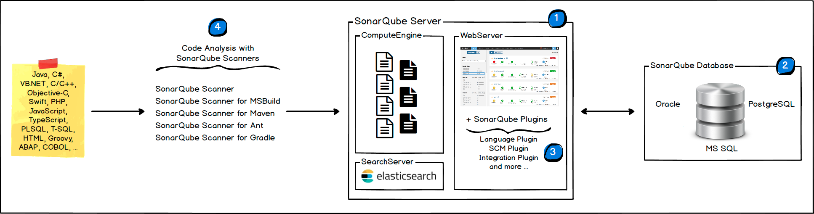

Documentation
Welcome to the new SonarQube documentation
If you already have a SonarQube instance, you should be aware that
we've made this documentation available within SonarQube itself (from
v7.4). Just look under the "?" in the top menu to be sure you're always
looking at the right documentation for your version!
SonarQube® is an automatic code review tool to detect bugs, vulnerabilities and code smells in your code. It can integrate with your existing workflow to enable continuous code inspection across your project branches and pull requests.
Below are a few key pointers, otherwise head over to the left pane for full documentation content and search capabilities.
I'm new to SonarQube
- Installing a quick demo version.
- Installing a production instance.
I need to set up analysis
I write code
- Why new code is the most important
- Concepts
- Quality Gates
- Issues
I administer a project
- Project Existence
- What's included, excluded from analysis
- Webhooks
- Project Settings
I administer a SonarQube Instance
I do DevOps
- Installing a production instance.
- Upgrading
- Monitoring
- Running a Cluster
Stay in touch!
Architecture and Integration
Overview
The SonarQube Platform is made of 4 components:

-
One SonarQube Server starting 3 main processes:
- Web Server for developers, managers to browse quality snapshots and configure the SonarQube instance
- Search Server based on Elasticsearch to back searches from the UI
- Compute Engine Server in charge of processing code analysis reports and saving them in the SonarQube Database
-
One SonarQube Database to store:
- the configuration of the SonarQube instance (security, plugins settings, etc.)
- the quality snapshots of projects, views, etc.
- Multiple SonarQube Plugins installed on the server, possibly including language, SCM, integration, authentication, and governance plugins
- One or more SonarScanners running on your Build / Continuous Integration Servers to analyze projects
Integration
The following schema shows how SonarQube integrates with other ALM tools and
where the various components of SonarQube are used.

- Developers code in their IDEs and use SonarLint to run local analysis.
- Developers push their code into their favourite SCM : git, SVN, TFVC, ...
- The Continuous Integration Server triggers an automatic build, and the execution of the SonarScanner required to run the SonarQube analysis.
- The analysis report is sent to the SonarQube Server for processing.
- SonarQube Server processes and stores the analysis report results in the SonarQube Database, and displays the results in the UI.
- Developers review, comment, challenge their Issues to manage and reduce their Technical Debt through the SonarQube UI.
- Managers receive Reports from the analysis. Ops use APIs to automate configuration and extract data from SonarQube. Ops use JMX to monitor SonarQube Server.
About Machines and Locations
- The SonarQube Platform cannot have more than one SonarQube Server (although the Server can be installed as a cluster) and one SonarQube Database.
- For optimal performance, each component (server, database, scanners) should be installed on a separate machine, and the server machine(s) should be dedicated.
- SonarScanners scale by adding machines.
- All machines must be time synchronized.
- The SonarQube Server and the SonarQube Database must be located in the same network
- SonarScanners don't need to be on the same network as the SonarQube Server.
- There is no communication between SonarScanners and the SonarQube Database.
Prerequisites and Overview
Prerequisite
The only prerequisite for running SonarQube is to have Java (Oracle JRE 11 or OpenJDK 11) installed on your machine.
Hardware Requirements
- A small-scale (individual or small team) instance of the SonarQube server requires at least 2GB of RAM to run efficiently and 1GB of free RAM for the OS. If you are installing an instance for a large teams or Enterprise, please consider the additional recommendations below.
- The amount of disk space you need will depend on how much code you analyze with SonarQube.
- SonarQube must be installed on hard drives that have excellent read & write performance. Most importantly, the "data" folder houses the Elasticsearch indices on which a huge amount of I/O will be done when the server is up and running. Great read & write hard drive performance will therefore have a great impact on the overall SonarQube server performance.
- SonarQube does not support 32-bit systems on the server side. SonarQube does, however, support 32-bit systems on the scanner side.
Enterprise Hardware Recommendations
For large teams or Enterprise-scale installations of SonarQube, additional hardware is required. At the Enterprise level, monitoring your SonarQube instance is essential and should guide further hardware upgrades as your instance grows. A starting configuration should include at least:
- 8 cores, to allow the main SonarQube platform to run with multiple Compute Engine workers
- 16GB of RAM For additional requirements and recommendations relating to database and ElasticSearch, see Hardware Recommendations.
Supported Platforms
Java
SonarQube scanners require version 8 or 11 of the JVM and the SonarQube server requires version 11. Versions beyond Java 11 are not officially supported.
The SonarQube Java analyzer is able to analyze any kind of Java source files regardless of the version of Java they comply to.
We recommend using the Critical Patch Update (CPU) releases.
| Java | Server | Scanners |
|---|---|---|
| Oracle JRE |
 11 11 |
11 |
 8 8 |
8 |
|
| OpenJDK |
11 |
11 |
|
8 |
8 |
| Database | |
|---|---|
| PostgreSQL |
12 |
|
11 |
|
|
10 |
|
|
9.3–9.6 |
|
| Must be configured to use UTF-8 charset | |
| Microsoft SQL Server |
2017 (MSSQL Server 14.0) with bundled
Microsoft JDBC driver. Express Edition is supported. |
|
2016 (MSSQL Server 13.0) with bundled
Microsoft JDBC driver. Express Edition is supported. |
|
|
2014 (MSSQL Server 12.0) with bundled
Microsoft JDBC driver. Express Edition is supported. |
|
| Collation must be case-sensitive (CS) and accent-sensitive (AS) (example: Latin1GeneralCS_AS) | |
READ_COMMITTED_SNAPSHOT must be set on the SonarQube
database to avoid potential deadlocks under heavy load |
|
 Both Windows authentication (“Integrated
Security”) and SQL Server authentication are supported. See the
Microsoft SQL Server section in
Installing/installation/installing-the-server page for instructions
on configuring authentication. Both Windows authentication (“Integrated
Security”) and SQL Server authentication are supported. See the
Microsoft SQL Server section in
Installing/installation/installing-the-server page for instructions
on configuring authentication. |
|
| Oracle |
19C |
|
18C |
|
|
12C |
|
|
11G |
|
|
XE Editions |
|
| Must be configured to use a UTF8-family charset (see NLS_CHARACTERSET) | |
| The driver ojdbc14.jar is not supported | |
|
We recommend using the latest Oracle
JDBC driver |
|
| Only the thin mode is supported, not OCI |
Web Browser
To get the full experience SonarQube has to offer, you must enable JavaScript in your browser.
| Browser | |
|---|---|
| Microsoft Internet Explorer |
IE 11 |
| Microsoft Edge |
Latest |
| Mozilla Firefox |
Latest |
| Google Chrome |
Latest |
| Opera | Not tested |
| Safari |
Latest |
ALM Integrations
Azure Devops Server
The SonarScanner for Azure Devops is compatible with TFS 2017 Update 2 and greater
Bitbucket Server
To add Pull Request analysis to Code Insights in Bitbucket Server, you must be running Bitbucket Server version 5.15+.
GitHub Enterprise and GitHub.com
To add Pull Request analysis to Checks in GitHub Enterprise, you must be running GitHub Enterprise version 2.14+.
GitHub.com is also supported.
GitLab Self-Managed and GitLab.com
To add Merge Request Decoration to your Merge Requests in GitLab Self-Managed, you must be running Gitlab Self-Manged 11.7+.
GitLab.com is also supported.
Platform notes
Linux
If you're running on Linux, you must ensure that:
-
vm.max_map_countis greater or equals to 262144 -
fs.file-maxis greater or equals to 65536 - the user running SonarQube can open at least 65536 file descriptors
- the user running SonarQube can open at least 4096 threads
You can see the values with the following commands:
sysctl vm.max_map_count sysctl fs.file-max ulimit -n ulimit -u
You can set them dynamically for the current session by running the following
commands as root:
sysctl -w vm.max_map_count=262144 sysctl -w fs.file-max=65536 ulimit -n 65536 ulimit -u 4096
To set these values more permanently, you must update either /etc/sysctl.d/99-sonarqube.conf (or /etc/sysctl.conf as you wish) to reflect these values.
If the user running SonarQube (sonarqube in this example) does not
have the permission to have at least 65536 open descriptors, you must insert
this line in /etc/security/limits.d/99-sonarqube.conf (or
/etc/security/limits.conf as you wish):
sonarqube - nofile 65536 sonarqube - nproc 4096
You can get more detail in the Elasticsearch documentation.
If you are using systemd to start SonarQube, you must specify those
limits inside your unit file in the section [service] :
[Service] ... LimitNOFILE=65536 LimitNPROC=4096 ...
seccomp filter
By default, Elasticsearch uses seccomp filter. On most distribution this feature is
activated in the kernel, however on distributions like Red Hat Linux 6 this
feature is deactivated. If you are using a distribution without this feature and
you cannot upgrade to a newer version with seccomp activated, you have to
explicitly deactivate this security layer by updating
sonar.search.javaAdditionalOpts in
$SONARQUBEHOME/conf/sonar.properties_:
sonar.search.javaAdditionalOpts=-Dbootstrap.system_call_filter=false
You can check if seccomp is available on your kernel with:
$ grep SECCOMP /boot/config-$(uname -r)
If your kernel has seccomp, you will see:
CONFIG_HAVE_ARCH_SECCOMP_FILTER=y CONFIG_SECCOMP_FILTER=y CONFIG_SECCOMP=y
For more detail, see the Elasticsearch documentation.
Fonts
Generating Executive Reports requires that fonts be installed on the server hosting SonarQube. On Windows servers, this is a given. However, this is not always the case for Linux servers.
The following should be ensured:
- Fontconfig is installed on the server hosting SonarQube
- A package of FreeType fonts is installed on the SonarQube server.
The exact packages available will vary by distribution, but a commonly used
package is
libfreetype6
Hardware Recommendations
Database
We recommend that for large instances, the database used by SonarQube is hosted on a machine which is physically separate from SonarQube Server but close to it on the network.
Oracle
In case your SonarQube Server is running on Linux and you are using Oracle, the Oracle JDBC Driver may be blocked due to /dev/random. See this Oracle article for more details about this problem.
To avoid it, you may want to add this JVM parameter to your SonarQube Web Server
(sonar.web.javaOpts) configuration :
-Djava.security.egd=file:///dev/urandom
Elasticsearch (ES)
- Elasticsearch is used by SonarQube in the background in the SearchServer process. To ensure good performance of your SonarQube, you need to follow these recommendations that are linked to ES usage.
Disk
- Free disk space is an absolute requirement. ES implements a safety mechanism to prevent the disk from being flooded with index data that locks all indices in read-only mode when a 95% disk usage watermark is reached. For information on recovering from ES read-only indices, see the Troubleshooting page.
- Disk can easily become the bottleneck of ES. If you can afford SSDs, they are by far superior to any spinning media. SSD-backed nodes see boosts in both query and indexing performance. If you use spinning media, try to obtain the fastest disks possible (high performance server disks 15k RPM drives).
- Using RAID 0 is an effective way to increase disk speed, for both spinning disks and SSD. There is no need to use mirroring or parity variants of RAID because of Elasticsearch replicas and database primary storage.
- Do not use remote-mounted storage, such as NFS, SMB/CIFS or network-attached storages (NAS). They are often slower, display larger latencies with a wider deviation in average latency, and are a single point of failure.
Advanced
- If you are using SSD, make sure your OS I/O Scheduler is configured correctly. When you write data to disk, the I/O Scheduler decides when that data is actually sent to the disk. The default under most *nix distributions is a scheduler called cfq (Completely Fair Queuing). This scheduler allocates "time slices" to each process, and then optimizes the delivery of these various queues to the disk. It is optimized for spinning media: the nature of rotating platters means it is more efficient to write data to disk based on physical layout. This is very inefficient for SSD, however, since there are no spinning platters involved. Instead, deadline or noop should be used instead. The deadline scheduler optimizes based on how long writes have been pending, while noop is just a simple FIFO queue. This simple change can have dramatic impacts.
- If SQ home directory is located on a slow disk, then the property
sonar.path.datacan be used to move data to a faster disk (RAID 0 local SSD for instance).
Memory
- Machine available memory for OS must be at least the Elasticsearch heap size. The reason is that Lucene (used by ES) is designed to leverage the underlying OS for caching in-memory data structures. That means that by default OS must have at least 1Gb of available memory.
- Don't allocate more than 32Gb. See this ElasticSearch article for more details.
CPU
- If you need to choose between faster CPUs or more cores, then choose more cores. The extra concurrency that multiple cores offers will far outweigh a slightly faster clock-speed.
- By nature data are distributed on multiples nodes, so execution time depends on the slowest node. It's better to have multiple medium boxes than one fast + one slow.
Overview
Get Started in Two Minutes
To give the SonarQube Platform a quick try, follow the Get Started in Two Minutes Guide.
Install a Production Instance
To install a production instance, read the Requirements, and then follow the Installation Guide.
After the Installation
After your server is up and running, you'll need to install one or more SonarScanners on the machines where analysis will be performed.
Upgrade your Production Instance
To upgrade your production instance, read the Upgrade Guide and the relevant, version-specific upgrade notes.
Get Started in Two Minutes Guide
This guides shows you how to install a demo instance. When you are ready to move to production, take some time to read the Install the Server documentation.
Installing from a zip file
- Download the SonarQube Community Edition.
- As a non-
rootuser, unzip it, let's say in C:\sonarqube or /opt/sonarqube. -
As a non-
rootuser, start the SonarQube Server:# On Windows, execute: C:\sonarqube\bin\windows-x86-xx\StartSonar.bat # On other operating systems, as a non-root user execute: /opt/sonarqube/bin/[OS]/sonar.sh console If your instance fails to start, check your
logs to find the cause. - Log in to http://localhost:9000 with System Administrator credentials (login=admin, password=admin).
- Click the Create new project button to analyze your first project.
Using Docker
Images of the Community, Developer, and Enterprise Editions are available on Docker Hub.
- Start the server by running:
$ docker run -d --name sonarqube -p 9000:9000 <image_name>
- Log in to http://localhost:9000 with System Administrator credentials (login=admin, password=admin).
- Click the Create new project button to analyze your first project.
Install the Server
Installing the Database
Several database engines are supported. Be sure to follow the requirements listed for your database, they are real requirements not recommendations.
Create an empty schema and a sonarqube user. Grant this
sonarqube user permissions to create,
update, and delete objects for this schema.
Microsoft SQL Server
Collation MUST be case-sensitive (CS) and
accent-sensitive (AS).
READ_COMMITED_SNAPSHOT
MUST be set on the SonarQube database.
MS SQL database's shared lock strategy may impact SonarQube runtime.
Making sure that is_read_committed_snapshot_on is set to
true to prevent SonarQube from facing potential deadlocks
under heavy loads.
Example of query to check is_read_committed_snapshot_on:
SELECT is_read_committed_snapshot_on FROM sys.databases WHERE name='YourSonarQubeDatabase';
Example of query to update is_read_committed_snapshot_on:
ALTER DATABASE YourSonarQubeDatabase SET READ_COMMITTED_SNAPSHOT ON WITH ROLLBACK IMMEDIATE;
Integrated Security
To use integrated security:
- Download the Microsoft SQL JDBC Driver 7.2.2 package and
copy the 64-bit version of
sqljdbc_auth.dllto any folder in your path. -
If you're running SonarQube as a Windows service, make sure the Windows account under which the service is running has permission to connect your SQL server. The account should have
db_ownerdatabase role membership.If you're running the SonarQube server from a command prompt, the user under which the command prompt is running should have
db_ownerdatabase role membership. - Ensure that
sonar.jdbc.usernameorsonar.jdbc.passwordproperties are commented out or SonarQube will use SQL authentication.
sonar.jdbc.url=jdbc:sqlserver://localhost;databaseName=sonar;integratedSecurity=true
SQL Authentication
To use SQL Authentication, use the following connection string. Also
ensure that sonar.jdbc.username and
sonar.jdbc.password are set appropriately:
sonar.jdbc.url=jdbc:sqlserver://localhost;databaseName=sonar sonar.jdbc.username=sonarqube sonar.jdbc.password=mypassword
Oracle
If there are two SonarQube schemas on the same Oracle instance, especially if they are for two different versions, SonarQube gets confused and picks the first it finds. To avoid this issue:
- Either privileges associated to the SonarQube Oracle user should be decreased
- Or a trigger should be defined on the Oracle side to automatically alter the SonarQube Oracle user session when establishing a new connection:
Oracle JDBC driver versions 12.1.0.1 and 12.1.0.2 have major bugs, and are not recommended for use with the SonarQube (see more details).
PostgreSQL
If you want to use a custom schema and not the default "public" one, the
PostgreSQL search_path property must be set:
ALTER USER mySonarUser SET search_path to mySonarQubeSchema
Installing the Server from the ZIP file
First, check the requirements. Then download and unzip the distribution (do not unzip into a directory starting with a digit).
SonarQube cannot be run as root on Unix-based systems, so create a
dedicated user account to use for SonarQube if necessary.
$SONARQUBE-HOME (below) refers to the path to the directory where the SonarQube distribution has been unzipped.
Setting the Access to the Database
Edit $SONARQUBE-HOME/conf/sonar.properties to configure the database settings. Templates are available for every supported database. Just uncomment and configure the template you need and comment out the lines dedicated to H2:
Example for PostgreSQL sonar.jdbc.username=sonarqube sonar.jdbc.password=mypassword sonar.jdbc.url=jdbc:postgresql://localhost/sonarqube
Adding the JDBC Driver
Drivers for the supported databases (except Oracle) are already provided. Do not replace the provided drivers; they are the only ones supported.
For Oracle, copy the JDBC driver into $SONARQUBE-HOME/extensions/jdbc-driver/oracle.
Configuring the Elasticsearch storage path
By default, Elasticsearch data is stored in $SONARQUBE-HOME/data, but this is not recommended for production instances. Instead, you should store this data elsewhere, ideally in a dedicated volume with fast I/O. Beyond maintaining acceptable performance, doing so will also ease the upgrade of SonarQube.
Edit $SONARQUBE-HOME/conf/sonar.properties to configure the following settings:
sonar.path.data=/var/sonarqube/data sonar.path.temp=/var/sonarqube/temp
The user used to launch SonarQube must have read and write access to those directories.
Starting the Web Server
The default port is "9000" and the context path is "/". These values can be changed in $SONARQUBE-HOME/conf/sonar.properties:
sonar.web.host=192.0.0.1 sonar.web.port=80 sonar.web.context=/sonarqube
Execute the following script to start the server:
- On Linux/Mac OS: bin/
/sonar.sh start - On Windows: bin/windows-x86-64/StartSonar.bat
You can now browse SonarQube at
http://localhost:9000
(the default System administrator credentials are
admin/admin).
Adjusting the Java Installation
If there are multiple versions of Java installed on your server, you may need to explicitly define which version of Java is used.
To change the Java JVM used by SonarQube, edit $SONARQUBE-HOME/conf/wrapper.conf and update the following line:
wrapper.java.command=/path/to/my/jdk/bin/java
Advanced Installation Features
- Running SonarQube as a Service on Windows or Linux
- Running SonarQube behind a Proxy
- Monitoring and adjusting Java Process Memory
Installing the Server from the Docker Image
See your SonarQube version below for instructions on installing the server from a Docker image.
SonarQube 8.2+
Follow these steps for your first installation:
-
Creating the following volumes helps prevent the loss of information when updating to a new version or upgrading to a higher edition:
-
sonarqube_data– contains data files, such as the embedded H2 database and Elasticsearch indexes -
sonarqube_logs– contains SonarQube logs about access, web process, CE process, and Elasticsearch -
sonarqube_extensions– contains plugins, such as language analyzers
Create the volumes with the following commands:
$> docker volume create --name sonarqube_data $> docker volume create --name sonarqube_extensions $> docker volume create --name sonarqube_logsMake sure you're using volumes as shown with the above commands, and not bind mounts. Using bind mounts prevents plugins and languages from populating correctly.
-
-
Drivers for supported databases (except Oracle) are already provided. If you're using an Oracle database, you need to add the JDBC driver to the
sonar_extensionsvolume. To do this:a. Start the SonarQube container with the embedded H2 database:
$ docker run --rm \ -p 9000:9000 \ -v sonarqube_extensions:/opt/sonarqube/extensions \ <image_name>b. Exit once SonarQube has started properly.
c. Copy the Oracle driver into
sonarqube_extensions/jdbc-driver/oracle. -
Run the image with your database properties defined using the -e environment variable flag:
$> docker run -d --name sonarqube \ -p 9000:9000 \ -e SONAR_JDBC_URL=... \ -e SONAR_JDBC_USERNAME=... \ -e SONAR_JDBC_PASSWORD=... \ -v sonarqube_data:/opt/sonarqube/data \ -v sonarqube_extensions:/opt/sonarqube/extensions \ -v sonarqube_logs:/opt/sonarqube/logs \ <image_name>For more configuration environment variables, see the Docker Environment Variables.
Use of the environment variables
SONARQUBE_JDBC_USERNAME,SONARQUBE_JDBC_PASSWORD, andSONARQUBE_JDBC_URLis deprecated and will stop working in future releases.
SonarQube 7.9.x LTS
Follow these steps for your first installation:
-
Create volumes
sonarqube_conf,sonarqube_data,sonarqube_logs, andsonarqube_extensionsand start the image with the following command. This will populate all the volumes (copying default plugins, create the Elasticsearch data folder, create the sonar.properties configuration file). Watch the logs, and, once the container is properly started, you can force-exit (ctrl+c) and proceed to the next step.$ docker run --rm \ -p 9000:9000 \ -v sonarqube_conf:/opt/sonarqube/conf \ -v sonarqube_extensions:/opt/sonarqube/extensions \ -v sonarqube_logs:/opt/sonarqube/logs \ -v sonarqube_data:/opt/sonarqube/data \ <image_name> -
Configure sonar.properties if needed. Please note that due to SONAR-12501, providing
sonar.jdbc.url,sonar.jdbc.username,sonar.jdbc.passwordandsonar.web.javaAdditionalOptsinsonar.propertiesis not working, and you will need to explicitly define theses values in the docker run command with the-eflag.#Example for PostgreSQL -e sonar.jdbc.url=jdbc:postgresql://localhost/sonarqube
Drivers for supported databases (except Oracle) are already provided. Do
not replace the provided drivers; they are the only ones supported. For
Oracle, you need to copy the JDBC driver into
$SONARQUBE_HOME/extensions/jdbc-driver/oracle.
-
Run the image with your JDBC username and password :
$ docker run -d --name sonarqube \ -p 9000:9000 \ -e sonar.jdbc.url=... \ -e sonar.jdbc.username=... \ -e sonar.jdbc.password=... \ -v sonarqube_conf:/opt/sonarqube/conf \ -v sonarqube_extensions:/opt/sonarqube/extensions \ -v sonarqube_logs:/opt/sonarqube/logs \ -v sonarqube_data:/opt/sonarqube/data \ <image_name>
Next Steps
Once your server is installed and running, you may also want to Install Plugins. Then you're ready to begin Analyzing Source Code.
Troubleshooting/FAQ
Failed to connect to the Marketplace via proxy
Double check that settings for proxy are correctly set in
$SONARQUBE_HOME/conf/sonar.properties. Note that if your proxy
username contains a backslash, then it should be escaped - for example username
"domain\user" in file should look like:
http.proxyUser=domain\\user
For some proxies, the exception "java.net.ProtocolException: Server redirected too many times" might mean an incorrect username or password has been configured.
Exception java.lang.RuntimeException: can not run elasticsearch as root
SonarQube starts an Elasticsearch process, and the same account that is running
SonarQube itself will be used for the Elasticsearch process. Since Elasticsearch
cannot be run as root, that means SonarQube can't be either. You
must choose some other, non-root account with which to run
SonarQube, preferably an account dedicated to the purpose.
Operating the Server
Running SonarQube as a Service on Windows
Install or Uninstall NT Service (may have to run these files via Run As Administrator):
%SONARQUBE_HOME%/bin/windows-x86-64/InstallNTService.bat %SONARQUBE_HOME%/bin/windows-x86-64/UninstallNTService.bat
Start or Stop the Service:
%SONARQUBE_HOME%/bin/windows-x86-64/StartNTService.bat %SONARQUBE_HOME%/bin/windows-x86-64/StopNTService.bat
Note:
%SONARQUBE_HOME%/bin/windows-x86-64/StopNTService.bat does a
graceful shutdown where no new analysis report processing can start, but the
tasks in progress are allowed to finish. The time a stop will take depends on
the processing time of the tasks in progress. You'll need to kill all SonarQube
processes manually to force a stop.
Running SonarQube Manually on Linux
Start or Stop the Instance
Start: $SONAR_HOME/bin/linux-x86-64/sonar.sh start Graceful shutdown: $SONAR_HOME/bin/linux-x86-64/sonar.sh stop Hard stop: $SONAR_HOME/bin/linux-x86-64/sonar.sh force-stop
Note: Stop does a graceful shutdown where no new analysis report processing can start, but the tasks in progress are allowed to finish. The time a stop will take depends on the processing time of the tasks in progress. Use force stop for a hard stop.
Running SonarQube as a Service on Linux with SystemD
On a Unix system using SystemD, you can install SonarQube as a service. You
cannot run SonarQube as root in 'nix systems. Ideally, you will
created a new account dedicated to the purpose of running SonarQube. Let's
suppose:
- The user used to start the service is
sonarqube - The group used to start the service is
sonarqube - The Java Virtual Machine is installed in
/opt/java/ - SonarQube has been unzipped into
/opt/sonarqube/
Then create the file /etc/systemd/system/sonarqube.service
based on the following
[Unit] Description=SonarQube service After=syslog.target network.target [Service] Type=simple User=sonarqube Group=sonarqube PermissionsStartOnly=true ExecStart=/bin/nohup /opt/java/bin/java -Xms32m -Xmx32m -Djava.net.preferIPv4Stack=true -jar /opt/sonarqube/lib/sonar-application-7.4.jar StandardOutput=syslog LimitNOFILE=65536 LimitNPROC=8192 TimeoutStartSec=5 Restart=always SuccessExitStatus=143 [Install] WantedBy=multi-user.target
Note
- Because the sonar-application jar name ends with the version of SonarQube,
you will need to adjust the
ExecStartcommand accordingly on install and at each upgrade. - The SonarQube data directory,
/opt/sonarqube/data, and the extensions directory,/opt/sonarqube/extensionsshould be owned by thesonarqubeuser. As a good practice, the rest should be owned byroot
Once your sonarqube.service file is created and properly configured,
run:
sudo systemctl enable sonarqube.service sudo systemctl start sonarqube.service
Running SonarQube as a Service on Linux with initd
The following has been tested on Ubuntu 8.10 and CentOS 6.2.
Create the file /etc/init.d/sonar with this content:
#!/bin/sh # # rc file for SonarQube # # chkconfig: 345 96 10 # description: SonarQube system (www.sonarsource.org) # ### BEGIN INIT INFO # Provides: sonar # Required-Start: $network # Required-Stop: $network # Default-Start: 3 4 5 # Default-Stop: 0 1 2 6 # Short-Description: SonarQube system (www.sonarsource.org) # Description: SonarQube system (www.sonarsource.org) ### END INIT INFO /usr/bin/sonar $*
Register SonarQube at boot time (RedHat, CentOS, 64 bit):
sudo ln -s $SONAR_HOME/bin/linux-x86-64/sonar.sh /usr/bin/sonar sudo chmod 755 /etc/init.d/sonar sudo chkconfig --add sonar
Once registration is done, run:
sudo service sonar start
Securing the Server Behind a Proxy
This section helps you configure the SonarQube Server if you want to run it behind a proxy. This can be done for security concerns or to consolidate multiple disparate applications.
Server Configuration
To run the SonarQube server over HTTPS, you must build a standard reverse proxy infrastructure.
The reverse proxy must be configured to set the value
X_FORWARDED_PROTO: https in each HTTP request header. Without this
property, redirection initiated by the SonarQube server will fall back on HTTP.
Using an Apache Proxy
We assume that you've already installed Apache 2 with module modproxy, that
SonarQube is running and available on `http://private
sonarhost:sonarport/and that you want to configure a Virtual Host forwww.public_sonar.com`.
At this point, edit the HTTPd configuration file for the
www.public_sonar.com virtual host. Include the following to expose
SonarQube via mod_proxy at
http://www.public_sonar.com/:
ProxyRequests Off ProxyPreserveHost On <VirtualHost *:80>ServerName www.public_sonar.com ServerAdmin admin@somecompany.com ProxyPass / http://private_sonar_host:sonar_port/ ProxyPassReverse / http://www.public_sonar.com/ ErrorLog logs/somecompany/sonar/error.log CustomLog logs/somecompany/sonar/access.log common </VirtualHost>
Apache configuration is going to vary based on your own application's requirements and the way you intend to expose SonarQube to the outside world. If you need more details about Apache HTTPd and mod_proxy, please see http://httpd.apache.org.
Using Nginx
We assume that you've already installed Nginx, that you are using a Virtual Host
for www.somecompany.com and that SonarQube is running and available on
http://sonarhost:sonarport/.
At this point, edit the Nginx configuration file. Include the following to expose SonarQube at http://www.somecompany.com/:
# the server directive is nginx's virtual host directive server { # port to listen on. Can also be set to an IP:PORT listen 80; # sets the domain[s] that this vhost server requests for server_name www.somecompany.com; location / { proxy_pass http://sonarhost:sonarport; } }
Nginx configuration will vary based on your own application's requirements and the way you intend to expose SonarQube to the outside world. If you need more details about Nginx, please see https://www.nginx.com/resources/admin-guide/reverse-proxy/.
Note that you may need to increase the max URL length since SonarQube requests can have URLs longer than 2048.
Using IIS
Please see: http://blog.jessehouwing.nl/2016/02/configure-ssl-for-sonarqube-on-windows.html
Note that the setup described in this blog post is not approprite for SAML through IIS.
Environment Variables
This page provides environment variables used for configuring SonarQube with Docker. The values provided in the following environment variables are the default values.
Database
- The embedded H2 database is used by default. It is recommended for tests but not for production use. Supported databases are Oracle, PostgreSQL, and Microsoft SQLServer.
- Changes to the database connection URL (sonar.jdbc.url) can affect SonarSource licensed products.
User Credentials
SONAR_JDBC_USERNAME=
SONAR_JDBC_PASSWORD=
Permissions to create tables, indices, and triggers must be granted to JDBC
user. The schema must be created first.
Embedded Database (default)
SONAR_EMBEDDEDDATABASE_PORT=9092
H2 embedded database server listening port, defaults to 9092.
Oracle 11g/12c/18c/19c
SONAR_JDBC_URL=jdbc:oracle:thin:@localhost:1521/XE
The Oracle JDBC driver must be copied into the directory
extensions/jdbc-driver/oracle/. Only the thin client is supported, and we
recommend using the latest Oracle JDBC driver. See https://jira.sonarsource.com/browse/SONAR-9758 for more
details. If you need to set the schema, please refer to http://jira.sonarsource.com/browse/SONAR-5000.
PostgreSQL 9.3 or greater
SONAR_JDBC_URL=jdbc:postgresql://localhost/sonarqube?currentSchema=my_schema
By default the schema named "public" is used. It can be overridden with the
parameter "currentSchema".
Microsoft SQLServer 2014/2016/2017 and SQL Azure
SONAR_JDBC_URL=jdbc:sqlserver://localhost;databaseName=sonar;integratedSecurity=true
A database named sonar must exist and its collation must be case-sensitive
(CS) and accent-sensitive (AS). Use this connection string if you want to use
integrated security with Microsoft Sql Server. Do not set the
SONAR_JDBC_USERNAME or SONAR_JDBC_PASSWORD property if
you are using Integrated Security.
For Integrated Security to work, you have to download the Microsoft SQL JDBC driver package here and copy sqljdbc_auth.dll to your path. You need to copy the 64-bit version of the dll.
SONAR_JDBC_URL=jdbc:sqlserver://localhost;databaseName=sonar
Use this connection string if you want to use SQL Auth while connecting to
MS Sql Server. Set the SONAR_JDBC_USERNAME and
SONAR_JDBC_PASSWORD appropriately.
Connection pool settings
SONAR_JDBC_MAXACTIVE=60
The maximum number of active connections that can be allocated at the same
time, or negative for no limit. The recommended value is 1.2 * max sizes of HTTP
pools. For example, if HTTP ports are enabled with default sizes (50, see
property sonar.web.http.maxThreads) then
SONAR_JDBC_MAXACTIVE should be 1.2 * 50 = 60.
SONAR_JDBC_MAXIDLE=5
The maximum number of connections that can remain idle in the pool, without
extra ones being released, or negative for no limit.
SONAR_JDBC_MINIDLE=2
The minimum number of connections that can remain idle in the pool, without
extra ones being created, or zero to create none.
SONAR_JDBC_MAXWAIT=5000
The maximum number of milliseconds that the pool will wait (when there are
no available connections) for a connection to be returned before throwing an
exception, or <= 0 to wait indefinitely.
SONAR_JDBC_MINEVICTABLEIDLETIMEMILLIS=600000
SONAR_JDBC_TIMEBETWEENEVICTIONRUNSMILLIS=30000
Web Server
SONAR_WEB_JAVAOPTS=@webJavaOpts@
the web server is executed in a dedicated Java process. By default, heap
size is @webDefaultHeapSize@. Use this property to customize JVM options.
SONAR_WEB_JAVAADDITIONALOPTS=
Same as previous property, but allows to not repeat all other settings like
-Xmx
SONAR_WEB_HOST=0.0.0.0
Binding IP address. For servers with more than one IP address, this property
specifies which address will be used for listening on the specified ports. By
default, ports will be used on all IP addresses associated with the server.
SONAR_WEB_CONTEXT=
Web context. When set, it must start with a forward slash (for example
/sonarqube). The default value is root context (empty value).
SONAR_WEB_PORT=9000
TCP port for incoming HTTP connections. Default value is 9000.
SONAR_WEB_HTTP_MAXTHREADS=50
The maximum number of connections that the server will accept and process at
any given time. When this number has been reached, the server will not accept
any more connections until the number of connections falls below this value. The
operating system may still accept connections based on the
SONAR_WEB_CONNECTIONS_ACCEPTCOUNT property. The default value is
50.
SONAR_WEB_HTTP_MINTHREADS=5
The minimum number of threads always kept running. The default value is 5.
SONAR_WEB_HTTP_ACCEPTCOUNT=25
The maximum queue length for incoming connection requests when all possible
request processing threads are in use. Any requests received when the queue is
full will be refused. The default value is 25.
SONAR_AUTH_JWTBASE64HS256SECRET=
By default users are logged out and sessions closed when server is
restarted. If you prefer keeping user sessions open, a secret should be defined.
Value is HS256 key encoded with base64. It must be unique for each installation
of SonarQube. Example of command-line:
echo -n "typewhatyou_want" |
openssl dgst -sha256 -hmac "key" -binary | base64
SONAR_WEB_SESSIONTIMEOUTINMINUTES=4320
The inactivity timeout duration of user sessions, in minutes. After the
configured period of time, the user is logged out. The default value is set to 3
days (4320 minutes) and cannot be greater than 3 months. Value must be strictly
positive.
SONAR_WEB_SYSTEMPASSCODE=
A passcode can be defined to access some web services from monitoring tools
without having to use the credentials of a system administrator. Check the Web
API documentation to know which web services are supporting this authentication
mode. The passcode should be provided in HTTP requests with the header
"X-Sonar-Passcode". By default feature is disabled.
SSO Authentication
SONAR_WEB_SSO_ENABLE=false
Enable authentication using HTTP headers
SONAR_WEB_SSO_LOGINHEADER=X-Forwarded-Login
Name of the header to get the user login. Only alphanumeric, '.' and '@'
characters are allowed
SONAR_WEB_SSO_NAMEHEADER=X-Forwarded-Name
Name of the header to get the user name
SONAR_WEB_SSO_EMAILHEADER=X-Forwarded-Email
Name of the header to get the user email (optional)
SONAR_WEB_SSO_GROUPSHEADER=X-Forwarded-Groups
Name of the header to get the list of user groups, separated by comma
(optional). If the SONARSSOGROUPSHEADER is set, the user will belong to
those groups if groups exist in SonarQube. If none of the provided groups exists
in SonarQube, the user will only belong to the default group. Note that the
default group will always be set.
SONAR_WEB_SSO_REFRESHINTERVALINMINUTES=5
Interval used to know when to refresh name, email, and groups. During this
interval, if for instance the name of the user is changed in the header, it will
only be updated after X minutes.
LDAP Configuration
SONAR_SECURITY_REALM=LDAP
Enable the LDAP feature
SONAR_AUTHENTICATOR_DOWNCASE=true
Set to true when connecting to a LDAP server using a case-insensitive setup.
LDAP_URL=ldap://localhost:10389
URL of the LDAP server. Note that if you are using ldaps, then you should
install the server certificate into the Java truststore.
LDAP_BINDDN=cn=sonar,ou=users,o=mycompany
Bind DN is the username of an LDAP user to connect (or bind) with. Leave
this blank for anonymous access to the LDAP directory (optional)
LDAP_BINDPASSWORD=secret
Bind Password is the password of the user to connect with. Leave this blank
for anonymous access to the LDAP directory (optional)
LDAP_AUTHENTICATION=simple
Possible values: simple | CRAM-MD5 | DIGEST-MD5 | GSSAPI See http://java.sun.com/products/jndi/tutorial/ldap/security/auth.html
(default: simple)
LDAP_REALM=example.org
See :
- http://java.sun.com/products/jndi/tutorial/ldap/security/digest.html
- http://java.sun.com/products/jndi/tutorial/ldap/security/crammd5.html(optional)
LDAP_CONTEXTFACTORYCLASS=com.sun.jndi.ldap.LdapCtxFactory
Context factory class (optional)
LDAP_STARTTLS=true
Enable usage of StartTLS (default : false)
LDAP_FOLLOWREFERRALS=false
Follow or not referrals. See http://docs.oracle.com/javase/jndi/tutorial/ldap/referral/jndi.html
(default: true)
User Mapping
LDAP_USER_BASEDN=cn=users,dc=example,dc=org
Distinguished Name (DN) of the root node in LDAP from which to search for
users (mandatory)
LDAP_USER_REQUEST=(&(objectClass=user)(sAMAccountName={login}))
LDAP user request. (default:
(&(objectClass=inetOrgPerson)(uid={login})) )
LDAP_USER_REALNAMEATTRIBUTE=name
Attribute in LDAP defining the user’s real name. (default: cn)
LDAP_USER_EMAILATTRIBUTE=email
Attribute in LDAP defining the user’s email. (default: mail)
Group Mapping
LDAP_GROUP_BASEDN=cn=groups,dc=example,dc=org
Distinguished Name (DN) of the root node in LDAP from which to search for
groups. (optional, default: empty)
LDAP_GROUP_REQUEST=(&(objectClass=group)(member={dn}))
LDAP group request (default:
(&(objectClass=groupOfUniqueNames)(uniqueMember={dn})) )
LDAP_GROUP_IDATTRIBUTE=sAMAccountName
Property used to specifiy the attribute to be used for returning the list of
user groups in the compatibility mode. (default: cn)
Compute Engine
SONAR_CE_JAVAOPTS=@ceJavaOpts@
The Compute Engine is responsible for processing background tasks. Compute
Engine is executed in a dedicated Java process. Default heap size is
@ceDefaultHeapSize@. Use the following property to customize JVM options.
The HotSpot Server VM is recommended. The property -server should be added if server mode is not enabled by default on your environment:http://docs.oracle.com/javase/8/docs/technotes/guides/vm/server-class.html
SONAR_CE_JAVAADDITIONALOPTS=
Same as previous property, but allows to not repeat all other settings like
-Xmx
Elasticsearch
Elasticsearch is used to facilitate fast and accurate information retrieval. It is executed in a dedicated Java process. Default heap size is @searchDefaultHeapSize@.
Linux users on 64-bit systems, ensure Virtual Memory on your system is correctly configured for Elasticsearch to run properly (see here for details).
When SonarQube runs standalone, a warning such as the following may appear in logs/es.log: "max virtual memory areas vm.maxmapcount [65530] is too low, increase to at least [262144]"
When SonarQube runs as a cluster, however, Elasticsearch will refuse to start.
SONAR_SEARCH_JAVAOPTS=@searchJavaOpts@
JVM options of Elasticsearch process
SONAR_SEARCH_JAVAADDITIONALOPTS=
Same as previous property, but allows to not repeat all other settings like
-Xmx
SONAR_SEARCH_PORT=9001
Elasticsearch port. Default is 9001. Use 0 to get a free port. As a security
precaution, should be blocked by a firewall and not exposed to the Internet.
SONAR_SEARCH_HOST=
Elasticsearch host. The search server will bind this address and the search
client will connect to it. Default is loopback address. As a security
precaution, should NOT be set to a publicly available address.
Update Center
SONAR_UPDATECENTER_ACTIVATE=true
Update Center requires an internet connection to request https://update.sonarsource.orgIt is enabled by default.
HTTP_PROXYHOST=
HTTP_PROXYPORT=
HTTP proxy (default none)
HTTPS_PROXYHOST=
HTTPS_PROXYPORT=
HTTPS proxy (defaults are values of HTTPPROXYHOST and
HTTPPROXYPORT)
HTTP_AUTH_NTLM_DOMAIN=
NT domain name if NTLM proxy is used
SOCKSPROXYHOST=
SOCKSPROXYPORT=
SOCKS proxy (default none)
HTTP_PROXYUSER=
HTTP_PROXYPASSWORD=
Proxy authentication (used for HTTP, HTTPS and SOCKS proxies)
HTTP_NONPROXYHOSTS=
Proxy exceptions: list of hosts that can be accessed without going through
the proxy separated by the '|' character, wildcard character '*' can be used for
pattern matching used for HTTP and HTTPS (default none) (note: localhost and its
literal notations (127.0.0.1, ...) are always excluded).
Logging
SonarQube produces logs in four logs files located in the same directory (see
property SONAR_PATH_LOGS below), one per process:
- Main process (aka. App) logs in sonar.log
- Web Server (aka. Web) logs in web.log
- Compute Engine (aka. CE) logs in ce.log
- Elasticsearch (aka. ES) logs in es.log
All four files follow the same rolling policy (see
SONAR_LOG_ROLLINGPOLICY and SONAR_LOG_MAXFILES) but it
applies individually (eg. if SONAR_LOG_MAXFILES=4, there can be at
most 4 of each files, ie. 16 files in total).
All four files have logs in the same format:
| 1 | 2 | 3 | |||
|---|---|---|---|---|---|
| 2016.11.16 16:47:00 INFO ce[AVht0dNXFcyiYejytc3m][o.s.s.c.t.ceworkercallableimpl] Executed task | project=org.sonarqube:example-java-maven | type=REPORT |
| 4 | 5 | 6 |
|---|---|---|
| id=AVht0dNXFcyiYejytc3m | submitter=admin | time=1699ms |
1: timestamp. Format is YYYY.MM.DD HH:MM:SS
YYYY: year on 4
digits
MM: month on 2 digits
DD: day on 2 digits
HH: hour of day on 2
digits in 24 hours format
MM: minutes on 2 digits
SS: seconds on 2 digits
2: log level.
Possible values (in order of descending
criticality): ERROR, WARN, INFO, DEBUG and TRACE
3: process identifier. Possible values: app (main), web (Web Server), ce (Compute Engine) and es (Elasticsearch)
4: SQ thread identifier. Can be empty. In the Web Server, if present, it will be the HTTP request ID. In the Compute Engine, if present, it will be the task ID.
5: logger name. Usually a class canonical name. Package names are truncated to keep the whole field to 20 characters max
6: log payload. Content of this field does not follow any specific format, can vary in length and include line returns. Some logs, however, will follow the convention to provide data in payload in the format "| key=value" Especially, log of profiled pieces of code will end with "| time=XXXXms".
SONAR_LOG_LEVEL=INFO
Global level of logs (applies to all 4 processes). Supported values are INFO
(default), DEBUG and TRACE
SONAR_LOG_LEVEL_APP=INFO
SONAR_LOG_LEVEL_WEB=INFO
SONAR_LOG_LEVEL_CE=INFO
SONAR_LOG_LEVEL_ES=INFO
Level of logs of each process can be controlled individually with their
respective properties. When specified, they overwrite the level defined at
global level. Supported values are INFO, DEBUG and TRACE
SONAR_PATH_LOGS=logs
Path to log files. Can be absolute or relative to installation directory.
Default is
SONAR_LOG_ROLLINGPOLICY=time:yyyy-MM-dd
Rolling policy of log files:
- based on time if value starts with "time:", for example by day ("time:yyyy-MM-dd") or by month ("time:yyyy-MM")
- based on size if value starts with "size:", for example "size:10MB"
- disabled if value is "none". That needs logs to be managed by an external system like logrotate.
SONAR_LOG_MAXFILES=7
Maximum number of files to keep if a rolling policy is enabled.
- maximum value is 20 on size rolling policy
- unlimited on time rolling policy. Set to zero to disable old file purging.
SONAR_WEB_ACCESSLOGS_ENABLE=true
Access log is the list of all the HTTP requests received by server. If
enabled, it is stored in the file {SONAR_PATH_LOGS}/access.log.
This file follows the same rolling policy as other log file (see
SONAR_LOG_ROLLINGPOLICY and SONAR_LOG_MAXFILES).
SONAR_WEB_ACCESSLOGS_PATTERN=%i{X-Forwarded-For} %l %u [%t] "%r" %s %b "%i{Referer}" "%i{User-Agent}" "%reqAttribute{ID}"
Format of access log. It is ignored if
SONAR_WEB_ACCESSLOGS_ENABLE=false.
Possible values are:
- "common" is the Common Log Format, shortcut to: %h %l %u %user %date "%r" %s %b
- "combined" is another format widely recognized, shortcut to: %h %l %u [%t] "%r" %s %b "%i{Referer}" "%i{User-Agent}"
- else a custom pattern. See http://logback.qos.ch/manual/layouts.html#AccessPatternLayout.
The login of authenticated user is not implemented with "%u" but with
"%reqAttribute{LOGIN}" (since version 6.1).
The value displayed for anonymous
users is "-".
The SonarQube's HTTP request ID can be added to the pattern with "%reqAttribute{ID}" (since version 6.2).
If SonarQube is behind a reverse proxy, then the following value allows to display the correct remote IP address:
Default value (which was "combined" before version 6.2) is equivalent to
"combined + SQ HTTP request
ID":SONAR_WEB_ACCESSLOGS_PATTERN=%h %l %u [%t] "%r" %s %b "%i{Referer}" "%i{User-Agent}" "%reqAttribute{ID}"
Others
SONAR_NOTIFICATIONS_DELAY=60
Delay in seconds between processing of notification queue. Default is 60
seconds.
SONAR_PATH_DATA=data
SONAR_PATH_TEMP=temp
Paths to persistent data files (embedded database and search index) and
temporary files. Can be absolute or relative to installation directory. Defaults
are respectively
SONAR_TELEMETRY_ENABLE=true
Telemetry - Share anonymous SonarQube statistics. By sharing anonymous
SonarQube statistics, you help us understand how SonarQube is used so we can
improve the product to work even better for you. We don't collect source code or
IP addresses. And we don't share the data with anyone else. To see an example of
the data shared: login as a global administrator, call the WS api/system/info
and check the Statistics field.
Development – only for developers
The following properties MUST NOT be used in production environments.
SONAR_SEARCH_HTTPPORT=-1
Elasticsearch HTTP connector
Install a Plugin
There are two options to install a plugin into SonarQube:
- Marketplace - Installs plugins automatically, from the SonarQube UI.
- Manual Installation - You'll use this method if your SonarQube instance doesn't have access to the Internet.
Marketplace
If you have access to the Internet and you are connected with a SonarQube user having the Global Permission "Administer System", you can go to Administration > Marketplace.
- Find the plugin you want to install
- Click on Install and wait for the download to be processed
Once download is complete, a "Restart" button will be available to restart your instance.
See Marketplace for more details on how to configure your SonarQube Server to connect to the Internet.
Manual Installation
In the page dedicated to the plugin you want to install (ex: for Python: SonarPython), click on the "Download" link of the version compatible with your SonarQube version.
Put the downloaded jar in $SONARQUBE_HOME/extensions/plugins,
removing any previous versions of the same plugins.
Once done, you will need to restart your SonarQube Server.
License
If you installed a Commercial Edition, you will need to set the License Key in Administration > Configuration > License Manager before being able to use it.
Install the Server as a Cluster
Running SonarQube as a Cluster is only possible with a Data Center Edition .
The Data Center Edition allows SonarQube to run in a clustered configuration to make it resilient to failures.
Overview
The default configuration for the Data Center Edition comprises five servers, a load balancer, and a database server:
- Two application nodes responsible for handling web requests from users (WebServer process) and handling analysis reports (ComputeEngine process). You can add application nodes to increase computing capabilities.
- Three search nodes that host the Elasticsearch process that will store data indices. SSDs perform significantly better than HDDs for these nodes.
- A reverse proxy / load balancer to load balance traffic between the two application nodes. The installing organization must supply this hardware or software component.
- PostgreSQL, Oracle, or Microsoft SQL Server database server. This software must be supplied by the installing organization.
With this configuration, one application node and one search node can be lost without impacting users. Here is a diagram of the default topology:
Requirements
Network
All servers, including the database server, must be co-located (geographical redundancy is not supported) and have static IP addresses (reference via hostname is not supported). Network traffic should not be restricted between application and search nodes.
Servers
You need a minimum of five servers (two application nodes and three search nodes) to form a SonarQube application cluster. You can add application nodes to increase computing capabilities. Servers can be virtual machines; it is not necessary to use physical machines.
The operating system requirements for servers are available on the Requirements page. All application nodes should be identical in terms of hardware and software. Similarly, all search nodes should be identical to each other. Application and search nodes, however, can differ from one another. Generally, search nodes are configured with more CPU and RAM than application nodes.
Here are the machines we used to perform our validation with a 200M issues database. You can use this as a minimum recommendation to build your cluster.
- App Node made of Amazon EC2 m4.xlarge: 4 vCPUs, 16GB RAM
- Search Node made of Amazon EC2 m4.2xlarge: 8 vCPUs, 32GB RAM - 16GB allocated to Elasticsearch. SSDs perform significantly better than HDDs for these nodes.
Database Server
Supported database systems are available on the Requirements page.
Load Balancer
SonarSource does not provide specific recommendations for reverse proxy / load balancer or solution-specific configuration. The general requirements to use with SonarQube Data Center Edition are:
- Ability to balance HTTP requests (load) between the application nodes configured in the SonarQube cluster.
- If terminating HTTPS, meets the requirements set out in Securing SonarQube Behind a Proxy.
- No requirement to preserve or sticky sessions; this is handled by the built-in JWT mechanism.
License
You need a dedicated license to activate the Data Center Edition. If you don't have one yet, please contact the SonarSource Sales Team.
Support
Don't start this journey alone! As a Data Center Edition subscriber, SonarSource will assist with the setup and configuration of your cluster. Get in touch with SonarSource Support for help.
Configuration
Additional parameters are required to activate clustering capabilities and specialize each node. These parameters are in addition to standard configuration properties used in a single-node configuration.
The sonar.properties file on each node will be edited to configure the node's specialization. A list of all cluster-specific configuration parameters is available in the Operate the Cluster documentation.
Prior to configuration, you will need to generate a value for the
sonar.auth.jwtBase64Hs256Secret property for the application
nodes. The value is a HS256 key encoded with base64 and will be the same for
both nodes. The following is an example on how to generate this value on a
Unix system:
echo -n "your_secret" | openssl dgst -sha256 -hmac "your_key" -binary | base64
Sample Configuration
The following example represents the minimal parameters required to configure a SonarQube cluster. The example assumes:
- The VMs having IP addresses ip1 and ip2 (server1, server2) are application nodes
- The VMs having IP addresses ip3, ip4, and ip5 (server3, server4 and server5) are search nodes
The configuration to be added to sonar.properties for each node is the following:
Application Nodes
server1
... sonar.cluster.enabled=true sonar.cluster.hosts=ip1,ip2 sonar.cluster.search.hosts=ip3,ip4,ip5 sonar.cluster.node.type=application sonar.auth.jwtBase64Hs256Secret=YOURGENERATEDSECRET ...
server2
... sonar.cluster.enabled=true sonar.cluster.hosts=ip1,ip2 sonar.cluster.search.hosts=ip3,ip4,ip5 sonar.cluster.node.type=application sonar.auth.jwtBase64Hs256Secret=YOURGENERATEDSECRET ...
Search Nodes
server3
... sonar.cluster.enabled=true sonar.cluster.search.hosts=ip3,ip4,ip5 sonar.cluster.node.type=search sonar.search.host=ip3 ...
server4
... sonar.cluster.enabled=true sonar.cluster.search.hosts=ip3,ip4,ip5 sonar.cluster.node.type=search sonar.search.host=ip4 ...
server5
... sonar.cluster.enabled=true sonar.cluster.search.hosts=ip3,ip4,ip5 sonar.cluster.node.type=search sonar.search.host=ip5 ...
Sample Installation Process
The following is an example of the default SonarQube cluster installation process. You need to tailor your installation to the specifics of the target installation environment and the operational requirements of the hosting organization.
Prepare the cluster environment:
- Prepare the cluster environment by setting up the network and provisioning the nodes and load balancer.
- Follow the Installing the Server documentation to configure the database server.
Prepare a personalized SonarQube package:
- On a single application node of the cluster, download and install SonarQube Data Center Edition, following the usual Installing the Server documentation.
- Add cluster-related parameters to
$SONARQUBE_HOME/conf/sonar.properties. - As the Marketplace is not available in SonarQube Data Center Edition,
this is a good opportunity to install additional plugins. Download and
place a copy of each plugin JAR in
$SONARQUBE_HOME/extensions/plugins. Be sure to check compatibility with your SonarQube version using the Plugin Version Matrix. - Zip the directory
$SONARQUBE_HOME. This archive is a customized SonarQube Data Center Edition package that can be copied to other nodes.
Test configuration on a single node:
- On the application node where you created your Zip package, comment out
all cluster-related parameters in
$SONARQUBE_HOME/conf/sonar.properties. - Configure the load balancer to proxy with single application node.
- Start server and test access through load balancer.
- Request license from SonarSource Sales Team.
- After applying license, you will have a full-featured SonarQube system operating on a single node.
Deploy SonarQube package on other nodes:
- Unzip SonarQube package on the other four nodes.
- Configure node-specific parameters on all five nodes in
$SONARQUBE_HOME/conf/sonar.propertiesand ensure application node-specific and search node-specific parameters are properly set. - Start all search nodes.
- After all search nodes are running, start all application nodes.
- Configure the load balancer to proxy with both application nodes.
Congratulations, you have a fully-functional SonarQube cluster. Once these steps are complete, take a break and a coffee, then you can Operate your Cluster.
Configure & Operate a Cluster
High Availability and cluster scalability are features of the Data Center Edition.
Once the SonarQube cluster is installed, you have a High Availability configuration that allows your SonarQube instance to stay up and running even if there is a crash or failure in one of the cluster's nodes. Your SonarQube cluster is also scalable, and you can add application nodes to increase your computing capabilities.
Start, Stop, or Upgrade the Cluster
Start the Cluster
To start a cluster, you need to follow these steps in order:
- Start the search nodes
- Start the application nodes
Stop the Cluster
To stop a cluster, you need to follow these steps in order:
- Stop the application nodes
- Stop the search nodes
Upgrade SonarQube
- Stop the cluster.
- Upgrade SonarQube on all nodes (application part, plugins, JDBC driver if required) following the usual upgrade procedure but without triggering the /setup phase.
- Once all nodes have the same binaries: restart the cluster.
- At this point, only one of the application nodes is up. Try to access
node_ip:port/setupon each application node, and trigger the setup operation on the one that responds.
Start or Stop a Node
You can start or stop a single node in the same way as starting and stopping an instance using a single server. By default, it's a graceful shutdown where no new analysis report processing can start, but the tasks in progress are allowed to finish.
Install or Upgrade a Plugin
- Stop the application nodes.
-
Install or upgrade the plugin on the application nodes.
- If upgrading, remove the old version.
- You don't need to install plugins on search nodes.
- Restart the application nodes.
Scalability
You have the option of adding application nodes (up to 10 total application nodes) to your cluster to increase computing capabilities.
Adding an Application Node
To add an Application Node:
-
Configure your new application node in sonar.properties. The following is an example of the configuration to be added to sonar.properties for a sixth application node (server6, ip6) in a cluster with the default five servers:
server6
... sonar.cluster.enabled=true sonar.cluster.hosts=ip1,ip2,ip6 sonar.cluster.search.hosts=ip3,ip4,ip5 sonar.cluster.node.type=application sonar.auth.jwtBase64Hs256Secret=YOURGENERATEDSECRET ... -
Update the configuration of the preexisting nodes to include your new node.
While you don't need to restart the cluster after adding a node, you should ensure the configuration is up to date on all of your nodes to avoid issues when you eventually do need to restart.
Removing an Application Node
When you remove an application node, make sure to update the configuration of the remaining nodes. Much like adding a node, while you don't need to restart the cluster after removing a node, you should ensure the configuration is up to date on all of your nodes to avoid issues when you eventually do need to restart.
Monitoring
CPU and RAM usage on each node have to be monitored separately with an APM.
In addition, we provide a Web API api/system/health you can use to validate that all of the nodes in your cluster are operational.
- GREEN: SonarQube is fully operational
- YELLOW: SonarQube is usable, but it needs attention in order to be fully operational
- RED: SonarQube is not operational
To call it from a monitoring system without having to give admin credentials, it
is possible to setup a System Passcode through the property
sonar.web.systemPasscode. This must be configured in
$SONARQUBE-HOME/conf/sonar.properties.
Cluster Status
On the System Info page at Administration > System, you can check whether your cluster is running safely (green) or has some nodes with problems (orange or red).
Maximum Pending Time for Tasks
On the global Background Tasks page at Administration > Projects > Background Tasks, you can see the number of pending tasks as well as the maximum pending time for the tasks in the queue. This shows the pending time of the oldest background task waiting to be processed. You can use this to evaluate if it might be worth configuring additional Compute Engine workers (Enterprise Edition) or additional nodes (Data Center Edition) to improve SonarQube performance.
Compute Engine Workers
If you change the number of Compute Engine workers in the UI, you must restart each application node to have the change take effect.
Project Move
When the Project Move feature is used in a DC installation:
- Projects are exported on only one of the application nodes
- The archive of the exported projects must be copied to all the applications nodes in the target server
Configuration details
Start with the default configuration; it's good in most cases. The details below are only needed in specific cases.
Hazelcast is used to manage the communication between the nodes of the cluster. You don't need to install it yourself, it's provided out of the box.
The following properties may be defined in the
$SONARQUBE-HOME/conf/sonar.properties file of each node in a cluster.
When defining a property that contains a list of hosts (*.hosts)
the port is not required if the default port was not overridden in the
configuration.
All nodes
| Property | Description | Default | Required |
|---|---|---|---|
sonar.cluster.enabled
|
Set to true in each node to activate the cluster mode
|
false
|
yes |
sonar.cluster.name
|
The name of the cluster. Required if multiple clusters are present on the same network. For example this prevents mixing Production and Preproduction clusters. This will be the name stored in the Hazelcast cluster and used as the name of the Elasticsearch cluster. |
sonarqube
|
no |
sonar.cluster.search.hosts
|
Comma-delimited list of search hosts in the cluster. Each item in
the list must contain the port if the default
sonar.search.port value is not used. Item format is
sonar.search.host or
sonar.search.host:sonar.search.port. |
yes | |
sonar.cluster.node.name
|
The name of the node that is used on Elasticsearch and stored in Hazelcast member attribute (NODE_NAME) for sonar-application |
sonarqube-{UUID}
|
no |
sonar.cluster.node.type
|
Type of node: either application or search
|
yes | |
sonar.cluster.node.host
|
IP address of the network card that will be used by Hazelcast to communicate with the members of the cluster. If not specified, the first interface will be chosen (note that loopback interfaces won't be selected) | no |
Application nodes
| Property | Description | Required | |
|---|---|---|---|
sonar.cluster.hosts
|
Comma-delimited list of all application hosts in
the cluster. This value must contain only application
hosts. Each item in the list must contain the port if
the default sonar.cluster.node.port value is not used.
Item format is sonar.cluster.node.host or
sonar.cluster.node.host:sonar.cluster.node.port. |
yes | |
sonar.cluster.node.port
|
The Hazelcast port for communication with each application member of
the cluster. Default: 9003
|
no | |
sonar.cluster.node.web.port
|
Hazelcast port for communication with the WebServer process. Port must be accessible to all other search and application nodes. If not specified, a dynamic port will be chosen and all ports must be open among the nodes. | no | |
sonar.cluster.node.ce.port
|
Hazelcast port for communication with the ComputeEngine process. Port must be accessible to all other search and application nodes. If not specified, a dynamic port will be chosen and all ports must be open among the nodes. | no | |
sonar.auth.jwtBase64Hs256Secret
|
Required for authentication with multiple web servers. It is used to keep user sessions opened when they are redirected from one web server to another by the load balancer. See $SONARQUBE-HOME/conf/sonar.properties) for details about how to generate this secret key. | yes |
Search nodes
| Property | Description | Default | Required |
|---|---|---|---|
sonar.search.host
|
Listening IP. IP must be accessible to all other search and application nodes. |
127.0.0.1
|
yes |
sonar.search.port
|
Listening port. Port must be accessible to all other search and application nodes. |
9001
|
yes |
sonar.search.initialStateTimeout
|
The timeout for the Elasticsearch nodes to elect a master node. The
default value will be fine in most cases, but in a situation where
startup is failing because of a timeout, this may need to be
adjusted. The value must be set in the format:
{integer}{timeunit}. Valid {timeunit}
values are: ms (milliseconds); s
(seconds); m (minutes); h (hours);
d (days); w (weeks) |
cluster: 120s; standalone: 30s | no |
Limitations
- Cluster downtime is required for SonarQube upgrades or plugin installations.
- All application nodes must be stopped when installing, uninstalling or upgrading a plugin.
- Plugins are not shared, it means if you install/uninstall/upgrade a given plugin in one application node, you need to perform the same actions on the other application node.
- There is no way to perform actions on the cluster from a central app - all operations must be done manually on each node of the cluster.
Frequently Asked Questions
Does Elasticsearch discover automatically other ES nodes?
No. Multicast is disabled. All hosts (IP+port) must be listed.
Can different nodes run on the same machine?
Yes, but the best is to have 5 machines to be really resilient to failures.
Can the members of a cluster be discovered automatically?
No, all nodes must be configured in $SONARQUBE-HOME/conf/sonar.properties
Upgrade the Server
Upgrading across multiple, non-LTS versions is handled automatically. However, if you have an LTS version in your migration path, you must first migrate to this LTS and then migrate to your target version.
Example 1 : 6.1 -> 8.1, migration path is 6.1 -> 6.7.7 LTS -> 7.9.x LTS -> 8.1 Example 2 : 7.2 -> 7.9, migration path is 7.2 -> 7.9.x LTS (where x is the latest patch available for 7.9 - you don't need to install all the intermediate patches, just take the latest)
Upgrade Guide
This is a generic guide for upgrading across versions of SonarQube. Carefully read the Release Upgrade Notes of your target version and of any intermediate version(s).
Before you start, back up your SonarQube Database. Upgrade problems are rare, but you'll want the backup if anything does happen.
Upgrading from the ZIP file
- Download and unzip the SonarQube distribution of your edition in a fresh
directory, let's say
$NEW_SONARQUBE_HOME - Manually install the non-default plugins that are compatible with your version of SonarQube. Use the Compatibility Matrix to ensure that the versions you install are compatible with your server version. Note that the most recent versions of all SonarSource code analyzers available in your edition are installed by default. Simply copying plugins from the old server to the new is not recommended; incompatible or duplicate plugins could cause startup errors.
- Update the contents of
sonar.propertiesandwrapper.conffiles (in$NEW_SONARQUBE_HOME/conf) with the settings of the related files in the$OLD_SONARQUBE_HOME/confdirectory (web server URL, database, ldap settings, etc.). Do not copy-paste the old files. If you are using the Oracle DB, copy its JDBC driver into$NEW_SONARQUBE_HOME/extensions/jdbc-driver/oracle - Stop your old SonarQube Server
- Start your new SonarQube Server
- Browse to
http://yourSonarQubeServerURL/setupand follow the setup instructions - Reanalyze your projects to get fresh data
Upgrading from the Docker image
To 8.2+
To upgrade to SonarQube 8.2+:
- Create a new
sonarqube_extensions_8_xvolume. -
Stop and remove the existing SonarQube container (a restart from the UI is not enough as the environment variables are only evaluated during the first run, not during a restart):
$ docker stop <container_id>$ docker rm <container_id> -
If you're using non-default plugins, they need to be manually added to the new
sonarqube_extensions_8_xvolume after the first start-up only. If you're using an Oracle database, the same applies to the JDBC driver. To do this:a. Start the SonarQube container with the embedded H2 database:
$ docker run --rm \ -p 9000:9000 \ -v sonarqube_extensions_8_x:/opt/sonarqube/extensions \ <image_name>b. Exit once SonarQube has started properly.
c. Copy non-default plugins into
sonarqube_extensions_8_x/pluginsand, if needed, the Oracle driver intosonarqube_extensions_8_x/jdbc-driver/oracle. -
Run docker:
$> docker run -d --name sonarqube \ -p 9000:9000 \ -e SONAR_JDBC_URL=... \ -e SONAR_JDBC_USERNAME=... \ -e SONAR_JDBC_PASSWORD=... \ -v sonarqube_data:/opt/sonarqube/data \ -v sonarqube_extensions_8_x:/opt/sonarqube/extensions \ -v sonarqube_logs:/opt/sonarqube/logs \ <image_name> - Browse to
http://yourSonarQubeServerURL/setupand follow the setup instructions. - Reanalyze your projects to get fresh data.
From 7.9.x LTS to another 7.9.x LTS version
No specific Docker operations are needed, just use the new tag.
Edition Upgrade
If you're moving to a different edition within the same version (upgrade or
downgrade) the steps are exactly the same as above, without the need to browse
to http://yourSonarQubeServerURL/setup or reanalyze your projects.
Additional Information
Oracle Clean-up
Starting with version 6.6, there's an additional step you may want to perform if
you're using Oracle. On Oracle, the database columns to be dropped are now
marked as UNUSED and are not physically dropped anymore. To reclaim disk space,
Oracle administrators must drop these unused columns manually. The SQL request
is ALTER TABLE foo DROP UNUSED COLUMNS. The relevant tables are
listed in the system table all_unused_col_tabs.
Additional Database Maintenance
Refreshing your database's statistics and rebuilding your database's indices are recommended once the technical upgrade is done (just before the very last step).
For PostgreSQL, that means executing VACUUM FULL. According to the
PostgreSQL documentation:
In normal PostgreSQL operation, tuples that are deleted or obsoleted by an update are not physically removed from their table; they remain present until a VACUUM is done.
Scanner Update
When upgrading SonarQube, you should also make sure you’re using the latest versions of the SonarQube scanners to take advantage of features and fixes on the scanner side. Please check the documentation pages of the Scanners you use for the most recent version compatible with SonarQube and your build tools.
SonarQube as a Linux or Windows Service
If you use external configuration, such as a script or Windows Service to control
your server, you'll need to update it to point to
$NEW_SONARQUBE_HOME.
In case you used the InstallNTService.bat to install SonarQube as a Windows Service, run the $OLDSONARQUBEHOME/bin/.../UninstallNTService.bat before running the InstallNTService.bat of the $NEWSONARQUBEHOME.
Release Upgrade Notes
Usually SonarQube releases come with some specific recommendations for upgrading from the previous version. You should read the upgrade notes for each version between your current version and the target version.
Release Upgrade Notes
Release 8.3 Upgrade Notes
Security Hotspots in the built-in Quality Gate
We've added a new condition to the built-in "Sonar way" Quality Gate to make
sure all Security Hotspots on New Code are reviewed. The Quality Gate fails if
the percentage of new Hotspots reviewed is less than 100%. (MMF-1907).
Jenkins automatic branch and Pull Request detection
With Developer Edition and above, Scanners now automatically detect branches and
Pull Requests in Jenkins Multibranch Pipelines. You no longer need to pass
branch and Pull Request parameters. When upgrading from Community Edition or an
old commercial edition version, the branch name in your SonarQube project needs
to match the branch name in your code repository to continue writing history to
the branch. Because SonarQube names the Main Branch "master" by default, you may
have to rename it before running analysis again. See the Jenkins CI Integration page for more
information. (MMF-1676).
Updated .NET code coverage
The code coverage for .NET projects now takes into account the
branch/condition coverage in addition to the line coverage. The coverage of your
projects may decrease to be closer to reality, and it can impact your Quality
Gate. (See more details here).
Analysis summary for GitHub Pull Requests
- Pull Request analysis can be shown under the Conversation tab in GitHub. You can enable or disable it at Project Settings > General Settings > Pull Request Decoration.
- If you already have Pull Request analysis under the GitHub Checks tab, you'll need to update your GitHub App to give Pull Requests read & write access. For more information see Decorating Pull Requests. (MMF-1892).
Applications on the Projects page
Applications are now found on the Projects page.
You can filter, favorite, and tag applications like you can with projects. (MMF-1382).
Release 8.2 Upgrade Notes
Security Hotspots: dedicated space and workflow
- The Security Hotspots have a brand new space where developers can perform security reviews. The review process has been simplified. It's no longer necessary to transform a Security Hotspot into a Manual Vulnerability and back. A developer can now simply mark a Security Hotspot as Safe, Fixed, or leave it as-is if more time is needed. (MMF-1868).
- Manual Vulnerabilities created from Security Hotspots are migrated to Security Hotspots with the status "To Review". A comment "Migrated from Manual Vulnerability" is added to the review history to recognize them.
- A Security Hotspots Reviewed metric has been added and is available to Quality Gates along with the Security Review Rating.
New project homepage
The project homepage has been redesigned to focus on New Code. (MMF-1886). Projects details are now tucked into a new
"Project information" pane. The project administration menu has been renamed
"Project Settings".
Deprecated configuration
The old way of referencing environment variables in server configuration is
deprecated and replaced with the support of default environment variables. (SONAR-13113).
Release 8.1 Upgrade Notes
Short-lived and Long-lived branches are now just branches
The concept for branches is now simplified, with a single way to handle all
of them. (MMF-1786).
- Analysis is the same for all branches. The parameter
sonar.branch.targetis no longer used and can be removed. - All branches behave as previous Long-lived branches: all measures are available. The New Code period is configurable and starts by default after the first analysis. The Quality Gate check applies on all conditions.
- As a consequence, branches that were previously Short-Lived branches may display incomplete measures before they are analyzed again. With the first analysis, measures on New Code and the Quality Gate status may change.
- New housekeeping settings replace the Long-lived branch pattern and allow you to choose the branches which should be kept when inactive.
- Detection of new issues in branches and PRs is simplified. The list of issues reported as new may change slighlty. (SONAR-12627).
Configuration of Pull Request decoration
The configuration of Pull Request decoration changes. Previous settings are
replaced by a new configuration in the UI. Also, decoration of Pull Requests now
supports multiple instances of a same ALM provider in Enterprise Edition and
above. (MMF-1814).
Deprecated web services and parameters dropped
Some Web services and parameters which were deprecated in 6.x versions have
been dropped, including some related to Quality Profiles. See Full Release Notes
for more info.
Release 8.0 Upgrade Notes
GitHub, LDAP, and SAML authentication now built in
GitHub, LDAP, and SAML authentication is now built in. If you were using the
authentication plugins (sonar-ldap, sonar-auth-github, and sonar-auth-saml), you
need to remove them from SonarQube before upgrading. (SONAR-12471).
GitLab Authentication now available
GitLab OAuth2 authentication is now available in all editions. If you were
using the community plugin, you need to remove it from SonarQube before
upgrading. The configured variable of the plugin will be migrated, so the
authentication will work without having to rewrite the configuration. Due to
changes in group mapping, GitLab subgroups mapped using the community plugin
will need to be renamed in SonarQube for the mapping to work. (SONAR-12460).
New Code Period values simplified
It's now easier to set your New Code Period in the UI. With the new
settings, specific analysis has replaced setting the New Code Period to a
specific date or version. If you were using a specific date or version for your
New Code Period, now you'll need to use a specific analysis. See the Setting Your New Code Period for more info.
(MMF-1579).
Release 7.9.1 LTS Upgrade Notes
Upgrade on Microsoft SQL Server fixed
Upgrade failure and performance issues with Microsoft SQL Server have been
fixed (SONAR-12260, SONAR-12251).
Pylint execution on Windows fixed
Automatic execution of Pylint during python analysis on Windows has been
fixed. Note that automatic execution of pylint during analysis remains
deprecated on all OSes. (SONAR-12274).
Release 7.9 LTS Upgrade Notes
Upgrade can fail on Microsoft SQL Server
Migration from SonarQube v6.7.x to v7.9 fails on Microsoft SQL Server (SONAR-12260).
MySQL No Longer Supported
SonarQube no longer supports MySQL. To migrate from MySQL to a supported
database, see the free MySQL Migrator tool.
Java 11 Required
The SonarQube server now requires Java 11. Analyses may continue to use Java
8 if necessary.
Pylint should be run manually
Running Pylint automatically during python analysis has been deprecated.
Additionally, it is broken in this version on Windows. If needed, Pylint must be
run ahead of time and the resulting report passed in to analysis.
Troubleshooting
Checking the logs
If you're having trouble starting your server for the first time (or any
subsequent time!) the first thing to do is check your server logs. You'll find
them in $SONARQUBE_HOME/logs:
- sonar.log - Log for the main process. Holds general information about startup and shutdown. You'll get overall status here but not details. Look to the other logs for that.
- web.log - Information about initial connection to the database, database migration and reindexing, and the processing of HTTP requests. This includes database and search engine logs related to those requests.
- ce.log - Information about background task processing and the database and search engine logs related to those tasks.
- es.log - Ops information from the search engine, such as Elasticsearch startup, health status changes, cluster-, node- and index-level operations, etc.
Understanding the logs
When there's an error, you'll very often find a stacktrace in the logs. If you're not familiar stacktraces, they can be intimidatingly tall walls of incomprehensible text. As a sample, here's a fairly short one:
java.lang.IllegalStateException: Unable to blame file **/**/foo.java at org.sonarsource.scm.git.JGitBlameCommand.blame(JGitBlameCommand.java:128) at org.sonarsource.scm.git.JGitBlameCommand.access$000(JGitBlameCommand.java:44) at org.sonarsource.scm.git.JGitBlameCommand$1.call(JGitBlameCommand.java:112) at org.sonarsource.scm.git.JGitBlameCommand$1.call(JGitBlameCommand.java:109) at java.util.concurrent.FutureTask.run(Unknown Source) at java.util.concurrent.ThreadPoolExecutor.runWorker(Unknown Source) at java.util.concurrent.ThreadPoolExecutor$Worker.run(Unknown Source) at java.lang.Thread.run(Unknown Source) Caused by: java.lang.NullPointerException at org.eclipse.jgit.treewalk.filter.PathFilter.create(PathFilter.java:77) at org.eclipse.jgit.blame.BlameGenerator.<init>(BlameGenerator.java:161) at org.eclipse.jgit.api.BlameCommand.call(BlameCommand.java:203) at org.sonarsource.scm.git.JGitBlameCommand.blame(JGitBlameCommand.java:126) ... 7 more
Unless you wrote the code that produced this error, you really only care about:
- the first line, which ought to have a human-readable message after the
colon. In this case, it's Unable to blame file
**/**/foo.java - and any line that starts with
Caused by:. There are often severalCaused bylines, and indentation makes them easy to find as you scroll through the error. Be sure to read each of these lines. Very often one of them - the last one or next to last one - contains the real problem.
Recovering from Elasticsearch read-only indices
You may encounter issues with Elasticsearch (ES) indices becoming locked in read-only mode. ES requires free disk space available and implements a safety mechanism to prevent the disk from being flooded with index data that:
- For non-DCE – locks all indices in read-only mode when the 95% used disk usage watermark is reached.
- For DCE – locks all or some indices in read-only mode when one or more node reaches the 95% used disk usage watermark.
ES shows warnings in the logs as soon as disk usage reaches 85% and 90%. At 95% usage and above, indices turning read-only causes errors in the web and compute engine.
Freeing disk space will not automatically make the indices return to read-write. To make indices read-write, you also need to:
- For non-DCE – restart SonarQube.
- For DCE – restart ALL application nodes (the first application node restarted after all have been stopped will make the indices read-write).
SonarQube's built-in resilience mechanism allows SonarQube to eventually recover from the indices being behind data in the DB (this process can take a while).
If you still have inconsistencies, you'll need to rebuild the indices (this operation can take a long time depending on the number of issues and components):
non-DCE:
- Stop SonarQube
- Delete the data/es6 directory
- Restart SonarQube
DCE:
- Stop the whole cluster (ES and application nodes)
- Delete the data/es6 directory on each ES node
- Restart the whole cluster
Note: See Configure & Operate a Cluster for information on stopping and starting a cluster.
Overview
Once the SonarQube platform has been installed, you're ready to install a scanner and begin creating projects. To do that, you must install and configure the scanner that is most appropriate for your needs. Do you build with:
- Gradle - SonarScanner for Gradle
- MSBuild - SonarScanner for MSBuild
- Maven - use the SonarScanner for Maven
- Jenkins - SonarScanner for Jenkins
- Azure DevOps - SonarQube Extension for Azure DevOps
- Ant - SonarScanner for Ant
- anything else (CLI) - SonarScanner
SonarQube integrations are supported for popular ALMs: GitHub Enterprise and GitHub.com, BitBucket Server, and Azure Devops Server.
We do not recommend running an antivirus scanner on the machine where a SonarQube analysis runs, it could result in unpredictable behavior.
A project is created in SonarQube automatically on its first analysis. However, if you need to set some configuration on your project before its first analysis, you have the option of provisioning it via Administration options or the + menu item, which is visible to users with project creation rights.
What does analysis produce?
SonarQube can perform analysis on up to 27 different languages depending on your edition. The outcome of this analysis will be quality measures and issues (instances where coding rules were broken). However, what gets analyzed will vary depending on the language:
- On all languages, "blame" data will automatically be imported from supported SCM providers. Git and SVN are supported automatically. Other providers require additional plugins.
- On all languages, a static analysis of source code is performed (Java files, COBOL programs, etc.)
- A static analysis of compiled code can be performed for certain languages (.class files in Java, .dll files in C#, etc.)
Will all files be analyzed?
By default, only files that are recognized by a language analyzer are loaded into
the project during analysis. For example if you're using SonarQube Community
Edition, which includes analysis of Java and JavaScript, but not C++, all
.java and .js files would be loaded, but
.cpp files would be ignored.
What about branches and pull requests?
Developer Edition adds the ability to analyze your project's Overviewbranches and pull requests as well as the ability to automatically decorate pull requests in some ALM interfaces.
What happens during analysis?
During analysis, data is requested from the server, the files provided to the analysis are analyzed, and the resulting data is sent back to the server at the end in the form of a report, which is then analyzed asynchronously server-side.
Analysis reports are queued, and processed sequentially, so it is quite possible that for a brief period after your analysis log shows completion, the updated values are not visible in your SonarQube project. However, you will be able to tell what's going on because an icon will be added on the project homepage to the right of the project name. Mouse over it for more detail (and links if you're logged in with the proper permissions).

The icon goes away once processing is complete, but if analysis report processing fails for some reason, the icon changes:
FAQ
Q. Analysis errors out with
java.lang.OutOfMemoryError: GC overhead limit exceeded. What do I
do?
A. This means your project is too large or too intricate for
the scanner to analyze with the default memory allocation. To fix this you'll
want to allocate a larger heap (using -Xmx[numeric value here]) to
the process running the analysis. Some CI engines may give you an input to
specify the necessary values, for instance if you're using a Maven Build Step in
a Jenkins job to run analysis. Otherwise, use Java Options to set a higher
value. Note that details of setting Java Options are omitted here because they
vary depending on the environment.
SonarScanner for Gradle
The SonarScanner for Gradle provides an easy way to start SonarQube analysis of a Gradle project.
The ability to execute the SonarQube analysis via a regular Gradle task makes it available anywhere Gradle is available (developer build, CI server, etc.), without the need to manually download, setup, and maintain a SonarQube Runner installation. The Gradle build already has much of the information needed for SonarQube to successfully analyze a project. By preconfiguring the analysis based on that information, the need for manual configuration is reduced significantly.
Prerequisites
- Gradle versions 2.14+
- At least the minimal version of Java supported by your SonarQube server is in use
Bytecode created by javac compilation is required for Java analysis, including Android projects.
Configure the Scanner
Installation is automatic, but certain global properties should still be
configured. A good place to configure global properties is
~/.gradle/gradle.properties. Be aware that the scanner uses system
properties so all properties should be prefixed by systemProp.
# gradle.properties systemProp.sonar.host.url=http://localhost:9000 #----- Token generated from an account with 'publish analysis' permission systemProp.sonar.login=<token/>
Analyzing
First, activate the scanner in your build. For Gradle 2.1+, in
build.gradle:
plugins { id "org.sonarqube" version "2.7" }
More details on https://plugins.gradle.org/plugin/org.sonarqube
Assuming a local SonarQube server with out-of-the-box settings is up and running, no further configuration is required.
Execute gradle sonarqube and wait until the build has completed,
then open the web page indicated at the bottom of the console output. You should
now be able to browse the analysis results.
Analyzing Multi-Project Builds
To analyze a project hierarchy, apply the SonarQube plugin to the root project of the hierarchy. Typically (but not necessarily) this will be the root project of the Gradle build. Information pertaining to the analysis as a whole has to be configured in the sonarqube block of this project. Any properties set on the command line also apply to this project.
// build.gradle sonarqube { properties { property "sonar.sourceEncoding", "UTF-8" } }
Configuration shared between subprojects can be configured in a subprojects block.
// build.gradle subprojects { sonarqube { properties { property "sonar.sources", "src" } } }
Project-specific information is configured in the sonarqube block of
the corresponding project.
// build.gradle project(":project1") { sonarqube { properties { property "sonar.branch", "Foo" } }}
To skip SonarQube analysis for a particular subproject, set sonarqube.skipProject to true.
// build.gradle project(":project2") { sonarqube { skipProject = true } }
Task dependencies
All tasks that produce output that should be included in the SonarQube analysis
need to be executed before the sonarqube task runs. Typically,
these are compile tasks, test tasks, and code coverage tasks. To meet these
needs, the plugins adds a task dependency from sonarqube on
test if the Java plugin is applied. Further task dependencies can
be added as needed. For example:
// build.gradle project.tasks["sonarqube"].dependsOn "anotherTask"
Sample project
A simple working example is available at this URL so you can check everything is
correctly configured in your env:
https://github.com/SonarSource/sonar-scanning-examples/tree/master/sonarqube-scanner-gradle
Analysis property defaults
The SonarScanner for Gradle uses information contained in Gradle's object model to provide smart defaults for most of the standard analysis parameters, as listed below.
Gradle defaults for standard SonarQube properties:
| Property | Gradle default |
|---|---|
sonar.projectKey
|
[${project.group}:]${project.name} for root module;
<root module key>:<module path> for
submodules |
sonar.projectName
|
${project.name}
|
sonar.projectDescription
|
${project.description}
|
sonar.projectVersion
|
${project.version}
|
sonar.projectBaseDir
|
${project.projectDir}
|
sonar.working.directory
|
${project.buildDir}/sonar
|
Notice that additional defaults are provided for projects that have the java-base or java plugin applied:
| Property | Gradle default |
|---|---|
sonar.sourceEncoding
|
${project.compileJava.options.encoding}
|
sonar.java.source
|
${project.sourceCompatibility}
|
sonar.java.target
|
${project.targetCompatibility}
|
sonar.sources
|
${sourceSets.main.allSource.srcDirs} (filtered to only
include existing directories) |
sonar.tests
|
${sourceSets.test.allSource.srcDirs} (filtered to only
include existing directories) |
sonar.java.binaries
|
${sourceSets.main.output.classesDir}
|
sonar.java.libraries
|
${sourceSets.main.compileClasspath} (filtering to only
include files; rt.jar and jfxrt.jar added if necessary) |
sonar.java.test.binaries
|
${sourceSets.test.output.classesDir}
|
sonar.java.test.libraries
|
${sourceSets.test.compileClasspath} (filtering to only
include files; rt.jar and jfxrt.jar added if necessary) |
sonar.junit.reportPaths
|
${test.testResultsDir} (if the directory exists) |
Groovy projects get all the Java defaults, plus:
| Property | Gradle default |
|---|---|
sonar.groovy.binaries
|
${sourceSets.main.output.classesDir}
|
Additional defaults when JaCoCo plugin is applied
| Property | Gradle default |
|---|---|
sonar.jacoco.reportPaths
|
${jacoco.destinationFile}
|
sonar.groovy.jacoco.reportPath
|
${jacoco.destinationFile}
|
Additional defaults for Android projects (com.android.application,
com.android.library, or com.android.test) By default
the first variant of type "debug" will be used to configure the analysis. You
can override the name of the variant to be used using the parameter
'androidVariant':
build.gradle sonarqube { androidVariant 'fullDebug' }
| Property | Gradle default |
|---|---|
sonar.sources (for non test variants) |
${variant.sourcesets.map}
(ManifestFile/CDirectories/AidlDirectories/AssetsDirectories/CppDirectories/JavaDirectories/RenderscriptDirectories/ResDirectories/ResourcesDirectories)
|
sonar.tests (for test variants) |
${variant.sourcesets.map}
(ManifestFile/CDirectories/AidlDirectories/AssetsDirectories/CppDirectories/JavaDirectories/RenderscriptDirectories/ResDirectories/ResourcesDirectories)
|
sonar.java[.test].binaries
|
${variant.destinationDir}
|
sonar.java[.test].libraries
|
${variant.javaCompile.classpath} + ${bootclasspath}
|
sonar.java.source
|
${variant.javaCompile.sourceCompatibility}
|
sonar.java.target
|
${variant.javaCompile.targetCompatibility}
|
Passing manual properties / overriding defaults
The SonarScanner for Gradle adds a SonarQubeExtension extension to project and its subprojects, which allows you to configure/override the analysis properties.
// in build.gradle sonarqube { properties { property "sonar.exclusions", "**/*Generated.java" } }
SonarQube properties can also be set from the command line, or by setting a system property named exactly like the SonarQube property in question. This can be useful when dealing with sensitive information (e.g. credentials), environment information, or for ad-hoc configuration.
gradle sonarqube -Dsonar.host.url=http://sonar.mycompany.com -Dsonar.verbose=true
While certainly useful at times, we recommend keeping the bulk of the
configuration in a (versioned) build script, readily available to everyone. A
SonarQube property value set via a system property overrides any value set in a
build script (for the same property). When analyzing a project hierarchy, values
set via system properties apply to the root project of the analyzed hierarchy.
Each system property starting with sonar. will be taken into
account.
Analyzing Custom Source Sets
By default, the SonarScanner for Gradle passes on the project's main source set as production sources, and the project's test source set as test sources. This works regardless of the project's source directory layout. Additional source sets can be added as needed.
// build.gradle sonarqube { properties { properties["sonar.sources"] += sourceSets.custom.allSource.srcDirs properties["sonar.tests"] += sourceSets.integTest.allSource.srcDirs } }
Advanced topics
More on configuring SonarQube properties
Let's take a closer look at the sonarqube.properties
{} block. As we have already seen in the examples, the
property() method allows you to set new properties or override
existing ones. Furthermore, all properties that have been configured up to this
point, including all properties preconfigured by Gradle, are available via the
properties accessor.
Entries in the properties map can be read and written with the usual Groovy
syntax. To facilitate their manipulation, values still have their “idiomatic”
type (File, List, etc.). After the sonarProperties block has been evaluated,
values are converted to Strings as follows: Collection values are (recursively)
converted to comma-separated Strings, and all other values are converted by
calling their toString() methods.
Because the sonarProperties block is evaluated lazily, properties of
Gradle's object model can be safely referenced from within the block, without
having to fear that they have not yet been set.
SonarScanner for MSBuild
The SonarScanner for MSBuild is the recommended way to launch an analysis for projects/solutions using MSBuild or dotnet command as a build tool. It is the result of a collaboration between SonarSource and Microsoft.
SonarScanner for MSBuild is distributed as a standalone command line executable, as a extension for Azure DevOps Server, and as a plugin for Jenkins.
It supports .Net Core multi-platform projects and it can be used on non-Windows platforms.
Prerequisites
- At least the minimal version of Java supported by your SonarQube server
-
The SDK corresponding to your build system:
- .NET Framework v4.6+ - either Build Tools for Visual Studio 2015 Update 3 or the Build Tools for Visual Studio 2017
- .NET Core 2.0 - .NET Core SDK 2.0 (for .NET Core version of the scanner)
- .NET Core 2.1 - NET Core SDK 2.1.3 (for .NET Core version of the scanner or if you plan to use .NET Core Global Tool
Installation
SonarScanner for MSBuild for .NET Framework or .NET Core
-
Expand the downloaded file into the directory of your choice. We'll refer to it as
$install_directoryin the next steps.- On Windows, you might need to unblock the ZIP file first (Right click on file > Properties > Unblock).
- On Linux/OSX you may need to set execute permissions on the files in
$install_directory/sonar-scanner-(version)/bin.
-
Uncomment, and update the global settings to point to your SonarQube server by editing
$install_directory/SonarQube.Analysis.xml. Values set in this file will be applied to all analyses of all projects unless overwritten locally.
Consider setting file system permissions to restrict access to this file.:<SonarQubeAnalysisProperties xmlns:xsi="http://www.w3.org/2001/XMLSchema-instance" xmlns:xsd="http://www.w3.org/2001/XMLSchema" xmlns="http://www.sonarsource.com/msbuild/integration/2015/1"><Property Name="sonar.host.url">http://localhost:9000</Property><Property Name="sonar.login">[my-user-token]</Property></SonarQubeAnalysisProperties> - Add
$install_directoryto your PATH environment variable.
Installation of the SonarScanner for MSBuild .NET Core Global Tool
dotnet tool install --global dotnet-sonarscanner --version 4.8.0
The --version argument is optional. If it is omitted the latest version will be installed.
On Linux/OSX, if your SonarQube server is secured:
- Copy the server's CA certs to
/usr/local/share/ca-certificates - Run
sudo update-ca-certificates
Use
There are two versions of the SonarScanner for MSBuild.
Since version 4.7.0 of the Scanner, you can invoke it using arguments with both dash (-) or forward-slash (/) separators. Example : SonarScanner.MSBuild.exe begin /k:"project-key" or SonarScanner.MSBuild.exe begin -k:"project-key" will work.
The first version is based on the “classic” .NET Framework. To use it, execute the following commands from the root folder of your project:
SonarScanner.MSBuild.exe begin /k:"project-key" MSBuild.exe <path to solution.sln> /t:Rebuild SonarScanner.MSBuild.exe end
Note: On Mac OS or Linux, you can also use
mono <path to SonarScanner.MSBuild.exe>.
The second version is based on .NET Core which has a very similar usage:
dotnet <path to SonarScanner.MSBuild.dll> begin /k:"project-key" dotnet build <path to solution.sln>dotnet <path to SonarScanner.MSBuild.dll> end
The .NET Core version can also be used as a .NET Core Global Tool. After installing the Scanner as a global tool as described above it can be invoked as follows:
dotnet sonarscanner begin /k:"project-key" dotnet build <path to solution.sln>dotnet sonarscanner end
Same as above, if you are targeting a SonarCloud project, will have to add both the organization and a login for authentication.
Notes:
- The .NET Core version of the scanner does not support TFS XAML builds. Apart from that, the two versions of scanner have the same capabilities and command line arguments.
- Single .NET Core project files (csproj or vbproj) could be built and
successfully analyzed only if a
<ProjectGuid>unique guid</ProjectGuid>element is added in the csproj or vbproj XML. The<ProjectGuid>element is not required if you build a solution (sln) containing that project.
Analysis steps
Begin
The begin step is executed when you add the begin command line
argument. It hooks into the MSBuild pipeline, downloads SonarQube quality
profiles and settings and prepares your project for the analysis.
Command Line Parameters:
| Parameter | Description |
|---|---|
/k:<project-key>
|
[required] Specifies the key of the analyzed project in SonarQube |
/n:<project name>
|
[optional] Specifies the name of the analyzed project in SonarQube. Adding this argument will overwrite the project name in SonarQube if it already exists. |
/v:<version>
|
[recommended] Specifies the version of your project. |
/d:sonar.login=<username> or <token>
|
[optional] Specifies the username or access token to authenticate with to SonarQube. If this argument is added to the begin step, it must also be added on the end step. |
/d:sonar.password=<password>
|
[optional] Specifies the password for the SonarQube username in the
sonar.login argument. This argument is not needed if
you use authentication token. If this argument is added to the begin
step, it must also be added on the end step. |
/d:sonar.verbose=true
|
[optional] Sets the logging verbosity to detailed. Add this argument before sending logs for troubleshooting. |
/d:<analysis-parameter>=<value>
|
[optional] Specifies an additional SonarQube analysis parameter, you can add this argument multiple times. |
For detailed information about all available parameters, see Analysis Parameters.
The "begin" step will modify your build like this:
- the active
CodeAnalysisRuleSetwill be updated to match the SonarQube quality profile -
WarningsAsErrorswill be turned off
If your build process cannot tolerate these changes we recommend creating a second build job for SonarQube analysis.
Build
Between the begin and end steps, you need to build your
project, execute tests and generate code coverage data. This part is specific to
your needs and it is not detailed here. This guide may help: [Coverage & Test Data] Generate Reports for C#,
VB.net.
End
The end step is executed when you add the "end" command line argument. It cleans the MSBuild hooks, collects the analysis data generated by the build, the test results, the code coverage and then uploads everything to SonarQube.
There are only two additional arguments that are allowed for the end step:
| Parameter | Description |
|---|---|
/d:sonar.login=<username> or <token>
|
[optional] This argument is required if it was added to the begin step. |
/d:sonar.password=<password>
|
[optional] This argument is required if it was added to the begin step and you are not using an authentication token. |
Known Limitations
- MSBuild versions older than 14 are not supported.
- Web Application projects are supported. Legacy Web Site projects are not.
- Projects targeting multiple frameworks and using preprocessor directives could have slightly inaccurate metrics (lines of code, complexity, etc.) because the metrics are calculated only from the first of the built targets.
Excluding projects from analysis
Some project types, such as Microsoft Fakes, are automatically excluded from analysis. To manually exclude a different type of project from the analysis, place the following in its .xxproj file.
<!-- in .csproj --><PropertyGroup><!-- Exclude the project from analysis --><SonarQubeExclude>true</SonarQubeExclude></PropertyGroup>
Advanced topics
Analyzing MSBuild 12 projects with MSBuild 14
The Sonar Scanner for MSBuild requires your project to be built with MSBuild
14.0. We recommend installing Visual Studio 2015 update 3 or later on the
analysis machine in order to benefit from the integration and features provided
with the Visual Studio ecosystem (VSTest, MSTest unit tests, etc.).
Projects targeting older versions of the .NET Framework can be built using MSBuild 14.0 by setting the "TargetFrameworkVersion" MSBuild property as documented by Microsoft:
If you do not want to switch your production build to MSBuild 14.0, you can set up a separate build dedicated to the SonarQube analysis.
Detection of Test Projects
SonarQube analyzes test projects differently from non-test projects, so it
is important to correctly classify test projects.
By default, the SonarQube Scanner for MSBuild will detect as test project:
. MSTest unit test projects, thanks to the presence of a well-known project type GUID in .csproj file of such projects.
-
Projects with names ending in "Test" or "Tests". This behavior can be changed by providing the parameter
sonar.msbuild.testProjectPatternto the begin step (regex follows .NET Regular Expression in a case-sensitive way with the default value.*Tests?\.(cs|vb)proj$). This regex is applied against the fullname of the.csprojor.vbprojwhich is why it's recommended to keep at the end of your custom regex\.(cs|vb)proj$. To manually classify a project as a test project, mark it with<SonarQubeTestProject>true</SonarQubeTestProject>:<!-- in .csproj --><PropertyGroup><!-- Mark the project as being a test project --><SonarQubeTestProject>true</SonarQubeTestProject></PropertyGroup>
Per-project analysis parametersSome analysis parameters can be set for a single MSBuild project by adding them to its .csproj file.
<!-- in .csproj --><ItemGroup><SonarQubeSetting Include="sonar.stylecop.projectFilePath"><Value>$(MSBuildProjectFullPath)</Value></SonarQubeSetting></ItemGroup>
Concurrent Analyses on the Same Build Machine
Concurrent analyses (i.e. parallel analysis of two solutions on the same
build machine using a unique service account) are not supported by default by
the Scanner for MSBuild. You can enable it as follows:
- Locate the folder containing the Scanner for MSBuild
- Go in the
Targetsfolder and copy the folderSonarQube.Integration.ImportBefore.targets -
Paste it under your build tool global
ImportBeforefolder (if the folder doesn't exist, create it).-
For MSBuild, the path is
<MSBUILD_INSTALL_DIR>\<Version>\Microsoft.Common.targets\ImportBeforewhere <MSBUILDINSTALLDIR> is: *For v14, default path is:C:\Program Files (x86)\MSBuild\14.0\Microsoft.Common.Targets\ImportBefore- For v15, default path is:
C:\Program Files (x86)\Microsoft Visual Studio\2017\Community\MSBuild\15.0\Microsoft.Common.targets\ImportBefore(for VS Community Edition) - For v16, default path is:
C:\Program Files (x86)\Microsoft Visual Studio\2019\Enterprise\MSBuild\Current\Microsoft.Common.targets(for VS Community Edition)
- For v15, default path is:
- For dotnet, the path is
<DOTNET_SDK_INSTALL_DIR>\15.0\Microsoft.Common.targets\ImportBeforewhere<DOTNET_SDK_INSTALL_DIR>can be found using thedotnet --infoand looking for the Base Path property.
-
The performance impact of this global installation for projects that aren't
analyzed is negligible as this target is only a bootstrapper and will bail out
nearly instantaneously when the .sonarqube folder is not found
under the folder being built.
Using SonarScanner for MSBuild with a Proxy
On build machines that connect to the Internet through a proxy server you
might experience difficulties connecting to SonarQube. To instruct the Java VM
to use the system proxy settings, you need to set the following environment
variable before running the SonarScanner for MSBuild:
SONAR_SCANNER_OPTS = "-Djava.net.useSystemProxies=true"
To instruct the Java VM to use specific proxy settings or when there is no system-wide configuration use the following value:
SONAR_SCANNER_OPTS = "-Dhttp.proxyHost=yourProxyHost -Dhttp.proxyPort=yourProxyPort"
Where yourProxyHost and yourProxyPort are the hostname and the port of your proxy server. There are additional proxy settings for https, authentication and exclusions that could be passed to the Java VM. For more information see the following article: https://docs.oracle.com/javase/8/docs/technotes/guides/net/proxies.html
SonarScanner for Maven
The SonarScanner is recommended as the default analyzer for Maven projects.
The ability to execute the SonarQube analysis via a regular Maven goal makes it available anywhere Maven is available (developer build, CI server, etc.), without the need to manually download, setup, and maintain a SonarQube Runner installation. The Maven build already has much of the information needed for SonarQube to successfully analyze a project. By preconfiguring the analysis based on that information, the need for manual configuration is reduced significantly.
Prerequisites
- Maven 3.x
- At least the minimal version of Java supported by your SonarQube server is in use
Global Settings
Edit the settings.xml file, located in
$MAVEN_HOME/conf or ~/.m2, to set the plugin prefix
and optionally the SonarQube server URL.
Example:
<settings><pluginGroups><pluginGroup>org.sonarsource.scanner.maven</pluginGroup></pluginGroups><profiles><profile><id>sonar</id><activation><activeByDefault>true</activeByDefault></activation><properties><!-- Optional URL to server. Default value is http://localhost:9000 --><sonar.host.url>http://myserver:9000 </sonar.host.url></properties></profile></profiles></settings>
Analyzing
Analyzing a Maven project consists of running a Maven goal:
sonar:sonar from the directory that holds the main project
pom.xml.
mvn clean verify sonar:sonar
In some situations you may want to run the sonar:sonar goal as a
dedicated step. Be sure to use install as first step for
multi-module projects
mvn clean install mvn sonar:sonar
To specify the version of sonar-maven-plugin instead of using the latest:
mvn org.sonarsource.scanner.maven:sonar-maven-plugin:3.6.0.1398:sonar
To get coverage information, you'll need to generate the coverage report before the analysis.
Configuring Analysis
Most analysis properties will be read from your project. If you would like
override the default values of specify additional parameters, configure the
parameter names found on the Analysis
Parameters page in the <properties> section of your
pom.xml like this:
<properties><sonar.buildString> [...] </sonar.buildString></properties>
Sample Project
To help you get started, a simple project sample is available here: https://github.com/SonarSource/sonar-scanning-examples/tree/master/sonarqube-scanner-maven
Excluding a module from analysis
- define property
<sonar.skip>true</sonar.skip>in thepom.xmlof the module you want to exclude - use build profiles to exclude some module (like for integration tests)
- use Advanced Reactor Options (such as "-pl"). For example
mvn sonar:sonar -pl !module2
How to Fix Version of Maven Plugin
It is recommended to lock down versions of Maven plugins:
<build><pluginManagement><plugins><plugin><groupId>org.sonarsource.scanner.maven</groupId><artifactId>sonar-maven-plugin</artifactId><version>3.6.0.1398</version></plugin></plugins></pluginManagement></build>
Troubleshooting
If you get a java.lang.OutOfMemoryError
Set the MAVEN_OPTS environment variable, like this in *nix
environments:
export MAVEN_OPTS="-Xmx512m"
On Windows environments, avoid the double-quotes, since they get misinterpreted.
set MAVEN_OPTS=-Xmx512m
SonarScanner for Azure DevOps
The SonarScanner for Azure DevOps makes it easy to integrate analysis into your build pipeline. The extension allows the analysis of all languages supported by SonarQube.
Compatibility
The SonarScanner for Azure DevOps is compatible with:
- TFS 2017 Update 2+
- TFS 2018
- Azure DevOps Server 2019
Installation
- Install the extension from the marketplace. If you are using Microsoft-hosted build agents then there is nothing else to install. The extension will work with all of the hosted agents (Windows, Linux, and MacOS).
- If you are self-hosting the build agents, make sure you have at least the minimum SonarQube-supported version of Java installed.
Configure
The first thing to do is to declare your SonarQube server as a service endpoint in your Azure DevOps project settings.
- Open the Connections page in your Azure DevOps Server project: Project Settings > Pipelines > Service Connections.
- Click New service connection and choose SonarQube.
- Specify a Connection name, the Server URL of your SonarQube Server (including the port if required), and the Authentication Token to use
Each extension provides three tasks you will use in your build definitions to analyze your projects:
-
Prepare Analysis Configuration task, to configure all the required settings before executing the build.
- This task is mandatory.
- In case of .NET solutions or Java projects, it helps to integrate seamlessly with MSBuild, Maven and Gradle tasks.
-
Run Code Analysis task, to actually execute the analysis of the source code.
- This task is not required for Maven or Gradle projects, because scanner will be run as part of the Maven/Gradle build.
-
Publish Quality Gate Result task, to display the Quality Gate status in the build summary and give you a sense of whether the application is ready for production "quality-wise".
- This task is optional.
- It can significantly increase the overall build time because it will poll SonarQube until the analysis is complete. Omitting this task will not affect the analysis results on SonarQube - it simply means the Azure DevOps Build Summary page will not show the status of the analysis or a link to the project dashboard on SonarQube.
When creating a build definition you can filter the list of available tasks by typing "Sonar" to display only the relevant tasks.
Analyzing a .NET solution
-
In your build definition, add:
- At least Prepare Analysis Configuration task and Run Code Analysis task
- Optionally Publish Quality Gate Result task
-
Reorder the tasks to respect the following order:
- Prepare Analysis Configuration task before any MSBuild or Visual Studio Build tasks.
- Run Code Analysis task after the Visual Studio Test task.
- Publish Quality Gate Result task after the Run Code Analysis task
- Click on the Prepare Analysis Configuration build step to configure it:
-
You must specify the service connection (i.e. SonarQube) to use. You can:
- select an existing endpoint from the drop down list
- add a new endpoint
- manage existing endpoints
-
Keep Integrate with MSBuild checked and specify at least the project key
- Project Key - the unique project key in SonarQube
- Project Name - the name of the project in SonarQube
- Project Version - the version of the project in SonarQube
- Click the Visual Studio Test task and check the Code Coverage Enabled checkbox to process the code coverage and have it imported into SonarQube. (Optional but recommended)
Once all this is done, you can trigger a build.
Analyzing a Java project with Maven or Gradle
- In your build definition, add:
- At least Prepare Analysis Configuration task|
- Optionally Publish Quality Gate Result task
- Reorder the tasks to respect the following order:
- Prepare Analysis Configuration task before the Maven or Gradle task.
- Publish Quality Gate Result task after the Maven or Gradle task.
- Click on the Prepare Analysis Configuration task to configure it:
- Select the SonarQube Server
- Select Integrate with Maven or Gradle
- On the Maven or Gradle task, in Code Analysis, check Run SonarQube or SonarCloud Analysis
Once all this is done, you can trigger a build.
Analyzing a C/C++/Obj-C project
In your build pipeline, insert the following steps in the order they appear here. These steps can be interleaved with other steps of your build as long as the following order is followed. All steps have to be executed on the same agent.
- Make Build Wrapper available on the build
agent:
Download and unzip Build Wrapper on the build agent (see Prerequisites section of C/C++/Objective-C page). The archive to download and decompress depends on the platform of the host.
Please, note that: -
For the Microsoft-hosted build agent you will need to do it every time (as part of build pipeline), e.g. you can add PowerShell script task doing that. This can be done by inserting a Command Line task.
Example of PowerShell commands on a windows host:Invoke-WebRequest -Uri '<sonarqube_url>/static/cpp/build-wrapper-win-x86.zip' -OutFile 'build-wrapper.zip' Expand-Archive -Path 'build-wrapper.zip' -DestinationPath '.'Example of bash commands on a linux host:
curl '<sonarqube_url>/static/cpp/build-wrapper-linux-x86.zip' --output build-wrapper.zip unzip build-wrapper.zipExample of bash commands on a macos host:
curl '<sonarqube_url>/static/cpp/build-wrapper-macosx-x86.zip' --output build-wrapper.zip unzip build-wrapper.zip - For the self-hosted build agent you can either download it everytime (using the same scripts) or only once (as part of manual setup of build agent).
- Add a Prepare analysis Configuration task and
configure it as follow:
Click on the Prepare analysis on SonarQube task to configure it: - Select the SonarQube Server
- In Choose the way to run the analysis, select standalone scanner (even if you build with Visual Studio/MSBuild)
- In Additional Properties in the Advanced section,
add the property
sonar.cfamily.build-wrapper-outputwith, as its value, the output directory to which the Build Wrapper should write its results:sonar.cfamily.build-wrapper-output=<output directory> - Add a Command Line task to run your build.
For the analysis to happen, your build has to be run through a command line so that it can be wrapped-up by the build-wrapper. To do so, -
Run Build Wrapper executable. Pass in as the arguments (1) the output directory configured in the previous task and (2) the command that runs a clean build of your project (not an incremental build).
Example of PowerShell commands on a windows host with an MSBuild build:build-wrapper-win-x86/build-wrapper-win-x86-64.exe --out-dir <output directory> MSBuild.exe /t:RebuildExample of bash commands on a linux host with a make build:
build-wrapper-linux-x86/build-wrapper-linux-x86-64 --out-dir <output directory> make clean allExample of bash commands on a macos host with a xcodebuild build:
build-wrapper-macosx-x86/build-wrapper-macos-x86 --out-dir <output directory> xcodebuild -project myproject.xcodeproj -configuration Release clean build - Add a Run Code Analysis task to run the code analysis and make the results available to SonarQube. Consider running this task right after the previous one as the build environment should not be significantly altered before running the analysis.
- Optionally, add a Publish Quality Gate Result task.
Once all this is done, you can trigger a build.
Analysing other project types
If you are not developing a .NET application or a Java project, here is the standard way to trigger an analysis:
- In your build definition, add:
- At least Prepare Analysis Configuration task and Run Code Analysis task
- Optionaly Publish Quality Gate Result task
- Reorder the tasks to respect the following order:
- Prepare Analysis Configuration
- Run Code Analysis
- Publish Quality Gate Result
- Click on the Prepare Analysis Configuration task to configure it:
- Select the SonarQube Server
- Select Use standalone scanner
-
Then:
- Either the SonarQube properties are stored in the (standard)
sonar-project.propertiesfile in your SCM, and you just have to make sure that "Settings File" correctly points at it. This is the recommended way. - Or you don't have such a file in your SCM, and you can click on Manually provide configuration to specify it within your build definition. This is not recommended because it's less portable.
- Either the SonarQube properties are stored in the (standard)
Once all this is done, you can trigger a build.
Branch and Pull Request analysis
Branch and Pull Request analysis are available as part of Developer Edition and above
Branches
When a build is run on a branch of your project, the extension automatically configures the analysis to be pushed to the relevant project branch in SonarQube. The same build definition can apply to all your branches, whatever type of Git repository you are analyzing,
If you are working with branches on TFVC projects, you still need to manually
specify the branch to be used on SonarQube: in the Prepare Analysis
Configuration task, in the Additional Properties,
you need to set sonar.branch.name.
Pull Requests
SonarQube can analyze the code of the new features and annotate your pull requests in Azure DevOps with comments to highlight issues that were found.
Pull request analysis is supported for any type of Git repositories. To activate it:
- Follow the instructions for activating Pull Request Decoration for Azure DevOps on your SonarQube server and project
- In the Branch policies page of your main development branches (e.g. "master"), add a build policy that runs your build definition
Next time some code is pushed in the branch of a pull request, the build definition will execute a scan on the code and publish the results in SonarQube which will decorate the pull request in Azure DevOps.
Note : The number of comments posted in a PR is limited to 50. If this limit has been reached, a message will be displayed as a comment, with a link to the rest of the issues on SonarQube. Please note also that this comment will not disappear upon resolution of an issue, but only upon a new build, with less than 50 issues remaining.
FAQ
How can I break the build based on the Quality Gate status?
We believe that breaking a CI build is not the right approach.
Instead, we are providing pull request decoration (to make sure that issues aren't introduced at merge time) and we'll soon add a way to check the quality gate as part of a Release process.
SonarScanner for Jenkins
This plugin lets you centralize the configuration of SonarQube server connection details in Jenkins global configuration.
Then you can trigger SonarQube analysis from Jenkins using standard Jenkins Build Steps or Jenkins Pipeline DSL to trigger analysis with:
Once the job is complete, the plugin will detect that a SonarQube analysis was made during the build and display a badge and a widget on the job page with a link to the SonarQube dashboard as well as quality gate status.
Installation
- Install the SonarScanner for Jenkins via the Jenkins Update Center.
-
Configure your SonarQube server(s):
- Log into Jenkins as an administrator and go to Manage Jenkins > Configure System.
- Scroll down to the SonarQube configuration section, click Add SonarQube, and add the values you're prompted for.
- The server authentication token should be created as a 'Secret Text' credential.
Analyzing a .NET solution
Global Configuration
This step is mandatory if you want to trigger any of your analyses with the
SonarScanner for MSBuild. You can define as many scanner instances as you wish.
Then for each Jenkins job, you will be able to choose with which launcher to use
to run the SonarQube analysis.
- Log into Jenkins as an administrator and go to Manage Jenkins > Global Tool Configuration
- Click on Add SonarScanner for MSBuild
- Add an installation of the latest available version. Check Install automatically to have the SonarScanner for MSBuild automatically provisioned on your Jenkins executors
If you do not see any available version under Install from GitHub, first go to Manage Jenkins > Manage Plugins > Advanced and click on Check now
Job Configuration
- Configure the project, and go to the Build section.
- Add the SonarQube for MSBuild - Begin Analysis to your build
- Configure the SonarQube Project Key, Name and Version in the SonarScanner for MSBuild - Begin Analysis build step
- Add the MSBuild build step or the Execute Windows batch command to execute the build with MSBuild 14 (see compatibility) to your build.
- Add the SonarQube for MSBuild - End Analysis build steps to your build
Analyzing a Java project with Maven or Gradle
Global Configuration
- Log into Jenkins as an administrator and go to Manage Jenkins > Configure System
- Scroll to the SonarQube servers section and check Enable injection of SonarQube server configuration as build environment variables
Job Configuration
- Configure the project, and go to the Build Environment section.
- Enable Prepare SonarScanner environment to allow the injection of SonarQube server values into this particular job. If multiple SonarQube instances are configured, you will be able to choose which one to use. Once the environment variables are available, use them in a standard Maven build step (Invoke top-level Maven targets) by setting the Goals to include, or a standard Gradle build step (Invoke Gradle script) by setting the Tasks to execute.
Maven goal:
$SONAR_MAVEN_GOAL
Gradle task:
sonarqube
In both cases, launching your analysis may require authentication. In that case, make sure that the Global Configuration defines a valid SonarQube token.
Analyzing other project types
Global Configuration
This step is mandatory if you want to trigger any of your SonarQube analyses
with the SonarScanner. You can define as many scanner instances as you wish.
Then for each Jenkins job, you will be able to choose with which launcher to use
to run the SonarQube analysis.
- Log into Jenkins as an administrator and go to Manage Jenkins > Global Tool Configuration
- Scroll down to the SonarScanner configuration section and click on Add SonarScanner. It is based on the typical Jenkins tool auto-installation. You can either choose to point to an already installed version of SonarScanner (uncheck 'Install automatically') or tell Jenkins to grab the installer from a remote location (check 'Install automatically')
If you don't see a drop down list with all available SonarScanner versions but instead see an empty text field then this is because Jenkins still hasn't downloaded the required update center file (default period is 1 day). You may force this refresh by clicking 'Check Now' button in Manage Plugins > Advanced tab.
Job Configuration
- Configure the project, and go to the Build section.
- Add the SonarScanner build step to your build.
- Configure the SonarQube analysis properties. You can either point to an existing sonar-project.properties file or set the analysis properties directly in the Analysis properties field
Using a Jenkins pipeline
We provide a withSonarQubeEnv block that allows you to select the
SonarQube server you want to interact with. Connection details you have
configured in Jenkins global configuration will be automatically passed to the
scanner.
If needed you can override the credentialId if you don't want to use
the one defined in global configuration (for example if you define credentials
at folder level).
Here are a some examples for every scanner, assuming you run on Unix slaves and
you have configured a server named "My SonarQube Server" as well as required
tools. If you run on Windows slaves, just replace sh with
bat.
SonarScanner:
node { stage('SCM') { git 'https://github.com/foo/bar.git' } stage('SonarQube analysis') { def scannerHome = tool 'SonarScanner 4.0'; withSonarQubeEnv('My SonarQube Server') { // If you have configured more than one global server connection, you can specify its name sh "${scannerHome}/bin/sonar-scanner" } } }
SonarScanner for Gradle:
node { stage('SCM') { git 'https://github.com/foo/bar.git' } stage('SonarQube analysis') { withSonarQubeEnv() { // Will pick the global server connection you have configured sh './gradlew sonarqube' } } }
SonarScanner for Maven:
node { stage('SCM') { git 'https://github.com/foo/bar.git' } stage('SonarQube analysis') { withSonarQubeEnv(credentialsId: 'f225455e-ea59-40fa-8af7-08176e86507a', installationName: 'My SonarQube Server') { // You can override the credential to be used sh 'mvn org.sonarsource.scanner.maven:sonar-maven-plugin:3.6.0.1398:sonar' } } }
SonarScanner for MSBuild:
node { stage('SCM') { git 'https://github.com/foo/bar.git' } stage('Build + SonarQube analysis') { def sqScannerMsBuildHome = tool 'Scanner for MSBuild 4.6' withSonarQubeEnv('My SonarQube Server') { bat "${sqScannerMsBuildHome}\\SonarQube.Scanner.MSBuild.exe begin /k:myKey" bat 'MSBuild.exe /t:Rebuild' bat "${sqScannerMsBuildHome}\\SonarQube.Scanner.MSBuild.exe end" } } }
Pause pipeline until quality gate is computed
The waitForQualityGate step will pause the pipeline until SonarQube
analysis is completed and returns quality gate status.
Pre-requisites:
- Configure a webhook in your SonarQube server pointing to
<your Jenkins instance>/sonarqube-webhook/ - Use
withSonarQubeEnvstep in your pipeline (so that SonarQube taskId is correctly attached to the pipeline context).
Scripted pipeline example:
node { stage('SCM') { git 'https://github.com/foo/bar.git' } stage('SonarQube analysis') { withSonarQubeEnv('My SonarQube Server') { sh 'mvn clean package sonar:sonar' } // submitted SonarQube taskId is automatically attached to the pipeline context } } // No need to occupy a node stage("Quality Gate"){ timeout(time: 1, unit: 'HOURS') { // Just in case something goes wrong, pipeline will be killed after a timeout def qg = waitForQualityGate() // Reuse taskId previously collected by withSonarQubeEnv if (qg.status != 'OK') { error "Pipeline aborted due to quality gate failure: ${qg.status}" } } }
Thanks to the webhook, the step is implemented in a very lightweight way: no need to occupy a node doing polling, and it doesn't prevent Jenkins to restart (step will be restored after restart). Note that to prevent race conditions, when the step starts (or is restarted) a direct call is made to the server to check if the task is already completed.
Declarative pipeline example:
pipeline { agent any stages { stage('SCM') { steps { git url: 'https://github.com/foo/bar.git' } } stage('build && SonarQube analysis') { steps { withSonarQubeEnv('My SonarQube Server') { // Optionally use a Maven environment you've configured already withMaven(maven:'Maven 3.5') { sh 'mvn clean package sonar:sonar' } } } } stage("Quality Gate") { steps { timeout(time: 1, unit: 'HOURS') { // Parameter indicates whether to set pipeline to UNSTABLE if Quality Gate fails // true = set pipeline to UNSTABLE, false = don't waitForQualityGate abortPipeline: true } } } } }
If you want to run multiple analysis in the same pipeline and use waitForQualityGate you have to do everything in order:
pipeline { agent any stages { stage('SonarQube analysis 1') { steps { sh 'mvn clean package sonar:sonar' } } stage("Quality Gate 1") { steps { waitForQualityGate abortPipeline: true } } stage('SonarQube analysis 2') { steps { sh 'gradle sonarqube' } } stage("Quality Gate 2") { steps { waitForQualityGate abortPipeline: true } } } }
Configuring a webhook secret
If you want to verify the webhook payload that is sent to Jenkins, you can add a secret to your webhook on SonarQube.
To set the secret:
- In Jenkins, navigate to Manage Jenkins > Configure System > SonarQube Server > Advanced > Webhook Secret and click the Add button.
- Select Secret text and give the secret an ID.
- Select the secret from the dropdown menu.
If you want to override the webhook secret on a project level, you can add the
secret to Jenkins and then reference the secret ID when calling
waitForQualityGate.
waitForQualityGate(webhookSecretId: 'yourSecretID')
if your pipeline is declarative or
waitForQualityGate webhookSecretId: 'yourSecretID'
if your pipeline is scripted.
SonarScanner for Ant
The SonarScanner for Ant provides a task to allow integration of
SonarQube analysis into an Apache Ant build script.
The SonarScanner for Ant is an Ant Task that is wrapper of SonarScanner, which works by invoking SonarScanner
and passing to it all properties named
following a sonar.* convention. This has the downside of not being
very Ant-y, but the upside of providing instant availability of any new analysis
parameter introduced by a new version of a plugin or of SonarQube itself.
Therefore, successful use of the SonarScanner for Ant requires strict adherence
to the property names shown below.
Use
Define a new sonar Ant target in your Ant build script:
<!-- build.xml --><project name="My Project" default="all" basedir="." xmlns:sonar="antlib:org.sonar.ant">... <!-- Define the SonarQube global properties (the most usual way is to pass these properties via the command line) --><property name="sonar.host.url" value="http://localhost:9000" />... <!-- Define the SonarQube project properties --><property name="sonar.projectKey" value="org.sonarqube:sonarqube-scanner-ant" /><property name="sonar.projectName" value="Example of SonarScanner for Ant Usage" /><property name="sonar.projectVersion" value="1.0" /><property name="sonar.sources" value="src" /><property name="sonar.java.binaries" value="build" /><property name="sonar.java.libraries" value="lib/*.jar" />... <!-- Define SonarScanner for Ant Target --><target name="sonar"><taskdef uri="antlib:org.sonar.ant" resource="org/sonar/ant/antlib.xml"><!-- Update the following line, or put the "sonarqube-ant-task-*.jar" file in your "$HOME/.ant/lib" folder --><classpath path="path/to/sonar/ant/task/lib/sonarqube-ant-task-*.jar" /></taskdef><!-- Execute SonarScanner for Ant Analysis --><sonar:sonar /></target>
Run the following command from the project base directory to launch the analysis:
ant sonar
Sample Project
To help you get started, a simple project sample is available here: https://github.com/SonarSource/sonar-scanning-examples/tree/master/sonarqube-scanner-ant
Troubleshooting
Enable Debug Logs
To enable debug logs, use the regular Ant verbose option: -v
ant sonar -v
SonarScanner
The SonarScanner is the scanner to use when there is no specific scanner for your build system.
Installation
- Expand the downloaded file into the directory of your choice. We'll refer to
it as
$install_directoryin the next steps. -
Update the global settings to point to your SonarQube server by editing
$install_directory/conf/sonar-scanner.properties:#----- Default SonarQube server #sonar.host.url=http://localhost:9000 - Add the
$install_directory/bindirectory to your path. -
Verify your installation by opening a new shell and executing the command
sonar-scanner -h(sonar-scanner.bat -hon Windows). You should get output like this:usage: sonar-scanner [options] Options: -D,--define <arg> Define property -h,--help Display help information -v,--version Display version information -X,--debug Produce execution debug output
If you need more debug information you can add one of the following to your
command line: -X, --verbose, or
-Dsonar.verbose=true.
Use
Create a configuration file in the root directory of the project:
sonar-project.properties
# must be unique in a given SonarQube instance sonar.projectKey=my:project # --- optional properties --- # defaults to project key #sonar.projectName=My project # defaults to 'not provided' #sonar.projectVersion=1.0 # Path is relative to the sonar-project.properties file. Defaults to . #sonar.sources=. # Encoding of the source code. Default is default system encoding #sonar.sourceEncoding=UTF-8
Run the following command from the project base directory to launch the
analysis:
sonar-scanner
Sample Projects
To help you get started, simple project samples are available for most languages on github. They can be browsed or downloaded. You'll find them filed under sonarqube-scanner/src.
Alternatives to sonar-project.properties
If a sonar-project.properties file cannot be created in the root directory of the project, there are several alternatives:
-
The properties can be specified directly through the command line. Ex:
sonar-scanner -Dsonar.projectKey=myproject -Dsonar.sources=src1 -
The property project.settings can be used to specify the path to the project configuration file (this option is incompatible with the
sonar.projectBaseDirproperty). Ex:sonar-scanner -Dproject.settings=../myproject.properties - The root folder of the project to analyze can be set through the
sonar.projectBaseDirproperty since SonarScanner 2.4. This folder must contain asonar-project.propertiesfile ifsonar.projectKeyis not specified on the command line. Additional analysis parameters can be defined in this project configuration file or through command-line parameters.
Alternate Analysis Directory
If the files to be analyzed are not in the directory where the analysis starts
from, use the sonar.projectBaseDir property to move analysis to a
different directory. E.G. analysis begins from
jenkins/jobs/myjob/workspace but the files to be analyzed are in
ftpdrop/cobol/project1. This is configured in
sonar-project.properties as follows:
sonar.projectBaseDir=/home/ftpdrop/cobol/project1 sonar.sources=src sonar.cobol.copy.directories=/copy
More parameters can be configured, see Analysis Parameters for details.
Troubleshooting
Java heap space error or java.lang.OutOfMemoryError
Increase the memory via the SONAR_SCANNER_OPTS environment
variable:
export SONAR_SCANNER_OPTS="-Xmx512m"
On Windows environments, avoid the double-quotes, since they get misinterpreted and combine the two parameters into a single one.
set SONAR_SCANNER_OPTS=-Xmx512m
Unsupported major.minor version
Upgrade the version of Java being used for analysis or use one of the native
package (that embed its own Java runtime).
Property missing: `sonar.cs.analyzer.projectOutPaths'. No protobuf files
will be loaded for this project.
Scanner CLI is not able to analyze .NET projects. Please, use Scanner for
MSBuild. If you are running Scanner for MSBuild, ensure that you are not hitting
a known limitation.
Analysis Parameters
Project analysis settings can be configured in multiple places. Here is the hierarchy:
- Global properties, defined in the UI, apply to all projects (From the top bar, go to Administration > Configuration > General Settings)
- Project properties, defined in the UI, override global property values (At a project level, go to Project Settings > General Settings)
- Project analysis parameters, defined in a project analysis configuration file or an analyzer configuration file, override the ones defined in the UI
- Analysis / Command line parameters, defined when launching an analysis (with
-Don the command line), override project analysis parameters
Note that only parameters set through the UI are stored in the database. For
example, if you override the sonar.exclusions parameter via command
line for a specific project, it will not be stored in the database. Subsequent
analyses, or analyses in SonarLint with connected mode, would still be executed
with the exclusions defined in the UI and therefore stored in the DB.
Most of the property keys shown in the interface at both global and project levels can also be set as analysis parameters, but the parameters listed below can only be set at analysis time.
For language-specific parameters related to test coverage and execution, see Test Coverage & Execution.
For
language-specific parameters related to external issue reports, see External Issues.
Mandatory Parameters
Server
| Key | Description | Default |
|---|---|---|
sonar.host.url
|
the server URL | http://localhost:9000 |
Project Configuration
| Key | Description | Default |
|---|---|---|
sonar.projectKey
|
The project's unique key. Allowed characters are: letters, numbers,
-, _, . and :,
with at least one non-digit. |
For Maven projects, this defaults to
<groupId>:<artifactId>
|
Optional Parameters
Project Identity
| Key | Description | Default |
|---|---|---|
sonar.projectName
|
Name of the project that will be displayed on the web interface. |
<name> for Maven projects, otherwise project key.
If not provided and there is already a name in the DB, it won't be
overwritten |
sonar.projectVersion
|
The project version. |
<version> for Maven projects, otherwise "not
provided" |
Authentication
If the "Anyone" pseudo-group does not have permission to perform analyses, you'll need to supply the credentials of a user with Execute Analysis permission for the analysis to run under.
| Key | Description | Default |
|---|---|---|
sonar.login
|
The login or authentication token of a SonarQube user with Execute Analysis permission on the project. | |
sonar.password
|
The password that goes with the sonar.login username.
This should be left blank if an authentication token is being used.
|
Web Services
| Key | Description | Default |
|---|---|---|
sonar.ws.timeout
|
Maximum time to wait for the response of a Web Service call (in seconds). Modifying this value from the default is useful only when you're experiencing timeouts during analysis while waiting for the server to respond to Web Service calls. | 60 |
Project Configuration
| Key | Description | Default |
|---|---|---|
sonar.projectDescription
|
The project description. |
<description> for Maven projects |
sonar.links.homepage
|
Project home page. |
<url> for Maven projects |
sonar.links.ci
|
Continuous integration. |
<ciManagement><url> for Maven projects |
sonar.links.issue
|
Issue tracker. |
<issueManagement><url> for Maven projects
|
sonar.links.scm
|
Project source repository. |
<scm><url> for Maven projects |
sonar.sources
|
Comma-separated paths to directories containing main source files. | Read from build system for Maven, Gradle, MSBuild projects. Defaults
to project base directory when neither sonar.sources
nor sonar.tests is provided. |
sonar.tests
|
Comma-separated paths to directories containing test source files. | Read from build system for Maven, Gradle, MSBuild projects. Else default to empty. |
sonar.sourceEncoding
|
Encoding of the source files. Ex: UTF-8,
MacRoman, Shift_JIS. This property can be
replaced by the standard property
project.build.sourceEncoding in Maven projects. The
list of available encodings depends on your JVM. |
System encoding |
sonar.externalIssuesReportPaths
|
Comma-delimited list of paths to Generic Issue reports. | |
sonar.projectDate
|
Assign a date to the analysis. This parameter is only useful when
you need to retroactively create the history of a
not-analyzed-before project. The format is yyyy-MM-dd,
for example: 2010-12-01. Since you cannot perform an analysis dated
prior to the most recent one in the database, you must analyze
recreate your project history in chronological order, oldest first.
Note: You may need to adjust your
housekeeping settings if you wish to create a long-running history.
|
Current date |
sonar.projectBaseDir
|
Use this property when you need analysis to take place in a
directory other than the one from which it was launched. E.G.
analysis begins from jenkins/jobs/myjob/workspace but
the files to be analyzed are in ftpdrop/cobol/project1.
The path may be relative or absolute. Specify not the the source
directory, but some parent of the source directory. The value
specified here becomes the new "analysis directory", and other paths
are then specified as though the analysis were starting from the
specified value of sonar.projectBaseDir. Note that the
analysis process will need write permissions in this directory; it
is where the sonar.working.directory will be created.
|
|
sonar.working.directory
|
Set the working directory for an analysis triggered with the SonarScanner or the SonarScanner for Ant (versions greater than 2.0). This property is not compatible with the SonarScanner for MSBuild. Path must be relative, and unique for each project. Beware: the specified folder is deleted before each analysis. |
.scannerwork
|
sonar.scm.provider
|
This property can be used to explicitly tell SonarQube which SCM plugin should be used to grab SCM data on the project (in case auto-detection does not work). The value of this property is always lowercase and depends on the plugin (ex. "tfvc" for the TFVC plugin). Check the documentation page of each plugin for more. | |
sonar.scm.forceReloadAll
|
By default, blame information is only retrieved for changed files.
Set this property to true to load blame information for
all files. This can be useful is you feel that some SCM data is
outdated but SonarQube does not get the latest information from the
SCM engine. |
|
sonar.scm.exclusions.disabled
|
For supported engines, files ignored by the SCM, i.e. files listed
in .gitignore, will automatically be ignored by
analysis too. Set this property to true to disable that
feature. |
|
sonar.scm.revision
|
Overrides the revision, for instance the Git sha1, displayed in analysis results. By default value is provided by the CI environment or guessed by the checked-out sources. | |
sonar.buildString
|
The string passed with this property will be stored with the
analysis and available in the results of
api/project_analyses/search, thus allowing you to later
identify a specific analysis and obtain its ID for use with
api/project_analyses/set_baseline. |
|
sonar.analysis.[yourKey]
|
This property stub allows you to insert custom key/value pairs into the analysis context, which will also be passed forward to webhooks. |
Duplications
| Key | Description | Default |
|---|---|---|
sonar.cpd.${language}.minimumtokens
|
A piece of code is considered duplicated as soon as there are at
least 100 duplicated tokens in a row (override with
sonar.cpd.${language}.minimumTokens) spread across at
least 10 lines of code (override with
sonar.cpd.${language}.minimumLines). For Java projects,
a piece of code is considered duplicated when there is a series of
at least 10 statements in a row, regardless of the number of tokens
and lines. This threshold cannot be overridden. |
100 |
sonar.cpd.${language}.minimumLines
|
(see above) | 10 |
Analysis Logging
| Key | Description | Default |
|---|---|---|
sonar.log.level
|
Control the quantity / level of logs produced during an analysis.
DEBUG: Display INFO logs + more details at
DEBUG level. Similar to
sonar.verbose=true. TRACE: Display
DEBUG logs + the timings of all ElasticSearch queries
and Web API calls executed by the SonarScanner. |
INFO
|
sonar.verbose
|
Add more detail to both client and server-side analysis logs.
Activates DEBUG mode for the scanner, and adds
client-side environment variables and system properties to
server-side log of analysis report processing. NOTE: There is the potential for
this setting to expose sensitive information such as passwords if
they are stored as server-side environment variables. |
false |
sonar.scanner.dumpToFile
|
Outputs to the specified file the full list of properties passed to the scanner API as a means to debug analysis. | |
sonar.scanner.metadataFilePath
|
Set the location where the scanner writes the
report-task.txt file containing among other things the
ceTaskId. |
value of sonar.working.directory
|
Deprecated
These parameters are listed for completeness, but are deprecated and should not be used in new analyses.
| Key | Description | |
|---|---|---|
sonar.links.scm_dev
Deprecated since SQ 7.1
|
Developer connection. |
<scm><developerConnection> for Maven projects
|
Overview
SonarQube allows to analyze different languages depending on the Edition you are running.
| Language | Community Edition | Developer Edition | Enterprise Edition and Data Center Edtion |
|---|---|---|---|
| ABAP |
|
|
|
| Apex |
|
||
| C# |
|
|
|
| C |
|
|
|
| C++ |
|
|
|
| COBOL |
|
||
| CSS |
|
|
|
| Flex |
|
|
|
| Go |
|
|
|
| Java |
|
|
|
| JavaScript |
|
|
|
| Kotlin |
|
|
|
| Objective-C |
|
|
|
| PHP |
|
|
|
| PLI |
|
||
| PLSQL |
|
|
|
| Python |
|
|
|
| RPG |
|
||
| Ruby |
|
|
|
| Scala |
|
|
|
| Swift |
|
|
|
| TypeScript |
|
|
|
| TSQL |
|
|
|
| VB.NET |
|
|
|
| VB6 |
|
||
| HTML |
|
|
|
| XML |
|
|
|
In this section you will find the documentation related to language analyzers made and supported by SonarSource.
ABAP
ABAP is available as part of Developer Edition and above.
Language-Specific Properties
Discover and update the ABAP-specific Administration > General Settings > ABAP
Source Code Extraction
In order to analyze your source code with SonarQube you need to first extract it from SAP onto a filesystem. You can use your own tool or an open source tool; SonarSource does not provide any connectors or source code extraction tools.
Apex
Apex analysis is available as part of the Enterprise Edition and above.
Language-Specific Properties
Discover and update the Apex-specific Administration > General Settings > Apex
Related Pages
- Importing External Issues (PMD Apex)
- Test Coverage & Execution (For Salesforce DX project)
C/C++/Objective-C
C/C++/Objective-C analysis is available as part of Developer Edition and above.
C/C++/Objective-C analysis is officially registered as CWE Compatible.
Supported Compilers, Language Standards and Operating Systems
- Any version of Clang, GCC and Microsoft C/C++ compilers
- Any version of Intel compiler for Linux and macOS
- ARM5 and ARM6 compilers
- IAR compiler for ARM, Renesas RL78, Renesas RX, Renesas V850, Texas Instruments MSP430 and for 8051
- Compilers based wholly on GCC including for instance Linaro GCC and WindRiver GCC are also supported
- C89, C99, C11, C++03, C++11, C++14 and C++17 standards
- GNU extensions
- Microsoft Windows, Linux and macOS for runtime environment
Language-Specific Properties
Discover and update the C/C++/Objective-C specific properties in: Administration > General Settings > C / C++ / Objective-C
Prerequisites
Build Wrapper
Analysis of C/C++/Objective-C projects requires the Build Wrapper. It runs the build and gathers all the configuration required for correct analysis of C/C++/Objective-C projects (such as macro definitions, include directories, …). The Build Wrapper does not impact your build; it merely eavesdrops on it and writes what it learns into files in a directory you specify.
You can download the Build Wrapper directly from your SonarQube server, so that its version perfectly matches your version of the plugin.
- Download Build Wrapper for Linux from {SonarQube URL}/static/cpp/build-wrapper-linux-x86.zip
- Download Build Wrapper for macOS from {SonarQube URL}/static/cpp/build-wrapper-macosx-x86.zip
- Download Build Wrapper for Windows from {SonarQube URL}/static/cpp/build-wrapper-win-x86.zip
Unzip the downloaded Build Wrapper and configure it in your
PATH because doing so is just more convenient.
SonarScanner
Analysis of C/C++/Objective-C projects requires the SonarScanner CLI.
Analysis Steps
- When not using
msbuild, it is recommended to gather all your code tree in a subdirectory of your project to avoid analysing irrelevant source files like compilation tests. You can specify such a subdirectory by setting the propertysonar.sourcesaccordingly. In the following, we assume that this subdirectory is namedsrc. -
Add execution of the Build Wrapper as a prefix to your usual build command (the examples below use
make,xcodebuildandMSBuild, but any build tool that performs a full build can be used)// example for linux build-wrapper-linux-x86-64 --out-dir build_wrapper_output_directory make clean all // example for macOS build-wrapper-macosx-x86 --out-dir build_wrapper_output_directory xcodebuild clean build // example for Windows build-wrapper-win-x86-64.exe --out-dir build_wrapper_output_directory MSBuild.exe /t:RebuildNote: your build might be a long and heavy process. There is no need to run it twice. Just make one build and wrap-it up.
-
In the sonar-project.properties file at the root of your project add the property
sonar.cfamily.build-wrapper-outputwith the path to the Build Wrapper output directory relative to the project directory (build_wrapper_output_directoryin these examples)Sample sonar-project.properties:
sonar.projectKey=myFirstProject sonar.projectName=My First C++ Project sonar.projectVersion=1.0 sonar.sources=src sonar.cfamily.build-wrapper-output=build_wrapper_output_directory sonar.sourceEncoding=UTF-8 -
Execute the SonarScanner (
sonar-scanner) from the root directory of the projectsonar-scanner - Follow the link provided at the end of the analysis to browse your project's quality metrics in the UI
NB: The Build Wrapper collects information about the build including absolute file paths (source files, standard headers, libraries, etc...). Later on, SonarScanner uses this information and needs to access those paths. Whereas this is straightforward while running these 2 steps on the same host, it is worth some consideration when using any sort of containerization like Docker.
Analysis cache
The plugin is able to cache results of analysis and reuse them during another analysis. This has the benefit to speed-up subsequent analysis by analyzing only things that changed between two analysis.
-
Enable cache by setting:
sonar.cfamily.cache.enabled=true sonar.cfamily.cache.path=relative_or_absolute_path_to_cache_locationPlease note that each project should use its own path. To fully benefit of this feature you should configure your CI system to persist the cache path between runs.
-
If you prefer to not enable cache and want to turn off the console and UI warnings you should explicitly disable it by setting:
sonar.cfamily.cache.enabled=false
Multithreaded Code Scan
It is possible to use all the cores available on the machine running the code
scan. This can be activated by configuring the property
sonar.cfamily.threads at the scanner level. Its default value is 1.
- This feature must not be activated on a machine with only 1 core.
- The analyzer will not guess which value is most suitable for your project. It's up to you to test and find the best value.
- If a build machine with 2 cores is already configured to potentially run two
code scans at the same time, there is no guarantee that configuring
sonar.cfamily.threads=2will bring the expected performance benefits. It can even be worse than running with the default value. - The multithreaded execution requires more memory than single-threaded execution.
- A machine with 64 cores configured with
sonar.cfamily.threads=64is not certain to bring a large performance gain compared to a machine with 32 cores. The performance tradeoff will vary depending on the machine, project and setup, so some testing will be required to decide if the performance gain justifies moving to a larger machine.
Solution with a Mix of C# and C++
When you have a Solution made of C++ and C#, in order to both use the Build
Wrapper and have an accurate analysis of the C# code, you must use the
SonarScanner for MSBuild. The SonarScanner for MSBuild
does not handle sonar-project.properties files so the Build
Wrapper output directory will have to be set during the MSBuild
begin step.
Note that in this scenario source code stored in shared folders, not considered as a "Project" by Visual Studio, won't be scanned.
- Download and install both the SonarScanner for MSBuild and the Build Wrapper (see Prerequisites section).
- Execute the SonarScanner for MSBuild
beginstep with the Build Wrapper output parameter /d:sonar.cfamily.build-wrapper-output=<buildwrapperoutput_directory> - Add execution of Build Wrapper to your normal MSBuild build command
- Execute the SonarScanner for MSBuild
endstep to complete the analysis
For example:
SonarScanner.MSBuild.exe begin /k:"cs-and-cpp-project-key" /n:"My C# and C++ project" /v:"1.0" /d:sonar.cfamily.build-wrapper-output="build_wrapper_output_directory" build-wrapper-win-x86-64.exe --out-dir build_wrapper_output_directory MSBuild.exe /t:Rebuild SonarScanner.MSBuild.exe end
Measures for Header Files
Each time we analyze a header file as part of a compilation unit, we compute for this header the measures: statements, functions, classes, cyclomatic complexity and cognitive complexity. That means that each measure may be computed more than once for a given header. In that case, we store the largest value for each measure.
Building with Bazel
Bazel recommends that you
use the
--batch
option when running in a Continuous Build context. When using the
BuildWrapper, you are in such context. Also, you need to deactivate the
"sandbox" mechanism of Bazel so that the
compiled file paths could be retrieved after the compilation phase. Here is an
example of the BuildWrapper command with Bazel parameters on macOS:
build-wrapper-macosx-x86 --out-dir bw bazel --batch build --spawn_strategy=local --strategy=Genrule=local --bazelrc=/dev/null //main:hello-world
Related Pages
- Test Coverage & Execution (CPPUnit, GCOV, llvm-cov, Visual Studio, Bullseye)
- Sample project for C/C++ (Linux)
- Sample project for Objective-C
- SonarScanner for Azure Devops (analyzing Visual C++ project)
COBOL
Cobol analysis is available as part of the Enterprise Edition and above.
Language-Specific Properties
You can discover and update the COBOL-specific Administration > General Settings > Cobol
Source Code Extraction
In order to analyze your source code with SonarQube you need to first extract it onto a filesystem. You can use your own tool or an open source tool; SonarSource does not provide any connectors or source code extraction tools.
Advanced Configuration
Defining Source Code Format
The supported source code formats are:
- Fixed format
- Free format
- Variable format
To set the format, go to Administration > General Settings > Cobol and set the "Source format" property.
The fixed format has three main areas:
Area1 | Area2 | Area3 000100* MY COMMENT 000100 IDENTIFICATION DIVISION. 000200 PROGRAM-ID. HELLOWORLD. *xxx 100000 PROCEDURE DIVISION. *yyy 100100 100200 START. 100400 DISPLAY "HELLO COBOL !" LINE 42 POSITION 12. 100500 STOP RUN.
Areas #1 and #3 contain non-significant characters. Area #2 contains the source
code. The first character of Area #2 is the Indicator Area, which has a special
meaning (for instance * means that the line is a comment line,
D means that the line is only taken into account in debug mode,
etc.).
The free format:
Area1 | Area2 * MY COMMENT IDENTIFICATION DIVISION. PROGRAM-ID. HELLOWORLD. PROCEDURE DIVISION. DISPLAY "HELLO COBOL !" LINE 42 POSITION 12. STOP RUN.
The Indicator Area that has a special meaning (for instance * means
that the line is a comment line, D means that the line in only
taken into account in debug mode, etc.) is located at column 0. The size of the
source code area is not limited.
Variable format is also supported: it's similar to the fixed format but without Area #3.
Defining COBOL Dialect
Go to Administration > General Settings > Cobol and set the "Dialect" property.
The COBOL analyzer supports the following dialects:
-
bull-gcos-cobol -
hp-tandem-cobol -
ibm-os/vs-cobol -
ibm-ile-cobol -
ibm-cobol/ii -
ibm-cobol/400 -
ibm-enterprise-cobol -
microfocus-cobol -
microfocus-acucobol-gt-cobol -
opencobol/cobol-it
Making Copybooks Available to the Analysis
Copybooks are, by definition, COBOL files that are not syntactically valid by
themselves. However, copybooks are usually needed to properly parse COBOL
programs. Thus, paths to the copybooks must be listed through the
sonar.cobol.copy.directories property.
Raising Issues Against Copybooks
To have copybooks imported into a project, and issues logged against them, the
copybook directories must be added to sonar.sources AND the
copybook file suffixes must be added to sonar.cobol.file.suffixes.
E.G.:
sonar.sources=cobol,copy1,commonCopy sonar.cobol.file.suffixes=cbl,cpy sonar.cobol.copy.suffixes=cpy sonar.cobol.copy.directories=copy1,commonCopy
In the case where a number of projects share a common set of copybooks, it may
not be desirable to increment each project’s technical debt with the issues from
the common copybooks. In such cases, the directory holding the common copybooks
should be listed in sonar.cobol.copy.directories (as before) but
left out of sonar.sources, E.G.:
sonar.sources=cobol,copy1 sonar.cobol.file.suffixes=cbl,cpy sonar.cobol.copy.suffixes=cpy sonar.cobol.copy.directories=copy1,commonCopy
Analyzing without file suffixes
Note that it is possible to analyze a COBOL project without file suffixes. To do
this, remove the two suffix-related properties from your configuration and
substitute the following setting for sonar.lang.patterns.cobol:
sonar.lang.patterns.cobol=**/*
Switching Off Issues
There are three ways to switch off issues:
- Flagging issues as false positive
- Ignoring the issues
- Using the
NOSONARtag. To switch off an issue, place theNOSONARtag in a comment line located right before the line containing the issue. Example:
* NOSONAR, in such case call to GO TO is tolerated, blabla... GO TO MY_PARAGRAPH.
ACUCOBOL-GT Source Code Control Directives
The COBOL analyzer supports the ACUCOBOL-GT’s Source Code Control directives. This mechanism allows you to conditionally modify the program at compile time by excluding or including lines. This can be used to maintain different versions of the program, perhaps to support different machine environments.
The -Si (include) flag controls the actions of the source code
control system. It must be followed by an argument that specifies a pattern that
the compiler will search for in the Identification Area of each source line. If
the pattern is found, then the line will be included in the source program, even
if it is a comment line. However, if the pattern is immediately preceded by an
exclamation point, then the line will be excluded from the source (i.e.,
commented out).
The -Sx (exclude) flag works the same way except that its meaning is
reversed (lines with the pattern will be commented out and lines with a
preceding exclamation point will be included).
For example, suppose a program is being maintained for both the UNIX and VMS environments. The following piece of code is in the program:
MOVE "SYS$HELP:HELPFILE" TO FILE-NAME. VMS *MOVE "/etc/helpfile" TO FILE-NAME. UNX OPEN INPUT HELP-FILE.
This program fragment is ready to be compiled for the VMS system. If a UNIX version is desired, then the following flags will correct the source during compilation:
-Si UNX -Sx VMS
Please consult the ACUCOBOL-GT documentation for more on the mechanism.
There are two ways in SonarQube to specify the list of ACUCOBOL-GT flags to be used in order to preprocess the source code. The first option is to define a list of global flags which will be used to preprocess all source files. This can be done in the Administration > General Settings > Cobol > Preprocessor.
The second option is to provide a list of relative paths (with help of the ‘sonar.cobol.acucobol.preprocessor.directives.directories’ property) which contain the list of flags to be used for each COBOL source file. Let’s take a simple example. If a file ‘MYPROGRAM.CBL’ is going to be processed, the SonarQube ACUCOBOL-GT preprocessor, will try to find a file ‘MYPROGRAM.CMD’. If this file is found, then the flags contained in this file is going to be used to preprocess the program ‘MYPROGRAM.CBL’. If the file ‘MYPROGRAM.CMD’ doesn’t exist, then the preprocess will use the content of the file ‘DEFAULT.CMD’ if exists.
Microfocus Compiler Constants
If your code takes advantage of conditional compilation features provided by
Microfocus, you may have to configure compiler constants for your analysis. You
can define a compiler constant by setting a property named
sonar.cobol.compilationConstant.[constant name here].
For example, if your COBOL code looks like this:
IDENTIFICATION DIVISION. $IF myconstant DEFINED PROGRAM-ID. x. $END $IF otherconstant DEFINED PROGRAM-ID. y. $END
You can set the value of a compiler constant named "myconstant" by inserting the following line in your sonar-project.properties file:
sonar.cobol.compilationConstant.myconstant=myvalue
Database Catalog (DB2)
The COBOL analyzer offers rules which target embedded SQL statements and require the analyzer to have knowledge of the database catalog (E.G. the primary key column(s) of a given table). These rules will raise issues only if the database catalog is provided to the analysis. For the moment, this is available only for IBM DB2 (z/OS) catalogs, and the catalog must be provided via a set of CSV ("Comma Separated Values") files.
These rules rely on two analysis properties:
| Key | Description |
|---|---|
sonar.cobol.sql.catalog.csv.path
|
relative path of the directory containing CSV files for the database catalog |
sonar.cobol.sql.catalog.defaultSchema
|
comma-separated list of default database schemas used in embedded SQL statements |
sonar.cobol.sql.catalog.csv.path should define a directory which
contains 8 CSV files. Each of these CSV files contains data for a specific DB2
catalog table and is named after it. The following table lists the required
files and their respective mandatory columns. Additional columns may be listed,
but will be ignored:
| Table | File name | Required Columns |
|---|---|---|
SYSIBM.SYSCOLUMNS
|
SYSCOLUMNS.csv
|
TBNAME,TBCREATOR,NAME,PARTKEY_COLSEQ,DEFAULT,NULLS,DEFAULTVALUE
|
SYSIBM.SYSINDEXES
|
SYSINDEXES.csv
|
NAME,CREATOR,TBNAME,TBCREATOR,UNIQUERULE,INDEXTYPE
|
SYSIBM.SYSINDEXPART
|
SYSINDEXPART.csv
|
IXNAME,IXCREATOR,PARTITION
|
SYSIBM.SYSKEYS
|
SYSKEYS.csv
|
IXNAME,IXCREATOR,COLNAME,COLSEQ
|
SYSIBM.SYSSYNONYMS
|
SYSSYNONYMS.csv
|
NAME,CREATOR,TBNAME,TBCREATOR
|
SYSIBM.SYSTABLES
|
SYSTABLES.csv
|
NAME,CREATOR,TYPE,PARTKEYCOLNUM,TSNAME,DBNAME,TBNAME,TBCREATOR,CARDF
|
SYSIBM.SYSTABLESPACE
|
SYSTABLESPACE.csv
|
NAME,DBNAME,PARTITIONS
|
SYSIBM.SYSVIEWS
|
SYSVIEWS.csv
|
NAME,CREATOR,STATEMENT
|
The CSV format is the following:
- Each file must be named for the table it represents.
- First line must contain the exact names of the columns.
- Order of the columns is not meaningful.
- Fields are comma-delimited.
- If a field contains a comma, then its value must be surrounded by double quotes (").
- If a field which is surrounded by double quotes contains a double quote character ("), then this character must be doubled ("").
Example for SYSVIEWS.csv:
CREATOR,NAME,STATEMENT USER1,VIEW1,select x from table1 USER1,VIEW2,"select x, y from table1" USER1,VIEW3,"select x, ""y"" from table1"
The UNLOAD DB2 utility with the DELIMITED option should
produce the required files except for the column names on the first line.
Custom Rules
Overview
The COBOL analyzer parses the source code, creates an Abstract Syntax Tree (AST) and then walks through the entire tree. A coding rule can subscribe to be notified every time a node of a certain type is visited.
As soon as the coding rule is notified, it can navigate the tree around the node and raise issues if necessary.
Writing a Plugin
Writing new COBOL coding rules is a six-step process:
- Create a standard SonarQube plugin.
- Attach this plugin to the SonarQube COBOL plugin (see the
pom.xmlfile of the provided sample plugin project). - Create as many custom COBOL coding rules as required by extending
com.sonarsource.api.ast.CobolCheckand add them to the previous repository. - Generate the SonarQube plugin (jar file).
- Place this jar file in the
$SONARQUBE_HOME/extensions/pluginsdirectory. - Restart the SonarQube server.
Plugin Project Sample
To get started, clone the sample plugin project and follow the steps below:
- Install Maven
- Build the plugin by running
mvn installfrom the project directory. This will generate a SonarQube plugin jar file in the target directory. - Add your newly created jar into the
$SONARQUBE_HOME/extensions/pluginsdirectory - Restart the SonarQube server
If you now look at the COBOL quality profiles, you will find the new coding rule (“Sample check”). Don’t forget to activate it. Run an analysis of a COBOL project, and you will find that an issue was logged at line 5 on every file.
Subscribing to a NodeType
Very often when writing a coding rule, you will want to subscribe to a NodeType. A NodeType can be either a rule of the grammar or a keyword of the language. As an example, here is the code of the implementation of the “Avoid using Merge statement” coding rule:
public class MergeStatementUsageCheck extends CobolCheck { public void init() { subscribeTo(getCobolGrammar().mergeStatement); } public void visitNode(AstNode node) { reportIssue("Avoid using MERGE statement.").on(node); } }
Note that CICS and SQL grammars can be accessed using
getCicsGrammar() and getSqlGrammar().
Coding Rule Lifecycle
A coding rule can optionally override six methods inherited from the CobolCheck class. Those methods are called sequentially in the following order:
-
public void init() {…}: This method is called only once and should be used to subscribe to one or more NodeType(s). -
public void visitFile(AstNode astNode) {…}: This method is called on each file before starting the parsing. -
public void visitNode(AstNode astNode) {…}: This method is called when an AstNode matches a subscribed NodeType (see Subscribing to a NodeType) and before analyzing its content. -
public void leaveNode(AstNode astNode) {…}: This method is called when an AstNode matches a desired NodeType (see Subscribing to a NodeType) and after analyzing its content. -
public void leaveFile(AstNode astNode) {…}: This method is called before exiting a file. -
public void destroy() {…}: This method is called before shutting down the coding rule. - The
reportIssue(…)method, used to log an issue, should be called only inside thevisitFile(…),visitNode(…),leaveNode(…)andleaveFile(…)methods. Indeed, the file context isn’t known when theinit()anddestroy()methods are called, so the issue can’t be associated to a file.
More advanced features are documented in the API Javadoc.
Navigating the AST (Abstract Syntax Tree) with the SSLR COBOL Toolkit
When starting to write a new COBOL coding rule, the main difficulty is to understand the COBOL AST in order to know which NodeType(s) need to be visited. This can be achieved by using the SSLR COBOL Toolkit, a Swing application that enables loading a COBOL file and displaying its representation as an Abstract Syntax Tree.
Each node in the AST is a COBOL grammar rule and each leaf in the AST is a COBOL
token. Let’s say you want to visit the node ifStatement. In this
case, the init() method of your COBOL coding rule must contain the
following statement: subscribeTo(getCobolGrammar().ifStatement);
API Changes
Since 4.0A new API is available to write the rules but also to implement the tests.
Custom rules should now extend CobolCheck
(CobolAstCheck is deprecated) and issues should be logged using the
reportIssue(...) method.
Tests on custom rules should now use
CobolCheckVerifier: the assertions about issues should now be added
as comments inside COBOL test files.
Custom rules should be listed in an
implementation of CobolCheckRepository
(CobolAstCheckRepository is now deprecated) and metadata should be
loaded by implementing RulesDefinitionExtension.
You can now
store your custom rules into a dedicated rule repository by implementing
SonarQube's RulesDefinition: in that case, you don't need to
implement RulesDefinitionExtension.
For users who already have custom rules in
production: existing issues will be closed and re-opened because the internal
keys of the rules are changing. If you wrote a custom plugin against SonarCOBOL
3.x, it should still be compatible at runtime with SonarCOBOL 4.0.
To migrate to the new API (full example on github):
- First, migrate tests without modifying rule classes. That mainly requires moving assertions from java test classes to comments inside test cobol files (see an example on github).
- Update check classes to replace the calls to deprecated methods with the new methods which create issues (see an example on github).
- Implement
CobolRulesDefinitionExtensionandCobolCheckRepository, remove the class extendingCobolAstCheckRepository(see an example on github). - Update check classes to extend
CobolCheckinstead ofCobolAstCheckto stop using deprecated APIs (see an example on github).
To move your custom rules to a dedicated rule repository, see an example on github.
Related Pages
C#
Language-Specific Properties
Discover and update the C#-specific Administration > General Settings > C#.
Analyze Generated Code
To analyze tool-generated code (e.g. WCF code generated by
SvcUtil.exe, protobuf code generated by protoc,
Swagger client code generated by NSwag) for a specific C# project,
enable the "Analyze generated code" setting inside Project >
Administration > General Settings > C#. By default, tool-generated
code files are skipped from analysis.
Related Pages
- Excluding External Roslyn Issues (See "Notes on external .NET issues")
- Test Coverage & Execution (Visual Studio Code Coverage, dotCover, OpenCover)
- SonarScanner for MSBuild
- SonarScanner for Azure DevOps
CSS
Prerequisites
In order to analyze CSS code, you need to have Node.js >= 8 installed on the
machine running the scan. Set property sonar.nodejs.executable to
an absolute path to Node.js executable, if standard node is not
available.
If you have a community plugin that handles CSS installed on your SonarQube instance it will conflict with SonarCSS, so it should be removed.
Language-Specific Properties
Discover and update the CSS-specific Administration > General Settings > CSS
Supported Languages
- CSS, SCSS, Less
- Also 'style' inside PHP, HTML and VueJS files
Related Pages
- Importing External Issues (StyleLint.io)
Flex
Supported Versions
- ActionScript 2
- ActionScript 3
Language-Specific Properties
Discover and update the Flex-specific Administration > General Settings > Flex
Related Pages
- Test Coverage & Execution (Cobertura)
- Adding Coding Rules
Go
Prerequisites
- SonarQube Scanner should run on a x86-64 Windows, macOS or Linux 64bits machine
- You need the Go installation on the scan machine only if you want to import coverage data
Language-Specific Properties
You can discover and update the Go-specific Administration > General Settings > Go
"sonar-project.properties" Sample
Here is a good first version of a sonar-project.properties,
correctly excluding "vendor" directories and categorizing files as "main" or
"test":
sonar.projectKey=com.company.projectkey1 sonar.projectName=My Project Name sonar.sources=. sonar.exclusions=**/*_test.go,**/vendor/** markdown-container sonar.tests=. sonar.test.inclusions=**/*_test.go sonar.test.exclusions=**/vendor/**
Related Pages
- Test Coverage & Execution
- Importing External Issues (GoVet, GoLint, GoMetaLinter)
HTML
Language-Specific Properties
You can discover and update HTML-specific Administration > General Settings > HTML.
PHP Code Analysis
SonarPHP and SonarHTML both analyze files with extensions: .php,
.php3, .php4, .php5, .phtml.
File metrics, such as the number of lines of code, can only be measured by one of the languages, PHP or HTML. They are handled by SonarPHP by default, and by SonarHTML if for some reason SonarPHP is not present.
SonarHTML analyzes PHP files even if the PHP file extensions are not included in the list of file extensions to analyze.
Java
Language-Specific Properties
You can discover and update the Java-specific Administration > General Settings > Java
Java Analysis and Bytecode
Compiled .class files are required for java projects with more than
one java file. If not provided properly, analysis will fail with the message:
Your project contains .java files, please provide compiled classes with sonar.java.binaries property, or exclude them from the analysis with sonar.exclusions property.
If only some .class files are missing, you'll see warnings like
this:
Class 'XXXXXX' is not accessible through the ClassLoader.
If you are not using Maven or Gradle for analysis, you must manually provide bytecode to the analysis. You can also analyze test code, and for that you need to provide tests binaires and test libraries properties.
| Key | Value |
|---|---|
sonar.java.binaries (required) |
Comma-separated paths to directories containing the compiled bytecode files corresponding to your source files. |
sonar.java.libraries
|
Comma-separated paths to files with third-party libraries (JAR or
Zip files) used by your project. Wildcards can be used:
sonar.java.libraries=path/to/Library.jar,directory/**/*.jar
|
sonar.java.test.binaries
|
Comma-separated paths to directories containing the compiled bytecode files corresponding to your test files |
sonar.java.test.libraries
|
Comma-separated paths to files with third-party libraries (JAR or
Zip files) used by your tests. (For example, this should include the
junit jar). Wildcards can be used:
sonar.java.test.libraries=directory/**/*.jar
|
Android users, Jack doesn't provide the required .class
files.
Turning issues off
The best way to deactivate an individual issue you don't intend to fix is to mark it "Won't Fix" or "False Positive" through the SonarQube UI.
If you need to deactivate a rule (or all rules) for an entire file, then issue exclusions are the way to go. But
if you only want to deactivate a rule across a subset of a file - all the lines
of a method or a class - you can use @SuppressWarnings("all") or
@SuppressWarnings with rule keys:
@SuppressWarnings("squid:S2078") or
@SuppressWarnings({"squid:S2078", "squid:S2076"}).
Handling Java Source Version
The Java Analyzer is able to react to the java version used for sources. This feature allows the deactivation of rules that target higher versions of Java than the one in use in the project so that false positives aren't generated from irrelevant rules.
The feature relies entirely on the sonar.java.source property, which
is automatically filled by most of the scanners used for analyses (Maven,
Gradle). Java version-specific rules are not disabled when
sonar.java.source is not provided. Concretely, rules which are
designed to target specific java versions (tagged "java7" or "java8") are
activated by default in the Sonar Way Java profile. From a user perspective, the
feature is fully automatic, but it means that you probably want your projects to
be correctly configured.
When using SonarScanner to perform analyses of project, the property
sonar.java.source can to be set manually in
sonar-project.properties. Accepted formats are:
- "1.X" (for instance 1.6 for java 6, 1.7 for java 7, 1.8 for java 8, etc.)
- "X" (for instance 7 for java 7, 8 for java 8, etc. )
Example: sonar.java.source=1.6
If the property is provided, the analysis will take the source version into account, and execute related rules accordingly. At run time, each of these rules will be executed – or not – depending of the Java version used by sources within the project. For instance, on a correctly configured project built with Java 6, rules targeting Java 7 and Java 8 will never raise issues, even though they are enabled in the associated rule profile.
Analysing JSP and Thymeleaf for XSS vulnerabilities
In SonarQube Developer and Enterprise editions and on SonarCloud you can benefit
from advanced security rules including XSS vulnerability detection. Java
analyzer supports analysis of Thymeleaf and JSP views when used with Java
Servlets or Spring. To benefit from this analysis you need to make your views
part of the project sources using sonar.sources property. In
practice this usually means adding the following in your Maven
pom.xml file
<properties><sonar.sources>src/main/java,src/main/webapp</sonar.sources></properties>
or if you use Gradle
sonarqube { properties { property "sonar.sources", "src/main/java,src/main/webapp" } }
where src/main/webapp is the directory which contains
.jsp or Thymeleaf's .html files.
Related Pages
- Test Coverage & Execution (JaCoCo, Surefire)
- Importing External Issues (SpotBugs, FindBugs, FindSecBugs, PMD, Checkstyle)
- Adding Coding Rules
Custom Rules
The tutorial Writing Custom Java Rules 101 will help to quickly start writing custom rules for Java.
API changes
6.3
- API is now enriched with
MethodMatchers. You can use it to identify a method with given a Type, Name and Parameters. We realized that MethodMatchers is a really convenient way of writing new rules, it will hopefully ease the addition of rules in custom plugins, without having to rewrite the logic. We are heavily using it in the different checks, plenty of examples can be found there. -
Two new methods have been added in the semantic API in order to access parametrized type in custom rules. The changes are available in
org.sonar.plugins.java.api.semantic.Type:/** * Check if the current type is a parameterized type or not. * * @return true in case of Generic and Parameterized types * * @since SonarJava 6.3 */ boolean isParameterized(); /** * The arguments of a parameterized type, as a parameterization of a generic type. * * @return the ordered list of type arguments. Returns an empty lists for non-parameterized types. * * @since SonarJava 6.3 */ List<Type> typeArguments(); -
The
JavaCheckVerifier, used to test rules implementations and delivered with thejava-checks-testkitpackage, has been fully reworked in order to tackle inconcistencies. All the previously existing methods from it has been deprecated. In addition, a new method has been added, which allows access to a new rule testing interface. Starting from 6.3, when writting custom rules test, you should therefore rely only onorg.sonar.java.checks.verifier.JavaCheckVerifier.newVerifier(). Example of change:// old test prior to 6.3: @Test public void deprecatedCustomRuleTest() { JavaCheckVerifier.verify("path/to/my/custom/check/test/file.java", new MyCheck()); } // new test starting from 6.3: @Test public void newCustomRuleTest() { JavaCheckVerifier.newVerifier() .onFile("path/to/my/custom/check/test/file.java") .withCheck(new MyCheck()) .verifyIssues(); }
6.1
- The
ExpressionTreeinterface, from the AST API, is now enriched by two new methodsOptional<Object> asConstant()and<T> Optional<T> asConstant(Class<T> type). These methods let you try to retrieve the equivalent constant value of an expression (from a variable, for instance). An example of usage would be:
class A { public static final String CONSTANT1 = "abc"; public static final String CONSTANT2 = CONSTANT1 + "def"; void foo() { System.out.println(CONSTANT2); // ^^^^^^^^^ calling 'identifier.asConstant(String.class)' will return 'Optional.of("abcdef")' } }
6.0
- Deprecated method
org.sonar.plugins.java.api.JavaFileScannerContext.addIssue(File, JavaCheck, int, String)has been removed. Custom rules relying on it should report issues on a givenTreefrom now on. - Deprecated method
org.sonar.plugins.java.api.JavaFileScannerContext.getFile()has been removed. Custom rules relying on it should rely on content of SQ's APIInputFile. - Deprecated method
org.sonar.plugins.java.api.tree.TryStatementTree.resources()has been removed, in favor oforg.sonar.plugins.java.api.tree.TryStatementTree.resourceList(), as Java 9 allows other trees thanVariableTreeto be placed as resources in try-with-resources statements. - Method
org.sonar.plugins.java.api.semantic.Symbol.owner()has been flagged with@Nullableannotation, to explicitly document the fact that some symbols (package, unknown, recovered) might well returnnull. -
Semantic engine
- Return type of constructor is now
void typeinstead ofnull. -
A raw type is now explicitly different from an erasure type. It is recommended to systematically use type erasure for type comparison when dealing with generics.
class A<T> { // ^^^^ Definition of a Generic Type boolean equals(Object o) { if (o instance of A) { // ^ this is a raw type, not erasure of A<T>return true; } return false; } A<String> foo() { return new A<String>(); // ^^^^^^^^^ Parameterization of a Generic Type } } - According to Java Language Specification every array type implements
the interface
java.io.Serializable, callingisSubtypeOf("java.io.Serializable")on an array type now consistently returnstrue. - Symbol corresponding to generic method invocations are now correctly parameterized.
-
In some special cases (mostly missing bytecode dependencies, misconfigured projects), and due to ECJ recovery system, unknown/recovered types can now lead to unknown symbols, even on
ClassTree/MethodTree/VariableTree. To illustrate this, the following example now associate the method to an unknown symbol, while previous semantic engine from version 5.X series was creating aSymbol.MethodSymbolwith an unknown return type.Class A { UnknownType<String> myMethod() { /* ... */ } // ^^^^^^^^ symbol corresponding to the MethodTree will be unknown, } - Thanks to improved semantic provided by ECJ engine, new semantic is
now able to say that an unknown symbol is supposed to be
type/variable/method (
isTypeSymbol(),isVariableSymbol(), ...). Old semantic was answeringfalsefor all of them. Consequently, be sure to always useisUnknown()to validate symbol resolution. Otheris...Symbol()methods are only designed to know how to cast the symbols (e.g fromSymboltoSymbol.MethodSymbol).
- Return type of constructor is now
5.12
-
Dropped
-
org.sonar.plugins.java.api.JavaFileScannerContext: Drop deprecated method used to retrieve trees contributing to the complexity of a method from (deprecated since SonarJava 4.1).//org.sonar.plugins.java.api.JavaFileScannerContext /** * Computes the list of syntax nodes which are contributing to increase the complexity for the given methodTree. * @deprecated use {@link #getComplexityNodes(Tree)} instead * @param enclosingClass not used. * @param methodTree the methodTree to compute the complexity. * @return the list of syntax nodes incrementing the complexity. */ @Deprecated List<Tree> getMethodComplexityNodes(ClassTree enclosingClass, MethodTree methodTree); -
org.sonar.plugins.java.api.JavaResourceLocator: The following method has been dropped (deprecated since SonarJava 4.1), without replacement.//org.sonar.plugins.java.api.JavaResourceLocator /** * get source file key by class name. * @deprecated since 4.1 : will be dropped with no replacement. * @param className fully qualified name of the analyzed class. * @return key of the source file for the given class. */ @Deprecated String findSourceFileKeyByClassName(String className); -
org.sonar.plugins.surefire.api.SurefireUtils: Dropping deprecated field with old property (deprecated since SonarJava 4.11)//org.sonar.plugins.surefire.api.SurefireUtils /** * @deprecated since 4.11 */ @Deprecated public static final String SUREFIRE_REPORTS_PATH_PROPERTY = "sonar.junit.reportsPath";
-
-
Deprecated
-
org.sonar.plugins.java.api.JavaFileScannerContext: Deprecate usage of File-based methods from API, which will be removed in future release. Starting from this version, methods relying on InputFile has to be preferred.//org.sonar.plugins.java.api.JavaFileScannerContext /** * Report an issue at a specific line of a given file. * This method is used for one * @param file File on which to report * @param check The check raising the issue. * @param line line on which to report the issue * @param message Message to display to the user * @deprecated since SonarJava 5.12 - File are not supported anymore. Use corresponding 'reportIssue' methods, or directly at project level */ @Deprecated void addIssue(File file, JavaCheck check, int line, String message); /** * FileKey of currently analyzed file. * @return the fileKey of the file currently analyzed. * @deprecated since SonarJava 5.12 - Rely on the InputFile key instead, using {@link #getInputFile()} */ @Deprecated String getFileKey(); /** * File under analysis. * @return the currently analyzed file. * @deprecated since SonarJava 5.12 - File are not supported anymore. Use {@link #getInputFile()} or {@link #getProject()} instead */ @Deprecated File getFile(); -
Deprecate methods which are not relevant anymore in switch-related trees from API, following introduction of the new Java 12
switchexpression://org.sonar.plugins.java.api.tree.CaseLabelTree /** * @deprecated (since 5.12) use the {@link #expressions()} method. */ @Deprecated @Nullable ExpressionTree expression(); /** * @deprecated (since 5.12) use the {@link #colonOrArrowToken()} method. */ @Deprecated SyntaxToken colonToken();
-
-
Added
-
org.sonar.plugins.java.api.JavaFileScannerContext: Following methods have been added in order to provide help reporting issues at project level, and access data through SonarQube's InputFile API, which won't be possible anymore through files://JavaFileScannerContext: New methods /** * Report an issue at at the project level. * @param check The check raising the issue. * @param message Message to display to the user */ void addIssueOnProject(JavaCheck check, String message); /** * InputFile under analysis. * @return the currently analyzed inputFile. */ InputFile getInputFile(); /** * InputComponent representing the project being analyzed * @return the project component */ InputComponent getProject(); -
In order to cover the Java 12 new switch expression, introduce a new Tree in the SonarJava Syntax Tree API (Corresponding
Tree.Kind:SWITCH_EXPRESSION). New methods have also been added to fluently integrate the new switch expression into the SonarJava API.//org.sonar.plugins.java.api.tree.SwitchExpressionTree /** * 'switch' expression. * * JLS 14.11 * * <pre>* switch ( {@link #expression()} ) { * {@link #cases()} * } * </pre>* * @since Java 12 */ @Beta public interface SwitchExpressionTree extends ExpressionTree { SyntaxToken switchKeyword(); SyntaxToken openParenToken(); ExpressionTree expression(); SyntaxToken closeParenToken(); SyntaxToken openBraceToken(); List<CaseGroupTree> cases(); SyntaxToken closeBraceToken(); }//org.sonar.plugins.java.api.tree.SwitchStatementTree /** * Switch expressions introduced with support Java 12 * @since SonarJava 5.12 */ SwitchExpressionTree asSwitchExpression();//org.sonar.plugins.java.api.tree.CaseLabelTree /** * @return true for case with colon: "case 3:" or "default:" * false for case with arrow: "case 3 ->" or "default ->" * @since 5.12 (Java 12 new features) */ boolean isFallThrough(); /** * @since 5.12 (Java 12 new features) */ SyntaxToken colonOrArrowToken();//org.sonar.plugins.java.api.tree.BreakStatementTree /** * @since 5.12 (Java 12 new features) */ @Nullable ExpressionTree value();//org.sonar.plugins.java.api.tree.TreeVisitor void visitSwitchExpression(SwitchExpressionTree tree);
-
5.7
-
Breaking
- This change will impact mostly the custom rules relying on semantic API. The type returned by some symbols will change from raw type to parameterized type with identity substitution and this will change how subtyping will answer.
It is possible to get the previous behavior back by using type erasure on the newly returned type. Note that not all returned types are impacted by this change.
Example:
@Rule(key = "MyFirstCustomRule") public class MyFirstCustomCheck extends IssuableSubscriptionVisitor { @Override public List<Kind> nodesToVisit() { return ImmutableList.of(Kind.METHOD); } @Override public void visitNode(Tree tree) { MethodTree method = (MethodTree) tree; MethodSymbol symbol = method.symbol(); Type returnType = symbol.returnType().type(); // When analyzing the code "MyClass<Integer> foo() {return null; }" // BEFORE: returnType == ClassJavaType // NOW: returnType == ParametrizedTypeJavaType // Getting back previous type Type erasedType = returnType.erasure(); // erasedType == ClassJavaType } }
JavaScript
Prerequisites
In order to analyze JavaScript code, you need to have Node.js >= 8 installed on
the machine running the scan. If standard node is not available,
you have to set property sonar.nodejs.executable to an absolute
path to Node.js executable.
Language-Specific Properties
Discover and update the JavaScript-specific properties in: Administration > General Settings > JavaScript
Supported Frameworks and Versions
- ECMAScript 5 / ECMAScript 2015 (ECMAScript 6) / ECMAScript 2016-2017-2018
- React JSX
- Vue.js
- Flow
Rule Profiles
There are 2 built-in rule profiles for JavaScript: Sonar way
(default) and Sonar way Recommended.
-
Sonar wayprofile is activated by default. It defines a trimmed list of high-value/low-noise rules useful in almost any JS development context. -
Sonar way Recommendedcontains all rules fromSonar way, plus more rules that mandate high code readability and long-term project evolution.
Troubleshooting
Slow or unresponsive analysis
On a big project it can happen that analyzer needs to allocate more memory to analyze the project. This would be manifested by analysis getting stuck and the following stacktrace might appear in the logs
ERROR: Failed to get response while analyzing [file].ts java.io.InterruptedIOException: timeout
You can use sonar.javascript.node.maxspace property to allow the
analyzer to use more memory. Set this property to 4096 or
8192 for big projects. This property should be set in
sonar-project.properties file or on command line for scanner (with
-Dsonar.javascript.node.maxspace=4096).
Custom rules
This feature is deprecated
As a replacement, we suggest you to have a look at ESLint, it provides custom rules that you can then import thanks to the External Issues feature.
Overview
The JavaScript Analyzer parses the source code, creates an Abstract Syntax Tree (AST) and then walks through the entire tree. A coding rule is a visitor that is able to visit nodes from this AST.
As soon as the coding rule visits a node, it can navigate the tree around the node and log issues if necessary.
Create SonarQube Plugin
Custom rules for JavaScript can be added by writing a SonarQube Plugin and using JavaScript analyzer APIs.
To get started a sample plugin can be found here: javascript-custom-rules. Here are the step to follow:
- Create a standard SonarQube plugin project
-
Attach this plugin to the SonarQube JavaScript analyzer through the
pom.xml:- Add the dependency to the JavaScript analyzer.
-
Add the following line in the sonar-packaging-maven-plugin configuration.
<basePlugin>javascript</basePlugin>
-
Implement the following extension points:
- Plugin
- RulesDefinition
-
CustomRuleRepository, this interface registers rule classes with JavaScript plugin, so they are invoked during analysis of JavaScript files.
- Declare
RulesDefinitionas an extension in thePluginextension point.
You can implement both RulesDefinition and
CustomRulesRepository in a single class.
Implement a Rule
-
Create a class that will hold the implementation of the rule. It should:
- Extend
DoubleDispatchVisitorCheckorSubscriptionVisitorCheck - Define the rule name, key, tags, etc. with Java annotations.
- Extend
- Declare this class in the
RulesDefinition.
Implementation Details
Using DoubleDispatchVisitorCheck
DoubleDispatchVisitorCheck extends
DoubleDispatchVisitor which provide a set of methods to visit
specific tree nodes (these methods' names start with visit). To
explore a part of the AST, override the required method(s). For example, if you
want to explore if statement nodes, override the
DoubleDispatchVisitor#visitIfStatement method that will be called
each time an IfStatementTree node is encountered in the AST.
When overriding a visit method, you must call
the super method in order to allow the visitor to visit the rest of
the tree.
Using SubscriptionVisitorCheck
SubscriptionVisitorCheck extends SubscriptionVisitor.
To explore a part of the AST, override
SubscribtionVisitor#nodesToVisit() by returning the list of the
Tree#Kind of node you want to visit. For example, if you want to
explore if statement nodes the method will return a list containing
the element Tree#Kind#IF_STATEMENT.
Create issues
Use these methods to log an issue:
-
JavaScriptCheck#addIssue(tree, message)creates and returns an instance ofPreciseIssue. In the SonarQube UI this issue will highlight all code corresponding to the tree passed as the first parameter. To add cost (effort to fix) or secondary locations provide these values to your just-created instance ofPreciseIssue. -
JavaScriptCheck#addIssue(issue)creates and returns the instance ofIssue. Use this method to create non-standard issues (e.g. for a file-level issue instantiateFileIssue).
Check context
Check context is provided by DoubleDispatchVisitorCheck or
SubscriptionVisitorCheck by calling the
JavaScriptCheck#getContext method. Check context provides you
access to the root tree of the file, the file itself and the symbol model
(information about variables).
Test rule
To test the rule you can use JavaScriptCheckVerifier#verify() or
JavaScriptCheckVerifier#issues(). To be able to use these methods
add a dependency to your project:
<dependency><groupId>org.sonarsource.javascript</groupId><artifactId>javascript-checks-testkit</artifactId><version>XXX</version><scope>test</scope></dependency>
API Changes
SonarJS 6.0
- Feature and API are deprecated.
SonarJS 4.2.1
-
CustomJavaScriptRulesDefinitionis deprecated. Implement extensionRulesDefinitionandCustomRuleRepositoryinstead.
SonarJS 4.0
- Method
TreeVisitorContext#getFile()is removed.
Related Pages
- Test Coverage & Execution (LCOV format)
- Importing External Issues (ESLint)
- SonarJS Plugin for ESLint
- Adding Coding Rules
Kotlin
Language-Specific Properties
You can discover and update Kotlin-specific Administration > General Settings > Kotlin.
Related Pages
- Importing External Issues (AndroidLint and Detekt)
- Test Coverage & Execution (JaCoCo)
PHP
Language-Specific Properties
Discover and update the PHP-specific Administration > General Settings > PHP
Analyze php.ini Files
The PHP analyzer can analyze php.ini files with some specific rules
(if these rules are activated in your quality profile). php.ini
files must be part of the project you are analyzing, meaning the
php.ini files have to be inside the directories listed in
sonar.sources. Rules targeting php.ini files can be
quickly identified through the "php-ini" tag set on them.
Custom Rules
Overview
The PHP analyzer parses the source code, creates an Abstract Syntax Tree (AST) and then walks through the entire tree. A coding rule is a visitor that is able to visit nodes from this AST.
As soon as the coding rule visits a node, it can navigate its children and log issues if necessary.
Example Plugin
To get started a sample plugin can be found here: php-custom-rules.
Writing a Plugin
Custom rules for PHP can be added by writing a SonarQube Plugin and using PHP analyzer APIs. Here are the step to follow:
Create SonarQube Plugin
- create a standard SonarQube plugin project
-
attach this plugin to the SonarQube PHP analyzer through the
pom.xml:- add the dependency to the PHP analyzer.
-
add the following line in the sonar-packaging-maven-plugin configuration.
<basePlugin>php</basePlugin>
-
implement the following extension points:
- Plugin
- RulesDefinition and PHPCustomRuleRepository, which can be implemented by a single class, to declare your custom rules
- declare the RulesDefinition as an extension in the Plugin extension point.
Implement a Rule
-
create a class that will hold the implementation of the rule, it should:
- extend
PHPVisitorCheckorPHPSubscriptionCheck - define the rule name, key, tags, etc. with Java annotations.
- extend
- declare this class in the
RulesDefinition.
Implementation Details
Using PHPVisitorCheck
To explore a part of the AST, override a method from the PHPVisitorCheck. For example, if you want to explore "if statement" nodes, override PHPVisitorCheck#visitIfStatement method that will be called each time an ifStatementTree node is encountered in the AST.
When overriding a visit method, you must call the super method in order to allow the visitor to visit the children the node.
Using PHPSubscriptionCheck
To explore a part of the AST, override
PHPSubscriptionCheck#nodesToVisit
by returning the list of the
Tree#Kind
of node you want to visit. For example, if you want to explore "if
statement" nodes the method will return a list containing the element
Tree#Kind#IF_STATEMENT
.
Create Issues
From the check, issue can be created by calling
CheckContext#newIssue
method.
Testing Checks
To test custom checks you can use method
PHPCheckVerifier#verify
. You should end each line with an issue with a comment in the following
form:
// Noncompliant {{Message}}
Comment syntax is described here.
Related Pages
PLI
PL/I is available as part of Enterprise Edition and above.
Language-Specific Properties
Discover and update the PL/I-specific properties in: Administration > General Settings > PL/I
Source Code Extraction
In order to analyze your source code with SonarQube you need to first extract it onto a filesystem. You can use your own tool or an open source tool; SonarSource does not provide any connectors or source code extraction tools.
Dealing with Includes
There are two possible ways to tell SonarQube where to retrieve the source code referenced by an %INCLUDE statement.
The following syntaxes are supported:
%INCLUDE 'C:/temp/myLib.pli' %INCLUDE ddname(member); %INCLUDE member; /* With member not enclosed within single or double quotes, i.e. a SYSLIB member */
Example:
If you want to interpret:
%INCLUDE O (XX02511) as %INCLUDE 'C:/temp/o/XX02511.99IPO'; %INCLUDE lib1 as %INCLUDE 'C:/temp/syslib/lib1.pli';
the Ddnames are defined as:
sonar.pli.includeDdnames=O,SYSLIB sonar.pli.includeDdname.O.path=c:/temp/o sonar.pli.includeDdname.O.suffix=.99IPO sonar.pli.includeDdname.SYSLIB.path=c:/temp/syslib sonar.pli.includeDdname.SYSLIB.suffix=.pli
Note that the following constructs, involving at least two members, are currently not supported:
%INCLUDE member1, member2; %INCLUDE ddname1(member1), member2; %INCLUDE member1, ddname1(member2); %INCLUDE ddname1(member1), ddname2(member2);
Related Pages
PL/SQL
Language-Specific Properties
Discover and update the PL/SQL-specific Administration > General Settings > PL/SQL
Advanced parameters
Default Schema
| Parameter | Description |
|---|---|
sonar.plsql.defaultSchema
|
When a schema object (table, view, index, synonym) is referenced in SQL code without a schema prefix, the analyzer will assume that it belongs to this schema. |
Data Dictionary
Some rules raise issues only when a data dictionary is provided during analysis.
To provide a data dictionary, you must define the following properties in the
sonar-project.properties file or on the scanner command line using
the -D prefix:
| Parameter | Description |
|---|---|
sonar.plsql.jdbc.url
|
URL of the JDBC connection. Required for data dictionary
lookup. For example:
jdbc:oracle:thin:@my-oracle-server:1521/my-db
|
sonar.plsql.jdbc.user
|
JDBC user to authenticate the connection. |
sonar.plsql.jdbc.password
|
JDBC password provided to authenticate the connection. |
sonar.plsql.jdbc.driver.path
|
Path or URL of the Oracle jdbc driver jar. |
sonar.plsql.jdbc.driver.class
|
Java class name of the Oracle Driver. For example:
oracle.jdbc.OracleDriver
|
Providing this configuration allows SonarPLSQL to query data dictionary views
such as SYS.ALL_TAB_COLUMNS in order to to better analyze your SQL.
Related Pages
Python
Supported Versions
- Python 3.X
- Python 2.X
Language-Specific Properties
Discover and update the Python-specific Administration > General Settings > Python.
Pylint
Pylint is an external static source code analyzer, it can be used in conjunction with SonarPython.
You can enable Pylint rules directly in your Python Quality Profile. Their rule keys start with "Pylint:".
Once the rules are activated you should run Pylint and import its report:
pylint <module_or_package> -r n --msg-template="{path}:{line}: [{msg_id}({symbol}), {obj}] {msg}" > <report_file>
Then pass the generated report path to analysis via the
sonar.python.pylint.reportPath property.
Custom Rules
Overview
The Python analyzer parses the source code, creates an Abstract Syntax Tree (AST) and then walks through the entire tree. A coding rule is a visitor that is able to visit nodes from this AST.
As soon as the coding rule visits a node, it can navigate its children and log issues if necessary.
Writing a Plugin
Custom rules for Python can be added by writing a SonarQube Plugin and using Python analyzer APIs. Here are the steps to follow:
Create a SonarQube Plugin
- create a standard SonarQube plugin project.
-
attach this plugin to the SonarQube Python analyzer through the
pom.xml:- add the dependency to the Python analyzer.
-
add the following line in the sonar-packaging-maven-plugin configuration.
<requirePlugins>python:2.0-SNAPSHOT</requirePlugin>
-
implement the following extension points:
- Plugin
- RulesDefinition and PythonCustomRuleRepository, which can be implemented by a single class, to declare your custom rules.
- declare the RulesDefinition as an extension in the Plugin extension point.
Implement a Rule
-
create a class that will hold the implementation of the rule, it should:
- extend
PythonCheckTreeorPythonSubscriptionCheck. - define the rule name, key, tags, etc. with Java annotations.
- extend
- declare this class in the
RulesDefinition.
Example Plugin
To get started a sample plugin can be found here: python-custom-rules.
Implementation Details
Using PythonCheckTree
To explore a part of the AST, override a method from the PythonCheckTree. For example, if you want to explore "if statement" nodes, override PythonCheckTree#visitIfStatement method that will be called each time an ifStatement node is encountered in the AST.
When overriding a visit method, you must call the super method in order to allow the visitor to visit the children of the node.
Using PythonSubscriptionCheck
To explore a part of the AST, override
PythonSubscriptionCheck#initialize
and call the
SubscriptionCheck.Context#registerSyntaxNodeConsumer
with the
Tree#Kind
of node you want to visit. For example, if you want to explore "if
statement" you should register to the kind
Tree#Kind#IF_STATEMENT
and then provide a lambda that will consume a
SubscriptionContext
to act on such ndoes.
Create Issues
From the check, issue can be created by calling
SubscriptionContext#addIssue
method or
PythonCheckTree#addIssue
method.
Testing Checks
To test custom checks you can use method
PythonCheckVerifier#verify
. Don't forget to add the testkit dependency to access this class from your
project :
<dependency><groupId>org.sonarsource.python</groupId><artifactId>python-checks-testkit</artifactId><version>${project.version}</version><scope>test</scope></dependency>
You should end each line having an issue with a comment in the following form:
# Noncompliant {{Message}}
Comment syntax is described here.
Related Pages
- Importing External Issues (Pylint, Bandit)
- Test Coverage & Execution (the Coverage Tool provided by Ned Batchelder, Nose, pytest)
RPG
RPG is available as part of Enterprise Edition and above.
Language-Specific Properties
Discover and update the RPG-specific Administration > General Settings > RPG
Source Code Extraction
In order to analyze your source code with SonarQube you need to first extract it onto a filesystem. You can use your own tool or an open source tool; SonarSource does not provide any connectors or source code extraction tools.
RPG Source Format
Depending on your extraction process, your RPG source files may include an extra
margin on the left of the 80 columns used for code. This margin is in addition
to the standard margin which takes up characters 1-5 in the 80-character source
format. The extra margin is controlled through the
sonar.rpg.leftMarginWidth property. By default, it is set to 12,
which is the size of the margin in an IBM “source physical file”. If your RPG
source files do not contain such a margin, you should set
sonar.rpg.leftMarginWidth to 0.
You can find an example file illustrating a 12-character margin in our sample project.
You should also make sure to set sonar.sourceEncoding to the
appropriate encoding. Please check the documentation of this property.
Free-Form Support
Free-form is supported for C-specs and SQL statements. Free-form is not yet supported for H, F, D and P specs (which were added in IBM i 7.2).
Custom Rules for RPG
To get started you can browse or download a simple plugin.
Pre-requisites
- JDK 8
- SonarRPG 2.0+
Creating a Maven Project
You should first create a Maven project: re-using the pom.xml from the RPG example is a good start.
The following dependencies need to be defined in the pom.xml:
-
sonar-plugin-apito get access to SonarQube APIs -
sonar-rpg-pluginto use the APIs of the RPG plugin
Writing a Custom Rule
Each rule needs to be defined in a class which:
- Implements
com.sonarsource.rpg.api.checks.Check. Instead of implementing this interface directly, the class can also extendVisitorBasedCheckwhich makes it easier to target some specific parts of the analyzed source code. - Has an
org.sonar.check.Ruleannotation to define the key of the rule.
Navigating the Syntax Tree
The analyzed source code is represented as a tree structure. The top-most tree is
an instance of
ModuleTree
which has references to other trees. Some of the trees represent a group of
RPG calculations (for example, an IF group is represented as a tree
which references the calculations which are executed when the condition is
true), some others represent expressions such as a + b.
The instance of
CheckContext
which is passed to the checks gives a reference to the
ModuleTree of the analyzed source code. The whole tree structure
can be navigated from that object.
Most often, it's easier to extend VisitorBasedCheck and to override
one or more methods which name starts with visit, e.g.
visitIfGroup. That way, it's possible to define what should be
executed when visiting some specific kinds of trees.
Creating Issues
CheckContext
provides methods to create issues either at file level or at line level.
Testing the Rule
It's possible to write unit tests for custom rules using
com.sonarsource.rpg.api.test.RpgCheckVerifier. This utility class
executes a custom rule against a given RPG test file. The RPG test file should
contain comments denoting lines where issues should be expected:
- if the line ends with "// Noncompliant",
RpgCheckVerifierexpects an issue on that line. - if the line ends with "// Noncompliant {{my message}}",
RpgCheckVerifierexpects an issue on that line and checks that the issue message is "my message".
The example project contains an example test class and the associated RPG file.
Rules Definition
One class should extend
com.sonarsource.rpg.api.CustomRulesDefinition
: it should list the classes of the custom rules and use the SonarQube API
to define the metadata of these rules: name, HTML description, default
severity...
Plugin Class
The entry point of the custom plugin is a class which lists SonarQube extensions. This list should contain the class created at the previous step.
Packaging the Custom Plugin
To package your custom plugin, the pom.xml should use
org.sonarsource.sonar-packaging-maven-plugin, as described in the
documentation explaining how to build a
plugin.
In the configuration for sonar-packaging-maven-plugin, basePlugin
should be set to "rpg".
Building the Maven project will produce a JAR file which can be deployed to a SonarQube server.
Ruby
Language-Specific Properties
Discover and update the Ruby-specific Administration > General Settings > Ruby
Related Pages
- Importing External Issues (Rubocop)
- Test Coverage & Execution (SimpleCov)
Scala
Language-Specific Properties
Discover and update the Scala-specific Administration > General Settings > Scala.
Related Pages
- Importing External Issues (Scalastyle or Scapegoat)
- Test Coverage & Execution (Scoverage)
Swift
Supported Versions
- Swift 3 up to Swift 5.1
Language-Specific Properties
Discover and update the Swift-specific Administration > General Settings > Swift.
Related Pages
- Importing External Issues (SwiftLint)
- Test Coverage & Execution (Xcode A.K.A. ProfData)
T-SQL
Language-Specific Properties
Discover and update the T-SQL-specific Administration > General Settings > T-SQL.
Important Note
With the default configuration, only files with the .tsql are
analyzed as T-SQL, and files with the .sql file extension are
analyzed as PL/SQL. This behavior is defined in Administration > General
Settings > PL/SQL > File Suffixes. You can override these
properties either at server level or at project level.
TypeScript
Prerequisites
In order to analyze TypeScript code, you need to have Node.js >= 8 installed on
the machine running the scan. If standard node is not available,
you have to set property sonar.nodejs.executable to an absolute
path to Node.js executable.
Also make sure to have TypeScript as a project dependency or dev dependency. If it's not the case, add it:
cd <your-project-folder>npm install -D typescript
If you can't have TypeScript as a project dependency you can set your
NODE_PATH variable to point to your globally installed TypeScript
(but this is generally discouraged by the Node.js documentation).
Language-Specific Properties
Discover and update the TypeScript-specific properties in: Administration > General Settings > TypeScript
Supported Frameworks and Versions
- TypeScript >=3.2.1 <3.8.0. If it's not possible to upgrade version of TypeScript used by the project, consider installing supported TypeScript version just for the time of analysis.
Rule Profiles
There are 2 built-in rule profiles for TypeScript: Sonar way
(default) and Sonar way Recommended.
-
Sonar wayprofile is activated by default. It defines a trimmed list of high-value/low-noise rules useful in almost any TS development context. -
Sonar way Recommendedcontains all rules fromSonar way, plus more rules that mandate high code readability and long-term project evolution.
Related Pages
- Test Coverage & Execution (LCOV format)
- Importing External Issues (TSLint)
- SonarTS Plugin for TSLint
- Sample TypeScript Project
VB6
VB6 analysis is available as part of the Enterprise Edition and above.
Language-Specific Properties
You can discover and update VB6-specific Administration > General Settings > Visual Basic.
VB.NET
Language-Specific Properties
Discover and update the VB.NET-specific Administration > General Settings > VB.NET
Analyze Generated Code
To analyze tool-generated code (e.g. WCF code generated by
SvcUtil.exe) for a specific VB.NET project, enable the "Analyze
generated code" setting inside Project > Administration > General
Settings > VB.NET. By default, tool-generated code files are
skipped from analysis.
Known Limitations
Currently an error will be thrown when an issue is raised on a line of code
containing the following pattern \s+error\s*: (i.e. one or more
spaces, the string 'error', zero or more spaces and a ':' ) . This is a well
known problem on the Microsoft side (see issue). In order to work around this problem, our
analyzer will skip issues reported on any line where the pattern is detected.
Related Pages
- Importing External Issues (VSTest, NUnit, MSTest, xUnit)
- Test Coverage & Execution (Visual Studio Code Coverage, dotCover, OpenCover, NCover 3)
- SonarScanner for MSBuild
- SonarScanner for Azure DevOps
XML
Language-Specific Properties
Discover and update the XML-specific Administration > General Settings > XML
Related Pages
Test Coverage & Execution
This page lists analysis parameters related to test coverage and execution reports. For more other parameters, see Analysis Parameters.
SonarSource analyzers do not run your tests or generate reports. They only import pre-generated reports. Below you'll find language- and tool-specific analysis parameters for importing coverage and execution reports.
In the Guides category of the SonarSource Community forum you might find instructions on generating these reports.
Some properties support the following wildcards in paths. The remarks for properties that support wildcards will mention that fact. If the remarks do not say wildcards are supported, then they are not.:
| Symbol | Meaning |
|---|---|
?
|
a single character |
*
|
any number of characters |
**
|
any number of directories |
Test Coverage
Unless otherwise specified, these properties require values that are relative to project root.
| Language | Property | Remarks |
|---|---|---|
| Any |
sonar.coverageReportPaths
|
Path to coverage report in the Generic Test Data format. |
| Apex |
sonar.apex.coverage.reportPath
|
Path to the test-result-codecoverage.json report file
generated by the
apex:test:run
command of the Salesforce CLI. Note, you must have a Salesforce DX project set up and linked to
your Org |
| C / C++ / Objective-C |
sonar.cfamily.gcov.reportsPath
|
Path to the directory containing native *.gcov reports
(not the XML reports generated by gcovr) |
| C / C++ / Objective-C |
sonar.cfamily.llvm-cov.reportPath
|
Path to a llvm-cov report |
| C / C++ / Objective-C |
sonar.cfamily.vscoveragexml.reportsPath
|
Path may be absolute or relative to the solution directory. Path
wildcards (see above) are supported. Note that the
.coveragexml report format offered by Visual Studio is
not supported. |
| C / C++ / Objective-C |
sonar.cfamily.bullseye.reportPath
|
Path to the report from Bullseye, version >= 8.9.63 (use covxml tool) |
| C# |
sonar.cs.vscoveragexml.reportsPaths
|
Path to Visual Studio Code Coverage report. Multiple paths may be comma-delimited, or included via wildcards. See Notes on importing .NET reports below. |
| C# |
sonar.cs.dotcover.reportsPaths
|
Path to dotCover coverage report. See Notes on importing .NET reports below. |
| C# |
sonar.cs.opencover.reportsPaths
|
Path to OpenCover coverage report. See Notes on importing .NET reports below. |
| Flex |
sonar.flex.cobertura.reportPaths
|
Path to the Cobertura XML reports. Multiple paths may be comma-delimited. May be absolute or relative to the project base directory. |
| Go |
sonar.go.coverage.reportPaths
|
Comma-delimited list of paths to coverage report files. Path wildcards are supported (see above) since SonarGo 1.1. |
| Java / Kotlin / Scala / JVM |
sonar.coverage.jacoco.xmlReportPaths
|
Path to JaCoCo XML coverage reports. Path wildcards are supported (see above). |
| Java |
sonar.jacoco.reportPaths
|
Deprecated. Use
sonar.coverage.jacoco.xmlReportPaths. Path
to JaCoCo reports in binary format. Supported only for
Java. |
| JavaScript / TypeScript |
sonar.javascript.lcov.reportPaths
|
Comma-delimited list of paths to LCOV coverage report files. Paths may be absolute or relative to project root. |
| PHP |
sonar.php.coverage.reportPaths
|
Comma-delimited list of paths to Clover XML-format coverage report files. Paths may be absolute or relative to project root. |
| Python |
sonar.python.coverage.reportPaths
|
Comma-delimited list of paths to coverage reports in the Cobertura
XML format. Path wildcards are supported (see above). Leave unset to
use the default (coverage-reports/*coverage-*.xml).
|
| Ruby |
sonar.ruby.coverage.reportPaths
|
Comma-delimited list of paths to SimpleCov
.resultset.json report files. Paths may be absolute or
relative to project-root. |
| Scala |
sonar.scala.coverage.reportPaths
|
Comma-separated list of paths to scoverage.xml report
files generaged by Scoverage. |
| Swift, Xcode 9.3+ | You can use the xccov-to-sonarqube-generic.sh script from the sonar-scanning-examples/swift-coverage project convert output from Xcode 9.3's xccov tool to the Generic Test Data format. | |
| Swift, Xcode 7-9.2 |
sonar.swift.coverage.reportPath
|
Path to the report generated by llvm-cov show. Path may
be absolute or relative to project root. |
| VB.NET |
sonar.vbnet.vscoveragexml.reportsPaths
|
Path to Visual Studio Code Coverage report. Multiple paths may be comma-delimited, or included via wildcards. See Notes on importing .NET reports below. |
| VB.NET |
sonar.vbnet.dotcover.reportsPaths
|
Path to dotCover coverage report. See Notes on importing .NET reports below. |
| VB.NET |
sonar.vbnet.opencover.reportsPaths
|
Path to OpenCover coverage report. See Notes on importing .NET reports below. |
Test Execution
Unless otherwise specified, these properties require values that are relative to project root.
| Language | Property | Remarks |
|---|---|---|
| All |
sonar.testExecutionReportPaths
|
Comma-delimited list of paths to execution reports in the Generic Execution Data format. |
| C / C++ / Objective-C |
sonar.cfamily.cppunit.reportsPath
|
Path to the directory holding the CPPUnit reports. Note that while measures such as the number of tests are displayed at project level, no drilldown is available. |
| C# |
sonar.cs.vstest.reportsPaths
|
Paths to VSTest reports. Multiple paths may be comma-delimited, or included via wildcards. Note that while measures such as the number of tests are displayed at project level, no drilldown is available. |
| C# |
sonar.cs.nunit.reportsPaths
|
Paths to NUnit execution reports. Multiple paths may be comma-delimited, or included via wildcards. Note that while measures such as the number of tests are displayed at project level, no drilldown is available. |
| C# |
sonar.cs.xunit.reportsPaths
|
Paths to xUnit execution reports. Multiple paths may be comma-delimited, or included via wildcards. Note that while measures such as the number of tests are displayed at project level, no drilldown is available. |
| Go |
sonar.go.tests.reportPaths
|
Comma-delimited list of paths to unit test report files. Paths may be absolute or relative to project root. |
| Java |
sonar.junit.reportPaths
|
Comma-delimited list of paths to Surefire XML-format reports. |
| JavaScript / TypeScript | You can use jest-sonar-reporter or karma-sonarqube-unit-reporter to create reports in the Generic Execution Data format. Both packages are available on npm. | |
| PHP |
sonar.php.tests.reportPath
|
Path to the PHPUnit unit test execution report file. Path may be absolute or relative to project root. |
| Python |
sonar.python.xunit.reportPath
|
Path to unit test execution report. Leave unset to use the default
(xunit-reports/xunit-result-*.xml). Path wildcards (see
above) are supported. If any paths in the report are invalid, set
sonar.python.xunit.skipDetails=true to collect only
project-level details. |
| VB.NET |
sonar.vbnet.vstest.reportsPaths
|
Paths to VSTest execution reports. Multiple paths may be comma-delimited, or included via wildcards. Note that while measures such as the number of tests are displayed at project level, no drilldown is available. |
| VB.NET |
sonar.vbnet.nunit.reportsPaths
|
Paths to NUnit execution reports. Multiple paths may be comma-delimited, or included via wildcards. Note that while measures such as the number of tests are displayed at project level, no drilldown is available. |
| VB.NET |
sonar.vbnet.xunit.reportsPaths
|
Paths to xUnit execution reports. Multiple paths may be comma-delimited, or included via wildcards. Note that while measures such as the number of tests are displayed at project level, no drilldown is available. |
Notes on importing .NET reports
.NET reports are imported into SonarQube in 4 steps:
- Run the SonarScanner.MSBuild.exe
begincommand, specifying the absolute path where the reports will be available using the/d:propertyKey="path"syntax ("propertyKey" depends on the tool) - Build your project using MSBuild
- Run your test tool, instructing it to produce a report at the same location specified earlier to the MSBuild SonarQube Runner (How to generate reports with different tools)
- Run the SonarScanner.MSBuild.exe
endcommand
Importing Third-Party Issues
This page lists analysis parameters related to the import of issues raised by external, third-party analyzers. If your analyzer isn't on this page, see the Generic Issue Import Format for a generic way to import external issues.
SonarSource analyzers do not run your external analyzers or generate reports. They only import pre-generated reports. Below you'll find language- and tool-specific analysis parameters for importing reports generated by external analyzers.
In the Guides category of the SonarSource Community forum you might find instructions on generating these reports.
Some properties support the following wildcards in paths. The remarks for properties that support wildcards will mention that fact. If the remarks do not say wildcards are supported, then they are not.:
| Symbol | Meaning |
|---|---|
?
|
a single character |
*
|
any number of characters |
**
|
any number of directories |
Unless otherwise specified, the following properties accept both absolute paths and paths relative to project root.
| Language | Property | Remarks |
|---|---|---|
| Apex |
sonar.apex.pmd.reportPaths
|
Comma-delimited list of paths to PMD Apex XML reports |
| CSS |
sonar.css.stylelint.reportPaths
|
Comma-delimited list of paths to StyleLint.io reports |
| Go |
sonar.go.govet.reportPaths
|
Comma-delimited list of paths to GoVet reports |
| Go |
sonar.go.golint.reportPaths
|
Comma-delimited list of paths to GoLint reports |
| Go |
sonar.go.gometalinter.reportPaths
|
Comma-delimited list of paths to GoMetaLinter reports |
| Go |
sonar.go.golangci-lint.reportPaths
|
Comma-delimited list of paths to golangci-lint reports in checkstyle format
(use --out-format checkstyle golangci-lint option) |
| Java |
sonar.java.spotbugs.reportPaths
|
Comma-delimited list of paths to reports from SpotBugs, FindSecBugs, or FindBugs |
| Java |
sonar.java.pmd.reportPaths
|
Comma-delimited list of paths to reports from PMD |
| Java |
sonar.java.checkstyle.reportPaths
|
Comma-delimited list of paths to reports from Checkstyle |
| JavaScript |
sonar.eslint.reportPaths
|
Comma-delimited list of paths to JSON ESLint reports (use -f json
ESLint option) |
| Kotlin |
sonar.androidLint.reportPaths
|
Comma-delimited list of paths to AndroidLint reports |
| Kotlin |
sonar.kotlin.detekt.reportPaths
|
Comma-delimited list of paths to Detekt reports |
| Python |
sonar.python.pylint.reportPath
|
Path to a Pylint report. Wildcards are supported |
| Python |
Deprecated
sonar.python.pylint_config
sonar.python.pylint
|
By default SonarPython will execute the pylint command for you if
you haven't specified the path to a PyLint report. Use
sonar.python.pylint to use a pylint executable in a
non-default location. The property must be set on
windows (even for the default location), using either escaped
backslashes, or single forward slashes (e.g.
C:\\Python26\\Scripts\\pylint.bat,
C:/Python26/Scripts/pylint.bat). Use
sonar.python.pylint_config to specify the relative or
absolute path to a non-default pylint configuration file. |
| Python |
sonar.python.bandit.reportPaths
|
Comma-delimited list of paths to Bandit reports |
| Ruby |
sonar.ruby.rubocop.reportPaths
|
Comma-delimited list of paths to Rubocop reports |
| Scala |
sonar.scala.scalastyle.reportPaths
|
Comma-delimited list of paths to Scalastyle reports |
| Scala |
sonar.scala.scapegoat.reportPaths
|
Comma-delimited list of paths to Scapegoat reports in the Scalastyle format |
| Swift |
sonar.swift.swiftLint.reportPaths
|
Comma-delimited list of paths to SwiftLint reports in JSON format |
| TypeScript |
sonar.typescript.tslint.reportPaths
|
Comma-delimited list of paths to TSLint reports in JSON format (use
-t json TSLint option) |
Notes on external .NET issues
Issues from third-party Roslyn analyzers (including Roslyn analyzers
provided by Microsoft) are included in the MSBuild output and imported by
default into SonarQube so no properties exist to enable that behavior. Instead,
properties are available to adjust the import and to stop importing
those issues.
Note that Roslyn issues with an error severity automatically fail the build, and it is not recommended to run the Scanner for MSBuild's end step if the MSBuild step fails for any reason because it will result in an essentially empty analysis, which will close all outstanding issues in the project.
| Language | Property | Remarks |
|---|---|---|
| C# |
sonar.cs.roslyn.ignoreIssues
|
Set to true to disable import of external issues.
Defaults to false. |
| C# |
sonar.cs.roslyn.bugCategories
sonar.cs.roslyn.vulnerabilityCategories
sonar.cs.roslyn.codeSmellCategories
|
Comma-delimited list of categories whose issues should be classified as Bugs, Vulnerabilities, or Code Smells. |
| VB.NET |
sonar.vbnet.roslyn.ignoreIssues
|
Set to true to disable import of external issues.
Defaults to false. |
| VB.NET |
sonar.vbnet.roslyn.bugCategories
sonar.vbnet.roslyn.vulnerabilityCategories
sonar.vbnet.roslyn.codeSmellCategories
|
Comma-delimited list of categories whose issues should be classified as Bugs, Vulnerabilities, or Code Smells. |
Generic Issue Import Format
SonarQube supports a generic import format for raising external issues in code. You can use this format to import issues from your favorite linter even if there's no plugin for it. SonarQube also supports many third-party issue report formats, see Importing Third-Party Issues for more information.
There are a couple of limitations with importing external issues:
- you can't manage them within SonarQube; for instance, there is no ability to mark them False Positive.
- you can't manage the activation of the rules that raise these issues within SonarQube. External rules aren't visible on the Rules page or reflected in Quality Profiles.
External issues and the rules that raise them must be managed in the configuration of your linter.
Import
The analysis parameter sonar.externalIssuesReportPaths accepts a
comma-delimited list of paths to reports.
Each report must contain, at top-level, an array of Issue objects
named issues.
Issue fields:
-
engineId- string -
ruleId- string -
primaryLocation- Location object -
type- string. One of BUG, VULNERABILITY, CODE_SMELL -
severity- string. One of BLOCKER, CRITICAL, MAJOR, MINOR, INFO -
effortMinutes- integer, optional. Defaults to 0 -
secondaryLocations- array of Location objects, optional
Location fields:
-
message- string -
filePath- string -
textRange- TextRange object, optional for secondary locations only
TextRange fields:
-
startLine- integer. 1-indexed -
endLine- integer, optional. 1-indexed -
startColumn- integer, optional. 0-indexed -
endColumn- integer, optional. 0-indexed
Example
Here is an example of the expected format:
{ "issues": [ { "engineId": "test", "ruleId": "rule1", "severity":"BLOCKER", "type":"CODE_SMELL", "primaryLocation": { "message": "fully-fleshed issue", "filePath": "sources/A.java", "textRange": { "startLine": 30, "endLine": 30, "startColumn": 9, "endColumn": 14 } }, "effortMinutes": 90, "secondaryLocations": [ { "message": "cross-file 2ndary location", "filePath": "sources/B.java", "textRange": { "startLine": 10, "endLine": 10, "startColumn": 6, "endColumn": 38 } } ] }, { "engineId": "test", "ruleId": "rule2", "severity": "INFO", "type": "BUG", "primaryLocation": { "message": "minimal issue raised at file level", "filePath": "sources/Measure.java" } } ]}
Background Tasks
A Background Task can be:
- the import of an Analysis Report
- the computation of a Portfolio
- the import or export of a project
What happens after the scanner is done analyzing?
Analysis is not complete until the relevant Background Task has been completed.
Even though the SonarScanner's log shows EXECUTION SUCCESS, the
analysis results will not be visible in the SonarQube project until the
Background Task has been completed. After a SonarScanner has finished analyzing
your code, the result of the analysis (Sources, Issues, Metrics) - the Analysis
Report - is sent to SonarQube Server for final processing by the Compute Engine.
Analysis Reports are queued and processed serially.
At the Project level, when there is a pending Analysis Report waiting to be consumed, you have a "Pending" notification in the header, next to the date of the most recent completed analysis.
Global Administrators can view the current queue at Administration > Projects > Background Tasks. Project administrators can see the tasks for a project at Project Settings > Background Tasks.
How do I know when analysis report processing fails?
Background tasks usually succeed, but sometimes unusual circumstances cause processing to fail. Examples include:
- running out of memory while processing a report from a very large project
- hitting a clash between the key of an existing module or project and one in the report
- ...
When that happens, the failed status is reflected on the project homepage, but that requires someone to notice it. You can also choose to be notified by email when background tasks fail - either on a project by project basis, or globally on all projects where you have administration rights, in the Notifications section of your profile.
How do I diagnose a failing background task?
For each Analysis Report there is a dropdown menu allowing you to access to the "Scanner Context" showing you the configuration of the Scanner at the moment when the code scan has been run.
If processing failed for the task, an additional option will be available: "Show Error Details", to get the technical details why the processing of the Background Task failed.
How do I cancel a pending analysis report?
Administrators can cancel the processing of a pending task by clicking:
- on the red 'x' available on each line of a
Pendingtask - on the red "bulk cancel" option next to the pending jobs count. This button cancels all pending tasks.
Once processing has begun on a report, it's too late to cancel it.
Generic Test Data
Out of the box, SonarQube supports generic formats for test coverage and test execution import. If your coverage engines' native output formats aren't supported by your language plugins, simply covert them to these formats.
Generic Coverage
Report paths should be passed in a comma-delimited list to:
-
sonar.coverageReportPaths
The supported format is described by the sonar-generic-coverage.xsd:
<xs:schema><xs:element name="coverage"><xs:complexType><xs:sequence><xs:element name="file" minOccurs="0" maxOccurs="unbounded"><xs:complexType><xs:sequence><xs:element name="lineToCover" minOccurs="0" maxOccurs="unbounded"><xs:complexType><xs:attribute name="lineNumber" type="xs:positiveInteger" use="required"/><xs:attribute name="covered" type="xs:boolean" use="required"/><xs:attribute name="branchesToCover" type="xs:nonNegativeInteger"/><xs:attribute name="coveredBranches" type="xs:nonNegativeInteger"/></xs:complexType></xs:element></xs:sequence><xs:attribute name="path" type="xs:string" use="required"/></xs:complexType></xs:element></xs:sequence><xs:attribute name="version" type="xs:positiveInteger" use="required"/></xs:complexType></xs:element></xs:schema>
and looks like this:
<coverage version="1"><file path="xources/hello/NoConditions.xoo"><lineToCover lineNumber="6" covered="true"/><lineToCover lineNumber="7" covered="false"/></file><file path="xources/hello/WithConditions.xoo"><lineToCover lineNumber="3" covered="true" branchesToCover="2" coveredBranches="1"/></file></coverage>
The root node should be named coverage. Its version attribute should
be set to 1.
Insert a file element for each file which can be covered by tests.
Its path attribute can be either absolute or relative to the root
of the module. Inside a file element, insert a
lineToCover for each line which can be covered by unit tests. It
can have the following attributes:
-
lineNumber(mandatory) -
covered(mandatory): boolean value indicating whether tests actually hit that line -
branchesToCover(optional): number of branches which can be covered -
coveredBranches(optional): number of branches which are actually covered by tests
Generic Execution
Report paths should be passed in a comma-delimited list to:
-
sonar.testExecutionReportPaths
The supported format looks like this:
<testExecutions version="1"><file path="testx/ClassOneTest.xoo"><testCase name="test1" duration="5"/><testCase name="test2" duration="500"><skipped message="short message">other</skipped></testCase><testCase name="test3" duration="100"><failure message="short">stacktrace</failure></testCase><testCase name="test4" duration="500"><error message="short">stacktrace</error></testCase></file></testExecutions>
The root node should be named testExecutions. Its version attribute
should be set to 1.
Insert a file element for each test file. Its path
attribute can be either absolute or relative to the root of the module.
Note unlike for coverage reports, the files present in the report must be test file names, not source code files covered by tests.
Inside a file element, insert a testCase for each test
run by unit tests. It can have the following attributes/children:
-
testCase(mandatory)-
name(mandatory): name of the test case -
duration(mandatory): long value in milliseconds -
failure|error|skipped(optional): if the test is not OK, report the cause with a message and a long description -
message(mandatory): short message describing the cause -
stacktrace(optional): long message containing details aboutfailure|error|skippedstatus
-
Overview
Pull Request analysis is available as part of Developer Edition and above.
You can see your Pull Requests in SonarQube from the Branches and Pull Requests dropdown menu of your project.
Pull Request analysis allows you to see your Pull Request's Quality Gate and analysis in the SonarQube interface:

Pull Request Decoration
You can also add Pull Request decoration that shows the Pull Request analysis and Quality Gate directly in your ALM's interface. See Decorating Pull Requests for more information on setting it up.
Pull Request Quality Gate
A Quality Gate lets you ensure you are meeting your organization's quality policy and that you can merge your Pull Request. The Pull Request Quality Gate:
- Focuses on new code – The Pull Request quality gate only uses your project's quality gate conditions that apply to "on New Code" metrics.
- Assigns a status – Each Pull Request shows a quality gate status reflecting whether it Passed or Failed.
Pull Request analyses on SonarQube are deleted automatically after 30 days with no analysis. This can be updated in Administration > Configuration > General Settings > Housekeeping > Number of days before purging inactive branches.
Analysis Parameters
These parameters enable PR analysis:
| Parameter Name | Description |
|---|---|
sonar.pullrequest.key
|
Unique identifier of your Pull Request. Must correspond to the key
of the Pull Request in your ALM. e.g.: sonar.pullrequest.key=5
|
sonar.pullrequest.branch
|
The name of the branch that contains the changes to be merged. e.g.: sonar.pullrequest.branch=feature/my-new-feature
|
sonar.pullrequest.base
|
The branch into which the Pull Request will be merged. Default: master e.g.: sonar.pullrequest.base=master
|
Decorating Pull Requests
Pull Request decoration is available as part of Developer Edition and above.
You can add SonarQube analysis and a Quality Gate to your Pull Requests (PR) in your ALM provider's interface.
Pull Request decoration requires a SonarQube analysis to be run on your code. You can find the additional parameters required for PR analysis on the PR Analysis page.
Pull Request Decoration by provider
Click your ALM provider below to expand the instructions on configuring SonarQube for Pull Request decoration.
GitHub Enterprise and GitHub.com
For GitHub Enterprise, the minimum version is 2.14
Creating a GitHub App
You can add Pull Request decoration under the GitHub Checks tab or Conversation tab. To do this, an instance administrator must first create a GitHub App:
- Follow Steps 1–4 here to start creating your GitHub App.
- Under GitHub App name, give your app a name (such as SonarQubePRChecks).
- GitHub requires a Homepage URL and a
Webhook URL. These values aren't important for Pull
Request decoration, so you can use any URL (such as
https://www.sonarqube.org/). -
Grant access for the following Permissions
Permission Access Checks Read & write GitHub Enterprise: Repository metadata
GitHub.com: MetadataRead-only Pull Requests Read & write Commit statuses Read-only - Under "Where can this GitHub App be installed?," select Any account.
- Click Create GitHub App. This will take you to your new GitHub App's page.
- Scroll down to the bottom of your app page and click
Generate Private Key. This downloads a
.pemfile that you'll use in the Setting your global settings section.
Installing your app
Install your GitHub App from the app's settings page. See the GitHub instructions for more information.
Setting your global settings
To set your global settings in SonarQube, navigate to Administration > Configuration > General Settings > ALM Integrations and select the GitHub tab.
From here, set your Configuration Name, GitHub Instance URL, GitHub App ID, and your GitHub App's Private Key (that was generated above in the Creating a GitHub App section).
Note: Make sure the Configuration name is succinct and easily recognizable as it will be used at the project level to identify the correct ALM configuration.
Setting your project settings
Go to Project Settings > General Settings > Pull Request Decoration, select your Configuration Name, and set your Repository identifier.
By default, Enable analysis summary under the GitHub Conversation tab is on and your Pull Request analysis will be shown under the Conversation and Checks tabs in GitHub. Turning this setting off will make it so Pull Request analysis is only shown under the Checks tab.
Bitbucket Server
Minimum BitBucket Server version 5.15
A Bitbucket Server user account is used to decorate Pull Requests. We recommend using a dedicated Bitbucket Server account with Administrator permissions. You need a Personal Access Token from this account with Write permission for the repositories that will be analyzed.
Setting your global settings
To set your global settings in SonarQube, navigate to Administration > Configuration > General Settings > ALM Integrations and select the Bitbucket Server tab.
From here, set your Configuration name, Bitbucket Server URL, and the Personal Access Token of the account you're using to decorate your Pull Requests.
Note: Make sure the Configuration name is succinct and easily recognizable as it will be used at the project level to identify the correct ALM configuration.
Setting your project settings
Projects created from a Bitbucket Server repository
If you create a project From a Bitbucket Server repository, SonarQube automatically configures your project settings for Pull Request decoration. You will need to provide a Personal Access Token from your user account with Read permissions for both projects and repositories. This Personal Access Token will be stored in SonarQube until you revoke it on the Bitbucket Server side.
Projects created manually
If you create a new project Manually or want to add Pull Request decoration to an existing project, you need to set your project settings at Project Settings > General Settings > Pull Request Decoration. Here you'll select your Configuration name and set your Project Key and Repo Slug.
Blocking Pull Request merges
*Blocking Pull Request merges is available starting with version 6.9 of Bitbucket Server
After setting up Pull Request analysis, you can block Pull Requests from being merged if they don't meet your quality standards (if the Quality Gate is failing). To do this:
- From Bitbucket Server, navigate to Repository settings > Code Insights.
- Add a Required report called
com.sonarsource.sonarqube, select Must pass as the Required status, and Must not have any annotations as the Annotation requirements.
Azure DevOps Server
An Azure DevOps Server user account is used to decorate Pull Requests. We recommend using a dedicated Azure DevOps Server account with Administrator permissions. You need a Personal Access Token from this account with the scope authorized for Code > Read & Write for the repositories that will be analyzed.
To add Pull Request decoration on Azure DevOps Server, you also need to update your global and project settings.
Setting your global settings
To set your global settings in SonarQube, navigate to Administration > Configuration > General Settings > ALM Integrations and select the Azure DevOps Server tab.
From here, set your Configuration name and the Personal Access Token of the account you're using to decorate your Pull Requests.
Note: Make sure the Configuration name is succinct and easily recognizable as it will be used at the project level to identify the correct ALM configuration.
Setting your project settings
Go to Project Settings > General Settings > Pull Request Decoration and select your Configuration name.
GitLab Self-Managed and GitLab.com
For GitLab Self-Managed, the minimum version is 11.7
A GitLab user account is used to decorate Merge Requests. We recommend using a dedicated GitLab account with at least Reporter permissions (the account needs permission to leave comments). You need a Personal Access Token from this account with the scope authorized for api for the repositories that will be analyzed.
To add Merge Request decoration to GitLab, you also need to update your global and project settings.
Setting your global settings
To set your global settings in SonarQube, navigate to Administration > Configuration > General Settings > ALM Integrations and select the GitLab tab.
From here, set your Configuration name and the Personal Access Token of the account you're using to decorate your Merge Requests. If you're using GitLab CI to scan your project, you can leave the GitLab URL blank, as it will be auto-detected. If you're using a different CI tool (e.g.: Jenkins, Travis CI, etc), or run the analysis manually, provide the base URL for GitLab's API.
Note: Make sure the Configuration name is succinct and easily recognizable as it will be used at the project level to identify the correct ALM configuration.
Setting your project settings
Go to Project Settings > General Settings > Pull Request Decoration and select your Configuration name. If you're using GitLab CI, you can leave Project ID blank, as it will be auto-detected. If you're using a different CI tool (e.g.: Jenkins, Travis CI, etc), or run the analysis manually, provide the project's numerical ID.
Multiple ALM instances
It's possible to decorate Pull Requests from multiple ALM instances. To do this, you can create a configuration (as shown in the previous section) for each of your ALM instances. That instance configuration can then be assigned to the appropriate projects.
As part of Developer Edition, you can create one configuration for each ALM.
As part of Enterprise Edition and above, you can create multiple configurations for each ALM.
If you have multiple Bitbucket Server configurations connected to SonarQube, you cannot use the automated create a new project From a Bitbucket Server repository option and will have to create projects manually.
Issue links
During pull request decoration, individual issues will be linked to their
SonarQube counterparts automatically. However, for this to work correctly, the
instance's Server base URL (Administration >
Configuration > General Settings > General > General) must be set
correctly. Otherwise, the links will default to localhost.
Branch Analysis
Branch analysis is available as part of Developer Edition and above.
Overview
With Branch Analysis, you can ensure that you're maintaining consistent code quality all the way down to the branch level of your projects.
Master / Main Branch
This is the default branch and typically corresponds to what's being developed for your next release. This is usually known within a development team as "master" or "head" and is analyzed when no specific branch parameters are provided. It is labeled "Main Branch" and defaults to the name "master" but can be renamed from the project settings at Administration > Branches and Pull Requests. When you are using Community Edition, this is the only branch you see.
Settings and Quality Profiles on Branches
Branch settings and quality profiles are the same as those set for the master branch, and by design, it's not possible to configure other values. The New Code Period is the only exception to this as it can be set on a branch-by-branch basis.
New Code Period
You can set a New Code Period for each branch. This is especially helpful if you are likely to develop and release multiple versions from the branch. See the New Code Period documentation for more information on setting a New Code Period.
Quality Gate
The branch Quality Gate lets you know if your branch is ready to be merged. Each branch has a quality gate that:
- Applies on conditions on New Code and overall code.
- Assigns a status (Passed or Failed).
Setting up Branch analysis
A branch is created when the sonar.branch.name parameter is passed
during analysis.
| Parameter Name | Description |
|---|---|
sonar.branch.name
|
Name of the branch (visible in the UI) |
Limiting analysis to relevant branches
You need to add a condition to your pipeline script to ensure only relevant branches are analyzed. For example, you wouldn't want to run analysis on feature branches that won't need analysis until they have pull requests .
In the following example, analysis would be limited to branches named
master or release/*.
if [[ "$CI_BRANCH_NAME" == master ]] || [[ "$CI_BRANCH_NAME" == release/* ]]; then ./gradlew sonarqube fi
Issue Creation and Synchronization
During the first analysis, issues (type, severity, status, assignee, change log, comments) are synchronized with the Main Branch. In each synchronized issue, a comment is added to the change log of the issue on the branch: "The issue has been copied from branch 'master' to branch yyy".
At each subsequent analysis of the branch, any new issue that comes from a pull request automatically inherits the attributes (type, severity, ...) the issue had in the pull request. A comment is added to the change log of the issue on the branch: "The issue has been merged from 'xxx' into 'yyy'"
Fetching full Git history
By default, some CIs don't fetch your full Git history. For example, TravisCI
only fetches the last 50 git commits. You must use
git fetch --unshallow to get the full history. If you don't, new
issues may not be assigned to the correct developer.
Managing inactive branches
Inactive branches are branches that are no longer being analyzed. You can use Housekeeping to automatically delete branches that are inactive (i.e. old feature branches) or to keep inactive branches that you want to continue maintaining (i.e. release branches).
Deleting inactive branches
You can set the number of days a branch can be inactive before it's deleted in the global settings at Administration > General Settings > Housekeeping > Number of days before deleting inactive branches. Branches that are inactive for the number of days that you set will be automatically deleted.
Using patterns to keep inactive branches
You can use naming patterns to protect specific branches, such as release branches, from automatic deletion. To do this, add a pattern using Java regular expressions under Administration > General Settings > Housekeeping > Branches > Branches to keep when inactive at either the global or project level. When a branch is created with a name that follows one of these patterns, it will be kept indefinitely.
For example, adding the pattern release/.* would keep any branches
named release/6.0, release/7, and so on.
Note: Patterns aren't retroactive and won't apply to branches that have already been created. They only apply to branches created after the pattern is set. You can protect an existing branch at the project level. See the following section.
Managing inactive branches at a project level
You can set a branch to Keep when inactive at the project level from from the Branches tab at Project Settings > Branches and Pull Requests. Here, you can also turn off protection for a branch so it will be deleted when it's inactive for the number of days that has been specified in the global settings at Administration > General Settings > Housekeeping > Number of days before deleting inactive branches.
Note: The main branch is always protected from automatic deletion, even if it's inactive. This can't be changed.
Branch FAQ
Branch analysis is available as part of Developer Edition and above.
How long are branches retained?
Branches will be deleted automatically when they are inactive according to your settings at Administration > Configuration > General Settings > Housekeeping > Number of days before deleting inactive branches except for branches you have set to be kept when inactive. These branches are kept until you delete them manually at the project level at Project Settings > Branches & Pull Requests. See the Branches Analysis for more information on keeping inactive branches.
Does my project need to be stored in an SCM like Git or SVN?
No, you don't need to be connected to a SCM. However, SCM data still enhances the SonarQube experience (including issue auto-assignment and issue backdating), and you will be well prepared to take advantage of Pull Request Analysis!
What if I mark an Issue "Won't Fix" or "False-Positive" in a branch?
It will be replicated as such when creating a Pull Request and merging the Pull Request into the master branch.
Can I manually delete a branch?
You can delete a branch in the Branches tab at Project Settings > Branches and Pull Requests.
Does the payload of the Webhook include branch information?
Yes, an extra node called "branch" is added to the payload.
When are Webhooks called?
When the computation of the background task is done for a given branch.
What is the impact on my LOCs consumption vs my license?
The LOC of your largest branch are counted toward your license limit. All other branches are ignored.
Overview
Merge and Pull Request analysis is available as part of Developer Edition and above.
SonarScanners running in GitLab CI/CD and Jenkins can automatically detect branches and Merge or Pull Requests by using environment variables set in the jobs.
This automatic configuration is disabled if any Branch or Pull Request properties have been set manually.
Keeping your "master" branch history when upgrading from Community Edition to a commercial edition
In Community Edition, your analyzed branch is named "master" by default.
When upgrading to a current commercial edition version, automatic branch and Pull Request configuration creates branches based on their names in your code repository. If the name of your Main Branch (master) in SonarQube doesn't match the branch's name in your code repository, the history of your Main Branch won't be taken on by the branch you analyze.
Before running analysis, you can keep your branch history by renaming the Main Branch in SonarQube with the name of the branch in your code repository at Project Settings > Branches and Pull Requests.
For example, if your Main Branch is named "master" in SonarQube but "develop" in your code repository, rename your Main Branch "develop" in SonarQube.
GitLab CI/CD
- For GitLab CI/CD configuration, see GitLab CI/CD.
Jenkins
- For Jenkins configuration, see Jenkins.
GitLab CI/CD
Merge Request analysis is available as part of Developer Edition and above.
SonarScanners running in GitLab CI/CD jobs can automatically detect branches or Merge Requests being built so you don't need to specifically pass them as parameters to the scanner.
You need to disable git shallow clone to make sure the scanner has access to all of your history when running analysis with GitLab CI/CD. For more information, see Git shallow clone.
Activating builds
Set up your build according to your SonarQube edition as described below.
Community Edition
Because Community Edition doesn't support multiple branches, you should only
analyze your main branch. You can restrict analysis to your main branch by
adding the branch name to the only parameter.
Developer Edition and above
By default, GitLab will build all branches but not Merge Requests. To build Merge
Requests, you need to update the .gitlab-ci.yml file by adding
merge_requests to the only parameter. See the example
configurations below for more information.
Failing the pipeline job when the SonarQube Quality Gate fails
In order for the Quality Gate to fail on the GitLab side when the Quality Gate
fails on the SonarQube side, the scanner needs to wait for the SonarQube Quality
Gate status. To enable this, set the sonar.qualitygate.wait=true
parameter in the .gitlab-ci.yml file.
You can set the sonar.qualitygate.timeout property to an amount of
time (in seconds) that the scanner should wait for a report to be processed. The
default is 300 seconds.
See the example configurations below for more information.
Example configurations
The following example configurations show you how to configure the execution of SonarScanner for Gradle, SonarScanner for Maven, and SonarScanner CLI with GitLab CI/CD.
In the example configurations:
The allow_failure parameter allows a job to fail without impacting
the rest of the CI suite.
The SONAR_TOKEN and SONAR_HOST_URL variables are
included. If you don't have environment variables set for all builds in GitLab's
settings (as shown in Setting environment variables for all
builds below), you need to set the variables to pass a token and the URL of your SonarQube server.
Click your scanner below to see the example configuration:
SonarScanner for Gradle:
image: gradle:alpine variables: SONAR_TOKEN: "your-sonarqube-token" SONAR_HOST_URL: "http://your-sonarqube-instance.org" GIT_DEPTH: 0 sonarqube-check: stage: test script: gradle sonarqube -Dsonar.qualitygate.wait=true allow_failure: true only: - merge_requests - master
SonarScanner for Maven:
image: maven:latest variables: SONAR_TOKEN: "your-sonarqube-token" SONAR_HOST_URL: "http://your-sonarqube-url" GIT_DEPTH: 0 sonarqube-check: script: - mvn verify sonar:sonar -Dsonar.qualitygate.wait=true allow_failure: true only: - merge_requests - master
SonarScanner CLI:
image: name: sonarsource/sonar-scanner-cli:latest entrypoint: [""] variables: SONAR_TOKEN: "your-sonarqube-token" SONAR_HOST_URL: "http://your-sonarqube-instance.org" GIT_DEPTH: 0 sonarqube-check: stage: test script: - sonar-scanner -Dsonar.qualitygate.wait=true allow_failure: true only: - merge_requests - master
Note: A project key has to be provided through
sonar-project.properties or through the command line
parameter. For more information, see the SonarScanner documentation.
Setting environment variables for all builds
Instead of specifying environment variables in your .gitlab-ci.yml
file (such as SONAR_TOKEN and SONAR_HOST_URL), you can
set them securely for all pipelines in GitLab's settings. See Creating a Custom Environment Variable for more
information.
For more information
For more information on configuring your build with GitLab CI/CD, see the GitLab CI/CD Pipeline Configuration Reference.
Jenkins
Pull Request analysis is available as part of Developer Edition and above.
SonarScanners running in Jenkins can automatically detect branches and Merge or Pull Requests in certain jobs.
Configuring Single Branch Pipeline jobs
With Community Edition, you can only analyze a single branch. For more information, see the SonarScanner for Jenkins documentation.
Configuring Multibranch Pipeline jobs
With Developer Edition and above, you can analyze multiple branches and Pull Requests. Automatic Configuration relies on environment variables available in Multibranch Pipeline jobs. These are set based on information exported by Jenkins plugins. Depending on your ALM provided, you'll need the BitBucket, GitHub, or GitLab Branch Source plugin. This feature is enabled by default with any SonarScanner, even if the SonarScanner for Jenkins is not used.
The following example shows how to configure your Multibranch Pipeline with SonarScanner for Jenkins.
pipeline { agent none stages { stage("build & SonarQube analysis") { agent any steps { withSonarQubeEnv('your-sq-instance') { sh 'mvn clean package sonar:sonar' } } } } }
For more examples, see the SonarScanner for Jenkins documentation.
Detecting changed code in Pull Requests
SonarScanners need access to a Pull Request's target branch to detect code changes in the Pull Request. If you're using a Jenkins Pull Request discovery strategy that only fetches the Pull Request and doesn't merge with the target branch, the target branch is not fetched and is not available in the local git clone for the scanner to read.
In this case, the code highlighted as “new” in the Pull Request may be inaccurate, and you’ll see the following warning in the scanner’s log:
File '[name]' was detected as changed but without having changed lines
To fix this, either change the discovery strategy or manually fetch the target branch before running the SonarScanner. For example:
git fetch +refs/heads/${CHANGE_TARGET}:refs/remotes/origin/${CHANGE_TARGET}
SCM Integration
Collecting SCM data during code analysis can unlock a number of SonarQube features:
- Automatic Issue Assignment
- code annotation (blame data) in the Code Viewer
- SCM-driven detection of new code (to help with Clean as You Code). Without SCM data, SonarQube determines new code using analysis dates (to timestamp modification of lines).
SCM integration requires support for your individual SCM provider. Git and SVN are supported by default. For other SCM providers, see the Marketplace.
If need be, you can toggle it off at global level via administration settings and at a project level via project settings.
Git
Git integration is supported out of the box with a pure Java implementation so there's no need to have Git command line tool installed on the machine where analysis is performed.
Auto-detection of Git during analysis will happen if there is a .git folder in
the project root directory or in one of its parent folders. Otherwise you can
force the provider using -Dsonar.scm.provider=git. A full clone is
required for this integration to be able to collect the required blame
information (see Known Issues). If a shallow clone is detected, a warning will
be logged and no attempt will be made to retrieve blame information.
The plugin uses JGit. JGit is a pure Java implementation of the Git client.
Known Issues
- Git doesn't consider old "Mac" line ends (CR) as new lines. As a result the blame operation will contain fewer lines than expected by SonarQube and analysis will fail. The solution is to fix line ends to use either Windows (CR/LF) or Unix (LF) line ends.
- JGit doesn't support .mailmap file to "clean" email adress during the blame
- "Missing blame information..." can be caused by checking out with a partial / shallow clone, or using Git submodules.
How to investigate error during blame (only possible on Unix/Linux)?
If you get an error when blame is executed on a file, it may be a limitation or a bug in JGit. To confirm please follow these steps:
- Download the standalone JGit command line distribution
- Try to execute the blame command on the offending file:
chmod +x /path/to/org.eclipse.jgit.pgm-4.9.0.201710071750-r.sh /path/to/org.eclipse.jgit.pgm-4.9.0.201710071750-r.sh blame -w /path/to/offending/file - If you get the same error as during analysis, then this really looks like a bug in JGit (especially if you don't have an issue with the native git command line tool). Please try to do the previous steps with latest version of JGit and report all information to the SonarQube Community Forum.
Subversion
Subversion integration is supported out of the box for Subversion 1.6 to 1.9.x.
Auto-detection of SVN during analysis will happen if there is a .svn
folder somewhere in the parent hierarchy of the project root. Otherwise you can
force the provider using -Dsonar.scm.provider=svn on the analysis
command line.
Known issues
If you get errors like:
Caused by: org.tmatesoft.svn.core.SVNException: svn: E200007: Retrieval of mergeinfo unsupported by 'https://pmd.svn.sourceforge.net/svnroot/pmd/trunk/pmd/src/main/java/net/sourceforge/pmd/AbstractConfiguration.java';It
means the SVN server is not advertising the 'mergeinfo' capability. You can
check the advertised capabilities by simply connecting to it:
telnet <svn_server> 3690Often this is because your SVN server
is not >= 1.5 or your project was not properly migrated after a server upgrade.
It could also be a misconfiguration of the server.
You should try to run svnadmin upgrade on the server. For more information, please read https://subversion.apache.org/docs/release-notes/1.5.html#repos-upgrades.
Security Engine Custom Configuration
Security Engine Custom Configuration is available as part of the Enterprise Edition and above.
The security engine tracks the path that data follows through your code. It detects when data that's potentially manipulated by a malicious user reaches a sensitive piece of code where an attack can occur.
Those potentially malicious data are also called tainted data, because they are tainted by user inputs.
SonarQube's security engine already knows a lot of APIs that are potential sources of attack and APIs that are potential targets of attack. While we do our best to identify publicly available APIs, we can't know everything about your homemade frameworks particularly when it comes to sanitizing your data. Because of this, SonarQube allows you to customize the security engine to add your own "sources", "sanitizers", "passthroughs", and "sinks" (see the Elements section below for more on these elements).
For example, you may want to:
- add a source to add support for a framework that SonarQube doesn't cover out of the box
- use a custom sanitizer to tell to the security engine that all data going through sanitizers should be considered as safe. This allows you to remove false positives and tailor the security engine to your company.
Elements
You can add the following elements to your custom configuration:
-
Source – Where you get user data. You should always
consider user data tainted and vulnerable to injection attacks. Example:
Calling
HttpServletRequest#getParam("foo")will return tainted content - Sanitizer – Finds and removes malicious content from tainted data.
- Passthrough – Allows you to keep track of tainted data sent to a library outside of the current function. When you pass a tainted value to a library functions outside of the current function, SonarQube automatically assumes it's being passed to a sanitizer. If the tainted data isn't being passed to a sanitizer, you can set up a passthrough to keep track of the data.
-
Sink – A piece of code that can perform a security
sensitive task. Data should not contain any malicious content once it
reaches a sink. Example: Running an SQL query with
java.sql.Statement#execute
Analysis Parameters
To customize the SonarQube security engine, you need to feed security configuration data through parameters given to the SonarScanners. To do this, you should provide JSON files with the value of the new analysis parameters. The parameters should use the following syntax:
sonar.security.[ConfigType].[RuleRepository].[RuleKey]=[FileName]
The ConfigType value can be one of the following:
-
sources -
sanitizers -
passthroughs -
sinks
The RuleRepository value can be one of the following:
-
javasecurity: if you want to customize the Java Security Engine -
phpsecurity: if you want to customize the PHP Security Engine -
roslyn.sonaranalyzer.security.cs: if you want to customize the C# Security Engine
The RuleKey value can be one of the following:
-
For Java
- S3649: SQL Injection
- S5131: XSS
- S5146: Open Redirect
- S5167: HTTP Response Splitting
- S2083: Path Traversal Injection
- S2078: LDAP Injection
- S5145: Log Injection
- S2076: OS Command Injection
- S2631: RegExp Injection
- S5144: Server-Side Request Forgery (SSRF)
- S2091: XPath Injection
- S5135: Deserialization Injection
- S5334: Code Injection
-
For PHP
- S3649: SQL Injection
- S5131: XSS
- S5146: Open Redirect
- S5167: HTTP Response Splitting
- S2083: Path Traversal Injection
- S2078: LDAP Injection
- S5145: Log Injection
- S2076: OS Command Injection
- S2631: RegExp Injection
- S5144: Server-Side Request Forgery (SSRF)
- S2091: XPath Injection
- S5135: Deserialization Injection
- S5334: Code Injection
- S5335: Include Injection
-
For C#
-
For Python
The configuration works per rule. There is no way to share configuration between rules.
File Format
The configuration is provided through JSON files. Here is a sample JSON file that help to understand the expected JSON format.
JSON File Format Example for PHP
{ "sources": [ { "methodId": "My\\Namespace\\ClassName\\ServerRequest::getQuery" } ], "sanitizers": [ { "methodId": "str_replace" } ], "passthroughs": [ { "methodId": "rawurldecode", "args": [ 1 ] } ], "sinks": [ { "methodId": "mysql_query", "args": [ 1 ] }, { "methodId": "My\\Namespace\\SqlStatement::execute", "isMethodPrefix": true, // this is to say that all the methods starting with execute on the SqlStatement object will be considered "args": [ 0, 1 ] }, { "methodId": "My\\Namespace\\SqlStatement::run", "interval": { "fromIndex": 1 // every parameter from the number 1 will be considered } } ] }
The args is the index of the parameter that can receive a tainted
variable. Index starts:
-
1for a fonction call. -
0for a method call, index0beeing the current instance (this)
MethodId
All the custom configurations rely on the accuracy of the methodIds
provided. For each language, the format of the methodId is
different.
MethodId for Java
The methodId format is inspired by the bytecode. The easiest way to
get a methodId is to write a simple piece of Java code, compile it
and then look at the bytecode generated using the
javap -c path_to.class file, and transform it a little. Looking at
the following real-life example will help you understand the format.
Let's imagine you want to declare
org.rapidoid.jdbc.JdbcClient.execute(String sql, Object... args) as
a new sink (you don't need to do this because Rapidoid is part of what is
covered out of the box).
Write a simple piece of code calling the JdbcClient.execute(...) method. The code doesn't need to actually do anything.
import org.rapidoid.http.Req; import org.rapidoid.jdbc.JdbcClient; public static void callJDBCMethods(Req req) { String tainted = req.param("TAINTED"); JdbcClient jdbc = JDBC.api(); dbc.execute(tainted, req); // Noncompliant }
Run the javap -c and locate the piece of bytecode corresponding to
the call to JdbcClient.execute
[...] org/rapidoid/jdbc/JdbcClient.execute:(Ljava/lang/String;[Ljava/lang/Object;)I [...]
- Replace the
/in the package name with. - Remove the
: - Replace the
.separating the Class name and the Method name with a#
The resulting methodId is:
org.rapidoid.jdbc.JdbcClient#execute(Ljava/lang/String;[Ljava/lang/Object;)I
MethodId for PHP
The methodId can be:
- the name of a PHP function
- the fully qualified name of a method following this format:
namespace\\ClassName::methodName
Example: Symfony\\Component\\HttpFoundation\\Request::getUser for
the getUser() method of the Request object provided by
Symfony
Note: the methodId should be related to methods or functions that
are part of the analysis scope. Because we recommended to not analyze code of
frameworks at the same time that you scan your own source code, defining methods
or functions from frameworks will have no effect. This is linked to the fact
that the SonarQube security engine needs to know the runtime type of each
variable. The type can't be guessed when objects are created by frameworks'
factories. Out of the box, the SonarQube security engine supports the main
Symfony and Laravel types.
MethodId for C#
If you want to declare the constructor SqlCommand belonging to the
namespace System.Data.SqlClient as a sink, the
methodId should be:
System.Data.SqlClient.SqlCommand.SqlCommand(string, System.Data.SqlClient.SqlConnection)
You simply need to provide the fully qualified name of the method or constructor plus the types of the arguments.
Deactivate Core Configuration
You can disable the core configuration per language or per rule using the following:
sonar.security.[ConfigType].[RuleRepository].noDefaultConfig=[true|false] sonar.security.[ConfigType].[RuleRepository].[RuleKey].noDefaultConfig=[true|false]
Clean as You Code
What is Clean as You Code?
Clean as You Code is an approach to Code Quality that eliminates a lot of the challenges that come with traditional approaches. As a developer, you focus on maintaining high standards and taking responsibility specifically in the New Code you're working on. SonarQube gives you the tools that let you set high standards and take pride in knowing that your code meets those standards.
Focus on New Code
With Clean as You Code, your focus is always on New Code (code that has been added or changed in your New Code Period) and making sure the code you write today is clean and safe.
The New Code Period can be set at different levels (global, project, and with Developer Edition and above at the branch level). Depending on the level at which your New Code Period is set, you can change the starting point of your New Code Period to fit your situation.
For more information on the New Code Period and setting it, check out Setting Your New Code Period.
Personal Responsibility
With Clean as You Code, you aren't responsible for anyone else's code. You own the quality and security of the New Code you are working on today. If you add new issues, SonarQube automatically assigns them to you so you can maintain quality in your code.
For more information on issues and how they are assigned, check out the Issues documentation.
Quality Gate
Your Quality Gate is a set of conditions that tells you whether or not your project is ready for release. With the Clean as You Code approach, your Quality Gate should:
- Focus on New Code metrics – When your Quality Gate is set to focus on New Code metrics (like the built-in Sonar way Quality Gate), new features will be delivered cleanly. As long as your Quality gate is green, your releases will continue to improve.
- Set and enforce high standards – When standards are set and enforced on New Code, you aren't worried about having to meet those standards in old code and having to clean up someone else's code. You can take pride in meeting high standards on your code. If a project doesn't meet these high standards, it won't pass the Quality Gate, and it's obviously not ready to be released.
For more information on Quality Gates and making sure your Quality Gate is enforcing your standards, check out the Quality Gates documentation.
Pull Request Analysis
You can use Pull Request analysis and decoration to make sure your code is meeting your standards before you merge. Pull Request analysis lets you see your Pull Request's Quality Gate in the SonarQube UI. You can then decorate your Pull Requests with SonarQube issues directly in your ALM's interface.
For more information on setting up Pull Request analysis and decoration, see the Pull Request documentation.
Project Page
The Project Hompepage is the entry point of any project showing:
- the releasability status of the project
- the current state of its quality
- the quality of what has been produced since the beginning of its New Code Period.
The Project Page answers two questions:
- can I release my project today?
- if not, what should I improve to make the project pass the Quality Gate?
Can I release today?
Since the Quality Gate is your most powerful tool to enforce your quality policy, the page starts with the project's current Quality Gate status. If the project passes, a simple, green all-clear is shown.
If not, details and drill-downs are immediately available to quickly identify what went wrong, with a section for each error condition showing what the current project value is and what it should be. As usual, you'll be able to click through on current values to get to drilldowns.
What should I fix first?
Because the best way to improve a project's quality is to catch and fix new problems before they become entrenched, the first view of a project is centered around the New Code Period, which is highlighted in yellow on the right of the project homepage. The project space page shows a high-level summary of critical metrics, both current values and their New Code Period values.
Just below the Quality Gate information, you have the numbers of old and new Issues in the Reliability and Security domains and then the Maintainability domain. Clicking on any figure on the page will take you to a detailed view, either in the Measures Page or the Issues Page.
The most important thing a developer must do is to ensure the new Issues in the yellow part of the screen are acknowledged, reviewed and fixed and to make sure that new code is covered by tests to help prevent future regressions. Regardless of how many Issues were introduced in the past or how little test coverage there is overall, a focus on the newly added Issues will ensure that the situation won't degrade versus the version you previously released in production.
So, which issues should you go after first: Bugs, Vulnerabilities or Code Smells? It depends, because the answer is dependent on the nature of your Issues. Let's say you have issues for a block of code that is duplicated 5 times, and inside this duplicated block of code, you have 3 Bugs and 5 Security Issues. The best approach is probably to fix the duplication first and then resolve the Bugs and Vulnerabilities in the newly centralized location, rather than fixing them 5 times.
That's why you need to review your new Issues before jumping into resolving them.
How can I ...
How can I see project measures at a lower level?
The project-level Measures menu item takes you to a dedicated sub-space where you see all project measures. Choose a measure for more details. Both list and tree views are available for each measure, and treemaps are available for percentages and ratings.
How can I see all the issues in a project?
The project-level Issues menu item takes you to a
project-specific Issues page, where you can perform all the same actions you can
at the higher level. On this page, you can easily narrow the list to the New
Issues introduced during the New Code Period, by selecting New Code
in Creation Date facet.
How can I see the project structure and code?
The project-level Code menu item takes you to an outline of your project structure. Drill down to see files in a directory, and choose a file to see its code.
If your project is too large for easy exploration via drilling, the search feature on this page will help. While the global search in the main menu returns results from throughout the SonarQube instance, the localized search on the code page is restricted to files and directories in the current project.
How can I see the project activity / history?
The project-level Activity menu item takes you to the full list of code scans performed on your project since it was created in SonarQube. By going there you can follow the evolution of the Quality Gate, see the changes of Quality Profiles and know when a given version of your code has been scanned.
How can I easily spot the risks in a project?
Visualizations allow you to compare project components and quickly spot the ones that represent the greatest risks. The Activity page offers several pre-defined visualizations, and you can also create Custom visualizations with the metrics of your choice.
How can I promote the health of my project to peers ?
If your project is publicly visible, then you can further promote its status in external tools and websites using native Project Badges. The Get project badges button on the homepage of a public project lets you choose/fine-tune your badge and gives you the URL for it.
Applications
Applications are available as part of the Enterprise Edition and above.
Using Applications
An Application is an aggregation of projects into a synthetic project. Assume you have a set of projects which has been split for technical reasons, but which shares a lifecycle; they interact directly in production and are always released together. With an Application, they can be treated as a single entity in SonarQube with a unified Project Homepage, Issues list, Measures space, and most importantly: Quality Gate.
Applications vs. Portfolios
Applications and Portfolios are both aggregations of projects, but they have different goals and therefore different presentations. A Portfolio is designed to be a very high-level, executive "> that shows how a package of projects that may only be tangentially related are doing quality-wise, and what the trends are. Applications allow you to see your set of projects as a larger, overall meta-project. For instance, because all the projects in an application ship together, if one of them isn't releasable then none of them are, and an Application's consolidated Quality Gate gives you an immediate summary of what must be fixed across all projects in order to allow you to release the set.
Application Setup
Applications are created and edited in the global Portfolio administration interface: Administration > Configuration > Portfolios. For more, see Managing Applications. Applications must be created initially by a user with global administration rights, but after set-up, administration of an individual Application can be delegated to other users.
Populating Application Data
An Application is automatically re-calculated after each analysis of one of its projects. If you want immediate (re)calculation, a user with administration rights on the Application can use the Recompute button in the Application-level Application Settings > Edit Definition interface. The global Portfolio administration interface: Administration > Configuration > Portfolios offers the ability to queue re-computation of all Applications and Portfolios at once.
Applications and Branch Analysis
Branches are available for Applications. They allow you to aggregate branches from the projects in an Application.
Note: Avoid adding branches to your application that will be deleted to prevent issues with your Application status.
Once an Application has been set up, anyone with administration rights on the Application can manually create a new branch in the Application Settings > Edit Definition interface. Branches can also be managed from the global Administration > Configuration > Portfolios interface. For each Application branch you can choose which project branch should be included, or whether the project should be represented in the branch at all.
Portfolios
Portfolios are available as part of the Enterprise Edition and above.
Portfolios Home Page
The Portfolio Home Page is the central place for managers and tech leads to keep an eye on the Releasability of the projects under their supervision. Releasability is based on the project's quality gate: Passed is releasable and Failed is not. Each Portfolio home page offers an aggregate view of the releasability of all projects in the Portfolio.
At the top of the page, you can easily see whether the overall Portfolio is currently rated as releasable and if any projects in the Portfolio have failed their Quality Gate. And the Reliability, Security Vulnerabilities, Security Review, and Maintainability ratings show the overall health of the Portfolio in these three domains, along with an indicator of the worst-performing project(s) in each domain.
For each domain, you'll see:
- the rating (see Metric Definitions for more details about how they are computed)
- an indicator of when the rating last changed
- an indicator of the worst-performing project(s) in the domain
Releasability Rating
The Releasability rating is the ratio of projects in the Portfolio that have a Passed Quality Gate:
A: > 80%
B: > 60%
C: > 40%
D: > 20%
E: <= 20%
Reliability, Security Vulnerabilities, Security Review, and Maintainability Ratings
The Reliability, Security Vulnerabilities, Security Review, and Maintainability ratings for a Portfolio are calculated as the average of the ratings for all projects included in the Portfolio.
SonarQube converts each project's letter rating to a number (see conversion table below), calculates an average number for the projects in the portfolio, and converts that average to a letter rating. Averages ending with .5 are rounded up resulting in the "lower" of the two possible ratings, so an average of 2.5 would be rounded up to 3 and result in a "C" rating).
This gives an "problem density" measure on the four axes of Reliability, Security Vulnerabilities, Security Review, and Maintainability for your Portfolio.
Rating conversion:
E: 5
D: 4
C: 3
B: 2
A: 1
Note: the Portfolio Home Page is also available at Sub-Portfolio level
Portfolio PDF Report
On a Portfolio Home Page, you can download a PDF "> of the Portfolio by selecting Download as PDF from the "Portfolio PDF Report" dropdown menu in the upper-right corner. This is really convenient, for example, if you're going into a meeting where you may not have access to your SonarQube instance.
You can subscribe to receive a PDF by email by selecting Subscribe from the "Portfolio PDF Report" dropdown. You can set the frequency of the report at the portfolio and global levels to daily, weekly, or monthly. The default frequency is monthly.
Note: You will only receive the PDF if the Portfolio is computed.
Portfolios are created and edited in the global Portfolio administration interface: Administration > Configuration > Portfolios. For more information, see Managing Portfolios.
Issues
While running an analysis, SonarQube raises an issue every time a piece of code breaks a coding rule. The set of coding rules is defined through the associated quality profile for each language in the project.
Issue Types
There are three types of issues:
- Bug – A coding error that will break your code and needs to be fixed immediately.
- Vulnerability – A point in your code that's open to attack.
- Code Smell – A maintainability issue that makes your code confusing and difficult to maintain.
Issue Severity
Each issue has one of five severities:
-
BLOCKER
Bug with a high probability to impact the behavior of the application in production: memory leak, unclosed JDBC connection, .... The code MUST be immediately fixed. -
CRITICAL
Either a bug with a low probability to impact the behavior of the application in production or an issue which represents a security flaw: empty catch block, SQL injection, ... The code MUST be immediately reviewed. -
MAJOR
Quality flaw which can highly impact the developer productivity: uncovered piece of code, duplicated blocks, unused parameters, ... -
MINOR
Quality flaw which can slightly impact the developer productivity: lines should not be too long, "switch" statements should have at least 3 cases, ... -
INFO
Neither a bug nor a quality flaw, just a finding.
Ideally, the team wouldn't introduce any new issues (any new technical debt). SonarLint can help developers because it provides the ability to perform local analyses to check their code before pushing it back to the SCM. But in real life, it's not always possible to code without any new technical debt, and sometimes it's not worth it.
So new issues get introduced.
Understanding issue context
Sometimes, issues are self-evident once they're pointed out. For instance, if
your team has agreed to a init-lower, camelCase variable naming convention, and
an issue is raised on My_variable, you don't need a lot of context
to understand the problem. But in other situations context may be essential to
understanding why an issue was raised. That's why SonarQube supports not just
the primary issue location, where the issue message is shown, but also secondary
issue locations. For instance, secondary issues locations are used to mark the
pieces of code in a method which add Cognitive Complexity to a method.
But there are times when a simple laundry list of contributing locations isn't enough to understand an issue. For instance, when a null pointer can be dereferenced on some paths through the code, what you really need are issue flows. Each flow is a set of secondary locations ordered to show the exact path through the code on which a problem can happen. And because there can be multiple paths through the code on which, for instance a resource is not released, SonarQube supports multiple flows.
Issues lifecycle
Statuses
After creation, issues flow through a lifecycle, taking one of five possible statuses:
- Open - set by SonarQube on new issues
- Confirmed - set manually to indicate that the issue is valid
- Resolved - set manually to indicate that the next analysis should Close the issue
- Reopened - set automatically by SonarQube when a Resolved issue hasn't actually been corrected
- Closed - set automatically by SonarQube for automatically created issues.
Resolutions
Closed issues will have one of two resolutions:
- Fixed - set automatically when a subsequent analysis shows that the issue has been corrected or the file is no longer available (removed from the project, excluded or renamed)
- Removed - set automatically when the related rule is no longer available. The rule may not be available either because it has been removed from the Quality Profile or because the underlying plugin has been uninstalled.
Resolved issues will have one of two resolutions:
- False Positive - set manually
- Won't Fix - set manually
Issue Workflow
Issues are automatically closed (status: Closed) when:
- an issue (of any status) has been properly fixed => Resolution: Fixed
- an issue no longer exists because the related coding rule has been deactived or is no longer available (ie: plugin has been removed) => Resolution: Removed
Issues are automatically reopened (status: Reopened) when:
- an issue that was manually Resolved as Fixed(but Resolution is not False positive) is shown by a subsequent analysis to still exist
Understanding which Issues are "New"
To determine the creation date of an issue, an algorithm is executed during each analysis to determine whether an issue is new or existed previously. This algorithm relies on content hashes (excluding whitespace) for the line the issue is reported on. For multi-line issues, the hash of the first line is used. For each file (after detection of file renaming), the algorithm takes the base list of issues from the previous analysis, and tries to match those issues with the raw issue list reported by the new analysis. The algorithm tries to first match using the strongest evidence, and then falls back to weaker heuristics.
- if the issue is on the same rule, with the same line number and with the same line hash (but not necessarily with the same message) > MATCH
- detect block move inside file, then if the issue is on the same (moved) line and on the same rule (but not necessarily with the same message) > MATCH
- on the same rule, with the same message and with the same line hash (but not necessarily with the same line) > MATCH
- on the same rule, with the same message and with the same line number (but not necessarily with the same line hash) > MATCH
- on the same rule and with the same line hash (but not the same message and not the same line) > MATCH
- is there a matching CLOSED issue > MATCH and Reopen
Unmatched "base" issues are closed as fixed.
Unmatched "raw" issues are new.
Understanding Issue Backdating
Once an issue has been determied to be "new", as described above, the next question is what date to give it. For instance, what if it has existed in code for a long time, but only found in the most recent analysis because new rules were added to the profile? Should this issue be given the date of the last change on its line, or the date of the analysis where it was first raised? That is, should it be backdated? If the date of the last change to the line is available (this requires SCM integration) then under certain circumstances, the issue will be backdated:
- On first analysis of a project or branch
- When the rule is new in the profile (a brand new rule activated or a rule that was deactivated and is now activated)
- When the analyzer has just been upgraded (because rule implementations could be smarter now)
- When the rule is external
As a consequence, it is possible that backdating will keep newly raised issues out of the New Code Period.
Automatic Issue Assignment
For Bug, Vulnerability and Code Smell
New issues are automatically assigned during analysis to the last committer on the issue line if the committer can be correlated to a SonarQube user. Note that currently, issues on any level above a file, e.g. directory / project, cannot be automatically assigned.
User Correlation
Login and email correlations are made automatically. I.e. if the user commits with her email address and that email address is part of her SonarQube profile, then new issues raised on lines where she was the last committer will be automatically assigned to her.
Additional correlations can be made manually in the user's profile (see "SCM accounts" in Authorization for more).
Known Limitation
If the SCM login associated with an issue is longer than 255 characters allowed for an issue author, the author will be left blank.
Issue edits
SonarQube's issues workflow can help you manage your issues. There are seven different things you can do to an issue (other than fixing it in the code!): Comment, Assign, Confirm, Change Severity, Resolve, Won't Fix, and False Positive.
These actions break out into three different categories. First up is the "technical review" category.
Technical Review
The Confirm, False Positive, Won't Fix, Severity change, and Resolve actions all fall into this category, which presumes an initial review of an issue to verify its validity. Assume it's time to review the technical debt added in the last review period - whether that's a day, a week, or an entire sprint. You go through each new issue and do one:
- Confirm - By confirming an issue, you're basically saying "Yep, that's a problem." Doing so moves it out of "Open" status to "Confirmed".
- False Positive - Looking at the issue in context, you realize that for whatever reason, this issue isn't actually a problem. So you mark it False Positive and move on. Requires Administer Issues permission on the project.
- Won't Fix - Looking at the issue in context, you realize that while it's a valid issue it's not one that actually needs fixing. In other words, it represents accepted technical debt. So you mark it Won't Fix and move on. Requires Administer Issues permission on the project.
- Severity change - This is the middle ground between the first two options. Yes, it's a problem, but it's not as bad a problem as the rule's default severity makes it out to be. Or perhaps it's actually far worse. Either way, you adjust the severity of the issue to bring it in line with what you feel it deserves. Requires Administer Issues permission on the project.
- Resolve - If you think you've fixed an open issue, you can Resolve it. If you're right, the next analysis will move it to closed status. If you're wrong, its status will go to re-opened.
If you tend to mark a lot of issues False Positive or Won't Fix, it means that some coding rules are not appropriate for your context. So, you can either completely deactivate them in the quality profile or use issue exclusions to narrow the focus of the rules so they are not used on specific parts (or types of object) of your application. Similarly, making a lot of severity changes should prompt you to consider updating the rule severities in your profiles.
As you edit issues, the related metrics (e.g. New Bugs), will update automatically, as will the Quality Gate status if it's relevant.
Dispositioning
Once issues have been through technical review, it's time to decide who's going to deal them. By default they're assigned to the last committer on the issue line (at the time the issue is raised), but you can certainly reassign them to yourself or someone else. The assignee will receive email notification of the assignment if he signed up for notifications, and the assignment will show up everywhere the issue is displayed, including in the My Issues list in the My Account space.
General
At any time during the lifecycle of an issue, you can log a comment on it. Comments are displayed in the issue detail in a running log. You have the ability to edit or delete the comments you made.
You can also edit an issue's tags. Issues inherit the tags of the rules that created them, but the tag set on an issue is fully editable. Tags can be created, added and removed at will for users with the Browse permission on the project.
Although they are initially inherited from the relevant rule, the tags on an issue are not synchronized with the rule, so adding tags to a rule will not add those tags to the rule's issues.
Bulk Change
All of these changes and more can be made to multiple issues at once using the Bulk Change option in the issues search results pane.
Purging Closed Issues
By default, Closed issues are kept for 30 days. For more details, see Housekeeping.
Security Hotspots
What is a Security Hotspot?
A Security Hotspot highlights a security-sensitive piece of code that the developer needs to review. Upon review, you'll either find there is no threat or you need to apply a fix to secure the code.
Another way of looking at hotspots may be the concept of defense in depth in which several redundant protection layers are placed in an application so that it becomes more resilient in the event of an attack.
Vulnerability or Hotspot?
The main difference between a hotspot and a vulnerability is the need of a review before deciding whether to apply a fix:
- With a Hotspot, a security-sensitive piece of code is highlighted, but the overall application security may not be impacted. It's up to the developer to review the code to determine whether or not a fix is needed to secure the code.
- With a vulnerability, a problem that impacts the application's security has been discovered that needs to be fixed immediately.
An example is the RSPEC-2092 where the use of cookie secure flag is recommended to prevent cookies from being sent over non-HTTPS connections but a review is needed because:
- HTTPS is the main protection against MITM attacks and so the secure flag is only an additional protection in case of some failures of network security.
- The cookie may be designed to be sent everywhere (non-HTTPS websites included) because it's a tracking cookie or similar.
With hotspots we try to give some freedom to users and to educate them on how to choose the most relevant/appropriate protections depending on the context (budget, threats, etc).
Why are Security Hotspots Important?
While the need to fix individual hotspots depends on the context, you should view Security Hotspots as an essential part of improving an application's robustness. The more fixed hotspots there are, the more secure your code is in the event of an attack. Reviewing Security Hotspots allows you to:
- Understand the risk – Understanding when and why you need to apply a fix in order to reduce an information security risk (threats and impacts).
- Identify protections – While reviewing Hotspots, you'll see how to avoid writing code that's at risk, determine which fixes are in place, and determine which fixes still need to be implemented to fix the highlighted code.
- Identify impacts – With hotspots you'll learn how to apply fixes to secure your code based on the impact on overall application security. Recommended secure coding practices are included on the Hotspots page to assist you during your review.
Lifecycle
Security Hotspots have a dedicated lifecycle. To make status changes, the user needs the Administer Security Hotspots permission. This permission is enabled by default. Users with the Browse permission can comment on or change the user assigned to a Security Hotspot.
Statuses
Through the lifecycle, a Security Hotspot takes one of the following statuses:
- To Review – the default status of new Security Hotspots set by SonarQube. A Security Hotspot has been reported and needs to be checked.
- Reviewed – a developer has manually assessed the Security Hotspot and decided whether or not to apply a fix.
Workflow
Follow this workflow to review Security Hotspots and apply any fixes needed to secure your code.
Review Priority
When SonarQube detects a Security Hotspot, it's added to the list of Security Hotspots according to its review priority from High to Low. Hotspots with a High Review Priority are the most likely to contain code that needs to be secured and require your attention first.
Review Priority is determined by the security category of each security rule. Rules in categories that are ranked high on the OWASP Top 10 and CWE Top 25 standards are considered to have a High Review Priority. Rules in categories that aren't ranked high or aren't mentioned on the OWASP Top 10 or CWE Top 25 standards are rated as Medium or Low.
Reviewing Hotspots
When reviewing a Hotspot, you should:
- Review the What's the risk tab to understand why the Security Hotspot was raised.
- From the Are you at risk tab, read the Ask Yourself Whether section to determine if you need to apply a fix to secure the code highlighted in the Hotspot.
- From the How can you fix it tab, follow the Recommended Secure Coding Practices to fix your code if you've determined it's unsafe.
After following these steps, set the Security Hotspot to one of the following:
- Fixed – if you have applied a fix to secure the code highlighted by the Hotspot.
- Safe – if the code is already secure and doesn't need to be fixed. (for example, other more relevant protections are already in place).
- Needs additional review – if you need another user's review.
Review History
The Review history tab shows the history of the Security Hotspot including the status it's been assigned and any comments the reviewer had regarding the Hotspot.
Rules
Overview
In SonarQube, analyzers contribute rules which are executed on source code to generate issues. There are four types of rules:
- Code Smell (Maintainability domain)
- Bug (Reliability domain)
- Vulnerability (Security domain)
- Security Hotspot (Security domain)
For Code Smells and Bugs, zero false-positives are expected. At least this is the target so that developers don't have to wonder if a fix is required.
For Vulnerabilities, the target is to have more than 80% of issues be true-positives.
Security Hotspot rules draw attention to code that is security-sensitive. It is expected that more than 80% of the issues will be quickly resolved as "Reviewed" after review by a developer.
The Rules page is the entry point where you can discover all the existing rules or create new ones based on provided templates.
Rules
By default, when entering the top menu item "Rules", you will see all the available rules brought by the analyzers installed on your SonarQube instance. You have the ability to narrow the selection based on search criteria in the left pane:
- Language: the language to which a rule applies.
- Type: Bug, Vulnerability, Code Smell or Security Hotspot rules.
- Tag: it is possible to add tags to rules in order to classify them and to help discover them more easily.
- Repository: the engine/analyzer that contributes rules to SonarQube.
- Default Severity: the original severity of the rule - as defined by the analyzer that contributes this rule.
-
Status: rules can have 3 different statuses:
- Beta: The rule has been recently implemented and we haven't gotten enough feedback from users yet, so there may be false positives or false negatives.
- Deprecated: The rule should no longer be used because a similar, but more powerful and accurate rule exists.
- Ready: The rule is ready to be used in production.
- Available Since: date when a rule was first added on SonarQube. This is useful to list all the new rules since the last upgrade of a plugin for instance.
- Template: display rule templates that allow to create custom rules (see later on this page).
- Quality Profile: inclusion in or exclusion from a specific profile
If a quality profile is selected, it is also possible to check for its active severity and whether it is inherited or not. See the Quality Profile documentation for more.
Rule Details
To see the details of a rule, either click on it, or use the right arrow key. Along with basic rule data, you'll also be able to see which, if any, profiles it's active in and how many open issues have been raised with it.
The following actions are available only if you have the right permissions ("Administer Quality Profiles and Gates"):
-
Add/Remove Tags:
- It is possible to add existing tags on a rule, or to create new ones (just enter a new name while typing in the text field).
- Note that some rules have built-in tags that you cannot remove - they are provided by the plugins which contribute the rules.
-
Extend Description:
- You can extend rule descriptions to let users know how your organization is using a particular rule or to give more insight on a rule.
- Note that the extension will be available to non-admin users as a normal part of the rule details.
Rule Templates and Custom Rules
Rule Templates are provided by plugins as a basis for users to define their own custom rules in SonarQube. To find templates, select the Show Templates Only facet from the the "Template" dropdown:
To create a custom rule from a template click the Create button next to the "Custom Rules" heading and fill in the following information:
- Name
- Key (auto-suggested)
- Description (Markdown format is supported)
- Default Severity
- Status
- The parameters specified by the template
You can navigate from a template to the details of custom rules defined from it by clicking the link in the "Custom Rules" section.

Custom Rules
Custom Rules are considered like any other rule, except that you can edit or delete them:
Note: When deleting a custom rule, it is not physically removed from the SonarQube instance. Instead, its status is set to "REMOVED". This allows current or old issues related to this rule to be displayed properly in SonarQube until they are fully removed.
Extending Coding Rules
Custom coding rules can be added. See Adding Coding Rules for detailed information and tutorials.
Rule Types and Severities
How are rules categorized?
The SonarQube Quality Model divides rules into four categories: Bugs, Vulnerabilities, Security Hotspots, and Code Smells. Rules are assigned to categories based on the answers to these questions:
Is the rule about code that is demonstrably wrong, or more likely wrong
than not?
If the answer is "yes", then it's a Bug rule.
If not...
Is the rule about code that could be exploited by a hacker?
If so, then it's a Vulnerability rule.
If not...
Is the rule about code that is security-sensitive?
If so, then it's a Security Hotspot rule.
If not...
Is the rule neither a Bug nor a Vulnerability?
If so, then it's a Code Smell rule.
How are severities assigned?
To assign severity to a rule, we ask a further series of questions. The first one is basically:
What's the worst thing that could happen?
In answering this question, we try to factor in Murphy's Law without predicting Armageddon.
Then we assess whether the impact and likelihood of the Worst Thing (see How are severity and likelihood decided?, below) are high or low, and plug the answers into a truth table:
| Impact | Likelihood | |
|---|---|---|
| Blocker |
|
|
| Critical |
|
|
| Major |
|
|
| Minor |
|
|
How are severity and likelihood decided?
To assess the severity of a rule, we start from the Worst Thing (see How are severities assigned?, above) and ask category-specific questions.
Bugs
Impact: Could the Worst Thing cause the application to crash or to corrupt stored data?
Likelihood: What's the probability that the Worst Thing will happen?
Vulnerabilities
Impact: Could the exploitation of the Worst Thing result in significant damage to your assets or your users?
Likelihood: What is the probability that a hacker will be able to exploit the Worst Thing?
Security Hotspots
Security Hotspots are not assigned severities as it is unknown whether there is truly an underlying vulnerability until they are reviewed.
Security-related Rules
The SonarQube Quality Model has four different types of rules: Reliability (bug), Maintainability (code smell), Security (vulnerability and hotspot) rules. There are a lot of expectations about security, so below we explain some key concepts and how the security rules differ from others.
What to expect from security-related rules
As with other types of rules, we try to raise no false positives: you should be confident that anything reported to you as an issue is really an issue.
Under the hood SonarQube is based on different representations of the source code and technologies in order to be able to detect any kind of security issue:
-
Security-injection rules: there is a vulnerability here when the inputs handled by your application are controlled by a user (potentially an attacker) and not validated or sanitized, when this occurs, the flow from sources (user-controlled inputs) to sinks (sensitive functions) will be presented. To do this, SonarQube uses well-known taint analysis technology on source code which allows, for example, the detection of:
-
Security-configuration rules: here there is a security issue because the wrong parameter (eg: invalid cryptographic algorithm or TLS version) when calling a sensitive function has been set or when a check (eg: check_permissions() kind of function) was not done or not in the correct order, this problem is likely to appear often when the program is executed (no injected/complex attacks are required unlike in the previous category):
These security issues are then divided into two categories: vulnerabilities and hotspots (see the main differences on the Security Hotspots page). Security Hotspots have been introduced for security protections that have no direct impact on the overall application's security. Most injection rules are vulnerabilities, for example, if a SQL injection is found, it is certain that a fix (input validation) is required, so this is a vulnerability. On the contrary, the httpOnly flag when creating a cookie is an additional protection desired (to reduce the impact when XSS vulnerabilities appear) but not always possible to implement or relevant depending on the context of the application, so it's a hotspot.
With Hotspots, we want to help developers understand information security risks, threats, impacts, root causes of security issues, and the choice of relevant software protections. In short, we really want to educate developers and help them develop secure, ethical, and privacy-friendly applications.
Which security-standards are covered?
Our security rules are classified according to well-established security-standards such as:
- CWE: SonarQube is a CWE compatible product since 2015.
- SANS Top 25
- OWASP Top 10
The standards to which a rule relates will be listed in the See section at the bottom of the rule description. More generally, you can search for a rule on rules.sonarsource.com:
- Java-vulnerability-issue-type: all vulnerability rules for Java language.
- Java-hotspots-issue-type: all security-hotspot rules for Java language.
- Java-tag-injection: all security-injection rules for Java language.
How to propose new security-rules?
Security is a lively world where new types of attacks and vulnerabilities appear very often, so we welcome any suggestions for new security-rules. You can read the adding coding rules page to see how to develop a new rule or propose a new one on our community forum.
Regarding the security-injection rules mentioned above, it's possible to extend the taint analysis configuration to allow the SonarQube engine to use new sources, sanitizers, validators and sinks of the homemade-frameworks that you use. Security Engine Custom Configuration is available as part of the Enterprise Edition and above.
Quality Gates
Overview
A quality gate is the best way to enforce a quality policy in your organization. It's there to answer ONE question: can I deliver my project to production today or not?
In order to answer this question, you define a set of Boolean conditions based on measure thresholds against which projects are measured. For example:
- No new blocker issues
- Code coverage on new code greater than 80%
- Etc.
Ideally, all projects will be verified against the same quality gate, but that's not always practical. For instance, you may find that:
- Technological implementation differs from one application to another (you might not require the same code coverage on new code for Web or Java applications).
- You want to ensure stronger requirements on some of your applications (internal frameworks for example).
- Etc.
Which is why you can define as many quality gates as you wish. Quality Gates are defined and managed in the Quality Gates page found in the top menu.
Use the Best Quality Gate Configuration
The quality gate "Sonar way" is provided by SonarSource, activated by default and considered as built-in and so read-only. It represents our view of the best way to implement the Clean as You Code concept. At each SonarQube release, we adjust automatically this default quality gate according to SonarQube's capabilities.
Three metrics allow you to enforce a given Rating of Reliability, Security and Maintainability, not just overall but also on new code. These metrics are recommended and come as part of the default quality gate. We strongly advise you to adjust your own quality gates to use them to make feedback more clear to your developers looking at their quality gate on their project page.
Don't forget also that quality gate conditions must use differential values. There is no point for example to check an absolute value such as : Number of Lines of Code is greater than 1000.
Recommended Quality Gate
The Sonar way Built-in quality gate is recommended for most
projects. If focuses on keeping new code clean, rather than spending a lot of
effort remediating old code. Out of the box, it's already set as the default
profile.
Quality Gate Status
The current status is displayed prominently at the top of the Project Page:
Getting Notified When a Quality Gate Fails
Thanks to the notification mechanism, users can be notified when a quality gate fails. To do so, subscribe to the New quality gate status notification either for all projects or a set of projects you're interested in.
Security
Quality Gates can be accessed by any user (even anonymous users). All users can view every aspect of a quality gate.
To make changes (create, edit or delete) users must be granted the Administer Quality Profiles and Gates permission.
A project administrator can choose which quality gates his/her project is associated with. See Project Settings for more.
Defining Quality Gates
To manage quality gates, go to Quality Gates (top menu bar).
Each Quality Gate condition is a combination of:
- measure
- comparison operator
- error value
For instance, a condition might be:
- measure: Blocker issue
- comparison operator: >
- error value: 0
Which can be stated as: No blocker issues.
Metric Definitions
Complexity
Complexity (complexity)
It is the Cyclomatic
Complexity calculated based on the number of paths through the code. Whenever
the control flow of a function splits, the complexity counter gets incremented
by one. Each function has a minimum complexity of 1. This calculation varies
slightly by language because keywords and functionalities do.
Language-specific details
| Language | Notes |
|---|---|
| ABAP | The following keywords increase the complexity by one:
AND, CATCH, CONTINUE,
DO, ELSEIF, IF,
LOOP, LOOPAT, OR,
PROVIDE, SELECT…ENDSELECT,
TRY, WHEN, WHILE
|
| C/C++/Objective-C | The complexity gets incremented by one for: function
definitions, while, do while,
for, throw statements,
switch, case,
default, && operator,
|| operator, ? ternary operator,
catch, break,
continue, goto. |
| COBOL | The following commands increase the complexity by one
(except when they are used in a copybook):
ALSO, ALTER, AND,
DEPENDING, END_OF_PAGE,
ENTRY, EOP,
EXCEPTION, EXIT,
GOBACK, CONTINUE, IF,
INVALID, OR,
OVERFLOW, SIZE, STOP,
TIMES, UNTIL, USE,
VARYING, WHEN,
EXEC CICS HANDLE, EXEC CICS LINK,
EXEC CICS XCTL, EXEC CICS RETURN
|
| Java | Keywords incrementing the complexity: if,
for, while, case,
catch, throw,
&&, ||, ?
|
| JavaScript, PHP | Complexity is incremented by one for each: function (i.e
non-abstract and non-anonymous constructors, functions,
procedures or methods), if, short-circuit (AKA
lazy) logical conjunction (&&),
short-circuit (AKA lazy) logical disjunction
(||), ternary conditional expressions, loop,
case clause of a switch statement,
throw and catch statement,
go to statement (only for PHP) |
| PL/I | The following keywords increase the complexity by one:
PROC, PROCEDURE,
GOTO, GO TO, DO,
IF, WHEN, |,
!, |=, !=,
&, &=
|
| PL/SQL | The complexity gets incremented by one for: the main PL/SQL anonymous block (not inner ones), create procedure, create trigger, proceduredefinition, basic loop statement, whenclausestatement (the “when” of simplecasestatement and searchedcasestatement), continuestatement, cursorforloopstatement, continueexitwhenclause (The “WHEN” part of the continue and exit statements), exceptionhandler (every individual “WHEN”), exitstatement, forloopstatement, forallstatement, ifstatement, elsifclause, raisestatement, returnstatement, whileloopstatement, andexpression (“and” reserved word used within PL/SQL expressions), orexpression (“or” reserved word used within PL/SQL expressions), whenclauseexpression (the “when” of simplecaseexpression and searchedcase_expression) |
| VB.NET | The complexity gets incremented by one for: method or
constructor declaration (Sub, Function),
AndAlso, Case,
Continue, End, Error,
Exit, If, Loop,
On Error, GoTo,
OrElse, Resume, Stop,
Throw, Try. |
Cognitive Complexity (cognitive_complexity)
How
hard it is to understand the code's control flow. See the Cognitive Complexity White Paper for a complete
description of the mathematical model applied to compute this measure.
Duplications
Duplicated blocks (duplicated_blocks)
Number of
duplicated blocks of lines.
Language-specific details
For a block of code to be considered as duplicated:
Non-Java projects:
- There should be at least 100 successive and duplicated tokens.
- Those tokens should be spread at least on:
- 30 lines of code for COBOL
- 20 lines of code for ABAP
- 10 lines of code for other languages
Java projects:
There should be at least 10 successive and duplicated
statements whatever the number of tokens and lines. Differences in
indentation and in string literals are ignored while detecting
duplications.
Duplicated files (duplicated_files)
Number of
files involved in duplications.
Duplicated lines (duplicated_lines)
Number of
lines involved in duplications.
Duplicated lines (%)
(duplicated_lines_density)
= duplicated_lines /
lines * 100
Issues
New issues (new_violations)
Number of issues
raised for the first time in the New Code period.
New xxx issues (new_xxx_violations)
Number of
issues of the specified severity raised for the first time in the New Code
period, where xxx is one of: blocker, critical,
major, minor, info.
Issues (violations)
Total count of issues in
all states.
xxx issues (xxx_violations)
Total count of
issues of the specified severity, where xxx is one of: blocker,
critical, major, minor,
info.
False positive issues
(false_positive_issues)
Total count of issues marked False
Positive
Open issues (open_issues)
Total count of issues
in the Open state.
Confirmed issues (confirmed_issues)
Total count
of issues in the Confirmed state.
Reopened issues (reopened_issues)
Total count
of issues in the Reopened state
Maintainability
Code Smells (code_smells)
Total count of Code
Smell issues.
New Code Smells (new_code_smells)
Total count
of Code Smell issues raised for the first time in the New Code period.
Maintainability Rating (sqale_rating)
(Formerly
the SQALE rating.) Rating given to your project related to the value of your
Technical Debt Ratio. The default Maintainability Rating grid is:
A=0-0.05, B=0.06-0.1, C=0.11-0.20, D=0.21-0.5, E=0.51-1
The Maintainability Rating scale can be alternately stated by saying that if the outstanding remediation cost is:
- <=5% of the time that has already gone into the application, the rating is A
- between 6 to 10% the rating is a B
- between 11 to 20% the rating is a C
- between 21 to 50% the rating is a D
- anything over 50% is an E
Technical Debt (sqale_index)
Effort to fix all
Code Smells. The measure is stored in minutes in the database. An 8-hour day is
assumed when values are shown in days.
Technical Debt on New Code
(new_technical_debt)
Effort to fix all Code Smells raised for
the first time in the New Code period.
Technical Debt Ratio (sqale_debt_ratio)
Ratio
between the cost to develop the software and the cost to fix it. The Technical
Debt Ratio formula is:
Remediation cost / Development cost
Which can be restated as:
Remediation cost / (Cost to develop 1 line of code * Number of lines of code)
The value of the cost to develop a line of code is 0.06 days.
Technical Debt Ratio on New Code
(new_sqale_debt_ratio)
Ratio between the cost to develop the
code changed in the New Code period and the cost of the issues linked to it.
Quality Gates
Quality Gate Status (alert_status)
State of the
Quality Gate associated to your Project. Possible values are :
ERROR, OKWARN value has been removed since 7.6.
Quality Gate Details (quality_gate_details)
For
all the conditions of your Quality Gate, you know which condition is failing and
which is not.
Reliability
Bugs (bugs)
Number of bug issues.
New Bugs (new_bugs)
Number of new bug issues.
Reliability Rating (reliability_rating)
A = 0
Bugs
B = at least 1 Minor Bug
C = at least 1 Major Bug
D = at least 1
Critical Bug
E = at least 1 Blocker Bug
Reliability remediation effort
(reliability_remediation_effort)
Effort to fix all bug issues.
The measure is stored in minutes in the DB. An 8-hour day is assumed when values
are shown in days.
Reliability remediation effort on new code
(new_reliability_remediation_effort)
Same as Reliability
remediation effort but on the code changed in the New Code period.
Security
Vulnerabilities (vulnerabilities)
Number of
vulnerability issues.
Vulnerabilities on new code
(new_vulnerabilities)
Number of new vulnerability issues.
Security Rating (security_rating)
A = 0
Vulnerabilities
B = at least 1 Minor Vulnerability
C = at least 1 Major
Vulnerability
D = at least 1 Critical Vulnerability
E = at least 1 Blocker
Vulnerability
Security remediation effort
(security_remediation_effort)
Effort to fix all vulnerability
issues. The measure is stored in minutes in the DB. An 8-hour day is assumed
when values are shown in days.
Security remediation effort on new code
(new_security_remediation_effort)
Same as Security
remediation effort but on the code changed in the New Code period.
Security Hotspots (security_hotspots) Number of
Security Hotspots
Security Hotspots on new code
(new_security_hotspots) Number of new Security Hotspots in the New
Code Period.
Security Review Rating (security_review_rating)
The Security Review Rating is a letter grade based on the percentage of Reviewed (Fixed or Safe) Security Hotspots.
A = >= 80%
B = >= 70% and <80%
C = >= 50% and <70%
D = >= 30%
and <50%
E = < 30%
Security Review Rating on new code
(new_security_review_rating)
Security Review Rating for the New Code Period.
Security Hotspots Reviewed
(security_hotspots_reviewed)
Percentage of Reviewed (Fixed or Safe) Security Hotspots.
Ratio
Formula:Number of Reviewed (Fixed or Safe) Hotspots x 100 / (To_Review Hotspots + Reviewed Hotspots)
New Security Hotspots Reviewed
Percentage of Reviewed Security Hotspots (Fixed or Safe) for the New Code Period.
Size
Classes (classes)
Number of classes (including
nested classes, interfaces, enums and annotations).
Comment lines (comment_lines)
Number of lines
containing either comment or commented-out code.
Non-significant comment lines (empty comment lines, comment lines containing only special characters, etc.) do not increase the number of comment lines.
The following piece of code contains 9 comment lines:
/** +0 => empty comment line * +0 => empty comment line * This is my documentation +1 => significant comment * although I don't +1 => significant comment * have much +1 => significant comment * to say +1 => significant comment * +0 => empty comment line *************************** +0 => non-significant comment * +0 => empty comment line * blabla... +1 => significant comment */ +0 => empty comment line /** +0 => empty comment line * public String foo() { +1 => commented-out code * System.out.println(message); +1 => commented-out code * return message; +1 => commented-out code * } +1 => commented-out code */ +0 => empty comment line
Language-specific details
| Language | Note |
|---|---|
| COBOL | Lines containing the following instructions are counted both
as comments and lines of code: AUTHOR,
INSTALLATION, DATE-COMPILED,
DATE-WRITTEN, SECURITY. |
| Java | File headers are not counted as comment lines (becuase they usually define the license). |
Comments (%) (comment_lines_density)
Density of
comment lines = Comment lines / (Lines of code + Comment lines) * 100
With such a formula:
- 50% means that the number of lines of code equals the number of comment lines
- 100% means that the file only contains comment lines
Directories (directories)
Number of
directories.
Files (files)
Number of files.
Lines (lines)
Number of physical lines (number
of carriage returns).
Lines of code (ncloc)
Number of physical lines
that contain at least one character which is neither a whitespace nor a
tabulation nor part of a comment.
Language-specific details
| Language | Note |
|---|---|
| COBOL | Generated lines of code and pre-processing instructions
(SKIP1, SKIP2, SKIP3,
COPY, EJECT, REPLACE)
are not counted as lines of code. |
Lines of code per language
(ncloc_language_distribution)
Non Commenting Lines of Code
Distributed By Language
Functions (functions)
Number of functions.
Depending on the language, a function is either a function or a method or a
paragraph.
Language-specific details
| Language | Note |
|---|---|
| COBOL | It is the number of paragraphs. |
| Java | Methods in anonymous classes are ignored. |
| VB.NET | Accesors are not considered to be methods. |
Projects (projects)
Number of projects in a
Portfolio.
Statements (statements)
Number of statements.
Tests
Condition coverage (branch_coverage)
On each
line of code containing some boolean expressions, the condition coverage simply
answers the following question: 'Has each boolean expression been evaluated both
to true and false?'. This is the density of possible conditions in flow control
structures that have been followed during unit tests execution.
Condition coverage = (CT + CF) / (2*B)
where
- CT = conditions that have been evaluated to 'true' at least once
- CF = conditions that have been evaluated to 'false' at least once
- B = total number of conditions
Condition coverage on new code
(new_branch_coverage)
Identical to Condition coverage but
restricted to new / updated source code.
Condition coverage hits
(branch_coverage_hits_data)
List of covered conditions.
Conditions by line (conditions_by_line)
Number
of conditions by line.
Covered conditions by line
(covered_conditions_by_line)
Number of covered conditions by
line.
Coverage (coverage)
It is a mix of Line
coverage and Condition coverage. Its goal is to provide an even more accurate
answer to the following question: How much of the source code has been covered
by the unit tests?
Coverage = (CT + CF + LC)/(2*B + EL)
where
- CT = conditions that have been evaluated to 'true' at least once
- CF = conditions that have been evaluated to 'false' at least once
- LC = covered lines = linestocover - uncovered_lines
- B = total number of conditions
- EL = total number of executable lines (
lines_to_cover)
Coverage on new code (new_coverage)
Identical
to Coverage but restricted to new / updated source code.
Line coverage (line_coverage)
On a given line
of code, Line coverage simply answers the following question: Has this line of
code been executed during the execution of the unit tests?. It is the density of
covered lines by unit tests:
Line coverage = LC / EL
where
- LC = covered lines (
lines_to_cover-uncovered_lines) - EL = total number of executable lines (
lines_to_cover)
Line coverage on new code
(new_line_coverage)
Identical to Line coverage but restricted to
new / updated source code.
Line coverage hits
(coverage_line_hits_data)
List of covered lines.
Lines to cover (lines_to_cover)
Number of lines
of code which could be covered by unit tests (for example, blank lines or full
comments lines are not considered as lines to cover).
Lines to cover on new code
(new_lines_to_cover)
Identical to Lines to cover but restricted
to new / updated source code.
Skipped unit tests (skipped_tests)
Number of
skipped unit tests.
Uncovered conditions
(uncovered_conditions)
Number of conditions which are not
covered by unit tests.
Uncovered conditions on new code
(new_uncovered_conditions)
Identical to Uncovered conditions but
restricted to new / updated source code.
Uncovered lines (uncovered_lines)
Number of
lines of code which are not covered by unit tests.
Uncovered lines on new code
(new_uncovered_lines)
Identical to Uncovered lines but
restricted to new / updated source code.
Unit tests (tests)
Number of unit tests.
Unit tests duration (test_execution_time)
Time
required to execute all the unit tests.
Unit test errors (test_errors)
Number of unit
tests that have failed.
Unit test failures (test_failures)
Number of
unit tests that have failed with an unexpected exception.
Unit test success density (%)
(test_success_density)
Test success density = (Unit tests - (Unit test errors + Unit test failures)) / Unit tests * 100
Concepts
Architecture
| Concept | Definition |
|---|---|
| Analyzer | A client application that analyzes the source code to compute snapshots. |
| Database | Stores configuration and snapshots |
| Server | Web interface that is used to browse snapshot data and make configuration changes |
See also the SonarQube Platform Overview.
Quality
| Concept | Definition |
|---|---|
| Bug | An issue that represents something wrong in the code. If this has not broken yet, it will, and probably at the worst possible moment. This needs to be fixed. Yesterday. |
| Code Smell | A maintainability-related issue in the code. Leaving it as-is means that at best maintainers will have a harder time than they should making changes to the code. At worst, they'll be so confused by the state of the code that they'll introduce additional errors as they make changes. |
| Cost | See Remediation Cost |
| Debt | See Technical Debt |
| Issue | When a piece of code does not comply with a rule, an issue is logged on the snapshot. An issue can be logged on a source file or a unit test file. There are 3 types of issue: Bugs, Code Smells and Vulnerabilities |
| Measure | The value of a metric for a given file or project at a given time. For example, 125 lines of code on class MyClass or density of duplicated lines of 30.5% on project myProject |
| Metric | A type of measurement. Metrics can have varying values, or measures, over time. Examples: number of lines of code, complexity, etc. A metric may be either qualitative (gives a quality indication on the component, E.G. density of duplicated lines, line coverage by tests, etc.) or quantitative (does not give a quality indication on the component, E.G. number of lines of code, complexity, etc.) |
| New Code Period | The period for which you're keeping a close watch on the
introduction of new problems in the code. Ideally this is since the
previous_version, but if you don't use a Maven-like
versioning scheme you may need to set a relatively arbitrary time
period such as 21 days or since a specific date. |
| Quality Profile | A set of rules. Each snapshot is based on a single quality profile. See also Quality Profiles |
| Rule | A coding standard or practice which should be followed. Not complying with coding rules leads to Bugs, Vulnerabilities, Security Hotspots, and Code Smells. Rules can check quality on code files or unit tests. |
| Remediation Cost | The estimated time required to fix Vulnerability and Reliability Issues. |
| Snapshot | A set of measures and issues on a given project at a given time. A snapshot is generated for each analysis. |
| Security Hotspot | Security-sensitive pieces of code that need to be manually reviewed. Upon review, you'll either find that there is no threat or that there is vulnerable code that needs to be fixed. |
| Technical Debt | The estimated time required to fix all Maintainability Issues / code smells |
| Vulnerability | A security-related issue which represents a backdoor for attackers. See also Security-related rules. |
Activity and History
The Project Activity page offers a comprehensive list of the analyses on file for a project (subject to Housekeeping), and the ability to see the evolution of project measures over time.
Graphs on the activity page help you understand the evolution of up to three measures of your choice against each other. Graph mouseovers show the measure values and events associated with particular analyses.
Events
There are four types of events:
- Quality Gate - the status of the quality gate changed.
- Profile - the quality profile used to analyze the project changed - either the profile was edited, or a different profile was used to analyze the project.
- Version - the project's version changed.
- Other - an event was manually created on a snapshot. See Managing History
Events are shown on the project front page and in the project Activity page.
Visualizations
Visualizations are available to help you gain deeper insights into your projects' current statuses and histories.
How do I compare current state for multiple projects or project components?
The Projects space allows you to filter the projects in your instance by multiple, measure-based criteria. Once you've chosen your set, you don't have to stare at the raw numbers to identify the risks its projects face. Instead, several visualizations (Projects > Perspective) are available to help you understand each project's relative position in terms of each of the major axes:
- Risk - Reliability and Security ratings, test coverage, technical debt, and lines of code
- Reliability - Reliability rating, Reliability remediation effort, lines of code, and Bug count
- Security - Security rating, Security remediation effort, lines of code, and Vulnerability count
- Maintainability - Maintainability rating, Technical debt, lines of code, and Code Smell count
- Coverage - Coverage, complexity, and uncovered lines
- Duplications - Duplicated Lines %, lines of code, and duplicated blocks
- At the project level these same visualizations are available in the Measures tab to help you compare project components. The Project "> corresponds to the Risk visualization in the Projects space, For the other five graphs, choose the "> option under the relevant domain.
Additionally, treemaps are also available for percentage and rating metrics at the project level. Navigate to them in the Measures tab using the perspective selector in the right pane.
How do I visualize metric history?
At the project level, the Activity tab offers several canned line graphs of selected metrics across time, with convenient mouseovers to show graph details and the ability to easily narrow the graph to a slice of the project's history. Beyond the canned graphs, you also have the ability to map the metrics of your choice against each other in a Custom graph.

SonarLint Smart Notifications
SonarLint Smart Notifications is available as part of the Developer Edition and above.
Smart notifications allow developers using Connected Mode in SonarLint to receive in-IDE notifications from SonarQube when:
- the Quality Gate status (failed / success) of a project /solution open in the IDE changes
- a SonarQube analysis raises new issues introduced by this developer in a project /solution open in the IDE
Activate/deactivate Notifications
The activation or deactivation of notifications must be done individually, by each developer directly in SonarLint (on the IDE side).
Receiving notifications is configurable on the SonarLint side on a SonarQube server-by-server basis.
Security Reports
Security Reports are available as part of the Enterprise Edition and above.
What do Security Reports show?
Security Reports quickly give you the big picture on your application's security, with breakdowns of just where you stand in regard to each of the OWASP Top 10, and SANS Top 25 categories, and CWE-specific details.
The Security Reports are fed by the analyzers, which rely on the rules activated in your quality profiles to raise security issues. If there are no rules corresponding to a given OWASP category activated in your Quality Profile, you will get no issues linked to that specific category and the rating displayed will be A. That won't mean you are safe for that category, but that you need to activate more rules (assuming some exist).
What's the difference between a Security Hotspot and a Vulnerability?
For more details, see Security Hotspots page and to sum-up:
- With a Hotspot, a security-sensitive piece of code is highlighted, but the overall application security may not be impacted. It's up to the developer to review the code to determine whether or not a fix is needed to secure the code.
- With a vulnerability, a problem that impacts the application's security has been discovered that needs to be fixed immediately.
Why don't I see any Vulnerabilities or Security Hotspots?
You might not see any Vulnerabilities or Security Hotspots for the following reasons:
- You don't have any because the code has been written without using any security-sensitive API.
- Vulnerability or Security Hotspot rules are available but not activated in your Quality Profile so no Security Hotspots or Vulnerabilities are raised.
- The analyzer for your language might only currently offer a few rules and won't raise any or only a small number of Vulnerabilities or Security Hotspots.
User Account
As a SonarQube user you have your own space where you can see the things that are relevant to you:
Profile
It gives you a summary of:
- your Groups
- your SCM accounts
Security
If your instance is not using a 3rd party authentication mechanism such as LDAP or an OAuth provider (GitHub, Google Account, ...), you can change your password from here. Additionally, you can also manage your own authentication tokens.
You can create as many Tokens as you want. Once a Token is created, you can use it to perform analysis on a project where you have the Execute Analysis permission.
User Token
Each user has the ability to generate tokens that can be used to run analyses or invoke web services without access to the user's actual credentials.
How to Generate a Token
To generate a token, to go User > My Account > Security. Your existing tokens are listed here, each with a Revoke button.
The form at the bottom of the page allows you to generate new tokens. Once you click the Generate button, you will see the token value. Copy it immediately; once you dismiss the notification you will not be able to retrieve it.
How to Use a Token
User tokens have to be used as a replacement of your usual login:
- when running analyses on your code: replace your login by the token in the
sonar.loginproperty. - when invoking web services: just pass the token instead of your login while doing the basic authentication.
In both cases, you don't need to provide a password (so when running analyses on
your code, the property sonar.password is optional).
Keyboard Shortcuts
Global
| Shortcut | Action |
|---|---|
s
|
open search bar |
?
|
open help |
Code Page
| Shortcut | Action |
|---|---|
↑
↓
|
select files |
→
|
open file |
←
|
return back to the list |
Issues Page
| Shortcut | Action |
|---|---|
↑
↓
|
navigate between issues |
→
|
go from the list of issues to the source code |
←
|
return back to the list |
alt + ↑
↓
|
to navigate issue locations |
alt + ←
→
|
to switch flows |
f
|
do an issue transition |
a
|
assign issue |
m
|
assign issue to the current user |
i
|
change severity of issue |
c
|
comment issue |
ctrl + enter
|
submit comment |
t
|
change tags of issue |
Measures Page
| Shortcut | Action |
|---|---|
↑
↓
|
select files |
→
|
open file |
←
|
return back to the list |
Rules Page
| Shortcut | Action |
|---|---|
↑
↓
|
navigate between rules |
→
|
go from the list of rules to the rule details |
←
|
return back to the list |
Project Existence
Typically, projects are created during their first analysis and never deleted (because old software never dies). For atypical situations, there is the page at Administration > Projects > Management, which allows you to manage project existence.
How do I provision a project before its first analysis?
Provisioning a project allows you to declare and configure it (define permissions, set quality profiles, etc.) before running the first analysis. To be able to provision projects, you have to be logged in and be granted the Provision Projects permission.
To provision a new project either use the '+' menu in the top menu or if you have global administration privileges, go to Administration > Projects > Management and click on Create Project. The only required information is the key and the name of your project.
Once the project is provisioned, you can configure it (define permissions, set quality profiles, etc.), and when you're finished with the configuration, you can simply run the project's first analysis.
You can also provision and configure projects using the Web API.
How do I find provisioned projects (that haven't been analyzed yet)?
The Projects Management search interface includes a toggle to allow you to narrow your results on this page to only projects that have never been analyzed. From there you can deal with them on this page as a set, or click through to the individual project homepages for individual attention and administration.
How do I lock down permissions on a project? (Private vs Public)
By default, any newly created project will be considered "Public". It means every SonarQube user, authenticated or not, will be able to:
- Browse: Access a project, browse its measures, issues and perform some issue edits (confirm/resolve/reopen, assignment, comment).
- See Source Code: View the project's source code.
If you want to be sure only a limited list of Groups and Users can see the project, you need to mark it Private. Once a project is private you will be able to define which Groups and Users can Browse the project or See Source Code.
If you want all newly created projects to be considered "Private", you can change the default visibility in Administration > Projects > Management.
How do I delete projects?
A project may be deleted individually from the Administration page of the project. See Project Settings for more details. To delete projects in bulk, use Administration > Projects > Management. Here you can select the projects to delete. A deleted project is gone for good, there is no way to undo this action.
How do I find projects that are no longer analyzed?
The Projects Management search interface includes a date picker to help you find all projects last analyzed before your specified date. From there you can deal with them on this page as a set, or click through to the individual project homepages for individual attention and administration.
Managing Project History
One of the most powerful features of SonarQube is that it shows you not just your project health today, but how it has changed over time. It does that by selectively keeping data from previous analyses (see Housekeeping). It doesn't keep all previous analyses - that would bloat the database. Similarly, for the analyses it does keep, SonarQube doesn't keep all the data. Once a project snapshot moves from the "Last analysis" (i.e. the most recent) to being part of the project's history, data below the project level is purged - again to keep from bloating the database.
Typically these aren't things you need to even think about; SonarQube just handles them for you. But occasionally you may need to remove a bad snapshot from a project's history or change the housekeeping algorithms.
Managing History
Occasionally, you may need to manually delete a project snapshot, whether because the wrong quality profile was used, or because there was a problem with analysis, and so on. Note that the most recent snapshot (labeled "Last snapshot") can never be deleted.
About deleting snapshots
Deleting a snapshot is a 2-step process:
- The snapshot must first be removed from the project history by clicking on Delete snapshot. It won't be displayed anymore on this History page but will still be present in the database.
- The snapshot is actually deleted during the next project analysis.
At project level, from the front page Activity list, choose Show More to see the full activity list.
For every snapshot, it is possible to manually:
- Add, rename or remove a version
- Add, rename or remove an event
- Delete the snapshot
Narrowing the Focus
If SonarQube's results aren't relevant, no one will want to use it. That's why precisely configuring what to analyze for each project is a very important step. Doing so allows you to remove noise, like the issues and duplications marked on generated code, or the issues from rules that aren't relevant for certain types of objects.
SonarQube gives you several options for configuring exactly what will be analyzed. You can
- completely ignore some files or directories
- exclude files/directories from Issues detection (specific rules or all of them) but analyze all other aspects
- exclude files/directories from Duplications detection but analyze all other aspects
- exclude files/directories from Coverage calculations but analyze all other aspects
You can make these changes globally or at a project level. At the global level, the navigation path is Administration > General Settings > Analysis Scope. At the project level, the navigation path is Project Settings > General Settings > Analysis Scope
Patterns
Paths are relative to the project base directory. The following wildcards can be used:
-
*- Match zero or more characters -
**- Match zero or more directories -
?- Match a single character
Relative paths are based on the fully qualified name of the component.
| Example | Matches | Does not match |
|---|---|---|
**/*Bean.java
|
org/sonar.api/MyBean.java org/sonar/util/MyOtherBean.java |
org/sonar/util/MyDTO.java |
**/*Bean?.java
|
org/sonar/util/MyOtherBean1.java | org/sonar/util/MyOtherBean.java org/sonar.api/MyBean.java org/sonar/util/MyDTO.java |
org/sonar/*
|
org/sonar/MyClass.java org/sonar/MyOtherClass.java |
org/sonar/util/MyClassUtil.java |
org/sonar/**/*
|
org/sonar/MyClass.java org/sonar/MyOtherClass.java org/sonar/util/MyClassUtil.java |
Ignore Files
We recommend that you exclude generated code, source code from libraries, etc.
There are four different ways to narrow your analysis to the source code that
will be relevant to the development team. You can combine them all together to
tune your analysis scope. Additionally, we automatically exclude from analysis
the files described in your projects' .gitignore files. This
behavior can be disabled. See sonar.scm.exclusions.disabled in the
Analysis Parameters page for details.
Source Directories
Set the sonar.sources property to limit the scope of the analysis to certain directories.
File Suffixes
Most language plugins offer a way to restrict the scope of analysis to files matching a set of extensions. Go to Administration > General Settings > [Language] to set the File suffixes property.
Choosing Files
Your first line of defence having a well-defined set of files in your analysis is
your sonar.sources value. For projects built and analyzed with
Maven, Gradle, or MSBuild, this value is defined automatically with a generally
thorough, yet sane value. For other projects, you want to make sure
sonar.sources is set to your project sub-directory that
actually contains your source files. Setting it to . will cast a
wider net than most people intend.

Once you've got all the files in your analysis that you want, it's time
to look at whether you have any files you'd rather leave out of your
analysis, such as JavaScript libraries, and generated files. Those can be
handled with Exclusions. Specifying an exclusion means that everything under
your sonar.sources directory will be included in analysis
except the files with paths that match your exclusion regular
expression.
To use exclusions to analyze everything but the specified files, go to Administration > General Settings > Analysis Scope > Files.
-
Source File Exclusions (
sonar.exclusions) - to exclude source code files -
Test File Exclusions (
sonar.test.exclusions) - to exclude test files
The vast majority of needs are met simply by setting sonar.sources
carefully. Most other needs are met with the addition of a few simple
exclusions. In a few corner cases, it is necessary to be explicit about what's
included in analysis and leave out everything else, but that is not the
normal case, and setting inclusions should not be the first thing you try when
configuring a new project.

To use exclusions to analyze only the specified subset(s) of files in
sonar.sources, go to Administration > General Settings >
Analysis Scope > Files.
-
Source File Inclusions (
sonar.inclusions) -
Test File Inclusions (
sonar.test.inclusions)
You can set these properties at both the project and global levels.
See the Patterns section below for more details on the syntax to use in these inputs.
Ignore Issues
You can have SonarQube ignore issues on certain components and against certain coding rules. Go to Administration > General Settings > Analysis Scope > Issues.
Note that the properties below can only be set through the web interface because they are multi-valued.
Ignore Issues on Files
You can ignore all issues on files that contain a block of code matching a given regular expression.
Example:
-
Ignore all issues in files containing "@javax.annotation.Generated"
@javax\.annotation\.Generated
Ignore Issues in Blocks
You can ignore all issues on specific blocks of code, while continuing to scan and mark issues on the remainder of the file. Blocks to be ignored are delimited by start and end strings which can be specified by regular expressions (or plain strings).
Notes:
- If the first regular expression is found but not the second one, the end of the file is considered to be the end of the block.
- Regular expressions are not matched on a multi-line basis.
Ignore Issues on Multiple Criteria
You can ignore issues on certain components and for certain coding rules. To list a specific rule, use the fully qualified rule ID.
You can find the fully qualified rule ID on the Rule definition.
Examples:
-
Ignore all issues on all files
KEY =*
PATH =**/* -
Ignore all issues on COBOL program "bank/ZTR00021.cbl"
KEY =*
PATH =bank/ZTR00021.cbl -
Ignore all issues on classes located directly in the Java package
"com.foo", but not in its sub-packages
KEY =*
PATH =com/foo/* -
Ignore all issues against coding rule "cpp:Union" on files in the
directory "object" and its sub-directories
KEY =cpp:Union
PATH =object/**/*
Restrict Scope of Coding Rules
You can restrict the application of a rule to only certain components, ignoring all others.
Examples:
-
Only check the rule "Magic Number" on "Bean" objects and not on anything
else
KEY =checkstyle:com.puppycrawl.tools.checkstyle.checks.coding.MagicNumberCheck
PATH =**/*Bean.java -
Only check the rule "Prevent GO TO statement from transferring control
outside current module on COBOL programs" located in the directories
"bank/creditcard" and "bank/bankcard". This requires two criteria to
define it:
KEY #1 =cobol:COBOL.GotoTransferControlOutsideCurrentModuleCheck
PATH #1 =bank/creditcard/**/*
KEY #2 =cobol:COBOL.GotoTransferControlOutsideCurrentModuleCheck
PATH #2 =bank/bankcard/**/*
Ignore Duplications
You can prevent some files from being checked for duplications.
To do so, go to Administration > General Settings > Analysis Scope > Duplications and set the Duplication Exclusions property. See the Patterns section for more details on the syntax.
Ignore Code Coverage
You can prevent some files from being taken into account for code coverage by unit tests.
To do so, go to Administration > General Settings > Analysis Scope > Code Coverage and set the Coverage Exclusions property. See the Patterns section for more details on the syntax.
Setting Your New Code Period
By focusing on code that's been added or changed in your New Code Period, you can set consistent quality requirements and expectations on all new code. With this focus, your new code will be issue-free and you'll clean up the code you encounter along the way. For more information on the New Code Period, see the Clean as You Code page.
You can set a New Code Period at the global, project, or branch level.
Setting a global New Code Period
Your global New Code Period will be the default for your projects. You can set the global New Code Period at Administration > Configuration > General Settings > New Code Period.
You can set the global New Code Period to the following:
- Previous Version – The New Code Period defaults to Previous version which shows any changes made in your project's current version. This works well for projects with regular versions or releases.
- Number of days – You can specify a number of days for a floating New Code Period. For example, setting Number of Days to 30 creates a floating New Code Period beginning 30 days from the current date.
Setting a project-level New Code Period
You can override the global New Code Period by setting a project-level New Code Period from the project page at Project Settings > New Code Period. For Developer Edition and above, this will be the default New Code Period for all of the project's branches.
You can set a project's New Code Period to the following:
- Previous Version – Set the New Code Period to show any changes made in your project's current version. This works well for projects with regular versions or releases.
- Number of days – Specify a number of days for a floating New Code Period. For example, setting Number of Days to 30 creates a floating New Code Period beginning 30 days from the current date.
-
Specific analysis – Choose a previous analysis as your New Code Period. The New Code Period will show any changes made since that analysis.
Note: For Community Edition, you can set the New Code Period to a specific past analysis at the project-level because Community Edition doesn't support multiple branches. Developer Edition and above let you set the New Code Period to a specific analysis at the branch level. Each branch can be set to one of the branch's specific past analyses. See the following section for information on setting a branch-level New Code Period.
Setting a branch-level New Code Period
Branch analysis is available as part of Developer Edition and above.
For projects with multiple branches, you can set a New Code Period for each
branch from the Actions column of the branches table on the
project's New Code Period settings page.
You can set a branch's New Code Period to the following:
- Previous Version – Set the New Code Period to show any changes made in your branch's current version. This works well for branches with regular versions.
- Number of days – Specify a number of days for a floating New Code Period. For example, setting Number of Days to 30 creates a floating New Code Period beginning 30 days from the current date.
- Specific analysis – Choose a specific past analysis of the branch as the New Code Period. The New Code Period will show any changes made since that analysis.
Managing Portfolios
Portfolios are available as part of the Enterprise Edition and above.
Permissions
There are two levels of users with permissions for adding and editing Portfolios: users with the Create Portfolios permission and Global Administrators.
Create Portfolios Permission
Users with the Create Portfolios permission (granted at the global level at Administration > Security > Global Permissions) can create Portfolios by clicking the "+" in the top menu.
Users with the Create Portfolios permission can edit an individual Portfolio definition from the Portfolio-level Portfolio Settings > Edit Definition interface.
Global Administrators
In addition to the access granted to users with the Create Portfolios permission, Global Administrators have access to the overall Portfolio and Application administration interface at Administration > Configuration > Portfolios. From this page, they can create and edit Portfolios.
Global Administrators also have access to the Projects Management page at Administration > Projects > Management. Changing the selection mechanism on this page to “Portfolios” or “Applications” lets you manage the Portfolios or Applications of your SonarQube instance. The dropdown menu to the right of each item lets you edit permissions, apply Permission Templates or restore access to a Portfolio or Application.
Populating Portfolios
Once your Portfolio exists, you can populate it with any mix of projects, Applications, and sub-portfolios.
Adding a Sub-portfolio
To add a sub-portfolio, click on “Add Portfolio” at the top of the third column, and choose:
- Standard - This option allows you to create a new sub-Portfolio from scratch. Once created, you can add projects, applications, and more layers of sub-portfolios.
- Local Reference - This option allows you to reference an existing Portfolio/Application as a sub-portfolio. Once added, it is not editable here, but must be chosen in the left-most column to be edited.
Adding Projects to a Portfolio
To add projects directly to a Portfolio or standard sub-Portfolio first make sure the correct item is selected, then choose the Project selection mode:
- Manual – choose the projects individually.
- Tags - select one or more project tags. Projects with those tags will automatically be included.
- Regular Expression – specify a regular expression and projects with a matching name OR key will be included.
- All Remaining Projects – choose this option to add all projects not already included in this Portfolio (directly or via sub-Portfolio).
Adding Applications to a Portfolio
To add an Application to a Portfolio, first make sure your Application is already created. Then:
- Navigate to the Portfolios configuration page by going to Administration > Configuration > Portfolios .
- Select the Portfolio where you want to add your Application
- Click Add Portfolio
- Select Local Reference
- Choose your Application from the drop-down list and click Add.
Project unicity under a portfolio
Projects, applications and sub-portfolios can only appear once in
any given hierarchy in order to avoid magnifying their impacts on
aggregated ratings. The portfolio configuration interface has some logic
to prevent obvious duplications (e.g. manually adding the same project),
however in case of more subtle duplications (e.g. due to regex, or other
bulk definition), then the calculation of that portfolio will fail with
a helpful error message.
Calculation
By default, Portfolios are queued to be recalculated after each analysis of an included project. For each relevant Portfolio, a “Background Task” is created, and you can follow the progress on each in the Administration > Projects > Background Tasks by looking at the logs available for each item.
If you're having performance issues related to automatic recalculation of large portfolios, you can specify the hour(s) at which you want them to be recalculated at Administration > Portfolios > Recalculation. Portfolios are queued to be recalculated at the beginning of the hour(s) that you specify.
Managing Applications
Applications are available as part of the Enterprise Edition and above.
Permissions
There are two levels of users with permissions for adding and editing Applications: users with the Create Applications permission and Global Administrators.
Create Applications Permission
Users with the Create Applications permission (granted at the global level at Administration > Security > Global Permissions) can create Applications by clicking the "+" in the top menu.
Users with the Create Applications permission can edit an individual Application definition from the Application-level Portfolio Settings > Edit Definition interface.
Global Administrators
In addition to the access granted to users with the Create Applications permission, Global Administrators have access to the overall Portfolio and Application administration interface at Administration > Configuration > Portfolios. From this page, they can create and edit Applications.
Global Administrators also have access to the Projects Management page at Administration > Projects > Management. Changing the selection mechanism on this page to “Portfolios” or “Applications” lets you manage the Portfolios or Applications of your SonarQube instance. The dropdown menu to the right of each item lets you edit permissions, apply Permission Templates, or restore access to a Portfolio or Application.
Populating Applications
Once your Application exists, you can populate it with manually-selected projects. By default, the configuration interface shows the list of projects currently selected for the application. To add additional projects, choose the "Unselected" or "All" filter.
Creating Application Branches
Once your Application is populated with projects, you can create application branches by choosing branches from the Application's component projects. This option is available in the Application's Application Settings > Edit Definition interface, or from the global administration interface.
Calculation
By default, Applications are queued to be recalculated after each analysis of an included project. For each relevant Application, a “Background Task” is created, and you can follow the progress on each in the Administration > Projects > Background Tasks by looking at the logs available for each item.
Portfolio PDF Configuration
Portfolio PDFs are available as part of the Enterprise Edition and above.
A user with administrative rights on a portfolio can configure email distribution of the PDF. From a Portfolio Home Page go to Administration > Executive Report.
Frequency
You can tune the email frequency of the PDF Report. The possible values are:
- Daily: report is sent during the first portfolio calculation of the day (if any)
- Weekly: report is sent during the first portfolio calculation of the week (if any) from Monday
- Monthly (default): report is sent during the first portfolio calculation of the month (if any), starting from the first day of the current month
Other Recipients
If people without SonarQube accounts want to receive the PDF, you can feed the administrative "Other Recipients" field with their email addresses.
Project Settings
Tags
Project tags allow you to categorize and group projects for easier selection on the Projects page. Project tags can be administered from the project home page. Administrators will see a dropdown menu indicator next to the project's list of current tags (or next to the "No tags" indicator). If the tag you want isn't visible in the dropdown, use the built in "search" input to find what you're looking for or create it on the fly.
Administration Items
Project administration is accessible through the Project Settings menu of each project.
Only project administrators can access project's settings (see Authorization).
Adding a Project
A project is automatically added at its first analysis. Note that you can also provision projects.
Analysis Report Processing
A project-level Background Tasks page is available at Project Settings > Background Tasks to allow project administrators to check their projects' processing. It offers analysis report details and logs.
Deleting a Project
Deleting a Single Project
You can delete a project through Project Settings > Deletion.
Deleting Multiple Projects
You can also delete multiple projects simultaneously from the global Project Settings > Projects > Management.
Updating the Project Key
The project key can be updated (without losing the history on the project) at Project Settings > Update Key.
The new key must contain at least one non-digit character. Allowed characters are: 'a' through 'z', 'A' through 'Z', '-' (dash), '_' (underscore), '.' (dot), ':' (colon) and digits '0' to '9'.
Default Issue Assignee
When new issues are created during an analysis, they are assigned to the last committer where the issue was raised. When it is not possible to identify the last committer, issues can be assigned to a default assignee, at Administration > General Settings > Issues.
Setting Quality Gate and Quality Profiles
Project administrators can select which ...
- Quality profiles (go to Project Settings > Quality Profiles)
- Quality gate (go to Project Settings > Quality Gate)
... to use on their project.
Setting Exclusions
See Narrowing the Focus.
Customizing Links
On top of standard links which may only be set as Analysis Parameters, additional custom links can be added through the web interface (under Project Settings > Links). Those links will then be displayed in the Project Page.
Webhooks
Webhooks notify external services when a project analysis is complete. An HTTP POST request including a JSON payload is sent to each URL. URLs may be specified at both the project and global levels. Project-level specification does not replace global-level webhooks. All hooks at both levels are called.
The HTTP(S) call:
- is made regardless of the status of the Background Task
- includes a JSON document as payload, using the POST method
- has a content type of "application/json", with UTF-8 encoding
Configuration
You can configure up to 10 webhooks at the project level in Project Settings > Webhooks.
An additional set of 10 webhooks can be configured at the global level in Administration > Configuration > Webhooks.
If configured, all 20 will be executed.
Delivery and Payload
Delivery
The Webhook administration console shows the result and timestamp of the most recent delivery of each webhook with the payload available via the list icon. Results and payloads of earlier deliveries are available from the tools menu to the right of each webhook.
Response records are purged after 30 days.
The URL must respond within 10 seconds or the delivery is marked as failed.
Payload
An HTTP header "X-SonarQube-Project" with the project key is sent to allow quick identification of the project involved.
The Payload is a JSON document which includes:
- when the analysis was performed: see "analysedAt"
- the identification of the project analyzed: see "project"
- each Quality Gate criterion checked and its status: see "qualityGate"
- the Quality Gate status of the project: see "qualityGate.status"
- the status and the identifier of the Background Task : see "status" and "taskId"
- user-specified properties: see "properties"
Example
{ "serverUrl": "http://localhost:9000", "taskId": "AVh21JS2JepAEhwQ-b3u", "status": "SUCCESS", "analysedAt": "2016-11-18T10:46:28+0100", "revision": "c739069ec7105e01303e8b3065a81141aad9f129", "project": { "key": "myproject", "name": "My Project", "url": "https://mycompany.com/sonarqube/dashboard?id=myproject" }, "properties": { }, "qualityGate": { "conditions": [ { "errorThreshold": "1", "metric": "new_security_rating", "onLeakPeriod": true, "operator": "GREATER_THAN", "status": "OK", "value": "1" }, { "errorThreshold": "1", "metric": "new_reliability_rating", "onLeakPeriod": true, "operator": "GREATER_THAN", "status": "OK", "value": "1" }, { "errorThreshold": "1", "metric": "new_maintainability_rating", "onLeakPeriod": true, "operator": "GREATER_THAN", "status": "OK", "value": "1" }, { "errorThreshold": "80", "metric": "new_coverage", "onLeakPeriod": true, "operator": "LESS_THAN", "status": "NO_VALUE" } ], "name": "SonarQube way", "status": "OK" } }
Securing your webhooks
After you've configured your server to receive payloads, you want to be sure that the payloads you receive are initiated by SonarQube and not by hackers. You can do this by validating a hash signature that ensures that requests originate from SonarQube.
Setting your secret
To set your secret in SonarQube:
- From the project or organization where you're securing your webhooks, navigate to the webhooks settings at Project Settings > Webhooks
- You can either click Create to create a new webhook or click an existing webhook's settings drop-down and click Update.
- Enter a random string in the Secret text box. This is used
as the key to generate the HMAC hex digest value in the
X-Sonar-Webhook-HMAC-SHA256header. - Click Update.
Validating SonarQube Payloads
After setting your secret, it's used by SonarQube to create a hash signature with
each payload that's passed using the X-Sonar-Webhook-HMAC-SHA256
HTTP header. The header value needs to match the signature you are expecting to
receive. SonarQube uses a HMAC lower-case SHA256 digest to compute the signature
of the request body. Here's some sample Java code for your server:
private static boolean isValidSignature(YourHttpRequest request) { String receivedSignature = request.getHeader("X-Sonar-Webhook-HMAC-SHA256"); // See Apache commons-codec String expectedSignature = new HmacUtils(HmacAlgorithms.HMAC_SHA_256, "your_secret").hmacHex(request.getBody()) return Objects.equals(expectedSignature, receivedSignature); }
If the signatures don't match, then the payload should be ignored.
Additional parameters
A basic authentication mechanism is supported by providing user/password in the
URL of the Webhook such as
https://myLogin:myPassword@my_server/foo.
If you provide additional properties to your SonarScanner using the pattern
sonar.analysis.*, these properties will be automatically added to
the section "properties" of the payload.
For example these additional parameters:
sonar-scanner -Dsonar.analysis.buildNumber=12345
Would add this to the payload:
"properties": { "sonar.analysis.buildNumber": "12345" }
Quality Profiles
Overview
Quality Profiles are a core component of SonarQube, since they are where you define sets of Rules that when violated should raise issues on your codebase (example: Methods should not have a Cognitive Complexity higher than 15). Quality Profiles are defined for individual languages.
To manage Quality Profiles, browse to the the Quality Profiles page where you'll find Quality Profiles grouped by language.
Ideally all of your projects will be measured with the same Quality Profiles, but that is not always practical. In some cases, you may find that:
- You have different technical requirements from one project to another (different rules might apply to a threaded/non-threaded Java application)
- You want to ensure stronger requirements for some of your projects (internal frameworks, for example)
While it's recommended to have as few Quality Profiles as possible to ensure consistency across projects, you can define as many Quality Profiles as are necessary to fit your specific needs.
Each language must have a default Quality Profile (marked with the Default tag). Projects that are not explicitly assigned to specific Quality Profiles will be analyzed using the default Quality Profiles. There is also at least one built-in Quality Profile (the Sonar way) per language. These Quality Profiles are designed by SonarSource with rules that are generally applicable for most projects.
The Sonar way Quality Profiles are a good starting-point as you begin analyzing code, and they start out as the default Quality Profiles for each language. That being said, we recommend that you Copy this profile and begin to fine-tune the contents. Why?
- Default Quality Profiles are not editable, so you won't be able to customize the Sonar way to your needs
- The Sonar way becomes a baseline against which you can track your own Quality Profiles
- The Sonar way may be updated over time to adjust which rules are included and adjust rule severities.
How do I...
Delegate the management of Quality Profiles to someone else?
By default, only users with the "Administer Quality Profiles" permission can edit Quality Profiles. But in large organizations, it may not be desirable to grant permissions to change all the Quality Profiles without distinction. That's why you can also grant users/groups the permission to edit an individual Quality Profile so that, for instance, the management of the Swift profile can be delegated to a group of Swift experts, and the same for COBOL, ...
This delegation of permission can only be performed by someone who already has the "Administer Quality Profiles" permission or individual edit rights on the profile to which additional permissions should be granted. The interface to grant individual permissions is available on the profile detail page.
Copy the rules from one profile to another?
Many times people want to work from a profile that's based on a built-in profile without actually using the built-in profile. The easiest thing to do in this case is to go to the original profile, we'll call it Source, in Quality Profiles. From there, click through on the total number of rules in Source to land on the Rules page at a pre-narrowed search of Source's rules. Use Bulk Activate to turn Source's rules on in your target profile.
Know what's changed in a profile?
When SonarQube notices that an analysis was performed with a profile that is different in some way from the previous analysis, a Quality Profile event is added to the project's event log. To see the changes in a profile, navigate to the profile (Quality Profiles > [ Profile Name ]), and choose Changelog. This may help you understand how profile changes impact the issues raised in an analysis.
Additionally, users with Quality Profile administration privileges are notified by email each time a built-in profile (one that is provided directly by an analyzer) is updated. These updates can only be caused by analyzer updates.
Copy a profile from one SonarQube instance to another?
Use the Back up feature on the source instance to export the profile to an XML file. Use the Restore Profile feature on the target instance to import the file. Note that some limitations on this feature exist.
Apply a core set of rules plus additional rules to a project?
Let's say your company has a minimum set of coding rules that all teams must follow, but you want to add rules that are specific to the in use technology in your project. Those rules are good for your team, but irrelevant or even misleading for others. This situation calls for inheritance. Set up a base profile, we'll call it Root with your core set of rules. Then create a child profile, we'll call it Sprout. Once it's created, you can Change parent to inherit from Root, then add your missing rules.
Any profile that inherits from another Quality Profile will be updated when the parent Quality Profile is updated.
Make sure my non-default profile is used on a project?
One profile for each language is marked the default. Barring any other intervention, all projects that use that language will be analyzed with that profile. To have a project analyzed by a non-default profile instead, start from Quality Profiles, and click through on your target profile, then use the Projects part of the interface to manage which projects are explicitly assigned to the profile.
Make sure I've got all the relevant new rules in my profile?
Each time a language plugin update is released, new rules are added, but they won't appear automatically in your profile unless you're using a built-in profile such as Sonar way.
If you're not using a built-in profile, you can compare your profile to the built-in profile to see what new on-by-default rules you're missing.
Another option is to go to the Rules space, and use the Available Since search facet to see what rules have been added to the platform since the day you upgraded the relevant plugin.
And finally, the profile interface itself will help you be aware of rules added in a new plugin version in the Latest New Rules section on the right of the interface.
Compare two profiles?
Starting from the Quality Profiles page, click through on one of the profiles you'd like to compare, then use the Actions > Compare interface to select the second profile and see the differences.
Make sure I don't have any deprecated rules in my profile?
The Deprecated Rules section of the rules interface itself is your first warning that a profile contains deprecated rules. This pink-background section gives the total number of instances of deprecated rules that are currently active in profiles, and a breakdown of deprecated count per profile. A click-through here takes you to the Rules page to edit the profile in question.
Alternately, you can perform a Rules search for the rules in a profile (either manually or by clicking-through from Quality Profiles page) and use the Status rule search facet to narrow the list to the ones that need attention.
Security
The Quality Profiles service can be accessed by any user (even anonymous users). All users can view every aspect of a profile. That means anyone can see which rules are included in a profile, and which ones have been left out, see how a profile has changed over time, and compare the rules in any two profiles.
To make rule profile changes (create, edit or delete) users must be granted the Administer Quality Profiles and Gates permission.
A project administrator can choose which profiles his project is associated with. See Project Settings for more.
Security
Overview
SonarQube comes with a number of global security features:
- on-board authentication and authorization mechanisms
- the ability to force users to authenticate before they can see any part of a SonarQube instance
- the ability to delegate to authentication (for more see Delegating Authentication)
Additionally, you can configure at a group or user level who can:
- see that a project even exists
- access a project's source code
- administer a project (set exclusion patterns, tune plugin configuration for that project, etc.)
- administer Quality Profiles, Quality Gates, and the SonarQube instance itself.
Another aspect of security is the encryption of settings such as passwords. SonarQube provides a built-in mechanism to encrypt settings.
Authentication
The first question that should be answered when setting the security strategy for SonarQube is: Can anonymous users browse the SonarQube instance or is authentication be required?
To force user authentication, log in as a system administrator, go to Administration > Configuration > General Settings > Security, and set the Force user authentication property to true.
SonarQube does not support sharing email addresses across multiple users.
Authentication Mechanisms
Authentication can be managed through a number of mechanisms:
- Via the SonarQube built-in users/groups database
- Via external identity providers such as an LDAP server (including LDAP Service of Active Directory), GitHub etc. See the Authentication & Authorization section of the Plugin Library.
- Via HTTP headers
Technical Users
When you create a user in SonarQube's own database, it is considered local and
will only be authenticated against SonarQube's own user/group database rather
than against any external tool (LDAP, Active Directory, Crowd, etc.). By default
admin is a local account.
Similarly, all non-local accounts will be authenticated only against the external tool.
An Administrator can manage tokens on a user's behalf via Administration
> Security > Users. From here, click in the user's
Tokens column to see the user's existing tokens, and either
revoke existing tokens or generate new ones. Once established, a token is the
only credential needed to run an analysis. Tokens should be passed as the value
of the sonar.login property.
Default Admin Credentials
When installing SonarQube, a default user with Administer System permission is created automatically:
- Login: admin
- Password: admin
Reinstating Admin Access
If you changed and then lost the admin password, you can reset it
using the following query:
update users set crypted_password = '$2a$12$uCkkXmhW5ThVK8mpBvnXOOJRLd64LJeHTeCkSuB3lfaR2N0AYBaSi', salt=null, hash_method='BCRYPT' where login = 'admin'
If you've deleted admin and subsequently locked out the other users
with global administrative permissions, you'll need to re-grant
admin to a user with the following query:
INSERT INTO user_roles(user_id, role, organization_uuid) VALUES ((select id from users where login='mylogin'), 'admin', (select uuid from organizations where kee='default-organization'));
Authorization
The way authorization is implemented in SonarQube is pretty standard. It is possible to create as many users and groups of users as needed. The users can then be attached (or not) to (multiple) groups. Groups and / or users are then given (multiple) permissions. The permissions grant access to projects, services and functionalities.
To administer groups and users, choose Administration > Security, and use the sub-menu items.
User
Multiple integrations that allow the delegation of authentication are available (see the Settings > Security > Users. For manually-created users, login and password can be set at creation. Manually-created users can edit their passwords.
During both user creation and edit, you can set an account's screen name, email address. User login and email address will be implicitly recognized by the Issue Assignment feature as SCM accounts if applicable, but you can set additional SCM accounts explicitly.
Group
A group is a set of users.
To administer groups, go to Administration > Security > Groups.
To edit the membership of a group, click the icon next to the membership total.
Two groups have a special meaning:
- Anyone is a group that exists in the system, but that cannot be managed. Every user belongs to this group, including Anonymous user.
- sonar-users is the default group to which users are automatically added.
Global Permissions
To set global permissions, log in as a System administrator and go to Administration > Security > Global Permissions.
- Administer System: All administration functions for the instance: global configuration.
- Administer Quality Profiles: Any action on quality profiles.
- Administer Quality Gates: Any action on quality gates
- Execute Analysis: Execute analyses (project, view, report, developer), and to get all settings required to perform the analysis, even the secured ones like the scm account password, and so on.
- Create Projects: Initialize the structure of a new project before its first analysis. This permission is also required when doing the very first analysis of a project that has not already been created via the GUI. * **
- Create Applications: Create a new Application. * **
- Create Portfolios: Create a new Portfolio. * **
* Users with any explicit create permission will see a "+" item in the top menu giving access to these functions. If these permissions are removed from global administrators, they will loose quick access to them via the "+" menu, but retain access to creation via the Administration menu.
** Creating an item does not automatically grant rights to administer it. For that, see Creators permission below.
Project Permissions
Project permissions are available from the project-level Administration menu: Project Settings > Permissions.
Project visibility may be toggled between public or private. Making a project
private hides its source code and measures from the Anyone group.
For both public and private projects, four different permissions can be set:
- Administer Issues: Change the type and severity of issues, resolve issues as being "Won't Fix" or "False Positive" (users also need "Browse" permission).
- Administer Security Hotspots: Change the status of a Security Hotspot.
- Administer: Access project settings and perform administration tasks (users also need "Browse" permission).
- Execute Analysis: Execute analyses (project, view, report, developer), and to get all settings required to perform the analysis, even the secured ones like the scm account password, the jira account password, and so on.
Private projects have two additional permissions:
- Browse: Access a project; browse its measures, issues, and Security Hotspots; perform some issue edits (confirm/resolve/reopen, assignment, comment); comment on or change the user assigned to a Security Hotspot.
- See Source Code: View the project's source code.
Note that permissions are not cumulative. For instance, if you want to be able to administer the project, you also have to be granted the Browse permission to be able to access the project (which is the default for Public project).
You can either manually grant permissions for each project to some users and groups or apply permission templates to projects.
Permission Templates for Default Permissions
SonarQube ships with a default permissions template, which automatically grants specific permissions to certain groups when a project, portfolio, or application is created. It is possible to edit this template, and to create additional templates. A separate template can be set for each type of resource. Further, for projects you can have a template apply only to a subset of new projects using a project key regular expression (the template's Project Key Pattern). By default, every new project with a key that matches the supplied pattern will have template's permissions applied.
Templates are empty immediately after creation. Clicking on the template name will take you to its permission editing interface.
Templates are administered through Administration > Security > Permission Templates.
Creators permissions
Creators is a special group that appears only in the permission template editing interface. Any permissions assigned to this group will at the time of project/portfolio/application creation be granted to the single user account used to create the project. This allows SonarQube administrators to let users autonomously create and administer their own projects.
While templates can be applied after project creation, applying a template that includes "Creators" permissions to an existing project/portfolio/application will not grant the relevant permissions to the project's original creator because that association is not stored.
Reset project permissions to a template
To apply permission templates to projects go to Administration > Projects > Management. You can either apply a template to a specific project using the project-specific Actions > Apply Permission Template option or use the Bulk Apply Permission Template to apply a template to all selected projects.
Note that there is no relation between a project and a permission template, meaning that:
- the permissions of a project can be modified after a permission template has been applied to this project
- none of the project permissions is changed when a permission template is modified
Settings Encryption
Encryption is mostly used to remove clear passwords from settings (database or SCM credentials for instance). The implemented solution is based on a symetric key algorithm. The key point is that the secret key is stored in a secured file on disk. This file must owned by and readable only by the system account that runs the SonarQube server.
The algorithm is AES 128 bits. Note that 256 bits cipher is not used because it's not supported by default on all Java Virtual Machines (see this article).
-
Generate the secret key
A unique secret key must be shared between all parts of the SonarQube infrastructure (server and analyzers). To generate it, go to Administration > Configuration > Encryption and click on Generate Secret Key. -
Store the secret key on the SonarQube server
- Copy the generated secred key to a file on the machine hosting the
SonarQube server. The default location is
~/.sonar/sonar-secret.txt. If you want to store it
somewhere else, set its path through the
sonar.secretKeyPathproperty in $SONARQUBE-HOME/conf/sonar.properties - Restrict file permissions to the account running the SonarQube server (ownership and read-access only).
- Restart your SonarQube server
- Copy the generated secred key to a file on the machine hosting the
SonarQube server. The default location is
~/.sonar/sonar-secret.txt. If you want to store it
somewhere else, set its path through the
-
Generate the encrypted values of your settings
Go back to Administration > Configuration > Encryption and use the form that has been added to the interface to generated encrypted versions of your values.
-
Use the encrypted values in your SonarQube server configuration
Simply copy these encrypted values into $SONARQUBE-HOME/conf/sonar.propertiessonar.jdbc.password={aes}CCGCFg4Xpm6r+PiJb1Swfg== # Encrypted DB password ... sonar.secretKeyPath=C:/path/to/my/secure/location/my_secret_key.txt
Delegating Authentication
SonarQube comes with an onboard user database, as well as the ability to delegate authentication via HTTP Headers, GitHub Authentication, GitLab Authentication, SAML, or LDAP. Each method offers user identity management, group synchronization/mapping, and authentication.
Group Mapping
When using group mapping, the following caveats apply regardless of which delegated authentication method is used:
- membership in synchronized groups will override any membership locally configured in SonarQube at each login
- membership in a group is synched only if a group with the same name exists in SonarQube
- membership in the default group
sonar-usersremains (this is a built-in group) even if the group does not exist in the identity provider
When group mapping is configured, the delegated authentication source becomes the one and only place to manage group membership, and the user's groups are re-fetched with each log in.
HTTP Header Authentication
You can delegate user authentication to third-party systems (proxies/servers) using HTTP Header Authentication.
When this feature is activated, SonarQube expects that the authentication is handled prior any query reaching the server. The tool that handles the authentication should:
- intercept calls to the SonarQube server
- take care of the authentication
- update the HTTP request header with the relevant SonarQube user information
- re-route the request to SonarQube with the appropriate header information

All the parameters required to activate and configure this feature are available in SonarQube server configuration file (in $SONARQUBE-HOME/conf/sonar.properties).
Using Http header authentication is an easy way integrate your SonarQube deployment with an in-house SSO implementation.
GitHub Authentication
You can delegate authentication to GitHub Enterprise and GitHub.com using a dedicated GitHub OAuth application. Alternately, if you're using the pull request decoration provided as part of Developer Edition and above you can harness the GitHub application needed for PR decoration to also provide authentication.
Dedicated GitHub OAuth application
-
You'll need to first create a GitHub OAuth application. Click here for general instructions:
- "Homepage URL" is the public URL to your SonarQube server, for example "Administration > General > Server base URL
- For GitHub Enterprise "Authorization callback URL"
and for GitHub.com "User authorization callback
URL" is
/oauth2/callback, for example "https://sonarqube.mycompany.com/oauth2/callback"
-
In SonarQube, navigate to Administration > Configuration > General Settings > ALM Integrations > GitHub:
- Set Enabled to
true - Set the Client ID to the value provided by the GitHub developer application
- Set the Client Secret to the value provided by the GitHub developer application
- Set Enabled to
On the login form, the new "Log in with GitHub" button allows users to connect with their GitHub Enterprise accounts.
Re-use GitHub PR decoration application
- In the GitHub app, in Permission & events > User permissions: Add Read-only access in Emails.
- In SonarQube settings, update the Client ID and Client Secret and use values defined in the GitHub app.
If you previously used a dedicated GitHub OAuth application for authentication, it can be removed.
GitLab Authentication
You can delegate authentication to GitLab using a dedicated GitLab OAuth application.
Create a GitLab OAuth application from your GitLab account. Click here for general instructions.
- In the Name text box, name your app SonarQube.
- In the Redirect URI text box, enter your SonarQube URL with
the path
/oauth2/callback/gitlab. For example,https://sonarqube.mycompany.com/oauth2/callback/gitlab. - Under Scopes, select api if you plan to enable group synchronization. You can instead select read_user if you only plan to delegate authentication.
After saving your application, GitLab gives you your Application ID and Secret. Keep these at hand, open your SonarQube instance, and navigate to Administration > Configuration > General Settings > ALM Integrations > GitLab to finish setting up GitLab authentication:
- Set Enabled to
true. - Enter the Application ID provided by GitLab in the Application ID text box.
- Enter the Secret provided by GitLab in the Secret text box.
On the login form, the new "Log in with GitLab" button allows users to connect with their GitLab accounts.
GitLab group synchronization
Setting Synchronize user groups to true at
Administration > Configuration > General Settings > ALM Integrations >
GitLab associates GitLab groups with SonarQube groups of the same
name (if they exist). GitLab users inherit membership to subgroups from parent
groups so a user that is a member of a group will also be a member of the
group's subgroups.
To synchronize a GitLab group or subgroup with a SonarQube group, name the
SonarQube group with the full path of the of the GitLab group or subgroup URL.
For example, say you have a GitLab group named "My Group" with a subgroup named
"My Subgroup" and the subgroup URL is
https://YourGitLabURL.com/my-group/my-subgroup. You would name your
SonarQube group my-group/my-subgroup to synchronize it with your
GitLab subgroup.
SAML Authentication
You can delegate authentication to a SAML 2.0 Identity Provider using SAML Authentication.
Limitations
- SAML requests are not signed. Client signature validation should be disabled in the Identity Provider.
- SAML encrypted responses are not supported. SAML encryption should be disabled in the Identity Provider.
Example: Using Keycloak as a SAML Identity Provider
The following example may be useful if you're using Keycloak as a SAML Identity Provider. If you're not using Keycloak, your settings are likely to be different.
In the Keycloak server, create a new SAML client
Create a new client
- "Client ID" is something like "sonarqube"
- "Client Protocol" must be set to "saml"
- "Client SAML Endpoint" can be left empty
Configure the new client
-
in Settings
- Set"Client Signature Required" to OFF
- Set "Valid Redirect URIs" to "
/oauth2/callback/*, E.G https://sonarqube.mycompany.com/oauth2/callback/saml
- in Client Scopes > Default Client Scopes , remove "role_list" from
"Assigned Default Client Scopes" (to prevent the error
com.onelogin.saml2.exception.ValidationError: Found an Attribute element with duplicated Nameduring authentication) -
In Mappers create a mapper for each user attribute (Note that values provided below for Name, SAML Attribute Name, Role Attribute Name are only example values):
- Create a mapper for the login:
- Name: Login
- Mapper Type: User Property
- Property: Username (Note that the login should not contain
any special characters other than
.-_@to meet SonarQube restrictions.) - SAML Attribute Name: login
- Create a mapper for the name:
- Name: Name
- Mapper Type: User Property
- User Attribute: Username (It can also be another attribute you would previously have specified for the users)
- SAML Attribute Name: name
- (Optional) Create a mapper for the email:
- Name: Email
- Mapper Type: User Property
- Property: Email
- SAML Attribute Name: email
- (Optional) Create a mapper for the groups (If you rely on a list of roles defined in "Roles" of the Realm (not in "Roles" of the client)):
- Name: Groups
- Mapper Type: Role list
- Role Attribute Name: groups
- Single Role Attribute: ON
- If you rely on a list of groups defined in "Groups":
- Name: Groups
- Mapper Type: Group list
- Role Attribute Name: groups
- Single Role Attribute: ON
- Full Group Path: OFF
Download the XML configuration file from Keycloak.
In SonarQube, Configure SAML authentication
Go to Administration > Configuration > General Settings > Security > SAML
- Enabled should be set to true
- Application ID is the value of the "Client ID" you set in Keycloak (for example "sonarqube")
- Provider ID is the value of the "EntityDescriptor" > "entityID" attribute in the XML configuration file (for example "http://keycloak:8080/auth/realms/sonarqube" where sonarqube is the name of the realm)
- SAML login url is the value of "SingleSignOnService" > "Location" attribute in the XML configuration file (for example "http://keycloak:8080/auth/realms/sonarqube/protocol/saml")
- Provider certificate is the value you get from Reaml Settings -> Keys -> click on the Certificate button
- SAML user login attribute is the value set in the login mapper in "SAML Attribute Name"
- SAML user name attribute is the value set in the name mapper in "SAML Attribute Name"
- (Optional) SAML user email attribute is the value set in the email mapper in "SAML Attribute Name"
- (Optional) SAML group attribute is the value set in the groups mapper in "Role/Group Attribute Name"
In the login form, the new button "Log in with SAML" allows users to connect with their SAML account.
LDAP Authentication
You can configure SonarQube authentication and authorization to an LDAP server (including LDAP Service of Active Directory) by configuring the correct values in $SONARQUBE-HOME/conf/sonar.properties.
The main features are:
- Password checking against the external authentication engine.
- Automatic synchronization of usernames and emails.
- Automatic synchronization of relationships between users and groups (authorization).
- Ability to authenticate against both the external and the internal authentication systems. There is an automatic fallback on SonarQube internal system if the LDAP server is down.
- During the first authentication trial, if the user's password is correct, the SonarQube database is automatically populated with the new user. Each time a user logs into SonarQube, the username, the email and the groups this user belongs to that are refreshed in the SonarQube database. You can choose to have group membership synchronized as well, but this is not the default.
| Apache DS | OpenLDAP | Open DS | Active Directory | |
|---|---|---|---|---|
| Anonymous |
|
|
|
|
| Simple |
|
|
|
|
| LDAPS |
|
|
|
|
| DIGEST-MD5 |
|
|
|
|
| CRAM-MD5 |
|
|
|
|
| GSSAPI |
|
= successfully tested
Setup
- Configure LDAP by editing $SONARQUBE-HOME/conf/sonar.properties (see table below)
-
Restart the SonarQube server and check the log file for:
INFO org.sonar.INFO Security realm: LDAP ... INFO o.s.p.l.LdapContextFactory Test LDAP connection: OK - Log into SonarQube
- On logout users will be presented a login page (/sessions/login), where they can choose to login as technical user or a domain user by passing appropriate credentials
From SonarScanners, we recommend using local technical users for authentication against SonarQube Server.
General Configuration
| Property | Description | Default value | Required | Example |
|---|---|---|---|---|
sonar.security.realm
|
Set this to LDAP authenticate first against the
external sytem. If the external system is not reachable or if the
user is not defined in the external system, authentication will be
performed against SonarQube's internal database. |
none | Yes |
LDAP (only possible value) |
sonar.authenticator.downcase
|
Set to true when connecting to a LDAP server using a case-insensitive setup. |
false
|
No | |
ldap.url
|
URL of the LDAP server. If you are using ldaps, you should install the server certificate into the Java truststore. | none | Yes |
ldap://localhost:10389
|
ldap.bindDn
|
The username of an LDAP user to connect (or bind) with. Leave this blank for anonymous access to the LDAP directory. | none | No |
cn=sonar,ou=users,o=mycompany
|
ldap.bindPassword
|
The password of the user to connect with. Leave this blank for anonymous access to the LDAP directory. | none | No |
secret
|
ldap.authentication
|
Possible values: simple, CRAM-MD5,
DIGEST-MD5, GSSAPI. See the tutorial on authentication mechanisms
|
simple
|
No | |
ldap.realm
|
See Digest-MD5 Authentication, CRAM-MD5 Authentication | none | No | example.org |
ldap.contextFactoryClass
|
Context factory class. |
com.sun.jndi.ldap.LdapCtxFactory
|
No | |
ldap.StartTLS
|
Enable use of StartTLS
|
false
|
No | |
ldap.followReferrals
|
Follow referrals or not. See Referrals in the JNDI |
true
|
User Mapping
| Property | Description | Default value | Required | Example for Active Directory |
|---|---|---|---|---|
ldap.user.baseDn
|
Distinguished Name (DN) of the root node in LDAP from which to search for users. | None | Yes |
cn=users,dc=example,dc=org
|
ldap.user.request
|
LDAP user request. |
(&(objectClass=inetOrgPerson)(uid={login}))
|
No |
(&(objectClass=user)(sAMAccountName={login}))
|
ldap.user.realNameAttribute
|
Attribute in LDAP defining the user’s real name. |
cn
|
No | |
ldap.user.emailAttribute
|
Attribute in LDAP defining the user’s email. |
mail
|
No |
Group MappingOnly groups (not roles) and static groups (not dynamic groups) are supported. Click here for more information.
For the delegation of authorization, groups must be first defined in SonarQube. Then, the following properties must be defined to allow SonarQube to automatically synchronize the relationships between users and groups.
| Property | Description | Default value | Required | Example for Active Directory |
|---|---|---|---|---|
ldap.group.baseDn
|
Distinguished Name (DN) of the root node in LDAP from which to search for groups. | none | No |
cn=groups,dc=example,dc=org
|
ldap.group.request
|
LDAP group request. |
(&(objectClass=groupOfUniqueNames)(uniqueMember={dn}))
|
No |
(&(objectClass=group)(member={dn}))
|
ldap.group.idAttribute
|
Property used to specifiy the attribute to be used for returning the list of user groups in the compatibility mode. |
cn
|
No |
sAMAccountName
|
Sample Configuration
# LDAP configuration # General Configuration sonar.security.realm=LDAP ldap.url=ldap://myserver.mycompany.com ldap.bindDn=my_bind_dn ldap.bindPassword=my_bind_password # User Configuration ldap.user.baseDn=ou=Users,dc=mycompany,dc=com ldap.user.request=(&(objectClass=inetOrgPerson)(uid={login})) ldap.user.realNameAttribute=cn ldap.user.emailAttribute=mail # Group Configuration ldap.group.baseDn=ou=Groups,dc=sonarsource,dc=com ldap.group.request=(&(objectClass=posixGroup)(memberUid={uid}))
Advanced LDAP Topics
Authentication Methods
-
Anonymous- Used when only read-only access to non-protected entries and attributes is needed when binding to the LDAP server. -
SimpleSimple authentication is not recommended for production deployments not using the ldaps secure protocol since it sends a cleartext password over the network. -
CRAM-MD5- The Challenge-Response Authentication Method (CRAM) based on the HMAC-MD5 MAC algorithm (RFC 2195). -
DIGEST-MD5- This is an improvement on the CRAM-MD5 authentication method (RFC 2831). -
GSSAPI- GSS-API is Generic Security Service API (RFC 2744). One of the most popular security services available for GSS-API is the Kerberos v5, used in Microsoft's Windows 2000 platform.
For a full discussion of LDAP authentication approaches, see RFC 2829 and RFC 2251.
Multiple Servers
To configure multiple servers:
# List the different servers ldap.servers=server1,server2 # Configure server1 ldap.server1.url=ldap://server1:1389 ldap.server1.user.baseDn=dc=dept1,dc=com ... # Configure server2 ldap.server2.url=ldap://server2:1389 ldap.server2.user.baseDn=dc=dept2,dc=com ...
Authentication will be tried on each server, in the order they are listed in the configurations, until one succeeds. User/Group mapping will be performed against the first server on which the user is found.
Note that all the LDAP servers must be available while (re)starting the SonarQube server.
Troubleshooting
- Detailed connection logs (and potential error codes received from LDAP
server) are output to SonarQube's $SONARQUBEHOME/logs/web.log_,
when logging is in
DEBUGmode. - Time out when running SonarQube analysis using LDAP Java parameters are
documented here: http://docs.oracle.com/javase/jndi/tutorial/ldap/connect/config.html.
Such parameters can be set in
sonar.web.javaAdditionalOptsin $SONARQUBE-HOME/conf/sonar.properties.
Look and Feel
Home logo
You can set your own "home" logo in Administration > General > Look & Feel. Simply provide an image URL and width. Ideally, the width will scale the height to 30 pixels. This logo will be used in both the menu bar and on the About page.
Content of the "About" page
You also have the ability to add content to the About page, which anonymous users land on by default: Administration > General > Look & Feel.
Gravatar
Gravatar support is enabled by default, using gravatar.com. You can configure a different server or disable the feature altogether. When enabled, gravatars show up next to most uses of the user name.
Marketplace
Administrators can access the Marketplace via Administration > Marketplace. The Marketplace is the place for keeping the pieces of the SonarQube platform up to date. It lets you:
See
- The currently installed SonarQube Edition
- Which plugins are installed
- Whether plugin updates are available
- Which other plugins are compatible with your version of SonarQube
Discover
- Which other Editions are available, to enable more features
Install
- New plugins
- Plugin updates
To view/install plugin updates, your SonarQube server needs internet access. Installations require the platform to be restarted before they take effect.
Pending Operations
When you perform an action in the Markplace (install, update or uninstall a plugin), a yellow banner appears at the top of the page showing pending operations that will be executed once SonarQube is restarted. Pending operations can be canceled until the server is restarted.
Restart SonarQube
Restarting SonarQube can be done manually from the command line by running
sonar.sh restart or directly from the UI:
- in the Update Center when you have Pending Changes, the restart button will be displayed in the yellow banner (see Pending Operations)
- in the System Info page at any time
Manual Updates
If your server has no access to the internet, you won't be able to rely on the Marketplace for plugins, and will have to handle plugin installations and upgrades manually.
To see what plugins are available and which version of a plugin is appropriate for your server, use the plugin version matrix, which is kept up to date with current plugin availability and compatibility.
To install a plugin, simply download it using the manual download link on the plugin documentation page, place it in $SONARQUBE-HOME/extensions/downloads, and restart the server.
Which URLs does the Marketplace connect to?
The SonarQube Marketplace connects to https://update.sonarsource.org/ to get the list of plugins. Most of the referenced plugins are downloaded from:
Using the Marketplace behind a Proxy
Marketplace uses HTTP(S) connections to external servers to provide these services. If SonarQube is located behind a proxy, additional information must be provided in the $SONARQUBE-HOME/conf/sonar.properties configuration file:
http.proxyHost=<your.proxy.host>http.proxyPort=<yout.proxy.port>#If proxy authentication is required http.proxyUser=<your.proxy.user>http.proxyPassword=<your.proxy.password>
Note: the same properties can be used in the 'https.' form for HTTPS connections.
Plugin Version Matrix
 = Supported by SonarSource
= Supported by SonarSource
 = Not compatible
= Not compatible
Housekeeping
When you run a new analysis of your project or its branches or pull requests(PRs), some data that was previously available is cleaned out of the database. For example the source code of the previous analysis, measures at directory and file levels, and so on are automatically removed at the end of a new analysis. Additionally, some old analysis snapshots, PR analyses, and branches are also removed.
Why? Well, it's useful to analyze a project frequently to see how its quality evolves. It is also useful to be able to see the trends over weeks, months, years. But when you look back in time, you don't really need the same level of detail as you do for the project's current state. To save space and to improve overall performance, the Database Cleaner deletes some rows in the database. Here is its default configuration:
-
For each project:
- only one snapshot per day is kept after 1 day. Snapshots marked by an event are not deleted.
- only one snapshot per week is kept after 1 month. Snapshots marked by an event are not deleted.
- only one snapshot per month is kept after 1 year. Snapshots marked by an event are not deleted.
- only snapshots with version events are kept after 2 years. Snapshots without events or with only other event types are deleted.
- all snapshots older than 5 years are deleted, including snapshots marked by an event.
- All closed issues more than 30 days old are deleted
- History at package/directory level is removed
These settings can be changed at Administration > General > Database Cleaner.
Notifications
At the end of each analysis, notifications are computed for each subscribed user. Then, asynchronously, these notifications are sent via email.
To set the frequency with which the notification queue is processed, set
the sonar.notifications.delay property (in seconds) in
$SONARQUBE-HOME/conf/sonar.properties. The server must be restarted for
the new value to be taken into account.
Who gets notifications
Only users who subscribe themselves will get notifications. With only one exception, there is no admin functionality to proactively subscribe another user. If you believe a user should be receiving notifications, then it's time to practice the gentle art of persuasion.
The exception
Notifications will automatically (without user opt-in) be sent to users with Quality Profile Administration rights when built-in quality profiles are updated. These updates can only happen via an upgrade of the relevant analyzer. This type of notification is on by default, and can be toggled globally in Administration > General Settings > General.
Email Configuration
To configure the email server, go to Administration > General Settings > Email.
Check also the Server base URL property at Administration > General Settings > General to make sure that links in those notification emails will redirect to the right SonarQube server URL.
Server Logs & System Info
The System Info page is found at Administration > System. It gives you access to detailed information on the state of your SonarQube instance.
System Info
You can browse details about your running instance on this page.
Download
Additionally, if you have a Support contract, you might be asked by a Support representative to send in your System Info, which can be downloaded from the page Administration > System using the "Download System Info" button at the top.
Server Id
Your server id can be obtained from this page by expanding the System section. If you're running a commercial instance, you can also find this value on the License page (Administration > Configuration > License Manager)
Logs
Server-side logging is controlled by properties set in $SONARQUBE-HOME/conf/sonar.properties.
4 logs files are created: one per SonarQube process.
Log Level
The server-side log level can be customized via the sonar.log.level
property. Supported values are:
-
INFO- the default -
DEBUG- for advanced logs. -
TRACE- show advanced logs and all SQL and Elasticsearch requests.TRACElevel logging slows down the server environment, and should be used only for tracking web request performance problems.
Log Level by Process
The server-side log level can be adjusted more precisely for the 4 processes of SonarQube Server via the following property:
-
sonar.log.level.app- for the Main process of SonarQube (aka WrapperSimpleApp, the bootstrapper process starting the 3 others) -
sonar.log.level.web- for the WebServer -
sonar.log.level.ce- for the ComputeEngineServer -
sonar.log.level.es- for the SearchServer
Log Rotation
To control log rolling, use the sonar.log.rollingPolicy
-
time:[value]- for time-based rotation. For example, usetime:yyyy-MM-ddfor daily rotation, and *time:yyyy-MMfor monthly rotation. -
size:[value]- for size-based rotation. For example,size:10MB. -
none- for no rotation. Typically this would be used when logs are handled by an external system like logrotate.
sonar.log.maxFiles is the maximum number of files to keep. This
property is ignored if sonar.log.rollingPolicy=none.
UI Access to Logs and Log Levels
The System Info page gives you the ability to download your instance's current
log files (log files rotate on a regular basis), and to tune the log level via
controls at the top of the page. Changes made here are temporary, and last only
until the next time the instance is restarted, at which point the level will be
reset to the more permanent value set in
$SONARQUBE-HOME/conf/sonar.properties. Regardless, if you change your
log level from
INFO, but sure to change it back as soon as is practical; log files
can get very large very quickly at lower log levels.
Total Lines of Code
The number of Lines of Code (for licensing purposes) in an instance can be found in the System section of the System Info page on, and on the License page (Administration > Configuration > License Manager in commercial editions.
If you're on a commercial edition and using Branch or PR analysis, rest assured that only lines from the single largest branch in a project are considered for licensing purposes. The Lines of Code in the rest of the branches are ignored.
License Manager
The License Manager is accessible from Administration > Configuration> License Manager as part of Developer Edition and above.
License Manager
The License Manager enables retrieval of your Server ID (required for obtaining a License Key) and configuration of your SonarSource-provided License key.
Retrieving Server ID
The Server ID is always available on the License Manager page, as well as in the System section of the System Info .
Note that if the database connection string is updated, the server ID will be re-generated and a new license will be needed. When it is generated, the Server ID is unique. The same Server ID will never be generated twice, even on the same SonarQube instance.
Setting a License
Using the "Set new license" button, you can set a new License to enable or disable features in SonarQube, or simply to update your license.
LOCs Consumption
The gauge indicates the quantity of LOCs you are currently scanning and allows you to check if you are near the limit and if you need to purchase additional LOCs.
Global admin notifications
The License Manager comes with two notification mechanisms built-in (notifications are sent to Global Admins):
- when the license is about to expire–sent two months before expiration, with a reminder one month before
- when the configurable LOC threshold is exceeded–this threshold can be modified via the indicator present on the LOC gauge
- the background job, that checks threshold and decide if a notification should be sent, runs at server startup, then every 24 hours
- the background job does not check validity of smtp server settings and if the emails addresses are set up for global administrators, therefore for notifications to be received, these settings needs to be correctly configured before the LOC threshold is reached or exceeded
Features Included section
This sections of the License Manager page lists the commercial features that are enabled by the license currently set.
Support
Access to SonarSource Support
If your License entitles you to SonarSource Support, A Support tab will appear at Administration > Support to guide you through interactions with SonarSource Support.
This page also allows you to collect the Support Information File of your instance. Make sure to provide this file for any interaction with SonarSource Support.

Monitoring
Monitoring your SonarQube instance is key to keeping it healthy and having happy users.
As a start, you can use this Web API to get an "> of the health of your SonarQube installation:
- api/system/health
Java Process Memory
The SonarQube application server consists of three main Java processes:
- Web (including embedded web server)
- ElasticSearch
- Compute Engine
Each of these Java processes has its own memory settings that can be configured in the $SONARQUBE-HOME/conf/sonar.properties file. The default memory settings that ship with SonarQube are fine for most instances. If you are supporting a large SonarQube instance (more than 100 users or more than 5,000,000 lines of code) or an instance that is part of your Continuous Integration pipeline, you should monitor the memory and CPU usage of all three key Java processes on your instance, along with overall disk space. Monitoring will allow you to see if any of the processes is running short of resources and take action ahead of resource shortages. There are a large number of monitoring tools available, both open source and commercial, to help you with this task. SonarSource does not recommend or endorse any particular tool.
Memory settings
You may need to increase your memory settings if you see the following symptoms:
- Your monitoring tools show one or more of the SonarQube processes is reaching its memory limit
- Any of the SonarQube processes crashes and/or generates an out-of-memory error in the sonar.log file
- A SonarQube background task fails with an out-of-memory error in the background task log
- The size of the Issues index of your ElasticSearch instance (visible in the System Info) is greater than or equal to the memory allocated to the ElasticSearch Java process
You can increase the maximum memory allocated to the appropriate process by increasing the -Xmx memory setting for the corresponding Java process in your $SONARQUBE-HOME/conf/sonar.properties file:
- For Web: sonar.web.javaOpts
- For ElasticSearch: sonar.search.javaOpts (It is recommended to set the min and max memory to the same value to prevent the heap from resizing at runtime, a very costly process)
- For Compute Engine: sonar.ce.javaOpts
The -Xmx parameter accepts numbers in both megabytes (e.g. -Xmx2048m) and gigabytes (e.g. -Xmx2G)
For detailed information on JMX Beans exposed by SonarQube and more ElasticSearch monitoring options, please visit our Monitoring Details page.
Exposed JMX MBeans
The SonarQube Server offers visibility about what happens internally through the exposure of JMX MBeans.
In addition to the classical Java MBeans providing information about the ClassLoader, OS, Memory and Threads you have access to four more MBeans in the SonarQube Server:
- ComputeEngine
- Database
- SonarQube
All these MBeans are read-only. It's not possible to modify or reset their values in real time.
ComputeEngineTasks MBean
ComputeEngineTasks MBean
| Attribute Name | Description |
|---|---|
| ProcessingTime | Measure the time (in ms) spent to process Background Tasks since the last restart of SonarQube. Its value will always increase and will be reset by a restart of SonarQube. This measure is very powerful when combined with SuccessCount and ErrorCount measures to get the average time to handle a Background Task, or when used to understand how much time the SonarQube Server is spending during a day to handle Background Tasks. It gives you an indication of the load on your server. |
| ErrorCount | Number of Background Tasks which failed since the last restart of SonarQube |
| PendingCount | Number of Background Tasks waiting to be processed since the last restart of SonarQube |
| InProgressCount | Number of Background Tasks currently under processing. Its value is either 1 or 0, since SonarQube can process only one task at a time. |
| SuccessCount | Number of Background Tasks successfully processed since the last restart of SonarQube |
| WorkerCount | Number of Background Tasks that can be processed at the same time |
| PendingTime | Pending time (in ms) of the oldest Background Task waiting to be processed. This measure, together with PendingCount, helps you know if analyses are stacking and taking too long to start processing. This helps you evaluate if it might be worth configuring additional Compute Engine workers (Enterprise Edition) or additional nodes (Data Center Edition) to improve SonarQube performance. |
Note:
- the total number of Background Tasks handled since the last restart of SonarQube is equal to SuccessCount + ErrorCount
- these values are reset to their default values by restarting SonarQube
Database MBean
Same attributes are available for both ComputeEngineServer and WebServer.
| Attribute Name | Description |
|---|---|
| MigrationStatus | Possible values are: UPTODATE, REQUIRESUPGRADE, REQUIRESDOWNGRADE, FRESH_INSTALL (only available for WebServer). |
| PoolActiveConnections | Number of active database connections |
| PoolIdleConnections | Number of database connections waiting to be used |
| PoolInitialSize | Initial size of the database connections pool. |
| PoolMaxActiveConnections | Maximum number of active database connections |
| PoolMaxIdleConnections | Maximum number of database connections waiting to be used |
| PoolMaxWaitMillis | In milliseconds |
| PoolRemoveAbandoned | Possible values : true, false |
| PoolRemoveAbandonedTimeoutSeconds | In Seconds |
SonarQube MBean
| Attribute Name | Description |
|---|---|
| LogLevel | Log Level: INFO, DEBUG, TRACE |
| ServerId | SonarQube Server ID |
| Version | SonarQube Version |
How do I Activate JMX?
Local Access
There is nothing to activate to view SonarQube MBeans if your tool is running on the same server as the SonarQube Server.
Remote Access
Here are examples of configuration to activate remote access to JMX MBeans.
For the WebServer:
# JMX WEB - 10443/10444 sonar.web.javaAdditionalOpts=-Dcom.sun.management.jmxremote=true -Dcom.sun.management.jmxremote.ssl=false -Dcom.sun.management.jmxremote.authenticate=true -Dcom.sun.management.jmxremote.port=10443 -Dcom.sun.management.jmxremote.rmi.port=10444 -Dcom.sun.management.jmxremote.password.file=/opt/sonarsource/sonar/conf/jmxremote.password -Dcom.sun.management.jmxremote.access.file=/opt/sonarsource/sonar/conf/jmxremote.access
For the ComputeEngine:
There is no specific javaAdditionalOpts entry, simply amend the sonar.ce.javaOpts one.
Example of jmxremote.access:
# # JMX Access Control file # reader readonly admin readwrite \ create javax.management.monitor.*,javax.management.timer.*,com.sun.management.*,com.oracle.jrockit.* \ unregister
Example of jmxremote.password:
# # JMX Access Password file # reader readerpassword admin adminpassword
Note: on jmxremote.password, you should apply chmod 600
or 400 for security reasons.
Project Move
Project Move is available as part of Enterprise Edition and above.
Project Move allows you to export a project from one SonarQube instance and import it into another, identically configured SonarQube instance. To use Project Move, you must have the Administer permission on the project in the source instance, and access to the file systems of both instances.
When to Use "Project Move"
In the following cases:
- you want to create a central SonarQube instance at enterprise level and you want to keep the history created on N instances used previously at the team level
- your company is acquiring another company that already has a central SonarQube instance
- an application is transferred from one team to another in a large company and that company has several SonarQube instances
Prerequisites
In order to be able to export and then load your Project's data, the two SonarQube instances must have:
- the exact same version
- the same plugins with the same versions
- the same custom metrics
- the same custom rules
How To Export
On the source instance:
- reanalyze the project one last time to make sure it is populated with data corresponding to your current SonarQube installation
- navigate to the project and at the project level, choose Project Settings > Import / Export
- click on the Export button to generate a zip file containing the settings and history of your Project (but not the source code). Note that if you need to change the Project's key, you must to do it before performing the export.
A zip file containing all project data ex is generated in $SONARSOURCEHOME/data/governance/projectdumps/export/_ named <projectkey>.zip_
How To Import
On the target instance:
- With a user having the "Administer System" and "Create Projects" permissions, go to Administration > Projects > Management and provision the project using the same key the project had in the source instance.
- Configure the Project's permissions, and the Quality Profiles and Quality Gate associated to the Project
- Put the generated zip file into the directory $SONAR_TARGET_HOME/data/governance/project_dumps/import
- Go to the Project's Home Page and choose Project Settings > Import / Export
- Click on the Import button to start importing your data
- Source code is not included in the zip file. Once the import is finished, trigger an analysis to import source files into the new instance.
Notes:
- If the import is successful, the zip file will automatically be deleted.
- It is not possible to import a Project that has been already analyzed on the target instance.
- Security reports in an imported project will be empty until analysis has run.
Custom Measures
SonarQube collects a maximum of measures in an automated manner but there are some measures for which this is not possible, such as when: the information is not available for collection, the measure is computed by a human, and so on. Whatever the reason, SonarQube provides a service to inject those measures manually and allow you to benefit from other services: the Manual Measures service. The manual measures entered will be picked during the next analysis of the project and thereafter treated as "normal" measures.
Managing Custom Metrics
As with measures that are collected automatically, manual measures are the values collected in each analsis for manual metrics. Therefore, the first thing to do is create the metric you want to save your measure against. In order to do so, log in as a system administrator and go to Administration > Configuration > Custom Metrics, where the interface will guide you in creating the Metric you need.
Managing Custom Measures
Custom measures can be entered at project level. To add a measure, sign in as a project administrator, navigate to the desired project and choose Project Settings > Custom Measures, where you will find a table with the latest measure value entered for each metric.
Values entered in this interface are "Pending", and will not be visible outside this administrative interface until the next analysis.
Compute Engine Performance
The ability to manage Compute Engine performance is available as part of Enterprise Edition and above.
How can I get analyses through the Compute Engine Queue faster?
If analyses are taking too long to process, it may be that you need to increase the number of Compute Engine (CE) workers (Administration > Projects > Background Tasks > Number of Workers).
There are two cases to consider:
- slowness comes from the fact that the queue is often full of pending tasks
- individual tasks take a long time to process
In the first case, increasing the number of workers could help. The second case should be carefully evaluated. In either case, when considering increasing the number of CE workers, two questions should be answered.
- does my infrastructure allow me to increase the number of workers?
- to what extent should I increase the number of workers? I.E. What number should I configure?
Increasing the number of workers will increase the stress on the resources consumed by the Compute Engine. Those resources are:
- the DB
- disk I/O
- network
- heap
- CPU
Of those, only the last two are internal to the CE.
If slowness comes from any of the external resources (DB, disk I/O, network), then increasing the number of workers could actually slow the processing of individual reports (think of two people trying to go through a door at the same time). However, if your slowness is caused by large individual analysis reports hogging the CE worker for extended periods of time, then enabling parallel processing by adding another worker could help. But if you do, you need to take a look at the internal resources.
CE workers are not CPU-intensive and memory use depends entirely on the project that was analyzed. Some need a lot of memory, others don't. But with multiple CE workers, you should increase CE heap size by a multiple of the number of workers. The same logic applies to CPU: if running with one worker consumes up to Y% of CPU, then you should plan for Z workers requiring Y*Z% of CPU.
To accurately diagnose your situation, monitor network latency, the I/O of the SonarQube instance, and the database CPU and memory usage to evaluate whether slowness is mainly/mostly/only related to external resources.
SonarQube DB Copy Tool
The SonarQube DB Copy Tool is available to customers with SonarSource support.
This tool is provided to help you migrate your SonarQube database from one DB vendor to another. If, for instance, you've been using your SonarQube instance with Oracle and you want to migrate to PostgreSQL without loosing your analysis history, the SonarQube DB Copy Tool is what you need.
In the following lines we will talk about "source" and "target" SonarQube database instances. The source instance is the database you want to discard and the target is the one you want to move to.
The procedure is basically as follows:
- connect to both the source and target databases
- read the data from the source database table by table
- save the data into the target database table by table
- recreate the sequences, index, ... on the target database
Installation
The SonarQube DB Copy Tool is provided as a standalone JAR file. It must not be installed in your source or target SonarQube instances. Put the JAR wherever your want on your machine, the only prerequisite is that this machine must be authorized to access your source and target SonarQube databases.
The version of the JAR to use must be at least 1.3.3.627
DB Copy Preparation Phase
In the preparation phase, you ready the target database by setting up SonarQube schema and populating it with the necessary tables so that you end up with the same database schema in the source and the target.
- Make sure your target database is up and running
- On your target database, create the
sonarschema. - Download and expand a copy of SonarQube that exactly matches the version you're running.
- Configure your SonarQube copy to connect to the target database. (If you've placed your SonarQube copy on the same server that runs your primary SonarQube instance, you'll also need to configure non-default ports for your copy SonarQube instance.)
- Start your copy SonarQube instance. It will connect to your empty target and populate the schema.
- Once your copy instance is up and running (this indicates that the schema is fully populated), you can stop and delete it.
- Refresh the Database Statistics on the target database before restarting SonarQube
At this point, you have in your source and target databases the exact same lists of tables.
DB Copy Run Phase
There are only four steps in this phase:
- Stop your primary SonarQube instance.
- Execute the base command jar with the correct parameters.
- Update your primary SonarQube instance's configuration to point to the target DB
- Restart your primary SonarQube instance.
Base command
java -jar sonar-db-copy-1.3.3.627-jar-with-dependencies.jar
Parameters
| Name | Description | Required | |
|---|---|---|---|
-help
|
Print this parameters help | no | |
-urlSrc
|
JDBC URL of the source database | yes | |
-userSrc
|
Username of the source database | yes | |
-pwdSrc
|
Password of the source database | yes | |
-urlDest
|
JDBC URL of the target database | yes | |
-userDest
|
Username of the target database | yes | |
-pwdDest
|
Password of the target database | yes | |
-driverDest
|
JDBC Driver of the target database | no | |
-driverSrc
|
JDBC Driver of the source database | no | |
-T
|
Comma separated list of tables to migrate | no |
Execution Examples
First sonar-db-copy verifies if URLs can be reached and the database
versions:

When the versions are different, the application stops.
Sometime when you have restarted the copy, the destination database version is 0.
This is not a problem, the copy will continue.
Then it searches tables in source and destination database:

If there are missing tables, you will read this log:

Second sonar-db-copy truncates tables in target database and indicates the number
of tables purged:

Of course, the tables missing can not be purged:

Third, sonar-db-copy reproduces data from source to destination and adjusts the
sequence of destination database after the copy:
If there are some missing tables:
If errors appear during the copy, the process does NOT stop but the errors are
displayed:
At the end sonar-db-copy reiterates the difference between source and destination
database. An error message is displayed if the databases are different.
Web API Authentication
SonarQube provides web API to access its functionalities from applications. The web services composing the web API are documented within SonarQube, through the URL /web_api, which can also be reached from a link in the page footer.
Administrative web services are secured and require the user to have specific permissions. In order to be authenticated, the user must provide credentials as described below.
User Token
This is the recommended way. Benefits are described in the page User Token. The token is sent via the login field of HTTP basic authentication, without any password.
# note that the colon after the token is required in curl to set an empty password curl -u THIS_IS_MY_TOKEN: https://sonarqube.com/api/user_tokens/search
HTTP Basic Access
Login and password are sent via the standard HTTP Basic fields:
curl -u MY_LOGIN:MY_PASSWORD https://sonarqube.com/api/user_tokens/search
Users who authenticate in web application through an OAuth provider, for instance GitHub or Bitbucket, don't have credentials and can't use HTTP Basic mode. They must generate and use tokens.
Adding Coding Rules
There are two ways to extend coding rules:
- Writing coding rules using Java via a SonarQube plugin
- Adding XPath rules directly through the SonarQube web interface
If both are available, the Java API will be more fully-featured than what's available for XPath, and is generally preferable.
Before implementing a new coding rule, you should consider whether it is specific to your own context or might benefit others. If it might benefit others, you can propose it on the Community Forum. If there is shared interest, then it might be implemented for you directly in the related language plugin. It means less maintenance for you, and benefit to others.
Custom rule support by language
Languages not listed here don't support custom rules
| XPath 1.0 | Java | Other | |
|---|---|---|---|
| C# | - | - |
Importing Issues from
Third-Party Roslyn Analyzers (C#, VB.NET)
|
| COBOL | - |
|
- |
| Flex |
|
- | - |
| Java | - |
|
- |
| JavaScript | - |
|
- |
| PHP | - |
|
- |
| PL/SQL |
|
- | - |
| PL/I |
|
- | - |
| Python | - |
|
- |
| RPG | - |
|
- |
| VB.NET | - | - |
Importing Issues from
Third-Party Roslyn Analyzers (C#, VB.NET)
|
| XML |
|
- | - |
Adding coding rules using Java
Writing coding rules in Java is a six-step process:
- Create a SonarQube plugin.
- Put a dependency on the API of the language plugin for which you are writing coding rules.
- Create as many custom rules as required.
- Generate the SonarQube plugin (jar file).
- Place this jar file in the SONARQUBE_HOME/extensions/plugins directory.
- Restart SonarQube server.
See the following pages to see samples and details about how to create coding rules
Adding coding rules using XPATH
SonarQube provides a quick and easy way to add new coding rules directly via the web interface for certain languages using XPath 1.0 expressions. For XML, which is already immediately accessible to XPath, you can simply write your rules and check them using any of the freely available tools for examining XPath on XML. If you're writing rules for XML, skip down to the Adding your rule to the server section once you've got your rules written.
For other languages how to access a variable, for example, in XPath is less obvious, so we've provided tools.
Writing an XPath Rule using SSLR Toolkit
The rules must be written in XPath (version 1.0) to navigate the language's Abstract Syntax Tree (AST). For most languages, an SSLR
Toolkit is provided to help you navigate the AST. You need to download the
sslr-{language}-toolkit-{version}.jar file corresponding to the
version of your language plugin you have on your SonarQube instance.
Each language's SSLR Toolkit is a standalone application that displays the AST for a piece of code source that you feed into it, allowing you to read the node names and attributes from your code sample and write your XPath expression. Knowing the XPath language is the only prerequisite, and there are a lot of tutorials on XPath online.
The latest version of SSLR Toolkit can be downloaded from following locations:
For an SSLR preview, consider the following source code sample:
function HelloWorld(hour) { if (hour) { this.hour = hour; } else { var date = new Date(); this.hour = date.getHours(); } this.displayGreeting = function() { if (this.hour >= 22 || this.hour <= 5) document.write("Good night, World!"); else document.write("Hello, World!"); } }
While parsing source code, SonarQube builds an Abstract Syntax Tree (AST) for it, and the SSLR Toolkit provided for each language will show you SonarQube's AST for a given piece of code. Here's the AST for our sample:

The XPath language provides a way to write coding rules by navigating this AST, and the SSLR Toolkit for the language will give you the ability to test your new rules against your sample code.
Adding your Rule to the Server
Once your new rule is written, you can add it SonarQube:
- Login as an Quality Profile Administrator
- Go to the Rules page
- Select the Language for which you want to create the XPath rule
- Tick the Template criterion and select "Show Templates Only"
- Look for the XPath rule template
- Click on it to select it, then use the interface controls to create a new instance
- Fill in the form that pops up
- Once you've created your rule, you'll need to add it to a Quality Profile and run analysis to see it in action.
Coding rule guidelines
These are the guidelines that SonarSource uses internally to specify new rules. Rules in community plugins are not required to adhere to these guidelines. They are provided here only in case they are useful.
Note that fields "title", "description" and "message" have a different format when the rule type is "Hotspot".
Guidelines applicable to all rules
Code examples
Do not give examples that make references to real companies or organizations:
$fp = file_get_contents("https://www.real-company.com");
Should be replaced by a neutral website:
$fp = file_get_contents("https//www.example.com"); // or even better: $fp = file_get_contents("https://localhost");
See/References
When a reference is made to a standards specification, e.g. MISRA, the following steps must also be taken:
- add any related tags such as security, bug, etc.
- add the relevant standard-related tag/label such as cwe, misra, etc. (If you forget, the overnight automation will remember for you.)
- update the appropriate field on the References tab with the cited id. (If you forget, the overnight automation will remember for you.)
If needed, references to other rules should be listed under a "See also" heading. If a "See" heading exists in the rule, then the "See also" title should be at the h3 level. Otherwise, use an h2 for it.
Other rules should be linked to only if they are related or contradictory (such
as a pair of rules about where { should go).
Why list references to other rules under "see also" instead of "see"? The see section is used to support the current rule, and one rule cannot be used as justification for another rule.
Rule Type
Now that you've fleshed out the description, you should have a fairly clear idea of what type of rule this is, but to be explicit:
Bug - Something that's wrong or potentially wrong.
Code Smell - Something that will confuse a maintainer or cause her to stumble in her reading of the code.
Vulnerability - Something that's wrong which impacts the application's security and therefore needs a fix.
Hotspot - An optional protection is missing and the developer needs to do a review before deciding whether to apply a fix.
Sometimes the line between Bug and Code Smell is fuzzy. When in doubt, ask yourself: "Is code that breaks this rule doing what the programmer probably intended?" If the answer is "probably not" then it's a Bug. Everything else is a Code Smell.
The main differences between vulnerabilities and hotspots are explained on the security-hotspots page. During the specification of a rule, the following guidelines might also help:
- The difficulty of exploiting a weakness should not be a criterion for specifying a hotspot or a vulnerability.
- Vulnerabilities and hotspots should not overlap but can be related to the same subject. For example, with the hotspot RSPEC-2077, formatted SQL queries are highlighted and we recommend the use of prepare statements as an additional protection to prevent SQL-injection vulnerabilities (RSPEC-3649).
Default severities
When assessing the default severity of a rule, the first thing to do is ask yourself "what's the worst thing that could happen?" In answering, you should factor in Murphy's Law without predicting Armageddon.
Once you have your answer, it's time to assess whether the Impact and Likelihood of the Worst Thing are High or Low. To do that, ask yourself these specific questions:
Vulnerability
- Impact: Could the exploitation of the vulnerability result in significant damage to your assets or your users? (Yes = High)
- Likelihood: What is the probability a hacker will be able to exploit it? what is the time to fix the issue?
Bug
- Impact: Could the bug cause the application to crash or corrupt stored data? (Languages where an error can cause program termination: COBOL, Python, PL/SQL, RPG.)
- Likelihood: What is the probability the worst will happen?
Code Smell
- Impact: Could the Code Smell lead a maintainer to introduce a bug?
- Likelihood: What is the probability the worst will happen?
Once you have your Impact and Likelihood assessments, the rest is easy:
| impact | likelihood | |
|---|---|---|
| Blocker |
|
|
| Critical |
|
|
| Major |
|
|
| Minor |
|
|
Tags
Rules can have 0-n tags, although most rules should have at least one. Many of the common-across-languages tags are described in the issues docs.
Evaluation of the remediation cost
For most rules, the SQALE remediation cost is constant per issue. The goal of this section is to help define the value of this constant and to unify the way those estimations are done to prevent having some big discrepancies among language plugins.
First, classify the effort to do the remediation:
- TRIVIAL No need to understand the logic and no potential impact. Examples: remove unused imports, replace tabulations by spaces, remove call to System.out.println() used for debugging purpose, ...
- EASY No need to understand the logic but potential impacts. Examples: rename a method, rename a parameter, remove unused private method, ...
- MEDIUM Understanding the logic of a piece of code is required before doing a little and easy refactoring (1 or 2 lines of code), but understanding the big picture is not required. Examples : CURSORs should not be declared inside a loop, EXAMINE statement should not be used, IF should be closed with END-IF, ...
- MAJOR Understanding the logic of a piece of code is required and it's up to the developer to define the remediation action. Examples: Too many nested IF statements, Methods should not have too many parameters, UNION should not be used in SQL SELECT statements, Public java method should have a javadoc, Avoid using deprecated methods, ...
- HIGH The remediation action might lead to locally impact the design of the application. Examples: Classes should not have too many responsibilities, Cobol programs should not have too many lines of code, Architectural constraint, ...
- COMPLEX The remediation action might lead to an impact on the overall design of the application. Examples: Avoid cycles between packages, ...
Then use the following table to get the remediation cost according to the required remediation effort and to the language:
| Trivial | Easy | Medium | Major | High | Complex | |
|---|---|---|---|---|---|---|
| ABAP, COBOL, ... | 10min | 20min | 30min | 1h | 3h | 1d |
| Other languages | 5min | 10min | 20min | 1h | 3h | 1d |
For rules using either the "linear" or "linear with offset" remediation functions, the "Effort To Fix" field must be fed on each issue and this field is used to compute the remediation cost.
Issue location(s) and highlighting
For any given rule, highlighting behavior should be consistent across languages within the bounds of what's relevant for each language.
When possible, each issue should be raised on the line of code that needs correction, with highlighting limited to the portion of the line to be corrected. For example:
- an issue for a misnamed method should be raised on the line with the method name, and the method name itself should be highlighted.
When correcting an issue requires action across multiple lines, the issue should be raised on the lowest block that encloses all relevant lines. For example an issue for:
- method complexity should be raised on the method signature
- method count in a class should be raised on the class declaration
When an issue could be made clearer by highlighting multiple code segments, such as a method complexity issue, additional issue locations may be highlighted, and additional messages may optionally be logged for those locations. In general, these guidelines should be followed for secondary issue locations:
- highlight the minimum code to show the line's contribution to the issue.
- avoid using an additional message if the secondary location is likely to be on the same issue as the issue itself. For example: the rule "Parameters should be final" will raise an issue on the method name, and highlight each non-final parameter. Since all locations are likely to be on the same line, additional messages would only confuse the issue.
- don't write a novel. The message for a secondary location is meant to be a hint to push the user in the right direction. Don't take over the interface with a narrative.
Guidelines for Bug, Vulnerability, and Code Smell rules
Titles
- The title of the rule should match the pattern "X should [ not ] Y" for most rules. Note that the "should [ not ]" pattern is too strong for Finding rules, which are about observations on the code. Finding titles should be neutral, such as "Track x".
-
All other things being equal, the positive form is preferred. E.G.
- "X should Y" is preferred to
- "X should not Z"
-
Titles should be written in plural form if at all possible. E.G.
-
Flibbers should gibbet
-
A Flibber should gibbet
-
- Any piece of code in the rule title should be double-quoted (and not single-quoted).
- There should be no category/tag prefixed to the rule title, such as "Accessibility - Image tags should have an alternate text attribute"
- Titles should be as concise as possible. Somewhere around 70 or 80 characters is an ideal maximum, although this is not always achievable.
Noncompliant Title Examples:
- File should not have too many lines of code // Noncompliant; singular form used
- Avoid file with too many lines of code // Noncompliant; doesn't follow "x should [not] y" pattern
- Too many lines of code // Noncompliant
- Don't use "System.(out/err)" // Noncompliant
- Parameters in an overriding virtual function should either use the same default arguments as the function they override, or not specify any default arguments // Noncompliant; waaaay too long
Compliant Solutions:
- Files should not have too many lines of code
- "System.(out/err)" should not be used to log messages
- Overriding virtual functions should not change parameter defaults
Starting with the subject, such as "Files", will ensure that all rules applying to files will be grouped together.
Descriptions
Rule descriptions should contain the following sections in the listed order:
- Rationale (unlabeled) - explaining why this rule makes sense. If it's not absolutely clear from the rationale what circumstances will cause an issue to be raised, then this section should end with "This rule raises an issue when [ insert circumstances here ]".
-
Noncompliant Code Example - providing some examples of issues
- Ideally, the examples should depend upon the default values of any
parameters the rule has, and these default values should be
mentioned before the code block. This is for the benefit of users
whose rule parameters are tuned to something other than the default
values. E.G. With a parameter of:
:.log4j.* - The lines in these code samples where issues are expected should be marked with a "Noncompliant" comment
- "Compliant" comments may be used to help demonstrate the difference between what is and is not allowed by the rule
- It is acceptable to omit this section when demonstrating noncompliance would take too long, e.g. "Classes should not have too many lines of code"
- Ideally, the examples should depend upon the default values of any
parameters the rule has, and these default values should be
mentioned before the code block. This is for the benefit of users
whose rule parameters are tuned to something other than the default
values. E.G. With a parameter of:
-
Compliant Solution - demonstrating how to fix the previous issues. Good to have but not required for rules that detect bugs.
- There is no need to mark anything "Compliant" in the Compliant Solution; everything here is compliant by definition
- It is acceptable to omit this section when there are too many equally viable solutions.
- Exceptions (optional) - listing and explaining some specific use cases where no issues are logged even though some might be expected. Note that this is sometimes incorporated into the rationale, instead.
- See (optional) - listing references and/or links to external standards like MISRA, SEI, CERT, etc. Deprecated (optional): listing replacement rules with links
Code samples for COBOL should be in upper case.
When displayed in SonarQube, any code or keywords in the description should be
enclosed in
tags. For descriptions written in JIRA, this means using double curly braces ({{
and }}) to enclose such text. They will be translated in the final
output.
Messages
Issue messages should contain the remediation message for bug and quality rules. For potential-bug rules, it should make it explicit that a manual review is required. It should be in the imperative mood ("Do x"), and therefore start with a verb.
An issue message should always end with a period ('.') since it is an actual sentence, unless it ends with a regular expression, in which case the regular expression should be preceded by a colon and should end the message.
Any piece of code in the rule message should be double-quoted (and not single-quoted). Moreover, if an issue is triggered because a number was above a threshold value, then both the number and the threshold value should be mentioned in the issue message.
Sample messages:
- Remove or refactor this useless "switch" statement. // Compliant
- This "switch" statement is useless and should be refactored or removed. // Noncompliant
- Every "switch" statement shall have at least one case-clause. // Noncompliant
- Rename this variable to comply with the regular expression: [a-z]+ // Compliant
Sample Specification
Generic exceptions should not be thrown
Using generic exceptions such as Error,
RuntimeException, Throwable, and
Exception prevents calling methods from handling true,
system-generated exceptions differently than application-generated
errors.
Noncompliant Code Example
With the default regular expression [a-z][a-zA-Z0-9]+: try { /* ... */ } catch (Exception e) { LOGGER.info("context"); } // Noncompliant; exception is lost try { /* ... */ } catch (Exception e) { LOGGER.info(e); } // Noncompliant; context is required try { /* ... */ } catch (Exception e) { LOGGER.info(e.getMessage()); } // Noncompliant; exception is lost (only message is preserved) try { /* ... */ } catch (Exception e) { // Noncompliant - exception is lost throw new RuntimeException("context"); }
Compliant Solution
try { /* ... */ } catch (Exception e) { LOGGER.info("context", e); } try { /* ... */ } catch (Exception e) { throw new RuntimeException("context", e); }
Exceptions
Generic exceptions in the signatures of overriding methods are
ignored.
@Override public void myMethod() throws Exception {...}
See
- MISRA C:2004, 4.5.2
- MITRE, CWE-580 - clone() Method Without super.clone()
See also
S4567 - Rule title here
Guidelines for Hotspot rules
See RSPEC-2092 for an example of Hotspot rule.
Titles
- The title should start with a verb in the present participle form (-ing)
- The title should end with "is security-sensitive"
Noncompliant Title Examples:
- Avoid creation of cookies without the "secure" flag
Compliant Solution:
- Creating cookies without the "secure" flag is security-sensitive
Descriptions
Rule descriptions should contain the following sections in the listed order:
-
Rationale (unlabeled) - explaining why this rule makes sense.
- It starts with a copy of the title. The "is security sensitive" part
can be replaced with "can lead to ...
" when there is one risk and it is easy to describe in a short manner.
- It starts with a copy of the title. The "is security sensitive" part
can be replaced with "can lead to ...
-
Ask Yourself Whether - set of questions that the developer should ask herself/himself.
- Those questions should help the developer to decide whether or not a missing protection has to be implemented based on the context of the application. For example, if the highlighted missing protection (such as secure cookie flag) helps protect a bit against MITM attacks, list all mandatory protections that, at the contrary, greatly lower this risk (such as encryption). At the end of the review, the developer should be sure that in its context the implementation of this protection improves the overall application's security.
-
The hotspot-review should be done by developers by themselves without external help:
- It is not recommended to drive the review with data sensitivity (eg: "if this data/feature/component is sensitive you are at risk") because this concept is too generic and the use of the application (with ou without sensitive data) may vary over time and cannot be controlled by developers.
- It is not recommended to highlight a widely-used technology (weak in some contexts) when its replacement can only be done with such significant changes (eg: a new authentication system or a different database engine) that it would block developers who may not be responsible for the architecture of the application.
- This section ends with "You are at risk if you answered yes to any of those questions.".
-
Recommended Secure Coding Practices - describing all the ways to mitigate the risk.
- This part can be easily translated by a developer into examples of implementation/source code, if the recommendations are too abstract the developer will not be able to imagine the fix and decide whether to implement it.
-
The following parts are mandatory in RSPEC language-specification:
- Sensitive Code Example - Same as "Noncompliant code example" for Bug, Vulnerability, and Code Smell rules.
- Compliant Solution - same as for Bug, Vulnerability, and Code Smell rules.
- See (optional) - same as for Bug, Vulnerability and Code Smell rules.
- Deprecated (optional) - listing replacement rules with links.
Guidelines regarding COBOL, keywords and code are the same as for other rules.
Messages
Most of the time you can paraphrase the title:
- start the sentence with "Make sure that"
- replace "is security-sensitive" with "is safe here"
Examples:
- Make sure creating this cookie without the "secure" flag is safe.
Plugin basics
Building your plugin
Prerequisites
To build a plugin, you need Java 8 and Maven 3.1 (or greater). Gradle can also be used thanks to https://github.com/iwarapter/gradle-sonar-packaging-plugin. Note that this Gradle plugin is not officially supported by SonarSource.
Create a Maven Project
The recommended way to start is by duplicating the plugin example project: https://github.com/SonarSource/sonar-custom-plugin-example.
If you want to start the project from scratch, use the following Maven pom.xml template:
pom.xml
<?xml version="1.0" encoding="UTF-8"?><project xmlns="http://maven.apache.org/POM/4.0.0" xmlns:xsi="http://www.w3.org/2001/XMLSchema-instance" xsi:schemaLocation="http://maven.apache.org/POM/4.0.0 http://maven.apache.org/maven-v4_0_0.xsd"><modelVersion>4.0.0</modelVersion><groupId>YOUR_GROUP_ID</groupId><!-- it's recommended to follow the pattern "sonar-{key}-plugin", for example "sonar-myphp-plugin" --><artifactId>YOUR_ARTIFACT_ID</artifactId><version>YOUR_VERSION</version><!-- this is important for sonar-packaging-maven-plugin --><packaging>sonar-plugin</packaging><dependencies><dependency><groupId>org.sonarsource.sonarqube</groupId><artifactId>sonar-plugin-api</artifactId><!-- minimal version of SonarQube to support. --><version>6.7</version><!-- mandatory scope --><scope>provided</scope></dependency></dependencies><build><plugins><plugin><groupId>org.sonarsource.sonar-packaging-maven-plugin</groupId><artifactId>sonar-packaging-maven-plugin</artifactId><version>1.18.0.372</version><extensions>true</extensions><configuration><!-- the entry-point class that extends org.sonar.api.SonarPlugin --><pluginClass>com.mycompany.sonar.reference.ExamplePlugin</pluginClass><!-- advanced properties can be set here. See paragraph "Advanced Build Properties". --></configuration></plugin></plugins></build></project>
Build
To build your plugin project, execute this command from the project root
directory:
mvn clean package
The plugin jar file is generated in the project's target/
directory.
Deploy
"Cold" Deploy
The standard way to install the plugin for regular users is to copy the JAR
artifact, from the target/ directory to the
extensions/plugins/ directory of your SonarQube installation then
start the server. The file logs/web.log will then contain a log
line similar to:
Deploy plugin Example Plugin / 0.1-SNAPSHOT
Scanner extensions such as sensors are immediately retrieved and loaded when
scanning source code.
Debug
Debugging web server extensions
- Edit conf/sonar.properties and set:
sonar.web.javaAdditionalOpts=-agentlib:jdwp=transport=dt_socket,server=y,suspend=y,address=8000 - Install your plugin by copying its JAR file to extensions/plugins
- Start the server. The line
Listening for transport dt_socket at address: 5005is logged inlogs/sonar.log. - Attach your IDE to the debug process (listening on port 8000 in the example)
Debugging compute engine extensions
Same procedure as for web server extensions (see previous paragraph), but
with the property:
sonar.ce.javaAdditionalOpts=-agentlib:jdwp=transport=dt_socket,server=y,suspend=y,address=8000
Debugging scanner extensions
export SONAR_SCANNER_OPTS="-agentlib:jdwp=transport=dt_socket,server=y,suspend=y,address=8000" cd /path/to/project sonar-scanner
When using the Scanner for Maven, then simply execute:
cd /path/to/project mvnDebug sonar:sonar # debug port is 8000
Advanced Build Properties
Plugin properties are defined in the file META-INF/MANIFEST.MF of
the plugin .jar file.
Most of them are defined through the <configuration> section of
the sonar-packaging-maven-plugin. Some are taken from
standard pom nodes Effective values are listed at the end of the build log:
[INFO] --- sonar-packaging-maven-plugin:1.15:sonar-plugin (default-sonar-plugin) @ sonar-widget-lab-plugin --- [INFO] ------------------------------------------------------- [INFO] Plugin definition in Marketplace [INFO] Key: widgetlab [INFO] Name: Widget Lab [INFO] Description: Additional widgets [INFO] Version: 1.9-SNAPSHOT [INFO] Entry-point Class: org.codehaus.sonar.plugins.widgetlab.WidgetLabPlugin [INFO] Required Plugins: [INFO] Use Child-first ClassLoader: false [INFO] Base Plugin: [INFO] Homepage URL: https://redirect.sonarsource.com/plugins/widgetlab.html [INFO] Minimal SonarQube Version: 4.5.1 [INFO] Licensing: GNU LGPL 3 [INFO] Organization: Shaw Industries [INFO] Organization URL: http://shawfloors.com [INFO] Terms and Conditions: [INFO] Issue Tracker URL: http://jira.codehaus.org/browse/SONARWIDLB [INFO] Build date: 2015-12-15T18:28:54+0100 [INFO] Sources URL: https://github.com/SonarCommunity/sonar-widget-lab [INFO] Developers: G. Ann Campbell,Patroklos Papapetrou [INFO] ------------------------------------------------------- [INFO] Building jar: /dev/sonar-widget-lab/target/sonar-widget-lab-plugin-1.9-SNAPSHOT.jar
Supported standard pom node properties:
| Maven Property | Manifest Key | Notes |
|---|---|---|
version
|
Plugin-Version | (required) Plugin version as displayed in page "Marketplace". Default: ${project.version} |
| - | Sonar-Version | (required) Minimal version of supported SonarQube at runtime. For example if value is 5.2, then deploying the plugin on versions 5.1 and lower will fail. Default value is given by the version of sonar-plugin-api dependency. It can be overridden with the Maven property sonarQubeMinVersion (since sonar-packaging-maven-plugin 1.16). That allows in some cases to use new features of recent API and to still be compatible at runtime with older versions of SonarQube. Default: version of dependency sonar-plugin-api |
license
|
Plugin-License | Plugin license as displayed in page "Marketplace". Default
${project.licenses}
|
developers
|
Plugin-Developers | List of developers displayed in page "Marketplace". Default:
${project.developers}
|
Supported <configuration> properties:
| Maven Property | Manifest Key | Notes |
|---|---|---|
pluginKey
|
Plugin-Key | (required) Contains only letters/digits and is unique among all
plugins. Examples: groovy, widgetlab. Constructed from
${project.artifactId}. Given an artifactId of:
sonar-widget-lab-plugin, your pluginKey will be:
widgetlab
|
pluginClass
|
Plugin-Class | (required) Name of the entry-point class that extends
org.sonar.api.SonarPlugin. Example:
org.codehaus.sonar.plugins.widgetlab.WidgetLabPlugin
|
pluginName
|
Plugin-Name | (required) Displayed in the page "Marketplace". Default:
${project.name}
|
pluginDescription
|
Plugin-Description | Displayed in the page "Marketplace". Default:
${project.description}
|
pluginUrl
|
Plugin-Homepage | Homepage of website, for example https://github.com/SonarQubeCommunity/sonar-widget-lab
${project.url}
|
pluginIssueTrackerUrl
|
Plugin-IssueTrackerUrl | Example: https://github.com/SonarQubeCommunity/sonar-widget-lab/issues.
Default: ${project.issueManagement.url}
|
pluginTermsConditionsUrl
|
Plugin-TermsConditionsUrl | Users must read this document when installing the plugin from
Marketplace. Default: ${sonar.pluginTermsConditionsUrl}
|
useChildFirstClassLoader
|
Plugin-ChildFirstClassLoader | Each plugin is executed in an isolated classloader, which inherits a shared classloader that contains API and some other classes. By default the loading strategy of classes is parent-first (look up in shared classloader then in plugin classloader). If the property is true, then the strategy is child-first. This property is mainly used when building plugin against API < 5.2, as the shared classloader contained many 3rd party libraries (guava 10, commons-lang, ...) false |
basePlugin
|
Plugin-Base | If specified, then the plugin is executed in the same classloader as basePlugin. |
pluginSourcesUrl
|
Plugin-SourcesUrl | URL of SCM repository for open-source plugins. Displayed in page
"Marketplace". Default: ${project.scm.url}
|
pluginOrganizationName
|
Plugin-Organization | Organization which develops the plugin, displayed in the page
"Marketplace". Default: ${project.organization.name}
|
pluginOrganizationUrl
|
Plugin-OrganizationUrl | URL of the organization, displayed in the page "Marketplace".
Default: ${project.organization.url}
|
sonarLintSupported
|
SonarLint-Supported | Whether the language plugin supports SonarLint or not. Only SonarSource analyzers and custom rules plugins for SonarSource analyzers should set this to true. |
pluginDisplayVersion
|
Plugin-Display-Version | The version as displayed in SonarQube administration console. By
default it's the raw version, for example "1.2", but can be
overridden to "1.2 (build 12345)" for instance. Supported in
sonar-packaging-maven-plugin 1.18.0.372. Default:
${project.version}
|
The Maven sonar-packaging-maven-plugin supports also these properties:
| Maven Property | Manifest Key | Notes |
|---|---|---|
addMavenDescriptor
|
Copy pom file inside the directory META-INF of generated JAR file? | Boolean. Default: ${sonar.addMavenDescriptor} /
true. |
skipDependenciesPackaging
|
Do not copy Maven dependencies into JAR file. | Default: ${sonar.skipDependenciesPackaging} /false`.
|
Other Manifest fields:
-
Implementation-Build- Identifier of build or commit, for example the Git sha1 "94638028f0099de59f769cdca776e506684235d6". It is displayed for debugging purpose in logs when SonarQube server starts.
API basics
Extension points
SonarQube provides extension points for its three technical stacks:
- Scanner, which runs the source code analysis
-
Compute Engine, which consolidates the output of scanners, for example by
- computing 2nd-level measures such as ratings
- aggregating measures (for example number of lines of code of project = sum of lines of code of all files)
- assigning new issues to developers
- persisting everything in data stores
- Web application
Extension points are not designed to add new features but to complete existing features. Technically they are contracts defined by a Java interface or an abstract class annotated with @ExtensionPoint. The exhaustive list of extension points is available in the javadoc.
The implementations of extension points (named "extensions") provided by a plugin must be declared in its entry point class, which implements org.sonar.api.Plugin and which is referenced in pom.xml:
ExamplePlugin.java
package org.sonarqube.plugins.example; import org.sonar.api.Plugin; public class ExamplePlugin implements Plugin { @Override public void define(Context context) { // implementations of extension points context.addExtensions(FooLanguage.class, ExampleProperties.class); } }
pom.xml
<?xml version="1.0" encoding="UTF-8"?><project>... <build><plugins><plugin><groupId>org.sonarsource.sonar-packaging-maven-plugin</groupId><artifactId>sonar-packaging-maven-plugin</artifactId><extensions>true</extensions><configuration><pluginClass>org.sonarqube.plugins.example.ExamplePlugin</pluginClass></configuration></plugin></plugins></build></project>
Lifecycle
A plugin extension exists only in its associated technical stacks. A scanner sensor is for example instantiated and executed only in a scanner runtime, but not in the web server nor in Compute Engine. The stack is defined by the annotations @ScannerSide, @ServerSide (for web server) and @ComputeEngineSide.
An extension can call core components or another extension of the same stack. These dependencies are defined by constructor injection:
@ScannerSide public class Foo { public void call() {} } // Sensor is a scanner extension point public class MySensor implements Sensor { private final Foo foo; private final Languages languages; // Languages is core component which lists all the supported programming languages. public MySensor(Foo foo, Languages languages) { this.foo = foo; this.languages = languages; } @Override public void execute(SensorContext context) { System.out.println(this.languages.all()); foo.call(); } } public class ExamplePlugin implements Plugin { @Override public void define(Context context) { // Languages is a core component. It must not be declared by plugins. context.addExtensions(Foo.class, MySensor.class); } }
It is recommended not to call other components in constructors. Indeed, they may not be initialized at that time. Constructors should only be used for dependency injection.
Compilation does not fail if incorrect dependencies are defined, such as a scanner extension trying to call a web server extension. Still it will fail at runtime when plugin is loaded.
Third-party Libraries
Plugins are executed in their own isolated classloaders. That allows the packaging and use of 3rd-party libraries without runtime conflicts with core internal libraries or other plugins. Note that since version 5.2, the SonarQube API does not bring transitive dependencies, except SLF4J. The libraries just have to be declared in the pom.xml with default scope "compile":
pom.xml
<?xml version="1.0" encoding="UTF-8"?><project>... <dependencies>... <dependency><groupId>commons-codec</groupId><artifactId>commons-codec</artifactId><version>1.10</version></dependency></dependencies></project>
Technically the libraries are packaged in the directory META-INF/lib of the generated JAR file. An alternative is to shade libraries, for example with maven-shade-plugin. That minimizes the size of the plugin .jar file by copying only the effective used classes.
The command mvn dependency:tree gives the list of all
dependencies, including transitive ones.
Configuration
The core component
org.sonar.api.config.Configuration
provides access to configuration. It deals with default values and
decryption of values. It is available in all stacks (scanner, web server,
Compute Engine). As recommended earlier, it must not be called from
constructors.
MyExtension.java
public class MyRules implements RulesDefinition { private final Configuration config; public MyRules(Configuration config) { this.config = config; } @Override public void define(Context context) { int value = config.getInt("sonar.property").orElse(0); } }
Scanner sensors can get config directly from SensorContext, without using constructor injection:
MySensor.java
public class MySensor extends Sensor { @Override public void execute(SensorContext context) { int value = context.config().getInt("sonar.property").orElse(0); } }
In the scanner stack, properties are checked in the following order, and the first non-blank value is the one that is used:
- System property
- Scanner command-line (-Dsonar.property=foo for instance)
- Scanner tool (
of scanner for Maven for instance) - Project configuration defined in the web UI
- Global configuration defined in the web UI
- Default value
Plugins can define their own properties so that they can be configured from web administration console. The extension point org.sonar.api.config.PropertyDefinition must be used :
public class ExamplePlugin implements Plugin { @Override public void define(Context context) { context.addExtension( PropertyDefinition.builder("sonar.my.property") .name("My Property") .description("This is the description displayed in web admin console") .defaultValue("42") .build() ); } }
Values of the properties suffixed with .secured are not
available to non-authorized users (anonymous and users without project
or global administration rights). .secured is needed for
passwords, for instance.
The annotation
@org.sonar.api.Property
can also be used on an extension to declare a property, but
org.sonar.api.config.PropertyDefinition is preferred.
@Properties( @Property(key="sonar.my.property", name="My Property", defaultValue="42") ) public class MySensor implements Sensor { // ... } public class ExamplePlugin implements Plugin { @Override public void define(Context context) { context.addExtension(MySensor.class); } }
Logging
The class
org.sonar.api.utils.log.Logger
is used to log messages to scanner output, web server logs/sonar.log, or
Compute Engine logs (available from administration web console). It's convenient
for unit testing (see class
LogTester
).
import org.sonar.api.utils.log.*; public class MyClass { private static final Logger LOGGER = Loggers.get(MyClass.class); public void doSomething() { LOGGER.info("foo"); } }
Internally SLF4J is used as a facade of various logging frameworks (log4j, commons-log, logback, java.util.logging). That allows all these frameworks to work at runtime, such as when they are required for a 3rd party library. SLF4J loggers can also be used instead of org.sonar.api.utils.log.Logger. Read the SLF4J manual for more details.
As an exception, plugins must not package logging libraries. Dependencies like SLF4J or log4j must be declared with scope "provided".
Exposing APIs to Other Plugins
The common use case is to write a language plugin that will allow some other plugins to contribute additional rules (see for example how it is done for Java analysis). The main plugin will expose some APIs that will be implemented/used by the "rule" plugins.
Plugins are loaded in isolated classloaders. It means a plugin can't access
another plugin's classes. There is an exception for package names following
pattern org.sonar.plugins.<pluginKey>.api. For example all
classes in a plugin with the key myplugin that are located in
org.sonar.plugins.myplugin.api are visible to other plugins.
Serving Static Resources
If you need to serve static resources from your plugin such as images or
JavaScript files, place them in a directory under resources named
static (myplugin/src/main/resources/static). At
runtime they'll be available from
http://{server}/static/{pluginKey}/{file}.
Versioning and API Deprecation
Versioning Strategy
The goal of this versioning strategy is both to:
- Release often, release early in order to get quick feedback from the SonarQube community
- Release stable versions of the SonarQube platform for companies whose main priority is to set up a very stable environment. Even if the price for such stable environments is missing out on the latest, sexy SonarQube features
- Support the API deprecation strategy (see next section)
The rules are:
- Each ~two months a new version of SonarQube is released. This version should increment the minor digit of the previous version (ex: 4.2 -> 4.3)
- After three (or more) releases, a bug-fix version is released, and becomes the new LTS. The major digit of the subsequent version is incremented to start a new cycle (ex: 5.6 -> 6.0)
And here is the strategy in action:
4.4 -> 4.5 -> 5.0 -> 5.1 -> 5.2 -> ... -> 5.5 -> 6.0 -> ... <- New release every ~2 months | | 4.5.1 -> 4.5.2 -> ... 5.5.1 -> 5.5.2 -> ... <- New LTS
API Deprecation Strategy
The goal of this deprecation strategy is to make sure that deprecated APIs will be dropped without side-effects at a given planned date. The expected consequence of such strategy is to ease the evolution of the SonarQube API by making such refactoring painless.
The rules are:
- An API must be deprecated before being dropped
- A deprecated API must be fully supported until its drop (For instance the
implementation of a deprecated method can't be replaced by
throw new UnsupportedOperationException()) - If an API is deprecated in version X.Y, this API will be dropped in version (X+2).0. Example: an API deprecated in 4.1 is supported in 4.2, 4.3, 5.0, 5.1, 5.2, 5.3 and is dropped in version 6.0.
- According to the versioning strategy, that means that an API can remain deprecated before being dropped during 6 to 12 months.
- Any release of a SonarQube plugin must at least depend on the latest LTS version of the SonarQube API
- For each SonarQube plugin there must at least one release on each LTS version of SonarQube, which means at least one release each 6 months.
- No use of deprecated APIs is accepted when releasing a plugin. It raises a critical issue in SonarQube analysis. This issue can't be postponed.
- No deprecated API introduced 2 major versions ago is accepted when releasing SonarQube. It raises a critical issue in SonarQube analysis. This issue can't be postponed.
-
An API is marked as deprecated with both:
- the annotation @Deprecated
-
the javadoc tag @deprecated whose message must start with "in x.y", for example:
/** -
@deprecated in 4.2. Replaced by {@link #newMethod()}. */ @Deprecated public void foo() {
API Changes
Release 7.9
No changes
Release 7.8
Added
-
org.sonar.api.web.WebAnalytics
Deprecated
-
org.sonar.api.i18n.I18 -
org.sonar.api.SonarQubeVersionuseorg.sonar.api.SonarRuntimeinstead -
org.sonar.api.profiles.XMLProfileParser -
org.sonar.api.notifications.NotificationChannel
Removed
- Pico components relying on reflection to have their
startorstopmethod called. Make your component implementsorg.sonar.api.Startableinstead.
Release 7.7
Added
-
org.sonar.api.batch.scm.ScmProvider#ignoreCommand
Deprecated
-
org.sonar.api.batch.fs.InputFile::status -
org.sonar.api.resources.Qualifiers#BRC
Removed
- The preview/issues mode of scanner has been removed
Release 7.6
Changed
-
PostJobmoved to project level IoC container -
InputFileFiltermoved to project level IoC container
Added
- New annotation
org.sonar.api.scanner.ScannerSideto mark (project level) scanner components -
org.sonar.api.batch.fs.InputProjectto create issues on project -
org.sonar.api.scanner.ProjectSensorto declare Sensors that only run at project level
Deprecated
-
org.sonar.scanner.issue.IssueFilterdeprecated -
org.sonar.api.batch.InstantiationStrategydeprecated -
org.sonar.api.batch.ScannerSidedeprecated -
org.sonar.api.batch.fs.InputModuledeprecated - Concept of global Sensor is deprecated (use
ProjectSensorinstead)
Removed
- Support of scanner tasks was removed
-
RulesProfileis no longer available for scanner side components (useActiveRulesinstead)
Release 7.5
No changes
Release 7.4
Changed
- Allow identity provider to not provide login
Added
- Allow sensors to report adhoc rules metadata
Removed
-
org.sonar.api.rules.RuleFinderremoved from scanner side -
sonar-channelremoved from plugin classloader - stop support of plugins compiled with API < 5.2
Release 7.3
Added
-
RulesDefinitionssupports HotSpots and security standards
Deprecated
-
org.sonar.api.batch.AnalysisModeandorg.sonar.api.issue.ProjectIssuessince preview mode is already deprecated for a while
Release 7.2
Added
-
org.sonar.api.batch.sensor.SensorContext#newExternalIssueto report external issues -
org.sonar.api.batch.sensor.SensorContext#newSignificantCodeto report part of the source file that should be used for issue tracking -
org.sonar.api.scan.issue.filter.FilterableIssue#textRange
Deprecated
- org.sonar.api.scan.issue.filter.FilterableIssue#line
Release 7.1
Added
-
org.sonar.api.Plugin.Context#getBootConfiguration -
org.sonar.api.server.rule.RulesDefinition.NewRule#addDeprecatedRuleKeyto support deprecated rule keys
Release 7.0
Added
-
org.sonar.api.batch.scm.ScmProvider#relativePathFromScmRoot,org.sonar.api.batch.scm.ScmProvider#branchChangedFilesandorg.sonar.api.batch.scm.ScmProvider#revisionIdto improve branch and PR support
Release 6.7
No changes
Supporting New Languages
The steps to cover a new programming language are:
- Write the grammar. This is the hardest part.
- Write a parser (a parser simply parses an input based on your grammar to yield a parse tree).
- Test your grammar, to ensure it is able to parse real-life language files.
- Write a few parse tree visitors. Some visitors will compute metrics such as executable lines, while others will enforce coding rules. A dozen or so visitors is sufficient for an initial release.
- Write a scanner Sensor, in a SonarQube plugin, to launch the visitors.
-
Compute
- issues
- raw measures
- code duplications
- syntax highlighting
- symbol table
- coverage information (lines/branches to cover, line/branch hits)
In fulfilling these steps, the SonarSource Language Recognizer (SSLR) can be an important resource.
Executable Lines
These are the guidelines that SonarSource uses internally when defining executable lines for a language. Community plugins are not required to adhere to these guidelines. They are provided here only in case they are useful.
Things that are executable
Executable lines data is used to calculate missing test coverage for files that are not included in coverage reports. Ideally, executable line counts will be at or just under what coverage engines would calculate.
Generally, each line containing a statement should count as an executable line, with the exception that compound statements ({}) are ignored, although their contents are not
So:
void doTheThing () // +0 { // +0 String fname="Finn"; // +1 etc(); // +1 } // +0
Things that are ignored
!Statement: +0
Since some coverage engines mark these things as executable, it's worth stating explicitly that we will ignore them:
- lines containing only punctuation: }, });, ;
- the method signature of a method definition
Imports, Declarations: +0
Imports, package and namespace statements, declarations, and a few other things demonstrated below are ignored,
package foo; // +0 namespace bar { // +0 ... } import java.util.ArrayList; // +0 #include <stdio> // +0 public interface FooFace { // +0 void doFoo(); // +0 } public class Foo1 implements FooFace { // +0 private String name; // +0 } struct PairWithOperator { // +0 int x; // +0 int y; // +0 bool operator==(PairWithOperator rhs) const { // +0 return x == rhs.x && y == rhs.y; // +1 } } class C { C(const C&) =default; // +0 (explicit inheritance of parent method) } using Vec = std::vector<T,MyAllocator<T>>; // +0 static { // +0 ... } 01 ERROR-MESSAGE. *> +0 02 ERROR-TEXT PIC X(132) OCCURS 10 TIMES *> +0 INDEXED BY ERROR-INDEX. 77 ERROR-TEXT-LEN PIC S9(9) COMP VALUE +132. *> +0
Location
The presence of executable code on a line makes the entire line executable.
If a statement is split over multiple lines, the line to be marked executable is the first one with executable code. Given that a for loop is considered executable:
for // +1 ( // +0 int i=0; // +0 i < 10; // +0 i++ // +0 ) // +0 { // +0 }
Regardless of the number of lines across which nested statements are spread, the executable line count should only be incremented by one, since typically the execution of one naturally follows from the other.
foo(1, bar()); // +1 foo(1, // +1 bar()); // +0
We ignore here the possibility that bar() could throw an exception,
preventing foo from being executed.
Exceptions
Python
Based on observations from code on SonarCloud, # pragma: no cover
exempts a block from coverage

JavaScript
It seems to be accepted practice in JavaScript to mark variable declarations executable, so we will too. E.G.
var a; // +1
Adding pages to the webapp
SonarQube's UI is built as a Single Page Application using React. It provides the ability to add a new pages to the UI using JavaScript. A page (or page extension) is a self-contained JavaScript application that runs in the SonarQube environment. You can find the example of page extensions in the SonarQube or sonar-custom-plugin-example repositories on GitHub.
Before reading this guide, make sure you know how to build, deploy, and debug a plugin.
Step 1. Create a Java class implementing PageDefinition
For each page, you'll need to set a key and a name. The page key should have the
format plugin_key/page_id (e.g.:
governance/project_dump). The plugin_key is computed
from the <artifactId> in your pom.xml, or can be
set explicitly in the pom using the <pluginKey> parameter in
the sonar-packaging-maven-plugin configuration. All the pages
should be declared in this class.
Example:
import org.sonar.api.web.page.Page; import org.sonar.api.web.page.PageDefinition; import org.sonar.api.web.page.Context; import static org.sonar.api.web.page.Page.Scope.COMPONENT; import static org.sonar.api.web.page.Page.Qualifier.VIEW; import static org.sonar.api.web.page.Page.Qualifier.SUB_VIEW; public class MyPluginPageDefinition implements PageDefinition { @Override public void define(Context context) { context .addPage(Page.builder("my_plugin/global_page") .setName("Global Page") .build()) .addPage(Page.builder("my_plugin/project_page") .setName("Project Page") .setScope(COMPONENT) .build()) .addPage(Page.builder("my_plugin/portfolio_page") .setName("Portfolio Page") .setScope(COMPONENT) .setComponentQualifiers(VIEW, SUB_VIEW) .build()) .addPage(Page.builder("my_plugin/admin_page") .setName("Admin Page") .setAdmin(true) .build()); } }
Configuring each page
There are 3 settings available when you define the page extensions using the
PageDefinition class:
-
setAdmin(boolean admin): flag this page as restricted to users with "administer" permission. Defaults tofalse. -
setScope(org.sonar.api.web.page.Page.Scope scope): set the scope of this page. Available scopes areGLOBAL(default), which will add this page to the main menu, andCOMPONENT, which will add the page to a project, application, or portfolio menu (applications and portfolios only apply to Enterprise Edition and above). -
setComponentQualifiers(org.sonar.api.web.page.Qualifier... qualifiers): ifsetScope()is set toCOMPONENT, this sets to what kind of component the page applies to. Available qualifiers arePROJECT,APP,VIEW(portfolio), andSUB_VIEW(APP,VIEW, andSUB_VIEWonly apply to Enterprise Edition and above). You can pass multiple qualifiers. If no qualifier is set, it will apply to all types.
Step 2. Create a JavaScript file per page
The PageDefinition will register each key as an available route in
SonarQube. Whenever this route is visited, SonarQube will asynchronously fetch a
single JavaScript file from your plugin's /static/ directory, and
boot up your page's application. This file should have the same name as the
page_id you defined in your PageDefinition class. In
the example in Step 1, you would need 4 different JavaScript files:
-
/static/global_page.js -
/static/project_page.js -
/static/portfolio_page.js -
/static/admin_page.js
Each file must call the global window.registerExtension()
function, and pass its full key as a first argument
(plugin_key/page_id, e.g.: governance/project_dump).
The second argument is the start callback. This function will be called
once your page is started, and receive information about the current page as an
argument (see below). The return value of the start callback depends on how you
want to implement your page:
-
If you want to use React, you should return a React Component:
// static/global_page.js import React from "react"; import App from "./components/App"; window.registerExtension('my_plugin/global_page', function (options) { return <App options={options} />}); -
If you want to use any other framework, you should perform any start logic directly inside the start function body, and return a shutdown callback:
// static/global_page.js const init = require("./my-app/init"); window.registerExtension('my_plugin/global_page', function (options) { // Start up my custom application, passing the DOM element which will serve as // the container. init.boot(options.el, options.currentUser, options.component); // Whenever the user leaves the page, cleanly shut everything down // (i.e., remove event listeners, stop running timers, etc). return function () { init.removeEventListeners(); init.clearState(); init.shutdown(); }; });
The options object will contain the following:
-
options.el: a DOM node you must use to inject your content. -
options.currentUser: information about the current user. - (optional)
options.component: contains the information of the current project, application, or portfolio. - (optional)
options.branchLike: contains the information of the current branch or pull request.
SonarQube doesn't guarantee any JavaScript library availability at runtime (except React). If you need a library, include it in the final file.
Examples
It is highly recommended you check out sonar-custom-plugin-example. It contains detailed examples using several front-end frameworks, and its code is thoroughly documented. It also describes how to run a local development server to speed up the front-end development, without requiring a full rebuild and re-deploy to test your changes.
Supporting SCM Providers
SonarQube Scanner uses information from the project's SCM, if available, to:
- Assign a new issue to the person who introduced it. The last committer on the related line of code is considered to be the author of the issue.
- Estimate the coverage on new code, including added and changed code, on the new code period.
- Display the most recent commit on each line the code viewer.

The only required SCM command is "blame", which gets the last committer of each line for a given file. This command is executed by a SonarQube plugin through the extension point org.sonar.api.batch.scm.ScmProvider. See the multiple existing plugins, for instance Git, for more details.
Internationalization
This page gives guidelines to I18n for:
- Plugin developers who would like to apply the i18n mechanism in their own plugins, so that these plugins can be available in several languages.
- People who would like to help the community by making the platform available in a new language.
Principles
Although the basics of the i18n mechanism are the same for every part of the ecosystem, the packaging differs depending on what you are developing:
-
Translations for SonarQube: making SonarQube available in a new language requires you to develop and publish a new Language Pack plugin.
- By default SonarQube embeds the English Pack.
- All other Language Pack plugins, like the French Pack plugin, are maintained by the community, and are available through Marketplace (category "Localization").
- Translations for the SonarQube Community Plugins: open-source plugins from the SonarQube Community must embed only the bundles for the default locale (en). Translations will be done in the Language Pack plugins.
- Translations for other Plugins: closed-source/commercial/independent plugins must embed the bundles for the default locale and the translations for every language they want to support.
Translation Bundles
Localized messages are stored in properties files:
- These are regular properties files with key/value pairs where you put most translations
- These files must be stored in the org.sonar.l10n package (usually in the
src/main/resources/org/sonar/l10ndirectory) - The names of these files must follow the convention
<key of the plugin to translate>_<language>.properties, for examplewidgetlabs_fr.propertiesorcore_fr.propertiesfor the core bundle. Seesonar-packaging-maven-pluginfor details on plugin key derivation. -
Messages can accept arguments. Such entries would look like:
-
myplugin.foo=This is a message with 2 params: the first "{0}" and the second "{1}".
-
-
Messages can accept pluralization. Such entries would look like:
-
myplugin.foo={x, number} {x, plural, one {thing} other {things}} - We use it for example with a combination of 2 labels:
component_navigation.last_analysis_had_warnings=Last analysis had {warnings}andcomponent_navigation.x_warnings={warningsCount, number} {warningsCount, plural, one {warning} other {warnings}}. This rendersLast analysis had 1 warningifwarningsCountequals 1 andLast analysis had 2 warningsotherwise, in this case 2. - Learn more about this syntax here.
-
UTF-8 encoding
In the Java API, properties files are supposed to be encoded in
ISO-8859 charset. Without good tooling, it can be quite annoying to
write translations for languages that do not fit in this charset. This
is why we decided to encode the properties files in UTF-8, and let Maven
turn them into ASCII at build time thanks to native2ascii-maven-plugin
(check the French plugin pom.xml). This makes the process of writing
translations with a standard editor far easier.
How to read localized messages from a plugin extension?
The component org.sonar.api.i18n.I18n is available for web server
extensions. Scanner extensions cannot load bundles.
Writing a Language Pack
A Language Pack defines bundles for SonarQube and/or plugins.
Creating a Language Pack
The easiest way to create a new pack is to copy the Chinese Pack and adapt it to your language.
Maintaining a Language Pack
In the pom file, set the versions of SonarQube and of the plugins you want to translate. When it's time to update your language pack for a new version of SonarQube or a plugin, the easiest way to see what keys are missing is to run:
mvn test
If the build fails, it means that some keys are missing. Go to
target/l10n to check the reports for each bundle. Missing keys are
listed under 'Missing translations are:'
Missing translations are: code_viewer.no_info_displayed_due_to_security=Due to security settings, no information can be displayed. comparison.version.latest=LATEST ...
Each time you add a new bundle or update an existing one, please create a JIRA ticket on the corresponding L10n component in order to track changes.
Localizing a Plugin
This section applies if you are developing a closed-source plugin. If your plugin
falls in this category, it must embed its own bundles. Bundle must be defined in
src/main/resources/org/sonar/l10n/<plugin key>_<language>.properties
The default bundle is mandatory, and must be English. For example the plugin with key "mysonarplugin" must define the following files in order to enable the French translation:
-
org/sonar/l10n/mysonarplugin.properties -
org/sonar/l10n/mysonarplugin_fr.properties
Deploying to the Marketplace
If you have developed a SonarQube plugin, and it meets the requirements, we can even add it in the SonarQube Marketplace.
Requirements
If your plugin meets the following requirements, then you can ask SonarSource (via the Community Forum) to reference your plugin in the SonarQube Marketplace:
-
Your plugin is open-source
- Source is freely accessible
- The license is a known FLOSS one (check the list provided by the Open Source Initiative)
- There's a public issue tracking system
- Documentation is available online in English
- Binaries of each version are accessible somewhere
-
Releases follow open source conventions. For each release, the following must be available:
- release notes that reflect all significant changes in the version
- plugin jar
-
The key of your plugin must be:
- short and unique
- lowercase (no camelcase)
- composed only of [a-z0-9]
- related to the name of your plugin
- not just the name of a language (e.g. cannot be java, rust,
js/javascript, ...)
examples of good keys: motionchart, communityphp, scmactivity
- The description of your plugin must not be misleading in terms of content (the code needs to do pretty much what the name and description say it does).
- On initial entry into the Marketplace, SonarSource staff will test the plugin to verify reasonable functionality and quality. SonarSource staff must be provided with the necessary means to do this testing without the need to sign any agreements or fill out any forms. Ideally, the means to do this testing will be made available to the community at large, with the same lack of restrictions.
- Your plugin does not compete with existing or soon-to-be-released SonarSource products (sorry, but we gotta pay the bills somehow).
- It is analyzed on SonarCloud and the quality gate is green when doing a release.
- It is compatible with the platform requirements (e.g. it runs on the minimum listed JRE).
- If your plugin adds analysis of a language which is not analyzed by any
SonarSource analyzer you must provide the
NCLOCandNCLOC_DATAmetrics, which are both required for a consistent user experience. You can take a look at how those metrics are provided for Java (NCLOC, NCLOC_DATA). - Last but not least: your plugin must be aligned with the goal of the
SonarQube platform: management of the technical debt and the quality of the
code.
To be more precise: every feature of SonarQube is tied to the code, so if your plugin provides data that can't be attached to a source or a test file, then there are chances that your plugin won't be accepted in the Marketplace
If your plugin meets these requirements, feel free to start a new thread on the Community Forum requesting inclusion. This thread should include:
- plugin description
- plugin home page url
- plugin project homepage on SonarCloud
- the link to a PR adding a file for your plugin to the sonar-update-center-properties repo, and the elements of a "new release" email listed below.
We reserve the right to exclude from the Marketplace plugins that we feel would be a dis-service to the community.
Announcing new releases
When you've got a new release that should be published in the Marketplace, please:
- create a PR on the sonar-update-center-properties repo updating the file for your plugin with the data for your new release
-
start a new topic on the Community Forum with the following information:
- Subject: [NEW RELEASE] Plugin Name & version
-
Body contains:
- Short description: a few words about what's new in this version.
- SonarQube compatibility: unchanged or specific versions.
- Link to SonarCloud project dashboard so that we can check the quality gate status
- Link to your PR
- If it is the first release of the plugin, please mention that the plugin should be added to the Plugin Library page. (Otherwise, we're likely to forget!)
Once this thread is created, someone from SonarSource will review your PR and perform the manual steps to make the version available in the Marketplace.
How to fill in the sonar-update-center-properties files
Initial creation
Create file
In https://github.com/SonarSource/sonar-update-center-properties
File name should correspond to plugin's pluginKey and end with a
.properties extension. Plugin key is set in the plugin module's pom
(not the top-level pom):
- Explicitly in a
sonar.pluginKeyproperty. This is the first choice / preferred -
Implicitly by the artifactId:
-
sonar-{pluginKey}-plugin - when the
sonar-x-pluginpattern is not used for the artifactId, the plugin key will be the whole artifact id.
-
Populate file
Provide the following meta values:
-
category- one of: Coverage, Developer Tools, External Analyzers, Governance, Integration, Languages, Localization, Visualization/Reporting -
description -
homepageUrl -
archivedVersions=[ leave this blank for now ] -
publicVersions=[versionId] -
defaults.mavenGroupId=[the MavengroupId] -
defaults.mavenArtifactId=[value of the top-levelartifactId]
For the initially listed version create the following block:
-
[versionId].description=[free text. Spaces allowed. No quoting required] -
[versionId].sqVersions=[compatibility information. See 'Filling in sqVersions compatibility ranges' below] -
[versionId].date=[release date with format: YYYY-MM-DD] -
[versionId].changelogUrl= -
[versionId].downloadUrl=
The full list of meta information that can be provided (potentially overriding pom file values) can be found on GitHub.
Register file
Add file name (without .properties extension) to
plugins value in https://github.com/SonarSource/sonar-update-center-properties/blob/master/update-center-source.properties
Updating for new releases
Create a new block in the file with this format:
-
[versionId].description=[free text. Spaces allowed. No quoting required] -
[versionId].sqVersions=[compatibility information. See 'Filling in sqVersions compatibility ranges' below] -
[versionId].date=[release date with format: YYYY-MM-DD] -
[versionId].changelogUrl= -
[versionId].downloadUrl=
Add [versionId] to the publicVersions list. Move to
archivedVersions any versions with identical compatibility. See
also 'Filling in sqVersions, publicVersions, and archivedVersions' below
Filling in sqVersions, publicVersions and
archivedVersions
The global field publicVersions is a comma-delimited list of plugin
versions which should be offered to the user in the Marketplace and listed in
the Plugin Version Matrix.
- Compatibility of Public versions cannot overlap
- Multiple versions can be in publicVersions if the versions of SonarQube they are compatible with do not overlap.
The global field archivedVersions is a comma-delimited list of
no-longer-preferred plugin versions. If a user has an archived version of a
plugin installed, the Marketplace will offer an upgrade to the relevant public
version. Upgrades will not be offered for plugin versions which are not found in
archivedVersions.
- Compatibility of Archived versions can overlap
- If new version and previous version are compatible with the same versions of
SonarQube, move the previous version into
archivedVersions.
The sqVersions field of a release block gives the versions of
SonarQube with which the plugin version is compatible.
- Compatibility can be with a range, with a single version, or with a list of versions / ranges
- Compatibility is generally listed as a range in the form of [start,end]
- The value of start should be a SonarQube version number.
- The value used for end may either be a version number or the special string
LATEST. - Only one version of a plugin can be compatible with
LATEST, and it must be the most recent release - Compatibility of public versions cannot overlap, so if necessary edit the range end for the older version to stop just before the newer version's compatibility starts.
-
You can use a wildcard at the end of a range, but not at the beginning.
-
[6.7,6.7.*] -
[6.7.*,LATEST]
-
- Multiple entries in a compatibility list should be comma-delimited, E.G.
5.5,[6.7,6.7.*],[7.3,LATEST]
Suggestions to manage your plugin development
A project hosted in a GitHub repository can easily meet the requirements:
- Sources are on Git - and you can easily configure them to be built by Travis CI
- GitHub Issues can be used as a bug tracking system
- GitHub Wiki or
README.mdcan be used to write the documentation - GitHub Releases can be used to publish your binaries
You can obviously use the Community Forum to ask for feedback on your plugin. You may want to post an RFF (Request for Feedback) before a release although it is not required. If you do, please close the thread before final release with a "feedback period closed" notice.
Plugin deprecation
Occasionally, there's a need to deprecate a plugin. Typically for one or more of the following reasons:
- the functionality is obsolete or relies on deprecated platform functionality.
- It's no longer maintained by its authors and is buggy.
- It's no longer compatible with supported versions of the SonarQube platform.
In such case, the plugin is removed from the Marketplace.
FAQ
Q. What should the release candidate announcement look
like?
This is up to you, but ideally, it will contain a:
- link to download the RC
- link to the version change log
- deadline for feedback
Also, you should probably mention the contributors to the version if you didn't handle it solo.
Q. How long should the feedback period be?
Again, that's up
to you; it's your plugin. At SonarSource, when we put out a Release Candidate
(we don't always & its optional for you too), we use a minimum 72 hour
feedback period (with variations for holidays, weekends, and significant
feedback).
Q. Who can give feedback?
Anyone! In fact, the more feedback
the better. That's what makes developing in a community so wonderful. We just
ask that when you have feedback, you keep it polite and respectful.
Q. What if I don't get any feedback on my release
candidate?
You have two choices: agitate for more attention or consider no
news to be good news and proceed with your release.
Q. What if I get feedback that should block the release?
The
normal course of action here is to address the feedback and put out another
release candidate. Typically, you would extend the feedback period to give
people time to test the new version.
Q. What happens when the feedback period is over?
If you
didn't get any feedback that you feel should block the release, then send a
"period closed" notification on the same thread, perform the release, and in a
separate thread ask that the new version be added to the Marketplace.
Q. Should the initial release of a plugin be handled any
differently than subsequent releases?
Not necessarily, although it's probably
more critical to get feedback on an initial release. So if there's no response
within the initial feedback period, you should probably agitate for more
attention, instead of assuming that no news is good news. It's up to you,
though.
Q. Who performs the release process?
You do.
Q. Where should the jars be posted for download?
Up to you.
If you're using GitHub to host your source code, then the easiest thing to do is
create a project release and post downloads there.
Q. What should the release notes look like?
In the best
case, it will be a publicly accessible list of work tickets handled in the
version, similar to what you can get from Jira or GitHub Issues. At minimum, it
will be an outline of the work done. In either case, it must reflect all
significant changes.
Contributing
Please be aware that we are not actively looking for feature contributions to SonarQube itself because it's extremely difficult for someone outside SonarSource to comply with our roadmap and expectations. Therefore, we typically only accept minor cosmetic changes and typo fixes for SonarQube, but we do happily welcome contributions to the other open source projects under the SonarSource umbrella.
General guidelines
- Choose an open ticket in JIRA or propose your change on the SonarQube Community Forum - the discussion there is likely to result in an open JIRA ticket. ;-)
- Use the SonarSource conventions, which you'll find neatly packaged here: https://github.com/SonarSource/sonar-developer-toolset#the-almost-unbreakable-build
- Use pull requests to submit your work
New rule implementations in existing plugins
-
Start from an existing RSpec (Rule Specification) that lists your language of interest in the "Targeted languages" field.
- If the RSpec you're interested in doesn't target the language where you want to implement it, raise the question on the Community Forums .
- If no RSpec exists for the rule you want to implement, raise the question on the Community Forum.
- Put your rule implementation class in the [language]-checks (e.g. java-checks, javascript-checks, &etc.) module, in the checks sub-package
- The naming convention for implementation classes is [A-Z][a-za-z]+Check.java. (Yes, put "Check" in the name too.) The class name should be descriptive and not reflect the rule key. E.G. FindBadCodeCheck.java, not S007.java.
- A good way to get started on a rule implementation is to look at the implementations of rules that do similar things.
- During development there's no need to load the plugin in a server to test your implementation, use the rule's unit test for that.
-
For a complete implementation, make sure all of the following are done:
- create HTML description file and metadata file
- write test class
- register the rule in CheckList.java
- add the rule to the profile used for the integration test in
profile.xml - run the integration test and add any new issues to the set of expected issues
Frequently Asked Questions
How do I get rid of issues that are False-Positives?
False-Positive and Won't Fix
You can mark individual issues False Positive or Won't Fix through the
issues interface. If you're using PR analysis provided by the Developer Edition,
issues marked False Positive or Won't Fix will retain that status after merge.
This is the preferred approach.
//NOSONAR
Most language analyzers support the use of the generic mechanism:
//NOSONAR at the end of the line of the issue. This will suppress
the all issues - now and in the future - that might be raised on the line.
How do I find and remove projects that haven't been analyzed in a while?
In Administration > Projects > Management you can search for Last analysis before to filter projects not analyzed since a specific date, and then use bulk Delete to remove the projects that match your filter.
This can be automated by using the corresponding Web API:
api/projects/bulk_delete?analyzedBefore=YYYY-MM-DD.
How do I trigger a full ElasticSearch reindex?
Currently, the only way to force a reindex is to:
- Stop your server
- Remove the contents of the $SQ_HOME/data/es6 directory
- Start your server
Before doing this, you should be aware first that processes are in place on the SonarQube side that out-of-sync indices are detected and corrected, and second that a full re-index can be quite lengthy depending on the size of your instance.
Why can't I use my HTTP Proxy since I upgraded to Java8u111?
If you are getting this error in the logs when trying to use the Marketplace:
java.io.IOException: Unable to tunnel through proxy. Proxy returns "HTTP/1.1 407 Proxy Authentication Required
... you probably upgraded your Java8 installation with an update greater than 111. To fix that, update $SONARQUBEHOME/conf/sonar.properties` like this:
sonar.web.javaOpts=-Xmx512m -Xms128m -XX:+HeapDumpOnOutOfMemoryError -Djdk.http.auth.tunneling.disabledSchemes=""
Reference: http://www.oracle.com/technetwork/java/javase/8u111-relnotes-3124969.html